| サイコロジカル（下） 曳かれ者の小唄 戯言 (講談社文庫) | |
| 西尾維新 | |
| (2008) | |
本作品は、縦書き表示での閲覧を推奨いたします。横書き表示にした際には、表示が一部くずれる恐れがあります。
ご利用になるブラウザまたはビューワにより、表示が異なることがあります。
サイコロジカル（下）
曳かれ者の小唄
西尾維新
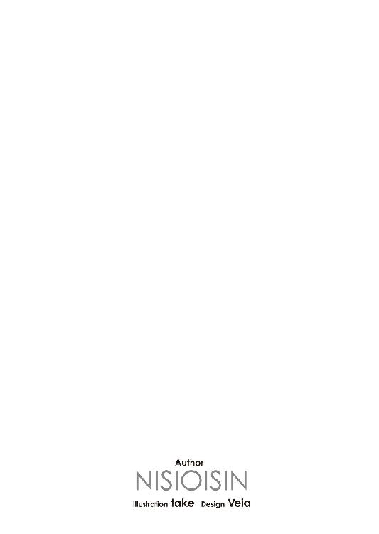
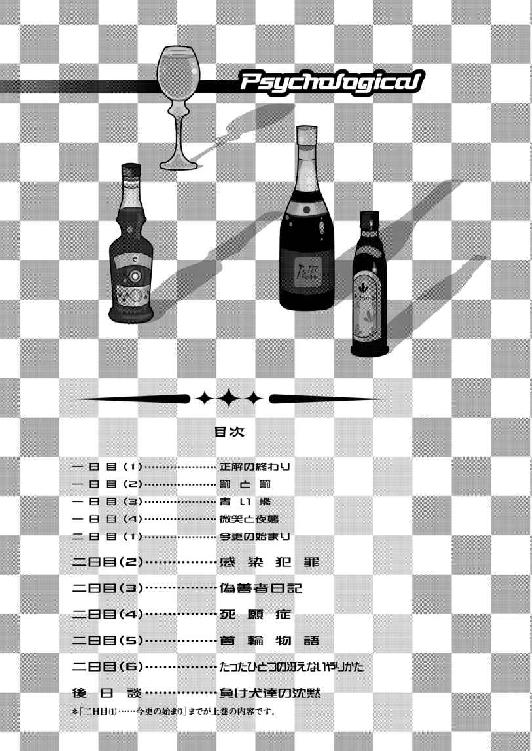
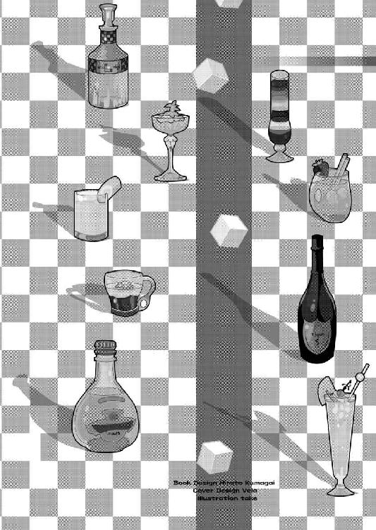
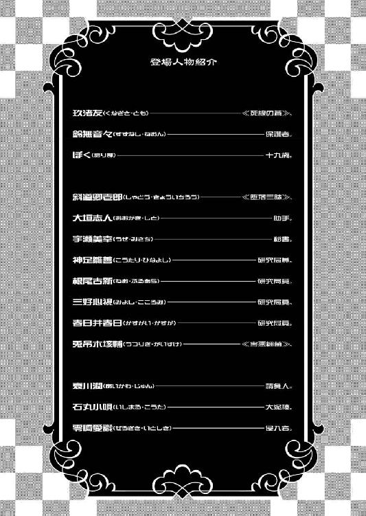
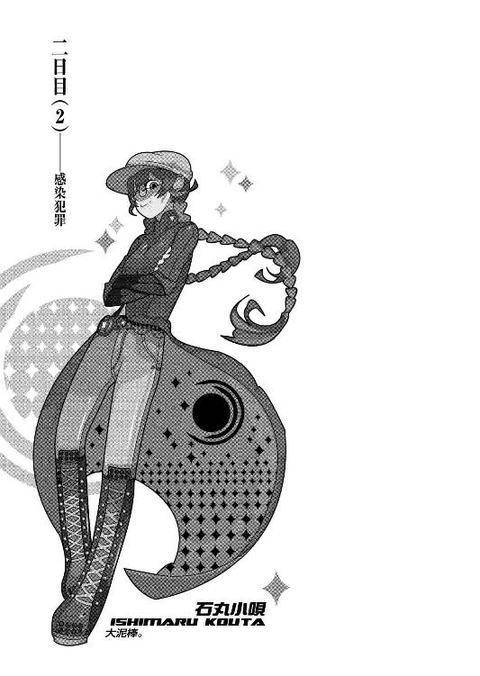
０
枯れない花はないが咲かない花はある。
世の中は決定的に不公平だ。
１
「──この出来損ないがッ！」
卿壱郎博士は割れんばかりの咆哮でそう怒鳴り、そして木製の杖で志人くんを打ちつけた。避けようともせずに頭部へとその一撃を受けた志人くんは衝撃で崩れるように倒れてしまった。しかしそれでも卿壱郎博士は手を緩めようともせず、倒れた志人くんの身体を、何度も何度も、その杖で打ちすえた。「出来損ないが、出来損ないが、できそこないがッ！」と、そう何度も繰り返しながら。
ぼくらは、それを見ていた。
何を言うことも出来ず、それを見ていた。
第一棟の、例の応接室の中。斜道卿壱郎、神足雛善、根尾古新、三好心視、春日井春日。宇瀬美幸、大垣志人。そして鈴無音々、玖渚友、ぼく。以上の十人が集合している。これは《彼女》を除いて、今現在施設内の全員が集まっているという意味だ。
「──......」
あれから、一時間以上が経過しているが、まだ警察機関は到着していない。通報自体は、あの死体を発見してからすぐに美幸さんがすませたらしいけれど、こんな山奥だし、それに夜中に降ったあの雨も災いしているようだった。道が崩れたりしたわけではないのだろうが、到着にはもう少し時間がかかるだろうということだ。
殺人事件。
ということになるのだろう。
現実感はないが、そう思う。昨日あれだけ闊達に話していた兎吊木垓輔が殺されたなど、全く現実感はないが、そういうことになるのだろうと思う。
「くそ......今日はぼくからの質問じゃなかったのかよ......」
志人くんが折檻を受けているのを瞳に映しながら、ぼくはそんな台詞を呟いた。もしそれが実現していたら、ぼくはあの男に何を訊いただろうか。訊くべきことがあったような気もするし、なかったような気もする。結局のところ兎吊木はぼくに対して勝ち逃げをした形になるわけだ。それが彼の望んだ行為だったかどうかは、ともかくとして。
「──もうおやめください」
と。美幸さんが博士の腕にすがりつくようにした。
「博士、落ち着いて──」
「うるさいっ！」
卿壱郎博士はそんな美幸さんをも振り切り、しかもその上、志人くんにしたのと同じように、杖で打ちすえた。顔をかばうように腕でその杖を受けた美幸さんは小さな悲鳴とともに、床へと倒れる。
「どいつもこいつも俺の邪魔をしやがって──」
言いながら、博士は美幸さんの背中を蹴った。
「──......」
こうも脆く、崩れるものか。
人間というものは。
今、ぼくの目前で激昂している小柄な老人の姿に、威厳も、あの老練そうな雰囲気も、そんなものはかけらとしてなかった。ぼくが昨日見たものは、何一つとして。そこにいるのは、大事な玩具を壊されてしまった子供のような、幼稚で、ただ、当たり散らしているだけの存在。あれだけの人間がかくも容易く堕する。よきにせよ悪きにせよ、圧倒的な威圧感でぼくを気圧したあの斜道卿壱郎ですらそうなのだから。
なのだから、たとえばそれがぼくなら。
「──見苦しいわね、斜道博士」
卿壱郎博士が美幸さんを再度打ちすえるために杖を振り上げたところで、まるで矢でも射ったかのような声が、音が、室内に響いた。それによって博士の腕がその地点で振り上げられたまま、停止する。
声の主は鈴無さんだった。
椅子に座って脚を組み、まるで博士を見下すかのように顎を上げ、そして実際、博士に向けて軽蔑の視線を送っている。
「全く──《堕落三昧》なんて大層な名前ついてるものだからもっと期待していたけれど、とんだ期待外れだわ。案外つまらない生き物だわね、あなた。つき抜けたつまらなさだわよ。六十年も生きた人間が、一人人間が死んだ程度のことでみっともなくも取り乱して、女子供相手にみっともなくも当たり散らして、事態の認識もできずにみっともなくも騒ぎ立てて。本当、見苦しい見苦しい見苦しい──」
「黙れッ！ 三十年も生きてない小娘が俺にそんな口を利くか！ 何も知らんくせに！」
怒鳴り、そして博士はその杖を鈴無さんに向けて投げつけた。鈴無さんはそれを避けようともしないどころか、まばたき一つもしなかった。杖の頂部が鈴無さんの額に炸裂する。それでも鈴無さんは、「ふん」と小さく呟いただけで、やはり博士に軽蔑の眼差しを送り続けていた。
真実くだらない生き物を見るような、そんな瞳。一度鈴無さんからその目で見つめられたことがあるぼくとしては、今の博士の心中は察するに余りがある。自分の矮小さや卑劣さ、とにかくそういった一切のものを味わわせてくれる、そんな瞳。
「貴様......そんな目で俺を見て──」
「博士！ やめてください！」倒れた姿勢のままで、志人くんが叫ぶ。「落ち着いて──冷静になってください」
「冷静！ この状況で冷静になどなれるかっ！ あれが死んだら──」博士は再度志人くんを振り返る。「あれが死んだら、あれがなくなったら一体どうなる！ 全ておしまいではないか！ 今まで積み重ねてきたものが全て終わりだ！」
《あれ》──兎吊木垓輔。
「......誰だ」博士はこちらを──皆のいるテーブルの方を、あらん限りの敵意を込めた表情で見遣る。「誰があれを殺した？ 誰の仕業だっ！ 誰が一体何のためにあんなふざけた真似を仕出かした！ この中にいるんだろう！ 恥を知らない背徳者がッ！」
怒鳴って、博士はテーブルを両手で叩く。しかしその声に応えるものはなかった。それは、博士に気圧されたのではなく、ただ単に、誰もその問いかけに対して答える言葉を所有していなかったのが理由だろう。
鈴無さんは既に博士から《最早瞳に映す価値すらもなし》とばかりに、視線を外していた。その額からは、さっきの杖だろう、わずかな出血が見られる。ただ、鈴無さんはそんなことを気にしてもいないようだった。何かを考えているようにも見えるし、何も考えていないようにも見える。
その隣にいる玖渚は、ただ黙って、状況を観察していた。
「──......戯言だよな」
ことの始まり──と言っていいのかどうかは分からないが、とにかく、最初に異常に気付いたのは、志人くんだったという。朝、いつもならあるはずの、兎吊木からの定期連絡がなかったらしい。それだけならば今までにも何度かあった──寝坊やら度忘れやら悪戯心やら何やら、いかにもあの兎吊木らしい理由で──ので大して気にもせず、こちらから連絡を入れてみたが、しかし、それでも何の反応もない。
少し普通とは違う気配を感じた志人くんは、博士と美幸さんに、それを報告。すると博士から《様子を見に行け》との指令が下り、志人くんはそれに従った。このときの時間が、六時半くらいのことだったという。
そして志人くんが、あれを発見した。血に塗れ、身体中という身体中を刃物によって蹂躙された、兎吊木を。壁一面に表現された《背徳者》の殺人芸術を、完全に見せ付けられてしまった。
兎吊木垓輔の死体の第一発見者は大垣志人だったわけだ。
「......背徳者か......」
博士がどういうつもりで言ったのかは知らないが、その言葉自体はその通りだろう。ここは山奥に隔絶された一種の閉ざされた空間。その中で一人、人間が殺されたというのなら、犯人は必然残りの人間の中に限られてくる。すなわち。
すなわち、醜く嫌な展開。
「──まあ、落ち着きましょうよ、みなさん」
どうしようもないような空気が流れ始めた──否、どうしようもないような空気が沈滞し始めたところで、そんな合いの手を入れたのは、根尾さんだった。一同に対して、まるでおどけるかのように両手を広げ、鷹揚っぽく構えている。
「熱くなってもどうしようもないことですよ。そうでしょう？ 博士。まずはこれからどうするかを考えなくちゃ」
「これから？」博士が鬱陶しそうな視線を根尾さんに向ける。「これから一体どうしようというんだ？ これからなど、もう存在しない。どこにも無在だ」
「いやいや、そう投げやりになるのはよくありませんって。そうですね、あんなふざけた真似をしてくれた奴に責任を取らせましょう。何、あんな派手な真似を仕出かしたんだ、何の証拠も残っていないわけがない。警察がきたらすぐにあんなもの、犯人が割れますよ。そうしたらですね──」
「犯人？ この中の誰かだろう？」
「そりゃ短絡思考ってものでござんすよ、博士。卿壱郎博士らしくもない。ほら、先日侵入者騒ぎがあったところでしょう？ 部外者の犯行の線も否めませんぜ。いや、きっとそうでしょうよ。ここがいくら難攻不落の城だとは言っても侵入不可能ってわけじゃないんです」
──侵入者。
その言葉に、ぼくは、他の誰かに気付かれない程度に、身体を硬くした。
「身内から疑うなんて、そりゃまあ無理もありゃしませんが、そういう考え方はよくありませんよ。大体俺達──研究局員がそんなことをする理由はないでしょう？ あれは俺らにとっても大切な大切な研究材料だったんですから」
「根尾！」
博士が、今までとは違った調子で怒鳴る。しかし根尾さんはそれに対しても「いいじゃないですかい、別に」と、何の悪びれた風もなく応じる。
「どうせ玖渚のお嬢様やそちらの聡明そうなお嬢様、少年くんにだって察しがついていることでしょうしね。だからこそ、彼女達はこんなところまでやってきた。そうでござんしょう？ もういい加減、騙し合いすかし合い化かし合いはこの辺りでお開きにしときましょうや。お互い痛くもない腹ァ探り合ってる場合じゃないでしょう？」
「............」「............」
根尾さんはそう言って博士と玖渚をそれぞれ窺うようにしたが、それに対して博士は苦虫を嚙み潰したような顔をしただけで何も言わず、玖渚はそれが聞こえていないかのように、ただ無視した。根尾さんは「やれやれ」と肩を竦めた。
「まあいいでしょう、続けましょうか。とにかく、そういうわけで局員の中に兎吊木さんを殺そうなんて奴はいない。当たり前ですよ、こりゃ。となるとなんですか？ 博士の秘書たる宇瀬美幸女史か、助手たる大垣志人くんを疑うわけですかい？」
博士の左右に倒れている、美幸さんと志人くんが、同時に反応する。
「しかしこれもない。その二人が博士に対して忠実であることは誰でも知ってる。言葉は悪いが、特に大垣くんのシンパ具合は尋常じゃない。そんなことをしても博士の不快を買うだけだと分かっているのに、あんなことをするわけがない。となると、どうなりやす？ ええ、《お客様》であらせられる玖渚のお嬢様達を疑うことになるんですが──」
こちらに視線を移す根尾さん。
「だけどこれもない。だってこの三人は兎吊木さんを助けに来られたんですからね。《助けに》という表現は我々にすりゃ少々心外ですが、とにかく殺そうなんて思うはずもない。そうでやしょう？」そして根尾さんは、また博士に向き直った。「そうなると博士、この中に犯人はいないってことになるんですよ。勿論あなたを含めてです」
「..................」
理路整然とは言いがたかったが、それなりに筋は通っている根尾さんの論理展開に、博士はさすがに黙る。いくら激昂して精神状態が冷静でなかったところで、瘦せても枯れても朽ちても果ててもそこは斜道卿壱郎、理屈そのものを無視することはできないのだろう。
「となるともう部外者の犯行しか考えられませんぜ。あれだけのパフォーマンスを見せるってこたぁ、あれですな、博士が敵対する研究機関の仕業じゃないですかい？ 俺としちゃあ張空機関やバイサール機構の連中なんかが怪しいと思いますが」
「......連中があんな派手な真似をするわけがない」
「かもしれませんな。しかし可能性はありますよ。だからこの中に背徳者がいるなんてなあ、まだ断言できませんぜ。ねえ？ そうでしょう？ 皆様」
一同に感想を訊くように、根尾さんは振り向いた。
「............」
確かにその通りだろうと思う。いささか口調がふざけた感じではあったが、それもこの重い雰囲気を打破するための手法だったのだろう。少なくとも、皆を──特に博士を──思考することが出来る程度には、冷静にすることに、根尾さんは成功した。
勿論それはこのぼくをも含めてだ。
「──心視先生」
ぼくは、ぼくらから見て一番離れた位置に座っている心視先生に、呼びかけた。先生は「ん？」と目を丸くして、それから何故か薄笑いを浮かべ、「なんや？ 我が生徒」と、こちらを向いた。
「......なんぞ、ウチに訊きたいことでもあるんかのん？ 我が生徒」
「......先生。あなたなら、あれを見ただけである程度のことは推測がついてるんじゃないんですか？」緊張しつつ、ぼくは言う。「何せあなたは人体解剖学の権威だ。どうして兎吊木垓輔は殺されたのか、その死因やらなにやらに──」
「へへっ。このウチが自分に頼りにされようってときが来るとは、意外やな。人生はつまらんけど、生きとるくらいの価値はあるっつーことか」先生は、向こうにいた頃によく見せていた、あの嫌な笑顔をぼくに見せる。「まあ、まだちらっと見ただけやから、大したことは言えへんけどな」
「──......」
「出血多量による失血死。それやなかったら外傷性ショック死ってとこやろ。そんなん見たら誰にでも分かるやろけど」先生は、特にぼくに限った風でなく、皆を相手にするように喋り始めた。「死亡推定時刻は、そやな、大体昨晩の夜中、零時から三時の三時間ってとこか」
「割と幅が広いですね」
「まあね。普通ぱっと見で死亡時刻を推定するときて、死後硬直の具合と、それから眼球の具合とかで判断すんねんけど、まだウチ兎吊木さんの身体に触ってへんし、それに眼球はあの状態やからな」
ハサミで刺し貫かれた、兎吊木さんの両眼。
「折角のご期待に添えんで悪いけど、今ウチから言えるこというたら、そんなとこやな」
「......どうも」
ぼくは頷いて、先生から目を外した。
昨晩の零時から、三時の間......、ぼくはその間、何をしていただろう。確か、午前の一時頃に春日井さんに会って、そして、その後──
「なんだいなんだい、アリバイ調査でもしようってかい？ 青少年」根尾さんが言う。「それならもっといい手があるぜ。ねえ宇瀬さん？」
急に呼びかけられ、美幸さんは「はい？」と顔を起こす。
「──なんですか？」
「ちょっと調べてきてよ。入退館者関係のログ」
「............」
美幸さんは博士を窺うようにする。博士は苛立たしげな風に「さっさと行って来い」と短く言った。
「......分かりました」
美幸さんは頷いて、そして足早に部屋から出て行く。
ログ......？ 根尾さんの言葉に、ぼくは首を傾げる。それはどういう意味だろうか。ああ、ひょっとして。それぞれの研究棟内に入るときにあるあの厳戒な施錠（カードキー、数字暗号、それにＩＤと声紋認識に網膜検査──）は、その度ごとにどこかの中枢コンピュータに記録されているということか。成程、確かにそれがあれば、犯行のあった時刻は決定的に限られてくる。何せ、第七棟に入るためには──
「......入るためには？」
ぼくは、そこで思考が停止する。
そうだ。記録云々の問題ではない。第七棟、その中に入るためにはそんな《厳戒な施錠》を突破しなくてはならないのだ。キーとして登録されていない人間には、兎吊木を殺すどころか、そもそも中に踏み込むことすらできない。
だとすれば──と、ぼくは根尾さんを見る。根尾さんは気付いていないのだろうか？ そう考えれば、あの第七棟に踏み込める部外者など、一人もいないということに。
たとえば赤色の請負人、哀川潤。彼女は声帯模写と読心術、そして錠開けの技術に関しては右に出る者はいないし、相当の距離を行かない限り、左に出るものすらも見当たらない域に達している（と本人が謳っていた）。あの人はあの人で、自ら人類最強を名乗るくらいのナルシストにして大自信家だからその辺りは話半分に聞いておいた方がいいかもしれないが、しかしそんな哀川さんをしたところで、あの絶縁扉を開けることは不可能だろうと思う。何せ相手は仕掛け錠ではない。厳密なロジックによって構築された思考機械なのだから。
根尾さんは平然とした風に、ただ、その幅の広い身体を椅子に収めている。勿論気付いていないわけがない。根尾さんが、自分で言ったことの矛盾に気付いていないわけがない。だとすれば、あれは博士を落ち着かせるための方便か。
──食えない人だ。
改めてそう思った。そしてそう思うことによって、ぼくは更に冷静になれた。
つまりその事実は、ぼくら三人──ぼくと玖渚と鈴無さん──の三人には、あの犯行は不可能だということを意味する。局員として登録を受けていない以上あのロックをクリアできるわけがなく、必然的にそういう結論が導き出されるわけだ。
「──......」
同じ理由で、彼女の犯行可能性も否定できる。となれば残るは七人──最初からこの施設内にいた、研究局員の中に犯人は絞られる。研究棟内に侵入が可能なのがその人達だけなのだから、これは必然。ここまでの論理展開に大きな間違い、後に訂正不可能になるような種類の間違いはない。
さりげなく、窺う。七人──卿壱郎博士、根尾さん、神足さん、春日井さん、先生、それに志人くん──部屋から出て行った美幸さん。七人。だけれど、さっき根尾さんが言ったことだって、やはり全くの方便ではないのだった。この七人の中に、兎吊木さんを殺さなくてはならないような動機を持つ──しかもああも残酷な方法で──人間がいるとはとても思えない。思えないのだが。
「つってもあれだけどね」と、根尾さん。「俺はゆうべはずっと、自分の研究棟──第五棟にいただけなんですがね。神足さんはどうです？」
「僕もそうだ」短い答の神足さん。「夜中に出歩く理由はない」
「ウチもそうやけど」
「わたしは犬の散歩に一旦外に出たかな。その途中でその坊やに会ったんだよね？」
春日井さんがぼくに言った。ぼくは何も言わずに首肯する。
「博士は？ どうなんです？」
根尾さんの質問に、博士は不機嫌そうに「同じだ」とだけ答えた。
「俺はずっとこの第一棟の中に、志人と宇瀬と、一緒にいたよ。そんなことはログを見れば分かる」
「さいですか。で、きみ達は？」根尾さんは矛先をぼくらにと変更する。「きみ達は昨日の夜、何をしてたのかな？」
「ずっと宿舎にいましたよ。ぼくが一旦、雨の降る少し前くらいに散歩に出ただけでね」
「ふうん。散歩ねえ」と、含みありげに根尾さんは頷く。「成程、夜の散歩とは、人間だねえ。ふうん、だとするとやっぱりこの中に犯人はいないってことになるわけか。誰も第七棟に近付いてないんだからな」
言っている根尾さん本人だって、勿論そんなことを思っているわけではないだろう。夜中に散歩をして、噓をつくし秘密も作る、つまりそれこそが人間だ。誰もが誰もに対して正直であるわけではない。
「......ねえいの字」と、鈴無さんが小声で、ぼくにだけ聞こえるように、囁くように言った。「この調子じゃ、少しまずい展開になりそうだわね」
「──？ もうなってると思いますけれど......」ぼくは玖渚を横目に窺いつつ（相変わらずぼぉっとした感じだ）、声を潜めて鈴無さんに応じる。「博士の言い草じゃないですけれど、これで全部お終いですからね......、兎吊木が殺されたんじゃ、ぼくらがここに来た意味なんかなくなっちゃって、もう厄介事しか残らない」
いや、鈴無さんが言っているのはそういうことではなく、この後に生じる警察機構との軋轢のことなのだろうか。執拗な事情聴取を受けることになるだろうし、それに恐らくは、しばらくの間ぼくらはこの事件の容疑者として、愛知県に拘束されることになるだろう。京都に戻れる日は予定よりも遅くなるかもしれない。ぼくは暇な大学生だし玖渚は無職の引きこもりだから構わないけれど、しかし鈴無さんは（アルバイトとは言え）職を持つ身。そういう《厄介》なのかと思ったが、しかし鈴無さんは「そうじゃないだわよ」と言う。
「どうにもこうにも風向きが悪そうだって意味......本当、浅野の頼みをきくとろくなことにはならない......、いつものことと言えばいつものことだけどさ......分かってるのにどうしてアタシはいつもいつも......」
「あの、鈴無さん？」
どうも自己嫌悪に陥っているらしい鈴無さんの言葉の真意がつかめず、ぼくが戸惑っているところに、美幸さんが戻ってきた。美幸さんは少し困ったような表情で、まずは一同に対して向かい、それから躊躇しつつ、博士の元へと歩いた。そして何やら博士に耳打ちする。
「......何？」博士が声に出して、美幸さんに確認した。「それは、確かなのか？」
「はい......間違いありません」
肯定する。何を肯定したのかは分からないが、とにかく美幸さんは頷いた。それを受けて博士は「ふむ」と考え込むような表情になった。そのままテーブルの方に移動して、博士は椅子に座った。座って、尚肘をついて、更に考え込むようにした。
「............」
......美幸さんは一体、博士に何を言ったのだろう。
いや、何を言ったか自体はこの際問題ではない。博士がそれを聞いて、冷静さを取り戻した──と言うよりも、初対面したあのときの、どこか底知れない雰囲気が、その小柄な身体に戻ってきたような、そんな風に見えたことこそ、ぼくにとっての問題だった。何故に問題なのかはまだ分からないけれど、とにかく、問題だった。
つまるところ嫌な予感。先生との再会を確信していたような嫌な予感が、腹の中で渦巻く。そしてぼくの嫌な予感は外れたことが一度もない。最悪の占い師の彼女のごとく、ただの一度も外れたことがないのである。
「──ふん」
と。博士が俯き加減だった顔を起こした。必然、一同の視線は博士に集中する。
「どうもまずいことになったようだな、諸君」
まずい、というその単語に、ぼくは鈴無さんを見る。鈴無さんは目を閉じて、まるで眠るようにしていた。額からの流血は、既に止まって固まっている。ぼくは博士に視線を戻した。博士は、老練そうなあの笑みを、その表情に取り戻していた。
「──おい、宇瀬」博士は美幸さんを見る。「──ゲートのところにいる警備員に連絡してこい。警察が来たら追い返すように、とな」
「え......」博士の言葉に驚く美幸さん。「え、でも、どうして......」
「理由などどうでもいい。そうだな、通報ミスだったとでも言っておけ。子供の......」と、志人くんを見遣る博士。「......悪戯だったとでもな」
「......はあ」曖昧そうに頷く美幸さん。状況がよく理解できない──否、全く理解できていないような、そんな顔。「......通報ミス、ですか......」
「どうした？ 早く行け」
「......でも、どうして......」
「いちいち理由まで教えないと俺のためには動いてくれないのか？ お前は」
「いえ、そういうわけでは......すいません、それではすぐに」
美幸さんは慌てたように博士に頭を下げ、そして再び駆け足で部屋を出て行った。
「......どういうことですかい？ 博士」美幸さんの出て行ったドアを見つめたまま、根尾さんが言う。「警察を追い返す？ 正気とは思えませんぜ。さっき宇瀬さんに何を耳打ちされたんです？」
「それだよ、根尾。それなんだよ」にやりと笑う卿壱郎博士。「まずいことになった」
「......そりゃ、まずいことにはなってますがね。しかし全然問題が別じゃないですか。警察追い返して何か事件の解決に繫がるってんですかい？」
「まあ聞け」
やんわりと掌で制して、博士は根尾さんの半畳を退ける。そして一旦、数秒の間を置いて、それから「そもそもだな、根尾」と言う。
「お前の言ったことはおかしいぞ。兎吊木のいた第七棟の玄関口には、厳重なセキュリティが敷かれている。どんな部外者をしたところで、あれを突破することはできんよ。少なくとも、張空やバイサールごときにはな」
博士は《少なくとも》にスタッカートをつけて発音した。その行為にまた、ぼくは意味の分からない重圧を感じる。一体このご老人、何を言わんとしているのだろうか。
根尾さんは博士からの指摘に、「ああ、そう言えばそうかもしれやせんな。気付きませんでしたよ」などと、わざとらしい相槌を打つ。
「しかしだからといって即身内犯人説に移行ってのは短絡ってもんでがしょう。博士、俺達ずっと一緒にやってきた仲間じゃないですか。兎吊木さんがあんなことになって気が顚倒してるのは察しますが、しかしそんな風に即座に決め付けられちゃ、俺達としても立場ってものが......」
「顚倒？ 失敬だな。そんなことはしておらんよ。俺は極めて冷静だ」
まるでさっきの激昂がぼくらの目の錯覚だったかのように、博士は堂々と言う。
「いやしかしですね、博士......」
「安心しろよ、根尾。俺が身内を何の根拠もなく疑ったりするわけがないだろう？ さっき俺に宇瀬が何と言ったか、知りたいか？」
台詞の前半には銘々大いに反論があるだろうが、しかし、その後半には興味をそそられたらしく、一同、続きの言葉を待つ。卿壱郎博士は少しもったいぶるようにして、それから、
「......昨晩《第七棟》の玄関口が開かれた記録は残っていないそうだ」
と言った。
「......残ってない？」反復する根尾さん。「残ってないって、そりゃつまり、昨晩誰かが第七棟に入った形跡がないってことですかい？」
「その通りだ。第七棟の扉が最後に開いたのは、志人と......玖渚のお嬢さんとそこの青年、その三人組が兎吊木との面会を終えて出てきた時間だと記録されている。勿論普通に考えて、この記録に間違いがあるわけがないだろう？ 根尾」
博士はまたも《普通に考えて》を強調する。まるで、普通に考えない方法があることを暗に示しているかのように。......まさか博士には、既に犯人......背徳者が誰だか分かっているとでも言うのだろうか？ 事件が発覚してからまだ一時間そこそこしかたってないというのに、既に今は解決編のシーンなのだろうか。ぼくにはとてもそうは思えないが、しかし、今朝の鈴無さんの話じゃないが、映画じゃあるまいし、ぼく自身に残り時間が予測できるわけもない。ここで終わりという気もするし、今でまだ半分という気もする。残りページ数が一体どの程度なのか、分かるはずもない。
ぼくの位置は不確かなのだった。
「そりゃ......つまり、どういうことですかい？」根尾さんは不審そうに、今度は本当に分からないというように、おどけた態度を崩して、博士に言う。「それじゃあおかしくなっちまいますよ。誰も第七棟に入ってないってことになる。機械の故障じゃないですか？」
「そんなことはありえない。それはお前だって分かっているだろう？」
「じゃあ......」と、根尾さんは少し考えるようにする。「......可能性としちゃ、最後に入った大垣くんと玖渚のお嬢様達が犯人ってのがありますが......しかしそれだと、三好さんの死亡推定時刻とくい違っちまう。博士、それじゃあ犯行は不可能ってことになりますぜ」
「厄介なことはもう一つあるんだよ、根尾」余裕たっぷりに博士は笑う。「まあ落ち着いて俺の話を聞くんだな。冷静になれ。大の大人が取り乱すのはみっともないぞ。宇瀬が第七棟の出入調査をするついでに調べてくれたんだ......他の局員、俺を含めた他の研究局員の出入り記録をな」
「......？ 他の......って俺達のですか？」
他に誰がいる、と矍鑠する卿壱郎博士。話しているうちに興奮してきたのか、徐々にメートルが上がっている。しかしそれと反比例するように、ぼくの気分......というか、勘、のようなものは、深く暗いところに沈んでいく。そんな気がする。
分かってきた。博士が何を言わんとしているのかはまだ不明瞭だけれど、しかし、どこに辿り着こうとしているかは分かってきた。それがゆえのあの余裕のある態度、それがゆえのあのもったいぶった態度。ジョーンズの法則。ことがうまく運ばないのに笑っている人間は、誰の所為にすればいいのか既に思いついている。
なのだとすれば──
「その結果は──宇瀬がいないからこれも俺が言ってしまうが──誰も夜中に、少なくとも三好の言ったような時間には自分の研究棟から外へ出ていないということだ」
その言葉に一同、息を吞む。
「一人だけ例外がいるが......春日井だな」
と、博士。春日井さんはぴくりと、ほとんど無表情のままで博士の言葉に反応する。
「春日井は午前一時頃、五分間ほど第四棟から外出している。さっき言っていた《犬の散歩》だな。しかしこれを考慮する必要はあるまい。あれだけの惨状、たかだか五分やそこらで形成できるものでないのは分かり切っているのだから」
「......それはどうも」春日井さんは《よく分からないが》とでも言いたげな、そんな模糊とした返事を博士に返す。「ありがとうございます。とりあえず」
「......え？ じゃあ、それって......」根尾さんが訥々と、言う。「......あれ？ それだと、博士、ますます俺達を疑う理由がなくなるってことじゃないんですかい？ 俺達はおのおの自分の研究棟から外には出ていない。それでもって、犯行現場である第七棟、そこにも出入りのログはない。つまりこりゃあ......」
「不可能犯罪やね」
心視先生が、根尾さんの台詞を遮った。
「そういうことやと思えへん？ 我が生徒」
「......そういうことだとは、思いますが......」
言葉を選びつつ、ぼくは先生の言葉を首肯した。確かに、仮説、今卿壱郎博士が語った内容を鵜吞みにするのなら──誰も第七棟の中には入っていないことになるし、そもそも、自分の研究棟からも出ていないということになる。となると、これを単純な名詞で表現しようと試みるなら。
密室状況。
それもかなり物理的な意味の。
「だけど、これが不可能犯罪だとして──」
卿壱郎博士がそれを言わんとしていたのだとして。どうしてそこに、警察を追い返す必要がある？ むしろ、この場合こそ彼らの出番ではないのだろうか？ 京都府警の二人組の刑事を思い出しながら、ぼくは考える。そして自然、博士の座っている場所を見遣る形になった。
博士は不敵に笑む。
「不可能？ そんなくだらないものはこの世に一つとして存在しない。存在するのは可能か、可能以前のものだけだ」
「いや、しかし博士、そんなケッタイな状況になってるってんでしたら、どうして警察機関に門前払いを食らわしちまったんです？」根尾さんが、ぼくの疑問をそのまま言葉にした。「それじゃあ理が通りませんぜ。博士らしくもない」
「やれやれ。おい根尾、少しは考えるということをしてみたらどうだ？ ここまで聞いてまだ気付かないようじゃ、お前は大馬鹿者の汚名を免れんぞ」
「大馬鹿者ですかい」根尾さんは腕組みをする。「しかしですなあ、博士」
「ここにいるのは何も俺達だけではないだろう？」
そう言って──
博士は、ぼくら三人を、顎で示した。それに連動して、根尾さんは驚いたように、神足さんは意外でもなさそうに、心視先生はさもありなんとでも言わんばかりに、春日井さんはどうでもよさそうに、志人くんは目を見開いて、ぼくらに表情を向けた。
ぼくは唾を飲み込む。鈴無さんは、相変わらず目を閉じている。本当に眠っているのかもしれなかった。その隣、玖渚友を窺うと、こちらも相変わらず、虚ろに、何にも焦点を合わせずに、ただ座っている。ラジャ・マハラジャーとパラッパ・ラッパーの関係について思考しているのかもしれないし、そうじゃないのかもしれない。とにかく普通の状態にないことは確かだった。こちら側の戦力を確認した上で（見るも惨憺たる結果だったが）、ぼくは一同に向いて対峙する。
「そいつはいくらなんでも聞き捨てなりませんね、斜道卿壱郎博士」ぼくは強いて声の語調を抑え、博士に言う。「それじゃあまるで、ぼくらが犯人で、兎吊木さんを殺したかのような言い草じゃないですか。いかに博士でも言っていいことと悪いことがある」
「うん？ おいおい、俺はまだ何も言ってないぞ」博士はこちらをばかにしているかのように、薄ら笑いを浮かべる。「何を慌てている？ それとも何か心当たりでもあるのかね？」
「身内を疑うのをやめたら、今度はぼくらを疑うってわけですか？ 簡単でいいですね。確かにあの宿舎には何のセキュリティもないから、出入りは自由ですけれどね。だけれど博士、兎吊木さんのいる第七棟に入れないって意味じゃ、ぼくらはあなた方よりもアドバンスがある。そうでしょう？ ログが残っていない云々以前に、ＩＤ登録されていないぼくらは、そもそも第七棟の中に入ることも、そして出ることもできないんですから」
「かかっ！ アドバンスだって？ そいつはどうかな！ そんな言葉は無意味過ぎる！」
博士はそう豪快に哄笑し、そしてスイッチでも切り替わったかのように、急に目を据わらせて、ぼくを睨み、そして指さす。
「お前一人ならできないだろうな、がき。第七棟に入ることも出ることもできないだろう。だがお前は一人ではないだろう？ お前ら三人の中にはとんでもないのが一人、いるじゃないか──」
ぼくをさしていた指を、そのまま横にずらして、博士は──玖渚友を示した。
「なあ、玖渚のお嬢さん？」
それに対し、玖渚はやはり何の反応も示さない。まるで何も聞こえていないかのように、まるで何も見えてすらいないかのように、何の反応も示さない。だけれど、玖渚と鈴無さん以外の全員が、博士の言葉に対して幾分の驚嘆を隠せなかった。
「ちょ──博士、そんな......」
「どうした？ 根尾。そんな驚くようなことか？ 何せそこにおわします玖渚のお嬢さんは、あの《一群》の統率者。被害者である我々の同志、兎吊木垓輔の元リーダー。あの程度のセキュリティなど、鼻歌交じりで突破することだろうよ。そうだろう？ 玖渚のお嬢さん」
玖渚は反応しない。それに対し、博士はさすがに苛立ち......というよりも、焦りを感じたようだったが、しかしすぐに取り直し、「ふん」と鷹揚に笑い、余裕のあるところを見せる。
「図星をさされて言葉もないというわけか？」
「何の論理展開にもなってないですよ、博士」ぼくはさすがに口調が速くなるのを感じつつ、それでもなんとか心を落ち着かせ、言う。「玖渚があんな厳重に過ぎるセキュリティを突破できるとする理由なんて......」
「突破しただけではない。突破した上で、そのログを消したんだ。込み入った手法だが、しかし不発だったとしか言いようがないね。我々のいる他の研究棟のログについてまで頭が回らなかったのが、所詮は子供だというところかな」
「無茶苦茶だ。そんな理が通るわけがない。所詮は子供？ どの口で言ってるんです、その言葉を。玖渚にロックを解除できるっていうんなら、あなた達にだって......」
「理由はあるさ」と、博士。「玖渚のお嬢さんだけがあのロックを解除し、しかもそのログを消すなんて難題をクリアできるとする理由ならばある。何故ならこのシステムの根幹プログラムを作成したのが、七年前に《あんな厳重に過ぎるセキュリティ》を構築したのが、たかだか十二歳やそこらの年齢でこの研究施設の素材を創造したのが、そもそも玖渚のお嬢さんだからさ」
さらりとそう言って、博士は再び玖渚を指さした。
やはり玖渚は、何の反応も、見せない。兎吊木の惨殺死体を見てから、何一言も口を利いていない。だけれど、とぼくは思う。もしも今博士が言ったことが真実なのだとしたら。
「信じられないくらいの天才なのだよ、きみのような一般人の思考ではカヴァーしきれないほどのな。勿論俺にだって理解しきれやしない。だがそれが、それこそが、玖渚のお嬢さん......あんた方三人を告発する理由になる」
「告発？ 告発だって？」ぼくは席を立つ。「ばかげてる。そんなふざけた理屈が通るわけがない！」
「落ち着きいよ、我が生徒」心視先生が、ぼくと博士との会話に横槍を入れた。見ると心視先生、いつの間にか煙草をくわえ、右手にはコーラの缶を構えていた。一体いつの間にそんなものを、この人は。「取り乱すのがみっともないゆーて、今鈴無さんがゆうたとこやろ？」
「......先生」
「博士。でもそれやったらそれやったでわからへんことがあるんやけどな？」
と、心視先生は博士に煙草の先を向けた。銘柄は分からないが、かなり細い、それは女性向けの煙草のようだった。向こうにいたときは葉巻をくわえていた癖に、肺でも悪くしたのだろうか。
「分からないこと？ 何だ、三好」
「さっき根尾さんゆうとりはったやないですか。こちらの三人は兎吊木さんを《助けに》来たんや、て。つまり兎吊木さんを殺す理由なんか持ってへんゆうことでしょ？ 玖渚のお嬢は博士の言う通り、兎吊木さんの元リーダーやし、となるとますますもって、殺す理由なんかあらへん。ウチら研究局員が兎吊木さんを殺す理由がないんと同じで、この三人にしても兎吊木さんを殺さなあかん理由なんかないで」
「発想が貧困だなあ、三好」博士は言う。「発想を転換するということをしようじゃないか。いやしくも我々は、学究の徒だろう？ まあお前は生物学が専門だから仕方がないのかもしれないが......」
「あ、その発言は一部の学問に従事しとる人達を不当に差別しとりますよ。まるで数学や工学が生物学より優れとると言わんばかりの他人を愚弄した表現や。なあ春日井ちゃん」
「全くです。それはこの世界が自分達の数式だけで全て構成されていると勘違いしている工学者ならではの思い上がった発言です。恥知らずにも程があります。きっとアラビア数字ばかりを見ていると感受性が鈍化していくのでしょう」
春日井さんが先生に歩調を合わせた。
ふうん。理系の中にも理系の中で派閥って奴があるのか。理系の人間といえば割と一枚岩だと思っていたけれど、それはただの思い込みだったらしい、と、あまりと言えばあまりに場違いなほど吞気なことを、ぼくは考えた。
それにしても春日井さん、ゆうべもそうだったけど、クールな振りして何気に毒吐くよなあ。好みかもしれない、などと、ぼくは更に吞気なことを考える。そうすることで、逃避する。
「そんなつもりはなかったがな......」女性学者二人に非難されて、博士は少し苦笑した。「では取り消して、ともかく三好、そもそも根尾の言った《助けに》来たというところには何の根拠もないとは思わないのか？」
「......根拠ですか？」先生はぼくらを一瞥する。「根拠ゆーて......そら、まあ、でも......」
「たとえば玖渚のお嬢さんが最初から、兎吊木垓輔を《殺しに》来たのだとは発想できないのか？」
「殺しに......？」さすがに先生が眉を寄せる。「なんですか？ それ。意味がようとれんのですけど」
「つまり、この研究施設に来た理由が兎吊木を殺すためだったということさ。最初からそのつもりだったのだとしたら──」
「それこそばかげてる！」ぼくは柄にもなく、怒鳴る。博士の台詞を遮ってまで、怒鳴った。「何の根拠もなくっていうのならそれこそが正しくそれじゃないか。どうして、玖渚が《友達》でありかつての《仲間》だった兎吊木を、殺さなくちゃならないんだ？ ぼくらにそんなことをする理由は、どこにも──」
「おいおい、口の利き方に気をつけろよ、坊主」
博士は韜晦するように、肩を揺らす。
「今のお前らの運命は、この俺の胸三寸にかかっているんだからな。むしろ感謝して欲しいくらいだ、警察を追い返してやったことに。そこから俺の善意を感じ取れないのか？」
「悪意なら感じ取れますがね。マッドデモン博士」
ぼくの反駁に、しかし博士は愉快そうに笑うだけだった。
「しかし博士、この青年の言うことにも一理ありますぜ」と、根尾さんが博士に向けて問う。「いくらなんでもその考え方は牽強付会に過ぎませんか？ 確かに、博士の言うことも分からないわけじゃありませんが──」
「理由か？」と、博士は笑うのをやめた。「玖渚のお嬢さんが兎吊木を殺す理由がないと、根尾、お前もそう言うのか？」
「はあ──」根尾さんは一瞬、口籠もるように。「ええ。仮に玖渚のお嬢様がセキュリティを突破できるとしても、その上ログを消すこともできるとしても、ですぜ。いくらなんでもあの玖渚機関の関係者──それもとびっきり中枢に近いところの関係者が、何の考えもなく兎吊木さんを殺すなんてなぁ──」
「それは分からんぞ、根尾」
博士は玖渚を見遣る。
「確かに分からない。どうして兎吊木垓輔を、玖渚のお嬢さんが殺さなければならなかったのか、その理由は分からない。この俺をしてもそんな理由は一つとして思い当たらない。だがそんなもの、必要ないだろう？ 必要ないのさ。何せそこにおわします玖渚友嬢は──」
今しがた口にした台詞と同じようなことを、博士は言う。ただ、その先は。
「──×××××だから」
博士がそれを言い終える以前にぼくの身体は動いていた。無意識にではない。確信的な統覚的なまるっきり正常な意識を持って肉体は動作していた。ただし思考は停止していた。拳を握り締めて一歩で踏み切りテーブルの上に着地。そしてそのまま博士に向かって駆けようとしたところで右から頭部に衝撃が走る。それはコーラの缶だった。目の端にぼくへ向かって駆けてくる心視先生が映る。成程突然コーラなど飲み出して不自然だとは思っていたけれど、心視先生、これを予想してのことだったのか。そうぼくが気付くのはずっと後のことで、映った心視先生の姿はやはり映っただけで何の意味も持たない。ぼくには何も見えなかった。何も聞こえなかった。見えない。聞こえない。紅。全てが赤い。血の色。血眼。光も音も全てが真紅。だけれど心視先生のその行為はぼくの動きを一瞬止めるという意味では成功していた。再び駆けようとしたところで後ろから。後ろから追いついた鈴無さんがぼくの足を払った。広いテーブルの上でぼくの身体は少し宙に浮く形になる。そのわずかな時間に鈴無さんはぼくの頭部を鷲づかみにしそのまま渾身の力で全体重を乗せて、テーブルに叩きつける。丈夫な木製のテーブルが軋む音。それはぼくの骨が軋む音だったかもしれない。勿論受身など取りようもなかったぼくは全身に衝撃が伝わるのを感じるがそれでも尚博士に卿壱郎博士に駆け寄ろうと手を伸ばしその手を心視先生に押さえつけられ。コーラの缶が炸裂したその頰を思い切りはたかれなにやら先生から罵声を浴びてそして左腕を固めている鈴無さんもぼくに。何かを言っているようなしかし聞こえない。落ち着け。何をしているぼくは何を。違う。正しいことをぼくは。
多分。
このときぼくは発狂したのだと思う。
鈴無さんに首筋を殴られて意識を失うその一刹那前、左眼の赤い風景の隅に、玖渚の蒼い髪を捉えたような気がしたが、それは気のせいだったかもしれない。
２
ぼくの意識が戻ったとき──ぼくの意識が、少なくとも正常と言えるレヴェルにまで回復したとき、ぼくがいた場所は檻の中だった。コンクリート打ちっぱなしの床、壁、天井。そして鉄格子。薄暗い。どこか澱んだ空気。どこか重い雰囲気。憂鬱な気分。気だるい。もう少し眠っていたい気分。まるで悪い夢でも見ていたかのような。しかし悪い夢なら悪い現実よりはまだマシなのではないだろうか。そんな意味のないことを考えてしまうくらいに。
ああもういい。もうどうでもいい。ずきずきと痛む後頭部。それに全身。本当手加減なしだ。鈴無さんも心視先生も。容赦もヘチマもあったものじゃない。そう言えば向こうにいた頃にもよく先生には殴られたものだ。半分以上、否、九割以上、それは先生の憂さ晴らしみたいなものだったけれど、だけれど残りの一割は、今思えば正当だったのかもしれない。今思えばと言っても、今更そんなことを思うつもりは更々ないが。殴られないと分からない、痛い目をみないと止まらない。本当にぼくは、あの頃から何も成長していない──
「あ。いーちゃん、起きたの？」
ぼくの意識をはっきりと覚醒させたのは、玖渚のそんな声だった。
「はっおー」
「............はっおー」ぼくは軽くポーズを取りつつ玖渚にそう応えて、横になっていた身体を起こす。「......えーと」
改めて辺りを見る。
夢うつつで確認したときと変わらず、そこは牢獄のようだった。その中にぼくと、玖渚、そして鈴無さんが直接地面に座っている。
「あら。いの字。気付いたのね。よかったよかった。ちょっと殴り過ぎちゃったからもう起きないんじゃないかと心配してたんだわよ」
「それは、どうも......」ぼくは鈴無さんに、いささかの気まずさを憶えつつも、頭を下げる。「えっと......ここはどこですか？」
「第四研究棟。春日井さんが使っている研究棟の、その地下だわね」
「......そうなんですか？ でも、まるで牢獄......」
「実験用の動物を収容するためのケージらしいんだよ、ここは」玖渚がなぜか楽しそうに笑いつつ、言う。「うふふー。僕様ちゃん、檻の中に入るのはこれが初めてだよ。初めては嬉しいな」
「ぼくはこれで五回目だ......」言いつつ、鉄格子に触れてみる。当たり前だが、びくともしなかった。「えっと......状況がよく認識できないんですけど......、どうしてぼくら、動物の檻の中にいるんですか？ ぼくらが実は類人猿だったとかでもない限り、納得できそうにないんですけれど」
「どうしてもこうしても、博士の指示だわよ。ていうかいの字、あんたどこまで憶えてる？」
「......実を言うと、あんまり。鈴無さんと心視先生にぼこぼこにのされたってのは分かってるんですが......」ぼくは鈴無さんの問いに正直に答える。「えーっと......、朝起きて屋上にいたら鈴無さんが声をかけてきて......」
「噓。そこまで遡っちゃうの？ もしそうだったら説明が大変面倒なんだけど」
「ああ、ちょっと待って下さい......落ち着きます」ぼくはコンクリートの壁を背に、姿勢を正して座りなおす。「......その後玖渚の髪を結んで......あれ？ ああ、そうそう。......はい。思い出しました」
「そう」頷く鈴無さん。「それは手間が省けて大変助かるわ」
「うふふ、いーちゃんの記憶力は相変わらずなんだね。あれだけ殴られたらショックで忘れても不思議じゃないけどさ」
「............」
あれ。そういや玖渚が元に戻っている。そんなことを思いつつ、ぼくは「それで、ぼくが寝てる間に何があったんですか？」と、鈴無さんに問う。元に戻っているということは、玖渚に質問しても無駄だろうと判断しての行動だ。
「アタシ達は容疑者ってわけよ、要するに」と、鈴無さん。「それでここに監禁されちゃったってこと」
「......非常に簡潔で分かりやすい説明、どうも」
第四棟。春日井さんの担当する研究棟。そして地下......。なんだか実験動物にされたような気分だが、しかしそれと囚人の気分とどちらがマシなのかは、デリケートな問題なのかもしれない。よりにもよってこんなところに閉じ込めるとは、あの博士、想像以上に悪趣味だ。
うーん......。そう言えば以前、ある殺人事件の容疑者をぼくのアイディアで隔離監禁したことがあったけれども、成程、いざ自分がそういうことをされてみるとこういう気持ちになるわけだ。今更だけれど、あんな提案は二度としないことにしておこう。
「それで、どうなってるんですか？ 状況は」
「悲しいくらいにどうにもなってないわ。そうね、博士は《今後の対応を考える間、きみ達には少し不自由しておいてもらおうか。なあに悪いようにはせんよ》とか何とか、言ってらしたけど」
「そうですか......」悪いようにはしないと言って地下牢監禁なら、もし悪いようにされていたらどんな目にあっていたのだろうか。考えただけでぞっとしない話だった。「......ああ、完全に思い出してきましたよ。......うわあ」
ぼくは今更、驚きの声をあげた。さぞかし間抜けだったことだろうと思う。鈴無さんはそんなぼくをすがめるように見つつ、「ま、そういうこと」と言う。
「アタシ一人が下手に暴れてもどうしようもなさそうだったから従ったけれどね......、いやあ、本当、いの字と一緒に旅行なんかしたらロクなことにはならないとは思ってたけれど、ここまでとはね。事故頻発性体質、ここに極まれりだわ。頻発ってより誘発なのかしら、この場合」
「ぼくだってこんなの予想外ですよ......」それに、今回のこれは、どう考えても、一つの因子の意味ですら、ぼくの責任ではない。兎吊木を殺したのがぼく本人でもない限り、鈴無さんの嘆きはあたらないと思う。「本当、予想外だ......今回はもう何の事件も起きないんもんだとばかり思ってた......」
「うふふ、これだからいーちゃんと一緒にいると退屈しないんだよねー」玖渚が楽しそうに笑う。「本当、退屈しない。人生って楽しいなあ」
「......殺されたのはお前の仲間なんだけどな、この場合」
「うん？」首を傾げる玖渚。「......うん、でもまあ、済んだことをああだこうだ言っても仕方ないよ。人間前向きに生きなくちゃだよ」
「......そういう奴だっけな、お前は」
確か、そうだったように思う。さっきまでの玖渚が、どこかおかしかっただけだ。そう思おう。今のところは、そう思っておくことにしよう。
「とにかく、今の問題は......、この状況をどう打破するかってことですね」
「打破する、ねえ......素敵な目標だわね、それはまた」がしゃり、と鈴無さんが鉄格子をつかむ。「さすがにこりゃアタシでも無理だわ。浅野がいればなんとかなったんだろうけれどねえ......」
「......みいこさん、鉄も斬れるんですか？」
「少なくともコンニャクは斬れるみたいだけどね......居合道も抜刀道もある程度腕が立てば斬鉄が可能だって話を聞いたことあるし。でもまあ、ここにいない人間のことを言っても仕方がないわ」
「ですね」
ぼくは天井を見上げる。映画やなんかだと、こういうところには都合のよい換気孔があって、そこから脱出できたりするものなのだが、しかしさすがは現実問題、そんなものは存在しなかった。世の中そうそううまい展開ばかりがあるわけではない。やれやれ、空気が澱むわけだ。全く、人道的な扱いもあったものである。とにかく、冷静な目で判断する限り、このケージから脱出できる手段はなさそうだった。いかにも頑強そうな鍵がかかっているし、ぼくら三人の中に錠開けのテクニックなど持っている人間はいない。
「それにしても......とんでもねえ滅茶苦茶言いやがって、あの爺い」
「お。いーちゃんの言葉遣いが乱れてるんだよ。人前では珍しいね」
「珍しくもなるさ。なりますともさ、全く。まさかこの後拷問が待ち構えてるんじゃないだろうな？」
心視先生がいることを考えると、それはありえる。実際にやるかどうかはともかく、あの先生は他人の嫌がることをやらせればピカイチだ。伊達や酔狂で《青田狩り》のニックネームをホシイママにしていたわけではない。
「それはないんじゃないの？ だってあの人、いーちゃんのこと止めてくれたんでしょ？ 博士殴ったりしたら大変だったよ。うにゅってなってたよ。そう考えたら心視ちゃん、案外いいひとだと思うけどな」
「いいひとね......まあ、そうかもな」
知らないということは幸せだった。ふむ、ぼくが失神している間に、どうやら鈴無さんから玖渚に心視先生についてのレクチャーは済んでいるようだった。鈴無さんのことだから、当たり障りなく伝えてくれたことだろう。
「それにね、いーちゃん。博士はそれほど滅茶苦茶を言ったわけじゃないよ。ちゃんと筋は通ってるんだよ」
「あ？ どこがだよ。荒唐無稽もいいところじゃないか。こじつけどころかこじついてすらいない。九九を憶える以前の小学生だってあれよりはマシな推理をするさ」
「アタシは九九ってできないけどねー」鈴無さんが横槍を入れる。「習う前に学校やめちゃったし」
「......。......」「............」
「？ 続けていいわよ？」
「はあ......、えっと、何の話でしたっけ」ショックで忘れてしまった。「そう、博士の推理が滅茶苦茶だってこと。牽強付会。うん。誰も研究棟から出ていない。誰も第七棟に出入りしていない。ゆえに玖渚友一味が犯人。なんだそれ？ ゴールドバッハの定理だってもうちょっと筋が通ってたぞ？」
「一味ね」うふふと玖渚が嫌らしく笑う。《一味》という言葉の響きが気に入ったらしい。「うん。一味はいいね。一味。一味だけにヒトアジ違う、なんちゃって。うふふ」
「......まあ、一賊よりはいい感じだろうな......。話をそらすなよ。ただでさえ量食ってるんだから......、博士の推理のどこに筋が通ってるってお前は言うんだ？ 玖渚のお嬢さんはあの《一群》のリーダーだったんだからあの程度のロックは簡単に開けられるはずだ、なんて、本当にわやくちゃ──」
「開けられるよ」と、玖渚が普通に言った。
「──......はい？」
「開けられるよ。あれ」玖渚は繰り返す。「しかも簡単に」
「簡単に？」「超簡単」
改行が入らないくらい間髪を入れない玖渚の答に、ぼくはしばし頭を抱える。
「......それは一体どういうことでしょうか？ 玖渚のお嬢さん」
「博士が言ってたでしょ？ あのシステムを作ったのって、基本的には僕様ちゃんなんだよ。ま、正確には直くんとかみっちゃんとかにも手伝ってもらったけどさ。だから仕組みを読み取る前から、あれがどういう構造になっているのかは知ってるんだ」
みっちゃん──霞丘道児さん。直さんの親友にして、根尾さんの言い方を借りるなら、かつて《玖渚機関の中枢》に近い所にいた人間。そして現在は──いや、現在はともかくとして、ともかく昔、ぼくと出会う以前の玖渚は、常に直さんと霞丘さんとの三人で行動していた。しかし、だからと言って直さんも霞丘さんも、機械工学方面に関しては素人以前だったはずだ。ならばそれはやはり、玖渚が一人で構築したといってもいいことになるのだろう。
「──だけど、だからって道具がなきゃどうしようもないだろ。仕組みが分かってたら錠が開けられるってんなら、誰だってピッキング犯になれるよ。ぼくだって自分の部屋の玄関の鍵がどういう仕組みかは知っているけれど、でも鍵なしじゃとても開けられない」
「うん、そうだろうね」頷く玖渚。「それは確かに、潤ちゃんとかでもない限り無理だろうと思うよ。けどね──そうだね、ほらいーちゃん、たとえばこの研究施設に入ってくるとき、入所者名簿に名前書いたでしょ？」
「ああ。なんだよ、見てたのか？ ゲームやるのに必死だったと思ってたけど」
「別にゲームやってたんじゃないけどね......、そのとき警備員さん言ってたじゃない。デジタルにするよりこういう古いやり方の方が誤魔化しが利かない、みたいなこと」
「言ってたっけ」大分昔の話なので、もう憶えていない。「ふうん。それが？」
「つまり、高等技術は高等技術で抜け穴があるってことだよ。具体的に言うとだね、たとえば僕様ちゃんがさっちゃんのいる第七棟に行ったとき。あのときにさっちゃんから一台コンピュータを拝借して、それで卿壱郎博士の第一棟にあるんだろうマザーコンピュータに接続する。そして研究局員の新規メンバーとして僕様ちゃんを登録しておく。勿論ＢＢＣでね。それでもってさっちゃんを殺した後で、それを消去しておく。ログ消し用のツールも使って、扉の開閉があったことも含めて《なかったこと》にしておくわけだよ」
そういう表面だけを聞かされると、本当に簡単そうだった。しかしそれは玖渚が説明をかなり簡素化しているだけの話で、実際上クリアしなければならないプロテクト、障壁、防御プログラム、警報装置、そういったものが数多く存在しているはずだ。
──だけど玖渚なら。
確かにそれが、可能かもしれない。ただでさえ高い技術をその身に誇る玖渚友なのに、その上でセキュリティの根幹部を真実の意味で《知って》いるとなれば。
奇しくも、博士の言った通りに。
「コンピュータのセキュリティには管理者権限って奴があるからね。少なくとも僕様ちゃんが他の人より断然有利な立場にいるのは本当なの。そう言えばセキュリティの突破が得意だったのはひーちゃんだったけどね......、僕様ちゃんだって別に苦手ってわけじゃないし」
「《ひーちゃん》ってのは《二重世界》か」
「お？ わわっとびっくり、いーちゃんの記憶力が正常に動作してるよ。いや、異常なのが正常なんだから、正常に動いたときは異常に動作してると言うべきなのかな」
「何気なしに失礼なこと言うなよ。兎吊木がよく口にしてたんだよ、その名前を。お前とちぃくんの次くらいにな」
「ふうん。さっちゃんもよく分からない人だなあ」
玖渚に言われればお終いだと思うが、しかし、死んでしまった人間のことを悪く言うのはよくないだろう。たとえそれが、あんな変人のことでも。磔にされて殺された──逆か、殺されて磔にされた兎吊木垓輔。そんな話を聞けば、ひーちゃんだのちぃくんだのあっちゃんだの、その辺のかつての《チーム》の連中は悲しむのだろうか。直接にはその内の誰も知らないぼくには、判断の仕様がなかった。
「しかし......あの声明文みたいなものはなんなんだ？ 《You just watch,『DEAD BLUE』!!》だっけ。日本語に訳せば《まあ見ていろよ、死線の蒼》ってところなんだろうけど......」
「さあね。つまりは僕様ちゃんに対して《余計なことをするな》って警告してるんじゃないのかな？ 釘をさしてるって言うか。ふふ。うん、ふふふ」
《釘をさしている》という自分で言った比喩が面白かったらしく、玖渚はくすくす笑った。その掛詞で笑える神経に対しては、さすがのぼくでも退いてしまうが。
「余計なこと......兎吊木を助けようとしたことか？ だけど、それを余計なこととするんなら、それで兎吊木を殺したら意味が転覆するぜ」
「そういう疑問は今のところは保留するしかないんじゃないのかな......。そんなことを言ったら、どうして犯人はさっちゃんをああも無惨に痛めつけて切り刻んだのかとか、どうして腕を切り取ったのかとか、そういうところに問題が移行していくよ」
「執拗に死体を切り刻む理由って言えば、怨恨辺りが真っ先に思いつくけどな......」
だけれど、一年以上もの期間、あの建物から一歩も出なかった兎吊木が、あそこまで悲惨な目にあわされるほどの恨みを買っていたとは思えない。無論それは《この研究施設内》に限った話だが──《チーム》時代の悪行を思えばあれくらいの目にあってもやむなしといえるかもしれないからこの注釈を外すわけにはいかない──そう思う。
「でも、お前がたとえあのロックを外せるとしても、だぜ。それだからってお前が兎吊木を殺す理由......つうか、必然性は乏しいだろ。てかそれ以前に、お前兎吊木のいた第七棟に行ったときに、ずっとぼくか志人くんかと一緒にいたじゃないか。兎吊木と話してたときは別にしても、あの部屋にはコンピュータなんてなかったし。マザーコンピュータにアクセスするなんて、不可能だろう？」
「ははっ。いの字、随分とまあ頭の平和なことを言ってるのね」と、笑ってみせる鈴無さん。「博士にとっちゃそんな些細なつじつま合わせ、どうでもいいんでしょうよ」
「──どういう意味です？ それは」
「要はほんの少しでも論理が通ってたらそれでいいってことだわよ。博士だって別に、本気であおちゃんが犯人だって確信的に思っているわけじゃないわ。多分ね。いの字の言った通り、そこにこじつけられるかどうかが問題ってとこ。今はそのためのタイムラグってところだわね」
「タイムラグ──ですか？」
「そう。今ごろ博士は......博士だけじゃないわね、局員総動員で、《玖渚友一味が犯人である証拠》を論理立てている頃でしょうよ。春日井さん？ あの人が言ってたわ、《五時間もすれば今後あなた達がどうなるかが決定すると思う》ってさ。うん、いの字が目ェ醒ます前まで、丁度その話をしてたとこなのよ」
「......と言いますと？」
「つまりだね、いーちゃん」玖渚は何の気負いもない風に言う。「博士は僕様ちゃんをさっちゃんの後釜に据えようとしているんじゃないかってこと」
刹那、絶句した。玖渚を──兎吊木の代用品として？ それは。それはつまり。
「警察に引き渡さない代わりに研究に──否、実験に協力しろってとこなんでしょうよ」
「そんな......それこそ、滅茶苦茶だ」
「そ。滅茶苦茶なんだわよ、今の状況は」鈴無さんは一種諦観を込めた感じだった。「アタシやいの字がどういう扱いを受けるのかは知らないけど......、そうね、あおちゃんに対する人質とかかな。アタシだったらそうするわ」
「そんなことが......」
しかし、玖渚友は兎吊木垓輔の代用品として、確かに相応しい。否、より何層倍にも相応しいと言うべきなのだろう。博士がやっていることが、昨晩玖渚が予想していた通りなのだとしたら。その実験材料として、確かに玖渚友は最適の素材だ。兎吊木でもそれは十分によかったのだろうが、それが玖渚なら最適と言える。
特異性人間構造研究。
「そんな......そんなことが──そんなことが許されるわけが──」
「おっと。またキレないでよ、いの字。アタシ一人でそれを抑えようと思ったら、あんたに怪我させずに済ませる自信はないわよ。さっきは三好さんが協力してくれたからよかったけれど。骨の半分は覚悟してもらわないと」
「......大丈夫です。冷静ですよ、ぼくは」などと言いつつ、ぼくはコンクリートの壁に拳を打ちつけた。痛かった。「極めて冷静です。ええ」
「にふふ」玖渚は（自分のことだというのに）吞気そうに笑う。「なんだか懐かしいなーこういうの。ピンチ的状況ていうか、危機ライクなシチュエーションていうか」
危機ライクって何だ。
「......随分と楽しそうだな、玖渚友」
「まあね。でもま、こんなの、いーちゃんと初めて会ったときに較べたら大したことないよ。殺されるとかそれ以上とか、そういうことじゃないんだし」
「......とにかく、ここに来たことは全くの徒労ってことになっちまったな」ぼくは言う。「さて、これからどうする？ どうします？ 鈴無さん」
「どうしようもないだわよ、これじゃ」鈴無さんは言う。「まあアタシが戻らなかったら浅野が気付いて何らかのアクションを起こしてくれるとは思うけれどね......、それも明後日かその辺の話だろうし」
「どの道こんな地下三十メートルに閉じ込められたら、僕様ちゃんだってどうしようもないよ。電話も取り上げられちゃったし、ＰＤＡもないしね。無力無力無重力」
「無重力違う」
ぼくは大きく嘆息する。
「確かに......、この閉塞的な状況を打破する手段はなさそうですね──」
「──手段でしたらありますわ」
ぼくの落胆の台詞に、その声はごく自然に、当たり前のように割り込んできた。まるで自分の出番を待っていたかのような、見事なタイミングだった。鈴無さんのものでもない、玖渚のものでもない、そして勿論ぼくのものでもないその声が聞こえてきたのは、鉄格子の向こう側。
そこに石丸小唄は腕組みをして立っていた。
何の足音もなく何の気配もなく何の前触れもなく、そこに。
目深にかぶったデニムのハンチング帽、デニムのコート、編上げの靴。眼鏡の奥に幽かに覗く瞳が鋭くぼくらを見下ろしている。にやにやと、まるで状況を楽しんでいるかのように──玖渚さながらに状況を心底楽しんでいるかのように、小唄さんは笑っていた。
「──初めての二人には初めまして。そうでないお友達にはこんにちは。わたくし石丸小唄と申します」小唄さんは、薄暗いこの地下でもかろうじてそれと分かる程度に、唇を歪めて、軽く顎を上げた。「以後、よろしくお願いしますわ」
鈴無さんが用心深げに眉を顰めて身体を構える。玖渚が目を丸くして不思議そうに首を傾げる。ぼくはコンクリートの壁を背に、立ち上がった。
「......やぁ、小唄さん。昨日はどうも」慎重に、慎重に、極めて慎重に。「こんなところで出会うとは、奇遇ですね」
「むしろ遇機と言った方が十全ですわね、お友達」小唄さんはふてぶてしい態度と慇懃過ぎる言葉遣いで、揶揄するように言う。「ええ、実に陳腐な陳腐ですわ」
「......どうしたんですか？ こんなところで。ひょっとして道に迷いました？」
「いいえぇ。そうじゃありませんわ、お友達。全然そうじゃありません」くつくつと、笑いをかみ殺しながら、小唄さん。「珍しい生き物がケージに入っていると聞きましたので、少し見物に来てみたわけですわ。あの斜道卿壱郎博士にとってかかったという、珍しい生き物が」
「......」
「あなた、ちっとも笑わないんですね」小唄さんは少し呆れたように、一息つく。「笑顔は会話の基本ですわよ？ それでよくもまあ十全な人間関係が維持できるものですわ。それともできていないのですか？」
「ご忠告痛み入りますよ、石丸小唄さん。だけど意味もなく笑うくらいなら死んだ方がマシです」ぼくは曖昧っぽく頷いた。「それで、何か御用ですか？ そもそもここまでどうやって入ってきたんです？」
「いい質問ですわ。しかしそれは後々のお楽しみということで──」小唄さんはそしてぼくから視線を外し、玖渚、鈴無さんの両二名を見遣る。「ふふ。檻の中に二人の女性。なかなか素敵な構図ですわ」
オプションの一名が邪魔だと言わんばかりの言い草だった。
鈴無さんは、突如、何の脈絡もなく現われた小唄さんのその台詞に対して「ふ」と、軽く笑ってみせた。
「いの字は割と顔が広いのね。こんな隔離された場所に二人もお知り合いがいるなんて」小唄さんにではなく、ぼくに向けて言う鈴無さん。「しかも両方ジョセイときてる。在原業平みたいだわね」
「はあ」よく分からない比喩だった。
「それで、どういうご関係なわけ？ こちらの素敵なレディとは」
「昨日わたくし、その方にお付き合いを申し込んだのですが、ものの見事に振られたのですわ」
鈴無さんの問いに、ぼくが答えるより先に、小唄さんが答えた。答えやがった。
「ねえ、お友達？」
「......はい。まあ、十分の一くらいの真実はついていますね」
「真実なんて一割もあれば十分ですわ。だけれど」と、小唄さんは少し口調を改めた。「状況も変わったようですし、今ならその考えを改めていただけるのではないかと......」
「しつこい女は嫌われるわよ」と、鈴無さんが、ようやく小唄さんに向けて、声をかけた。「そうじゃなくて？ 《お友達》さん」
それに対して小唄さんは全く怯むことなく、「そうかもしれませんわ」と言った。鈴無さんから発せられる敵意をまるで意に介さずに受け流している。なんでもないことのようだが、それがどれだけすごいことなのか、ぼくは知っている。
「でもわたくし、それなりに往生際は悪い方なのですわ。......敵意を少しは控えて欲しいものですね。わたくし、別に敵じゃあありませんよ。むしろあなた方とは仲良くできると思いますけれど......、特にあなたとは」ぼくを顎で示す小唄さん。「そうは思いません？ お友達」
「さっき《聞いた》って言ったよね？」と、鈴無さんが、小唄さんの質問には答えず、逆に質問する。「《聞きましたので》って。それってどういう意味なのかしら？ 誰かからアタシ達がここに囚われているって聞いたって意味にとってもいいのかしら？」
「──おっと。口が滑りましたか？ わたくし。まあ大過はありませんが。ふふ、見た目通りに抜け目ありませんね──鈴無音々さん？」より愉快そうに、小唄さんは笑う。「しかしその抜け目のなさはむしろ別なところで発揮して欲しいものですわ。わたくし、一番最初に言いました。《手段でしたらありますわ》と。そちらの方が、今のあなた方にとっては重要なのではありません？」
手段。この逼迫した状況を打破する、手段。
さすがに鈴無さんは黙る。玖渚の方をちらりと窺ってみると、玖渚は最初に小唄さんが現われたときに取った姿勢のまま固まっていた。つまり、目を丸くして首を傾げたままだった。このようにたまに思考が停止してしまうのが、玖渚友である。
ぱしん、と小唄さんが胸の前で手を打った。
「つまりわたくしこう言っているのです。《助けてあげましょうか？》と」
自然、顔が強張る。
昨日の夜のことを思い出す。
「──......」
「疑ってますね？ 疑っているのですね？ お気持ちは察します。いきなり現われた人間にそんなことを言われても信用なんてできるわけがありませんわ。それが常通思考というものですわ。ただし......」
と、小唄さんは、コートのポケットに手を入れて、そしてナイフを取り出した。それはナイフというよりも錐か、もしくは篦に近い、尖った形状を持っている。刃渡りも短く、その上さほど扱いやすいというわけでもなさそうなデザイン。そう、それは人を刺したり物を壊したりという用途に使うものではない、主とした目的は刃物というよりもむしろいわゆる錠開け専用鉄具としての性格を持つ──
「おや。この種のナイフをご存知のようですね？ それなら説明の労苦が省けて十全ですわ」ひゅん、とそのナイフを振るって空気を切ってみせる小唄さん。「これはお友達からのプレゼントですので、あまり手荒に扱うわけにはいきませんが、とにかく──」
そしてナイフを、鉄格子に取り付けられた鉄錠具の鍵穴へと挿入する。がちゃがちゃと、二、三回柄を揺すったところで、何かが外れたような音がし、そしてケージの扉は拘束具から解放された。きぃい、と錆びたような音をさせながら、向こう側へと開いて行く。
「──これなら信用もへったくれもない、客観的なリアルですわ」
「......何が望みです？」
ぼくの質問に、小唄さんは嫌らしい表情をする。
「あなた、失礼です。助けてもらったときはまずお礼を言うものだって、お母様に教えてもらいませんでした？」
「残念ながらぼくは滅茶苦茶甘やかされて育ったものでしてね......。そのせいで少々人間不信のきらいがありまして」
「それはなかなか十全ですわ、お友達」小唄さんは今度は上品っぽく笑った。「くだらないことですわ、実にくだらないことですわ。勿論、わたくしの要求は昨晩申し上げたのと変わらず全く同じですわ、お友達」
「......そうですか」
とりあえず、頷いてみせるぼく。
昨晩と同じ要求。それはつまり。
「......もしも、また、断ったら？」
「別に。それもそれで十全。どうぞお断りあそばせ。その場合は、ここで右へ左へお別れするだけのことですわ」小唄さんは両手のひらをぼくに晒して小さく《降参》のようなポーズを取る。「わたくしは厳しく躾られましたから。もっとも親にではありませんが......とにかく、《誰かに親切にして欲しければまずは無償の親切を捧げること》。ここまではただのサーヴィスですわ」
「......そうですか」
果たして、どこまで信用できたものか。
ぼくの辞書には初対面の人間を信用するなんて言葉は載っていない。まして信頼などもってのほかだ。その上、この人──石丸小唄は、信用どころか危惧にすら値する危険人物であることは間違いがない。昨晩のことといい、そして今現在のことといい。
そして何より、偽名に《零崎》姓を使っていたという事実が一番やばい。
かつてぼくは赤色から教えられた。《偽名で零崎を名乗るような人間はいない》と。そして今ぼくの目の前にいる人は、その名を堂々と、隠すことなく名乗ってここに侵入を果たしているのだった。それは一体、どのような事実を指し示すものなのだろうか？
だけれど、しかし──果たして状況が今より悪くなるなんてことがあるのだろうか。
「岸丸さん、だったかしら？」ぼくが小唄さんに対する返答に躊躇していると、先んじて鈴無さんが言った。「岸丸さん、そうね、あなたの──」
「......石丸ですわ」と、小唄さんがやや不機嫌そうに答えた。「石丸小唄。間違えないでください」
「それは失礼」軽く肩をすくめてみせる鈴無さん。「折角のご提案ですけれど、あなたとの取り引きに応じるわけにはいかないわ──あなたがいの字に何を要求しているのかは知らないけれど、応じるわけにはいかないわね」
「あら。それはどうしてですか？」小唄さんが大袈裟に首を傾げる。「ひょっとしたらわたくしの要求しているものは全然つまらない物なのかもしれませんよ？ たとえば二千円札とか、地域振興券とか」
「そもそも取り引きにならないからだわよ」と、鈴無さん。「アタシ達はここを出るわけにはいかないもの。と言うより、出ることには何の意味もない。このケージから出たところで、何の意味もないでしょう？ そうじゃない？ いの字」
「......そうですね」
そうだ。確かに、それは鈴無さんの言う通りだった。たとえこの檻の中から脱出したところで、まずこの、春日井さんの第四棟の内部から外に出ることができない。この建物に窓は一つとしてないし、そして唯一の出入り口である玄関口には──そう、問題の《セキュリティロック》が鎮座している。
仮に──どうしようもないほど《仮に》だが、仮にさっき玖渚が言っていたようなことを実現できるとしよう。この研究棟内のどこかにはあるだろうコンピュータを使用してマザーコンピュータに接続し、管理者権限とやらでロックを解除できたとしよう。そうすれば研究棟自体からは脱出できるかもしれない。そうなれば、ひょっとしたら研究施設からも出られる可能性もある。だが結局、フィアットは押さえられているだろうし、そしてその先のゲートでは検問が張られているだろうことは間違いない。加えて生身でこの山を降りられるほどの持久力の持ち主は、この三人の中には鈴無さんしかいない。
そういった数々の障害を無視して極めて楽観的に考え脱出に成功したところで、卿壱郎博士が警察機関に連絡を入れれば、ぼくらは結局拘束を受けることになるだろう。それはそれで博士にとって悪くはない展開なのだろうと思う。
「──だからこの檻から出ようが出まいが、アタシ達には関係ないんだわよ、小唄さん」
鈴無さんは少し自虐っぽく笑った。
「八方塞がり四面楚歌ってところだわね、これは」
「いえいえ。精々三方塞がりの二面楚歌ってところですわ。そう悲観的になることなんて全然まったくないのです」小唄さんはそう言ってウインクしてみせる。「だからこその、取り引きなのですわ。わたくし、相手にメリットのない取り引きをするつもりはありません。とどのつまり取り引きというのは、わたくしの得になることが直接あなた方の得にもなるというような構造にしておかないと、真実の誠意と協力は受け取れませんからね」
実に素敵な考え方だった。いや、その点についてはこのぼくだって同意見だ。小唄さんの言っていることは実に正しい。しかし、だけれど、正しいだけじゃない。
「つまり、どういうことなんですか？ ここで《手段》に立ち戻ってくるわけでしょう？」
「その通りですわお友達。さすがわたくしの見込んだ男......実に聡明ですわ実に賢明ですわ」
「............」
ぼくは黙って小唄さんの言葉を待つ。鈴無さんも同じようにした。玖渚はそもそも聞いているのかどうかも怪しかったが、しかし、黙っている。
「──《真犯人》を告発して、自らの無罪を証明すればいい」
小唄さんは、やがて、言った。
「そうすれば、あなた方を拘束する理由は、卿壱郎博士にはなくなりますわ。違いますかしら？」
「──《真犯人》？」
兎吊木垓輔を殺し、磔刑にした真犯人。ぼくらがこんなところに押し込められる原因を創作した人物。
「──それは」
ぼくは口元に手を当てて、そして思考する。小唄さんの言葉を頭の中で反復する。そうだ。うっかりしていた。結局のところ、あれは誰かのやったことには違いない。卿壱郎博士が縷々と述べていた推理が滅茶苦茶だと主張する以上、他に最適な解があるはずだということにも思い至るべきだった。そうだ。そうすれば、その解を求めることに成功しさえすれば、卿壱郎博士にとっての本末は転倒する。
ここは隔絶された空間。閉ざされた空間。条件は相当に限られている。ならば真犯人は。真犯人がこの中にいるとするのならば。それは。それは確かに──
「それは確かに......」
「悪い考えじゃないわね」と、鈴無さんがぼくの言葉を引き継ぐ。「それは確かに悪い考えじゃないわ。だけれど現実問題それは無理ってもんでしょ。理想が高いのは格好いいけれど、あまりにも時間がなさ過ぎるわ。春日井さんは言ってたわ、《五時間もすれば結論が出る》って。そうなったらアタシ達は終わりだわよ。既にその内一時間は経過しているから、残り四時間だわね。ただの四時間で、誰が真犯人だか考えるなんて──」
「四時間！」小唄さんが歌うように鈴無さんを遮る。「四時間？ それは永遠という意味ですか？ むしろ時間があり過ぎるくらいですわね」そして挑発的にぼくを見遣る、小唄さん。「──ねえ？ そうでしょう？ お友達？」
「......あなたが協力してくれるのなら、確かにそうでしょうね、小唄さん」
不承不承、ぼくは頷いた。
鈴無さんの言う通り、状況は厳しい。先生が言ってた通り、これはただ残酷なだけの殺人事件ではなく、かなり物理的な密室──例外なき密室をともなった、不可能犯罪ときている。厳格過ぎる機械の門番、それに兎吊木がああも無惨に磔刑にされた理由、そして壁に描かれた血文字の意味。ただでさえ手強そうな問題なのに、しかも時間制限までついてこられるとは。
だけれど。
確かに小唄さんの言う通りに、それは取り得る最良の方法なのかもしれない。それがたとえ同時に最悪の選択肢を意味するとしても。
「さて？ どうします？ わたくし何も無理強いは致しませんわ」
と、小唄さんは、鉄格子の間から右手を差し入れてきた。鈴無さんはもう何も言わない。玖渚も何も言わなかった。
ぼくは覚悟を決めて、その手を握った。
人間の手を取ったような気分だった。
３
鈴無さんと玖渚はケージに残り、そしてぼくと小唄さんとが行動に打って出ることになった。待機班と行動班といえば大袈裟だけれど、まさかそろって全員で行動するわけにもいかず、誰かがケージに残らなければならないだろうというのは全員共通の意見だった。となればケージに残るのが一人というわけにもいかず（春日井さんが来るのが四時間後とは限らない。《脱走》が見つかったときに一人では心細い以前に危険だ）、となると基本的には部外者である小唄さんがケージに残るわけがない以上（ぼくとしてはそれを望んだが一蹴された。当たり前だ）、ぼくら三人──ぼく、玖渚、鈴無さん──の中で行動班に出られるのは一人だけ。これをまず鈴無さんが辞退（「アタシ頭悪いから」）、となるとぼくか玖渚かどちらか。客観的にぼくよりも玖渚の方が頭がいいのは確かだけれど、しかし小唄さんのような怪しい人間に玖渚を任せ切りにするのはよくないし、そもそも玖渚に隠密行動が可能だとは思えない。ケージから外に出て二秒で見つかるに決まっている。卿壱郎博士の狙いが玖渚一人である以上、ケージに玖渚が残ってさえいれば万一の場合にも無茶は──そう、無茶は──しないだろう。となると、ぼくが行動班に出るしか選択はないのだった。
そんな《宣教師と人喰い人種》式の思考の末。
ぼくは牢獄から外に出た。
「──戯言だよな」
いつもの台詞を呟きつつ、小唄さんと間近に対峙する。小唄さんは帽子を目深にかぶり直し、そして「よろしく」と言った。
「それでは早速状況を開始しましょうか。いつまでもこんなところにぐずぐずはしていられませんわ」
「──そうですね。それはその通りです」と、ぼくは頷き、そしてケージを振り返る。「それじゃあ鈴無さん、ここは......と言うより、玖渚のこと、お願いします」
「この状況でさすがに自信たっぷりに請け負うことはできないけれどね。まあ、軽ーく任せておいて」と、鈴無さんは言う。「いの字、アタシ達の命運、あんたに預けたわよ」
とんでもないものを預かってしまった。
お願いして、任せて、預かって。
おいおい、まるでこれじゃあ。
ぼく達、信頼しあってるみたいじゃないか。
「いーちゃん」
唐突ともいえるタイミングで玖渚が言った。
「最悪の場合は......いーちゃん自身がもう本当にどうしようもないって思ったときは、直くんに連絡しちゃってもいいよ」
「............」
直さんに連絡。それが何を意味するのか、ぼくは知っている。玖渚友に直接的な危機が迫っているときに、あの人の力を借りるということは。
「......分かったよ。そうさせてもらう。本当に、最悪の場合はな」
「それからね、いーちゃん。憶えてるかな？」玖渚は座った姿勢のまま、ぼくを見上げるようにして続ける。「昔、僕様ちゃんが言ったこと。《チーム》内のルールとして、《誰にもメンバーの情報を漏らさないこと》って約束があったって」
「......ああ、言ってたかな。言ってたような気もするな、そう言えば」
「約束を、破るよ」
玖渚は言った。
「──昨日、さっちゃんはね、こんなことを言ってたよ。《そろそろ汚名挽回してもよい頃合かもしれないな》って」
汚名挽回。
兎吊木の汚名といえば──《害悪細菌》か。かつて《チーム》において究極の破壊屋として暴虐の限りを尽くしていたそのときに与えられていた呼称であり、蔑称。それを挽回すると、兎吊木はそう言っていたというのか？ そんな名を取り戻そうと言ったのか？ それは。磔刑に処され、今はもういない兎吊木垓輔が、どうしてそんな発言をしたのか。いや、しかし、それよりも。
「どうして今そんなことを言う？ このぼくに」
「フェアじゃない気がしたんだよ。今は時間がないからそれしか言えないけど、でも、分かって欲しいんだよ」玖渚は珍しく、淡々としたような口調で言う。「ねえいーちゃん。いーちゃんは僕を見捨てたり、嫌いになったりしないんだよね？」
「しないよ」
即答した。
即答できた。
それに安心したのは、多分玖渚ではなく、このぼくの方だっただろう。
「そんなありえないことをいちいち確認するな。答えることすら面倒臭い。こんなことやそんなことはぼくらにとって全然何でもないんだよ、友」
「そう。それはよかった」
そして玖渚はいつものように、無邪気っぽく笑ってみせた。それで十分だった。ぼくは覚悟を決めて、「それじゃあ行きましょうか、小唄さん」と言った。小唄さんも頷いて、「じゃあ、まずは作戦会議と洒落込みましょう」と、歩き始める。
「状況の認識と確認。そのためにはまずこの建物から外に出なくてはなりませんわ」
「それですよ。さっきも訊いたはずですけれど、そもそも小唄さん、どうやってこの建物の中に入ってきたんですか？」
「それを今から説明しますわ。とりあえず、ついてきてください」
かつかつと歩みを進める小唄さんに、ぼくは追従する。すぐに曲がり角があって、ケージは見えなくなり、玖渚と鈴無さんの姿も見えなくなった。
その辺りで小唄さんが、くすくすと笑い出す。
「──何がおかしいんですか？」
「いえぇ。いいですわ。友情と言いますか、愛情と言いますか、それとも何と言いますか。お二方ともなかなか魅力的ですが、お友達、どちらが本命でいらっしゃいますか？」
「そういうんじゃないんですよ、鈴無さんも、玖渚も。ぼくの本命はアパートの隣の部屋に住んでるサムライみたいな人です」ぼくはぶっきらぼうに答える。「大体そんなこと、あなたには関係がないでしょう？」
「ふふ。勿論わたくしには関係がありませんわ。あなたのことなんて全然関係なく無関係です。それは確かに十全。それでもこれから生死を共にしようという一蓮托生のパートナーのことを知っておきたいと思うのは当然ではありませんか？ お友達」
「あなたと心中するつもりはありませんよ、小唄さん」ぼくはなるだけ投げやりな風を装う。「大体それを言うなら、あなたはどうやらぼくらのことをある程度まで知っているようですけれど、しかしぼくはあなたのことを全く知らない。そこにいささかの緊張を禁じえないんですがね」
「緊張。いいですわ。緊張しておいて下さい。そちらの方がきっとうまく行きます」小唄さんはぼくの先をペースを落とすことなく歩きつつ、応える。「わたくしは約束さえ守っていただければ、何も文句を言いません。わたくしが欲しいのは信頼ではなく誠意ですから」
「即物的なんですね」
「現実的なのですわ」
実に意味のない会話の応酬だった。こんなことでいいのかとも思うし、これでいいのだろうとも思う。何にせよ、今のぼくはこの人にすがるしかないのだった。
「──こちらですわ」
小唄さんがそう示したのは、緑色の鉄製扉だった。例の錐状ナイフで錠を外し、向こう側へと押し開ける。その中は階上へと続く階段になっていた。構造を見る限り、それはどうやら非常階段のようだった。
「──ここから来たんですか」
「ええ。エレベータはあれで結構音が響きますからね。使えばすぐにそれと露見してしまいます。さ。早く。時間制限があるのでしょう？ 急いだ方が十全ですわ」
躊躇するぼくに対し、先々と階段を昇っていく小唄さん。その行動には一切の迷いが見られない。つまり、この展開は彼女にとって最初から予定通りだということ。ぼくが小唄さんの要求を吞み、彼女に従うだろうことも含めて、全てが計画通りだということ。ぼくは頭を軽く振って、それから階段に一歩を踏み出した。扉は勝手に閉じて、そして錠が落ちる音。どうやらここの扉は単純な仕掛けの自動錠が採用されているようだった。
「一つだけ誤解を正しておきますと」と、小唄さんは言う。「確かにあなたがおっしゃる通りに、大抵のことはわたくしの予想通りに運んでいますが、しかしわたくしにとって一つだけ予想外だと言えることがあります」
「......ぼく、まだ何も言ってませんけれど」
「わたくし、てっきりあなたの懐柔にはもう少し時間がかかるものだと思っていましたわ」ぼくの問いには答えず、小唄さんは続けた。「昨晩の態度から考えて。勿論わたくしにとってはそちらの方が十全なのですけれど、しかしあなた、それほど物分かりのいい人間には見えないのですけれどね。いくら切羽詰っているとはいっても、どうしてわたくしの要求をそうもあっさり吞んでしまったのですか？」
「......知り合いにね、いるんですよ」ぼくは嘆息してから、答える。「あなたと似たような人が。いえ、全然似てはいませんけれど、それに、ぼくはあなたのことを理解したわけでもないし、その人のことを理解しているわけでもありませんが、しかしタイプと言うのか......分類学上同じ場所に位置付けられる、みたいな人を」
「......へえ。少し興味がわきますね」
「もっともその人はいわゆる何でも屋と言うか、ま、請負人でしてね」と、ぼくは言う。「あなたのような、泥棒さんではありませんが」
「──っふふ。成程。それもまた十全......あの黒服さんじゃありませんが、あなた、意外とお顔が広いようですわね。何にせよ、話が早いのは素晴らしいことですわ」
黒服さん？ 誰だ。ああ、鈴無さんか。
一階に出る扉を通り過ぎて、小唄さんは二階へと向かう。
「......？ まだ上に行くんですか？ 出入り口は一階にしかありませんよ？」
「その出入り口から出入りできないから、あなた方は困っているのでしょう？ 普通で駄目なら普通以外のやり方を試してみるのが十全ですわ。それよりも......それよりも、なんですけれど、どうなんでしょうね」
「なんです？ もったいぶって」
「いえぇ。あなた、この事件を......まあ、事件ですわね、事件を無事に解決できる自信をどれくらいお持ちなのでしょうか？ まず、それを訊いておきたくて」
「既に無事じゃないですよ。あんなところに監禁されてしまって......。しかしそうですね、自信ですか。......、一つだけ言えることがあるとするなら」ぼくは小唄さんの真似をしたわけではないが、少しもったいぶってから、言う。「こういったパターンは今までに何度か体験しています。その内一つとして、このぼくに解決できなかった事件はありません」
「......意外と自信家なんですね。わたくし、少し驚きました」
「経験則ですよ。ただの。......て言うかですね、足りないんですよ、この程度じゃ」ぼくは感情を交えずに述べる。「ぼくと玖渚が破滅する事件だとするなら、この程度じゃ全然足りないんですよ。玖渚の昔の仲間が密室空間内において目を突き刺され口内を貫かれ胸を開かれ腹を刺され脚を釘付けにされて両手を落とされ磔刑にされ血文字で飾られた程度じゃ、まあ六十点ってところですね」
「それでも単位は取れますわ」
「かもしれませんね。......ただし時間制限がつくのは初めてです。四時間......あるいはそれ以下。それまでにあそこに戻らないといけません」
「万が一、四時間以内に解決できなかったときはどうするおつもりですか？」小唄さんは言う。「さっきは黒服さんの手前ああ言いましたけれど、あまりわたくしをあてにされても困りますわ。わたくしの目的は別にあって、あくまでもあなたとの関係は同盟、一蓮托生と言うよりはむしろ呉越同舟と言うべきなのですから」
「心得てますよ。確かに呉越同舟ですね。そう......もしも解決できなかった場合ですか」
「《直くん》......とやらにご連絡を？」
小唄さんは少しだけ声を低めた。
「それは最後の手段ですよ。いや、あなたとの共同戦線を最悪の選択肢とするのなら、それは最低の手段だと表現すべきでしょうね」
仮にその選択肢を選んだならば──玖渚友が、自分の妹があんな扱いを受けていることが玖渚直の知るところとなったならば、この事件、四時間どころか、四秒以内にケリがついてしまうことだろう。直さんは使用できる力のその総てをもってしてこの事件を解決──否、駆逐してしまうに違いない。だけれど、それは。それだけは。
「──できることなら、取りたくない手段です」
「......ふうん？ 分かりませんが......確かにあなたはその選択を望んではいないようですね。では、どうなさるので？ 先に言った《請負人》さんとやらに、後を引き継いでもらいますか？」
「それもちょっと......本音では望んでいません」ぼくは正直に答えた。「それは最良とか最悪とかじゃなくて、そうですね。ぼくはあの人とは友達でいたいですから。あの人とはただの友達でいたいんです。貸し借りとか恩義とか、そういうのを過剰には作りたくはないですし、ビジネスの関係になるのはもっと御免です」
などと言いつつ、実際は結構世話になってたりするのだけれど。
「兎吊木を助ける程度のことだったなら手を借りてもよかったんですが、ここまでことが大袈裟になると、逆に頼りづらいところですよ」
「友達だからこそ迷惑はかけられない、と？ それはわたくしの考えとは逆ですわ。こういうときに力になれなくて、何が友達なのですか？」
「色々あるんですよ、ぼくには」
その辺の定義は難しいところだ。曖昧模糊としてはっきりしない。はっきりさせようと思えば相当につきつめないとならないだろうし、そこまで労力を使ってまでつきつめたいことでもない。特に、今のような場合では。
「ぼくにとって生きるということは矛盾することと同義ですからね」ぼくは今のところの結論だけを、小唄さんに言った。「ぼくはあの人と友達になれてよかったと思ってる。あんな素晴らしい人と仲良く、下らないことを話したり、一緒に食事をしたり、同じ部屋で寝たり、可愛がってもらえたり、からかってもらったり、殴ってもらったり、いじめてもらったり。とにかくあの人と友達でよかったと思っているんです。だからあの人にもいつか、ぼくが友達でよかったと、思わせてみたい。くだらないことでしょうけど、それだけですよ」
「──そうですか。......まあ、それも確かに十全ですわ」と、何故か小唄さんは、ぼくの言った台詞の内どれかが気に入ったのか、少しだけ振り向いて、ぼくに嬉しそうな表情を見せた。意外なことに、それはなかなか、魅力的な笑顔だった。「では、結局どうするのです？ もしも、四時間以内の解決が不可能だったときは。言っておきますが、あの博士を説得することは不可能だと思いますよ？ 今頃せっせと裏工作に勤しんでいるであろうあの博士を懐柔することなど」
「......ぼくらの話、聞いてたんですか？」
「途中からですわ。兎吊木さんの代用として玖渚さんが目されている、とか、なんとか」
「そうですか。抜け目ないですね、本当......。そうですね......、その場合は、やむをえません。諦めますよ」
「噓ですね」即断する小唄さん。「あなた、そんな諦めのいい人には見えませんよ」
「そうですかね。そうかもしれません」
しかし小唄さんに言った言葉に噓はない。丸っきりの正直、丸っきりの本音だった。そう、その場合は諦めよう。その場合は綺麗事で済まそうとは、もうしない。自分の手を汚さずに状況を終了させることを、諦める。そこまでの状況になってしまって尚、今までの十九年と少し、ぎりぎりの瀬戸際で保ってきた普通人としての領域に、とどまり続けようとは思わない。ぼくはそっと、上着の中のナイフが没収されていないことを確認した。
「まあいいですわ。解決できなかった場合のことばかり考えるのはあまり十全ではありません。明るい未来を思いましょう」
そして小唄さんは階段を昇りきった。昇りきった？ つまり、ここは四階──いや、そうではなく、──
「──屋上、ですか」
「そうですわ」頷いて、小唄さんは扉の錠を例のナイフで開ける。「屋上です」
小唄さんに続いて屋上に出る。タイルの敷きっぱなしで、正面には物干し竿が見える。洗濯物を乾かすのがその目的なのだろうけれど、しかし、その物干し竿が使われている形跡はなかった。どころか、この建物が完成してから、誰かがこの屋上に脚を踏み入れたことがあるのかどうか疑問になるくらい、人間の匂いがしない場所だ。
タイルの上にいくつか水溜りができている。昨夜の夜の名残らしい。
今度は視線を上げて、風景を一望してみる。これはさすがに綺麗だった。城壁の向こう側に広がる一面の杉林。人工物などほとんど視界に入らない、正に絶景。むしろ逆に不自然にすら見えてしまう、自然の情景がそこには広がっていた。
ただしその景色に酔っている暇は、今はない。
「あまり縁際に近付かないようにして欲しいですわ。どの研究棟にも窓がありませんからその可能性は低いですけれど、それでも移動中の誰かに見られないとも限りませんから」
言いつつ、自分は縁の方へと歩いて行く小唄さん。ぼくはあまり状況を理解することもできず、その後ろをついて行く。
「あの、小唄さん。まさかここからラペリングで降りるとか言わないですよね？」
「それも悪くはない十全ではありますが、それだとわたくしがどうやって入ってきたかの説明にはなりませんわ」と、小唄さんは第五棟の縁ぎりぎりのところで「かつん」と脚を止めた。そしてそこで直立不動の姿勢を取る。「......それではついてきてくださいな」
言ったが早いが、小唄さんは一歩下がり、それから勢いをつけて跳躍した。跳躍。つまり、縁際ぎりぎりで──より正鵠を期すならば、縁の凸部と雨水を流すための小さな溝の一ミリメートル寸前で、小唄さんは脚を踏み切ったのである。その先にあるのは。ただの、何もない空間と。
向こう側の第五棟。
ひらり、とでも効果音がバックに見えそうなくらいに可憐に、小唄さんは向こう側へと着地し、そしてぼくを振り向いた。小唄さんの左右を飾る三つ編みが、数瞬遅れて小唄さんの肩へと落ちる。
「──さあ、どうぞ」
「さあどうぞって......」ぼくはさすがにたじろぐ。「何がどんな感じに《さあどうぞ》ですか」
「大したことではありませんわ。たかだか二メートルくらいの跳躍、成人男子で出来ないわけがないでしょう？」
二メートル。確かに現実的に、この第四棟と第五棟との距離はそんなものだろう。昨日も感じた通り、この研究所は建物同士がひしめきあうような近さで建設されている。だから今小唄さんが行ったように、建物から建物の間を跳躍することが不可能ではない。ただ、いくら実際上は二メートルとは言っても。
ぼくは縁際に立って、そして下を見下ろしてみる。確かこの第四棟は四階建て。しかし普通の建設物よりはワンフロアごとの天井が高く設定されているようで、どう控え目に目測したところで、この高さ、上空十メートルは下らない。これは脚から落ちても十分に死ねる距離だ。
勿論二メートルの跳躍くらいなら容易だ。しかし、失敗したら死ぬとなれば、おのずとその緊張感は変わってくる。
「おやおや。そんなことはありえないと思いますが、まさかおビビりになられたとか？ わたくしのお友達がそんなチキン野郎だったとは、なかなか案外ですわ」
「......ぼくは未成年だから成人男子じゃないという言い訳はどうでしょう」
「状況を打破したくないとおっしゃるのでしたら、そしてわたくしにチキン野郎でないことを示したくないのであれば、どうぞご随意に」
そう言われれば、ぼくとしても覚悟を決めるしかない。小唄さんは一メートル以下の助走しか取らなかったけれど──そしてぼくの場合もそれで十分なのだろうけれど──ぼくは三歩、いや四歩分の距離を取って、それから後一歩だけ下がり、そして一旦深呼吸をしてから、もう一歩後ろに下がった。
「...............」
新ジャンル・体育会系ミステリ。
「......本当、徹頭徹尾戯言だよなあ」
呟いて、そして駆け出す。跳躍できることは間違いない。第四棟から第五棟へ、跳躍するだけなら簡単だ。だから問題はそれ以前、ちゃんと踏み切れるかどうか。あの縁につまずいたりしたら一巻の終わりだ。その怯えがそうさせたのか、ぼくは結局、縁よりも数十センチ手前で足を踏み切った。
重力から解放された感覚の後、
全身に衝撃がぶり返ってくる。
「──ふう」
両足で、ぼくは着地していた。まるでしゃがみこむような姿勢で、ぼくは第五棟の屋上に存在していた。少なくとも真っ赤なトマトや無惨なザクロと化し、物語をここで終わらせるような無様はやらなかったようだ。
ぱちぱちぱち、と、小唄さんが噓っぽい音の拍手をし、「お見事ですわ、お友達」と言う。
「記録は三メートルといったところでしょう。あの程度の助走でその記録でしたら、ふむ、あなたの運動能力はそこそこ十全のようですわね」
「文武両道でしてね、ぼくは」心臓の鼓動を徐々に落ち着かせつつ、ぼくは余裕ぶってみせる。別に余裕ぶってみせる必要はないと思うのだが、しかし、見栄や虚心云々でなく、小唄さんに対してあまり弱いところを見せておくべきでもないだろう。「それで？ 第五棟に来たところでどうするんです？」
「どうするとは？」
「どうするのか、ですよ。こっちの建物だって出入り口にセキュリティがあるって意味じゃ、第四棟と何も変わりません。確かにあなたが最初に言った通り第四棟からは出られましたけれど......あまりうかうかしていると、それこそ誰かに見つかってしまう──」
と、そうぼくが小唄さんに向かったとき。
ぼくから見て正面に位置する、棟内へと向かうための扉がこちら側へとゆっくり開いて、正に噂をすれば影が差すとでも言うのか、根尾古新さんが現われた。その肥えた身体を白衣につつみ、そして口に煙草をくわえた姿で、ごく当然のように、その扉からこちら側へと出てくる。
ぼくは慌ててどこかに姿を隠そうとしたが、そんな場所などこの開けた屋上において存在するわけもないことを、そして、その必要すらもないことを、次の瞬間に理解する。
根尾さんはシニカルっぽく笑んで、
「やあ、石丸さん」
と言った。
ぼくのことなど、本来地下で監禁されているはずのぼくのことなど、真実ただ一瞥しただけで、小唄さんに向かい、そして部外者であり侵入者でもあるはずの小唄さんに向かって、根尾さんは深く一礼した。
「ここで迎えるつもりだったんですが、予定よりもことの進みは速かったようですな。遅れて出迎える非礼をお許し頂きたい」
「別に構いませんわ」と、小唄さんは平然と答える。「それよりもわたくしのお友達に何か飲み物でも用意してくださいます？」
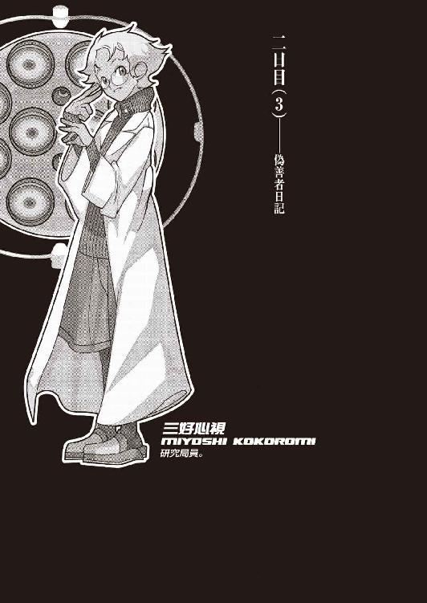
０
わたしは神を信じます。
会ったことがありますから。
１
予想していたことではあった。
そもそも小唄さんがどうしてそうもすんなり、この堅牢な研究施設内に侵入できたのか。そして警備員さんの話によれば《既に研究施設から脱出した》はずの小唄さんが、どうして未だに施設内にとどまっているのか。他にも色々あった小唄さんに関する疑問点、それらを解決するための解答は、警備員だり誰だり、施設内に内通者がいるということだろう、とぼくはある程度、当たりをつけていた。
だがしかし、まさか研究局員の一人が、その内通者だとまでは思ってはいなかった。
根尾さんによって砂糖をたっぷりといれられてしまったコーヒーを飲みつつ、ぼくは根尾さんを窺う。気付かれないようにしたつもりだったが、根尾さんはぼくの視線に敏感に反応し、「ふふ」と笑ってみせた。
「どうした？」根尾さんは、例の人を小馬鹿にしたような薄笑いと共に、ぼくを揶揄するかのように言う。「コーヒーは苦手ってクチかい？ それなら紅茶もあるけれど。アルコールを勧めたいところだけれど、ま、これからのことを考えたら思考を麻痺させるようなものはやめておいた方がいいな」
「......アルコールは苦手なもので」
「ああ、そう言えば三好さんが言ってたか。きみ、ウォッカを壜イッキして急性アルコール中毒で入院したんだっけ？ 以来アルコールは摂取しないという誓いを立てたって」
やっぱ言いふらしてやがったか、あの恩師。
「......いえ、コーヒーは好きですよ。本当はブラックの方が好きですが、缶コーヒーのように甘いものも大好きです。もっともコーヒーは別にぼくに好いてもらおうとは思っていないでしょうけれど」
「ははっ。そうだなあ。こっちが好きなのに向こうからは好いてもらえないってのは、つらいよなあ」根尾さんはにやにや笑いながら、ぼくに応じる。「俺はブラックは駄目だな。全然駄目。苦いものや辛いものなんかこの世から一切駆逐したいって思ってるよ。俺がもし宗教を興すときは、コーヒー豆は不浄なものだから食してはならないってのを十戒の一にもってくるな」
「............」
第五棟、その四階。根尾古新さんのプライベートルーム。あまり学者の部屋とは見えない造りになっていて、そう、むしろ、本人の風貌と相まって小粋な中世貴族の一部屋といった感じだ。ワインクーラー、豪奢なソファ、いかにもな木目テーブル、天井にはシャンデリア、そして壁四面、総てが絵画で満たされている。その絵画にしたって平凡なものではない、美術館系の資料を入手すればまず確実に掲載されているだろう作品ばかりだ。勿論贋作なのだろうけれど、しかし、趣味のよさは窺わせる。
「ん？ 絵が気になるのかい？」根尾さんが言う。「統一性がなくて恥ずかしいけれど」
確かに飾られている絵画の中に統一性はない。風景画から人物画から抽象画、印象派から立体派から超現実主義から、そして自動描法にいたるまで、なんでもござれだ。その気になればこの部屋を舞台に小規模な贋作展覧会が開けることだろう。
「絵が好きなんですか？」
「絵は俺のことを好きじゃないらしいけれどね」根尾さんは少しだけ嬉しそうに微笑する。「下手の横好きというか門前の小僧というか、学生の頃......こりゃ中学生の頃の話だけれど、うん、描いてみた時期があったよ」
「はあ」下手の横好きと門前の小僧では意味が全然違うのでは、と思いつつ、そんな瑣末を突っ込んでも意味がなさそうだったので、ぼくは相槌る。「で、どうでした？」
「全然駄目。やると見るとじゃ大違いだったよ。俺は自画像を描いたつもりだったのに、美術の先生ときたら《ほほう、これは、その、なんですな、あれですか、うん、抽象風景と言ったところですか、なかなかあれです、個性的ですな》だってさ」
「............」似たような経験があるだけに笑えなかった。「......それで、学者に転向したと？」
「はは。そういう目はやめてくれよ。さっきも博士のことをそういう目で見てたよな？ こわやこわや。分かってるんだろう？ 俺は味方だよ、味方。コーヒーだって出してやったじゃないか」
「味方、ですか」
この場合重要なのは、一体根尾さんが誰の味方なのかということだ。少なくとも博士の味方ではない。それは確実。だからといってこのぼくの味方とするのは、それは短絡的楽観思考というものだ。そして小唄さんの味方なのかと言えば、それも怪しい。二人のやりとりを見る限り、そこには信頼関係があるようには見えなかった。ぼくは一旦コーヒーを口の中に含み、口の中で少し味を遊んでから、一気に飲み下す。身体の中身から火照ってくるような感覚。
「あなた一体何者なんです？」
「直接的な質問だな......。ふふ、その質問にはこう答えよう」根尾さんは時代がかった風な物言いで、両手を広げる。「内部告発の達人！ 裏切りの有段者！ 秘密工作の専門家！ 背徳の体現者！ それこそが我輩、根尾古新であるッ！」
「..................」
「退くなよ」
「退きますよ」五キロほど退いた。「要するに、小唄さんと共謀して、この研究所内のことを探っている、ライバル組織からのスパイってことですか？」
「ちょいと違うね。俺は別に石丸さんと共犯関係にあるわけじゃない。ま、あの人とは事後従犯ってとこかな......。その辺、難しいところだけどな」根尾さんは表現しづらそうにそう言う。「俺のことについて、あまり詳しくは訊かない方がいいぜ。知り過ぎることは寿命を縮める、確実に。まあ俺は斜道卿壱郎サイドの人間じゃなく、こういう風にきみの力になれる人間だってだけで十分だろう？」
「......十分なんでしょうね。それで」
恐らくは根尾さんの目的も、小唄さんと似たり寄ったりなのだろう。ただし小唄さんがあくまでも個人の意志で行動しているのに対し、根尾さんの方は何らかの組織......つまりこの研究施設やその上部、即ち玖渚本家と対立関係にある組織に属する意志によって行動しているという違いがあるというだけで。その分根尾さんの方は用意が周到だし──何せ局員の一人として侵入しているのだ、計画のスパンは相当に長い──、小唄さんの方は用意が周到でない分だけ小回りが利く。そういう意味での共犯形態にあるのだろう。
だけれどそんなことは、確かに根尾さんの言う通り、知らない振りをしていた方がいいことに違いない。ただでさえ時間がないこのときに、組織だの研究成果だのプロフィットだの、そんなことにかかずらわっている暇はこのぼくにはない。
「──しっかしなぁ......、きみも大変な人に目をつけられてしまったもんだね」
「大変な人？ 小唄さんのことですか？」
「他に誰がいる？ どうもきみはヤバい人間に好かれるタチみたいだな」と、根尾さんは韜晦するようにする。「ま、今回はことがことだから仕方ないんだろうけれど、石丸さんとはこれっきりにしておいた方がいいぜ。どういう理由で石丸さんがきみに協力するつもりになったのかは俺の計り知るところじゃないけれど、こいつは年長者としての忠告だ。ふふ、そんなことはないと思うかい？ 確かにな。昔に較べると......俺が初めて接触したときに較べると、石丸さんも大分丸くなったもんだ。だが俺はあの人が七本槍と呼ばれていた時代を知っている......」
その口ぶりから察するに、根尾さんと小唄さん、どうやら今回だけの共犯というわけではなさそうだった。そうなると、根尾さんがただの内通者ではないように、小唄さんの方もただの企業泥棒ではないのだろう。その辺りについてはやはり深入りを避けたいところだが、しかし、それについてはさすがに、深入りせずに済ませることができるのかどうか分からない。それが今回の兎吊木の件に関係していないとは限らないのだから。
「それにしてもさ。これからきみはどうするつもりなんだい？」根尾さんは一転口調を戻し、ぼくに向かって問う。「はっきり言ってありえないクラスの難題だぜ、こいつは。博士の言ってたのは、ありゃ滅茶苦茶だと思うだろうが、今のところ唯一見えてる正解答であることには違いないんだ。最適だとは言いがたいが、周囲に対する体面としちゃあ悪くない程度には仕上がっている。あのセキュリティが難攻不落であることは言うまでもないことだしな。カード。暗証番号。網膜。声紋。ＩＤナンバー。そしてマザーコンピュータに残るはずのログ。きみは俺らの中の誰かを疑ってるんだろうが、しかしそれも無体な話だぜ。俺はやっぱり部外者が犯人だと思うね。だとするならとっくに下山してるだろうし、そうなると四時間以内の解決なんて不可能だぜ」
「──あまり若い子を脅すものじゃありませんわ」
突然割り込んできた声が誰のものかはこの場合言うまでもない。いつの間にか根尾さんの後ろに、何やら紙束を抱えた小唄さんが立っていた。本当に何の気配もない人だ。根尾さんは馴れっこなのか、さほど驚いた風もなく「やあ石丸さん。いつからそこにいらしたんで？」と、振り向かないままに言う。
「年長者としての忠告辺りからですわ。ええ、その辺の意見の食い違いについてはあとからゆっくり時間をかけて話し合うことにしましょう、根尾さん。それよりも、お友達、これを」
石丸さんはまず、ぼくの正面になるように根尾さんの隣に座って、それから持っていた紙束をぼくに手渡した。そこにはわけのわからない英文や数字がずらーっと、気が遠くなるくらいに羅列されている。いや、英文ではないのだろう。これはプログラム言語、広義で機械語などと呼ばれるものだ。
「これは......？」
「一応プリントアウトしてきました。マザーコンピュータに残っているログですわ」小唄さんはちらりと根尾さんを一瞥した。「......根尾さんの使っているパソコンがヘボすぎたせいで時間がかかってしまいましたが。......ああ、その辺りです。昨晩の記録。四桁の数字が時間を示していまして、その隣の記号がそれぞれの研究棟を意味しています」
小唄さんの説明を聞きつつ、ぼくは矯めつ眇めつ、記録を確認する。しかしそれによって得られた結果は、博士は噓をついていなかったということだけだった。確かに、昨晩、自分の研究棟から外に出た人間は春日井さんの他にはいないし、その春日井さんだって、外にいた時間はほんの五分十分程度のものだ。この記録から判断する限りにおいて、卿壱郎博士を始めとする施設局員には全員アリバイが成立することになる。この時点の消去法で言っても、玖渚一味が怪しいのは真実だった。
旗色は悪い。
ふん。
消去法、か......。
「......何か細工があったって可能性は？」
「細工なんてできないよ」答えたのは小唄さんではなく根尾さんだった。「俺らにゃそんなスキルはないね。これは博士を含めて、だ。兎吊木さんならできたのかもしれないが、あの人だって分野が違うし──あの人はハード面よりソフト面が専門だったからね──それに、殺されたのがその兎吊木さんだ。三好さんや春日井さんはハナっから畑が違うし、神足さんはどっちかっつうと研究が本分で実戦向きじゃない。大垣くんと宇瀬さんは能力の種類ではなく高度そのものが問題外だ」
「──他の人達はそうだとしても、博士にならできるんじゃないですか？ 何せ《堕落三昧》なんですから。名うての評判が看板倒れだっていうんじゃない限り、それくらいできてしかるべきでしょう」
「一つだけはっきりさせておこう。玖渚友は天才だ。そして斜道卿壱郎は天才じゃない。きみが思っている以上にこの違いは大きいんだぜ、恋人さん」
「............」
「そう、博士は天才じゃない。無論きみや......そして俺もだが、その辺のレヴェルから見たら、玖渚のお嬢様と博士との違いなんて分からないさ。二人共が二人共、揃って並べて天才に見える。あの二人の違いが分かる人間はごくわずかしか存在しない。そして博士自身はそのわずかに属す人間だった。だからこそ、自分が天才でないと思い知らされた博士だからこそ、今までやってた人工知能の研究を路線変更し、こんなばかげた研究をぶち上げたんじゃないのかな？」
ばかげた研究。確かにその通りなのだろう。だけれどその通りだとすれば、博士にはアリバイ云々でなく、兎吊木を殺す理由すらもなくなってしまう。自ら自分の研究を破綻させるような真似をするわけがないのだから。
「人間ってのはあれだからねえ、他人を見下すのが大好きな生き物だからね。勿論分かり切っているように、世の中は平等じゃない。そうだろう？ 誰に訊いても多分そう答えるさ。よくある比喩だが、たとえば誰かに質問してみろよ、《あんたより劣った人間がこの世に一人としていないと思うか？》。首を縦に振る奴ぁまずいねえよなあ」
根尾さんは楽しそうだった。
根尾さんの言葉に間違いはない。頂点は一つで底辺は無数。それがこの世の構造だ。だけれど、あまり聞いていて気分のいい話でもなかった。
「ちょっと話が逸れたかな？ しっかしな、そもそもブラックボックスが多過ぎるんだよ、ここのシステムには。セキュリティだけじゃなく、マザーコンピュータまで含めてさ。ブラックボックス。その中身を知るのは、勿論造物主たる玖渚のお嬢様ばかりってことになるよな」
「......旗色が悪いどころの話じゃないってわけですね」ぼくは紙束をテーブルに投げ捨てた。「......それに、コンピュータだのなんだのに絡んでこられたら、基本的にぼくはお手上げですよ。ぼくはそんなのの専門じゃない」
「へえ」根尾さんが少し面白そうに。「じゃ、きみは何の専門なんだい？ 三好さんの弟子なんだから、そうだね、やっぱり解剖学？」
「......解剖学はあまり好きじゃなかったですね......。そういえば、根尾さん」解剖学と言えば。「兎吊木さんの磔にされた死体、あれはどうなっていますか？」
「うん？ ああ、それは今きみが考えた通りだよ。大垣くんと宇瀬さんによって第三棟......三好さんの研究棟へと運ばれて、今ごろ春日井さんと三好さんが二人がかりで検死中。死因とか死亡時刻とか、何とかね」
「そうですか......」
ぼくは考える。兎吊木の死体に関する情報。それは是非手に入れておきたいところだ。朝、あの部屋に入ってみたときには驚愕の余り、正確な情報をあますところなく吸収できたとは言いがたい。それにそんな近くで見たわけでもない。だから、もう一度、惨殺され解体された兎吊木の身体を見ておかなければならない。
そしてもう一つ、絶対に外せないのが現場検証だ。兎吊木が磔刑にされていたあの部屋にもう一度足を運んで、その状況を認識しておく必要がある。あの血文字で装飾された無情景な部屋を。
この二つは外せないが、しかし、さてどうしたものか......。
「それよりも、まずお友達。決めておかなくてはならないことがあるとは思いませんか？」小唄さんが考え込むぼくへと声をかける。「わたくしとあなたとの協力関係の上で、まず最初に決めておかなくてはならないことが」
「なんですか？」
「つまりはあなたを優先するかわたくしを優先するかという問題なのですが」小唄さんは指を立てて講義風に言う。「つまりあなたの持っている情報をわたくしに提供していただくのが先なのか、それともわたくしがあなたの真相究明に協力し、それから後にあなたからの誠意をいただくのか。その順逆をどうするべきかという切実な問題です」
「ああ......」そうか。その問題があったか。「確かにそりゃ、問題ですね......」
勿論ぼくとしては、情報提供云々は後回しにしておきたい。時間がない云々の問題ではなく、それはぼくにとって小唄さんに対する切り札だからだ。ただしそれは小唄さんにしたって同じこと。ぼくに対して惜しみない協力をしたところで、ぼくがそれに応じるとは限らない。そもそもぼくは昨日の夜に一度、小唄さんからの誘いを蹴っている立場だ。小唄さんに対してぼくに全面の信頼をおけというのは無闇な話だ。
小唄さんも同じことを考えているのだろう、しばらくぼくらは静寂した。
「コインでも投げて決めたらどうです？」根尾さんが小唄さんに提案した。「こうしている間にも刻一刻と時々分々と時間が無駄になってますぜ、石丸さん。そりゃ彼氏にとってもあなたにとっても都合のいい話じゃないでしょう。そんな問いに完璧な冴えたる答なんてあるわけないんですから、だったらコインで軽く決めちゃうというのが公平でしょう」
「──成程。十全です」言って、小唄さんはコートのポケットをさぐり、何やらメダルのようなものを取り出した。少なくともそれは日本円硬貨ではないことは分かるが、どこの通貨かまでは分からない。案外ゲームセンターのメダルかもしれなかった。「それでは、お友達、表か裏か、指定してください」
「フェアとは言いがたいですね、それって」ぼくは慎重に言う。「コインの表裏なんて、投げる方がコントロールできるじゃないですか。小唄さん、あなたを疑うわけじゃありませんが──いえ、疑うわけなんですけれど、普通の動体視力があれば出る目が調整できてしまうようなシステムを基準にするのは......」
「確かにそうですわね」小唄さんはあっさりと退いた。「ではあなたが投げてくださって結構。わたくしが指定しますわ。それならばあなたにとって公平でしょう？」
「......いいんですか？ 今ぼくが言ったようなことは、そのままこちらにも適応できるんですが」
「もう一枚、コインがあります」小唄さんは言って、ポケットから二枚目のコインを取り出す。「これを右手に握っていれば表。左手に握っていたら裏。それでよろしいですか？」
言って小唄さんはコインを弾き上げ、そして両の腕を素早く交差させながら、左右どちらかの手でコインを握り止めた。それがどちらなのか、ぼくには分からない。
「......いいでしょう」
ぼくはコインを軽く弾く。ここまでくれば駆け引きも何もない、運任せの出たとこ勝負だ。ぼくは手の甲でコインを受け止めたりはせず、テーブルの上へとそのまま落とした。何度かコインは跳ねるようにして、それから回転し、最終的には裏を上面に、停止した。
確率は二分の一。
より正鵠を期すならば、コインが立ってしまう確率もあったのだから二分の一ではないけれど、しかしその確率は考えるだけばかばかしくなるほど低いし、既に回避されている。ぼくは小唄さんを見遣る。小唄さんは少し皮肉っぽく笑って、それから左手をゆっくりと開いた。中には、何も握られていなかった。
「......よろしい。これはこれで十全。あなたを優先しましょう」小唄さんはソファから腰を浮かし、そして上からぼくを見下ろすようにした。「それではこの手のケースの教科書通りということで、解剖結果と現場検証と参りますか。兎吊木さんの死体が先か、それとも現場が先か。あなたが決めてください」
ぼくは小唄さんの視線に応えつつ、その問いに答える。
「......そうですね。とりあえず、まずは──やっぱり死体が先でしょう。時間が経てば経つほど、対象から得られる情報は少なくなる」ぼくは根尾さんに向く。「根尾さん。兎吊木さんの死体が収容されたのが第三棟のどの部屋なのか、分かりますか？」
「多分三階の第七解剖室だと思うけれど。そう言ってたから。けど、どうするつもりだい？」少し首を傾けながら、根尾さん。「きみは......と言うより、きみと石丸さんは、その第三棟に入る手段を持ってないんだぜ？ それは第七棟に入る手段を持ってないのと同じ条件でさ。俺はこうしてここにきみをかくまうことはできる。考える場所を提供して、情報を提供して、コーヒーくらい出してやることもできる。だけどそれ以上の協力となると結構厳しいぜ。俺だってやばい立場なんだ。それは分かってるんだろう？」
「......ま、それは確かに分かってますが」
どうするか。まず思いつくのは、先生に協力を仰ぐことだ。だがこれはリスクが大き過ぎる上に成功率も高いとは言えない。ギャンブルとしては最低だ。先生が、あの三好天上天下唯我独尊心視先生が、まさか卿壱郎博士を信奉しているとは全然思わないが、しかしあえてその博士を裏切るような真似をするとも思えない。あの如才ない先生のことだ、この研究所にだってただの雇われでいるわけではあるまい。何か個人的な目的があるに決まっている。そして合目的的な生き方以外を人生とは定義しない先生にとって、おのれの狙いよりも優先できるものは一個小宇宙でさえ存在しない。かつての生徒なんて陳腐な肩書きが先生の前で幾分かは価値があるかもしれないと考えるのはご都合主義というものだ。
「......となると、手段は一つですわね」
小唄さんが考え込むぼくに向かってそう言った。そしてぼくの返事を待たないままに今度は根尾さんに「とりあえずあなたは」と、言う。
「博士の邪魔をしておいてください。余計な用事や噓偽りの情報をあらん限りに流してください。滅茶苦茶に混乱させてぐちゃぐちゃにかき混ぜてやっちゃってくださいな。それはあなたの専門分野でしょう？」
「......はははは」根尾さんは空笑いで小唄さんに応えた。「合点合点合点ですよ石丸小唄さん。どうしてだか知らないが、石丸さんにはこの少年に対して親身にならなければならない理由があるようですな。そこまでしてあなたが欲しがる《情報》とは一体何なのでしょうな？ いいでしょう訊きませんよ。興味深いが訊かないでおきましょう。ええ。任せておいてくださいよ、石丸さん。不肖この根尾古新、わずかばかりの全身全霊をもってして協力しておきましょう」
「十全。それじゃあ行きましょうか、お友達」小唄さんは根尾さんの言葉に場違いなくらいににっこり微笑んで、そしてぼくの手を引き、ぼくをソファから起こした。「冒険の旅に出発ですわ」
「......気楽ですね」
「他人事ですから。今のところはですけれど」
「少年」無理矢理引きずられていくような形のぼくに、根尾さんは少しだけ真剣っぽい調子で言った。「誰にも会わないように気をつけろよ。誰かに見つかったらそれで終わりだ。三好さんとなら旧知の仲だから大丈夫だろうとか、大垣くんが相手ならなんとか言いくるめられるだろうとか、甘っちょろいことを考えちゃ駄目だぜ」
「それについては心得てますよ」
「博士だけじゃない。ここにいる連中はみんな堕落し切っているのさ。勿論それはこの俺を含めての話だが。そうさな、特に春日井さんには用心しとけ」
「......春日井さんですか？」その言葉はぼくには意外だった。「どうしてですか？ どちらかと言えば志人くんや美幸さんの方が......」
あそこまで理不尽な暴力を振るわれて尚博士に信仰を捧げるあの二人の方が、よほどの危険人物だと思うのだけれど。
「信念がない方がこの場合は問題なのさ。大体、考えてもみろよ。どうして博士はきみ達を──と言うか、玖渚のお嬢様を自分の研究棟でなく、春日井さんのところに預けたのか？ そりゃ勿論いざというときのための責任逃れというのもあるだろうさ。だけどそれより前に位置する理由の一つとして、春日井さんは絶対に博士を裏切らないという客観的な事実があげられるね。俺にはそれが分かる、俺は裏切りのプロだからこそ、絶対に裏切ることが前提の俺だからこそ、それが確信を持って分かるのさ。春日井さんは裏切らない。そもそも組んですらいないからだ。大垣くんや宇瀬さんには博士に阿諛追従する理由がある。博士に対する畏敬、博士に対する恩義、その他諸々。しかしだからこそ、それ以上のものを与えてやればそれでいい。たとえば今なら、博士に打擲されてショックを受けている心の隙間につけいる、とかな。裏切らせる方法はいくらでもある。だが春日井さんは違う。彼女がここにいる理由はただ《なんとなく》なんだ」
「なんとなく、......ですか？」
ぼくの反復に、根尾さんはここでにやりと笑う。
「ああ。おい、これほど怖いことがあるか？ これほど恐ろしいことがあるか？ 何の理由も何の信念もなく行動する人間。彼女には卿壱郎博士につき従う理由なんてない。一つもない。なんとなくここにいるだけだ。だから、それを覆すことすらできない。博士に協力する理由がそもそもなんにもないんだから、それを引っ繰り返すことなんかできる理屈がないのさ。零には何をかけたって零だし、零を割ることなんかできるわけがない。これを狂信と呼ばずしてなんと呼ぶ？」
「............」
春日井春日。
昨晩、彼女と交した会話を思い出す。
《選ばない》を選択すると言った彼女。
好きでも嫌いでも普通でも愉快でも不愉快でも無感動でもない、何でもない彼女。
何でもない、《なんとなく》の彼女。
けれどこのときのぼくには、根尾さんの言っていることが正直よく分からなかった。春日井さんがどこかずれた人間であることは確かに理解できたが、そこまで言われるような危険人物にはとても思えなかったからだ。狂信と呼ぶのならやはり志人くんや美幸さんのそれがその名称に相応しいように思えたし、根尾さんの言う《なんとなく》なんて適当な言葉に、何らかの恐怖を感じることなど、ぼくにはできなかった。
《なんとなく》の彼女、春日井春日。
別にそれはそれ自体では何の問題もないことではないか。
──だけどぼくはこの数時間後に思い知ることになる。信念が皆無に存在しないという人間は、その存在だけで恐怖の対象になる場合だって、この世の中にはあるということを。問題のない人間には解答だってないということを、この身をもって思い知ることとなる。
２
そしてぼくと小唄さんは再び、第四棟の屋上に戻ってきた。
「......どうするんですか？」
「決まってますわ。第三棟に行きたいんでしょう？ でしたらそこにルートがあるじゃありませんか。唯一で無二のルートが」
そう言って小唄さんが指で示した方向には、空気しかない。第四棟と第三棟との間隙。距離は目測で、およそ四メートル......短めに見積もって三メートル半といったところだろう。第五棟と第四棟の距離よりも一メートル近く、否、一メートル以上も遠い。
「......ここを、跳べと？ また？」
「嫌なら嫌で十全ですわ。お好きなようにここでゲームオーバーということで」
「............」
ぼくは屋上から首だけを乗り出して、下の方向を見下ろす。うん、何度確認しても十メートルを越えるだろう高度だ。ぼくの視力は左右ともに二・〇なので、自信を持って断言できる。こういうときばかりは自分の健康な肉体が恨めしい。
「......三メートル半ですよ？」
「それくらい今日び女子中学生だって跳びますわ」小唄さんは軽く言う。「少し育ちのいい小学生で四メートルと言ったところでしょうか。ちなみに現時点での走り幅跳び世界記録は男子で八メートル九十五センチ、女子で七メートル五十センチですわ。女子の記録をしても尚その半分以下。飛べないわけがないでしょう？」
いくらなんでも世界記録と較べるな。それにその人達だって、その一生涯を懸けてこそはいても、別に命懸けで幅跳びをしたわけではあるまい。失敗したら間違いなく死ぬ、間違えたところで大怪我を負うというリスクは、考えている以上に身にのしかかる。
「あまりひとところにじっとしているのもよくないと思われますわ。それに兎吊木さんの死体がいつまでも第三棟に保存されているとも限りません。十分な証拠──これは博士にとって十分に都合のよい証拠という意味ですが──が集まれば焼却処分されてしまっても不思議はありませんから。そうなったらあなたはお終いですわ。ああ、あなたではなくてお終いなのは玖渚さんですか。デッドエンドですね」
その名前を出されてしまえば、ぼくには選択肢がなくなる。ぼくはわざとらしく「やれやれだ」などと呟きつつ、縁に向けて距離を取る。今回は用心して、前の倍近くの助走距離を準備する。かと言ってこの距離を長くし過ぎると跳躍前に体力をなくしてしまうから微妙なところだ。
「──ぼくはともかくとして、小唄さんは跳べるんですか？」
「余裕ですわ」
自信たっぷりに小唄さんは笑い、眼鏡のリムを押し上げる仕草をする。その態度から察するに、多分本人の言う通りに余裕なのだろう。ならばぼくは自分のことだけを心配することにしよう。大丈夫、しっかりと勢いをつければ、三メートル半ごとき跳べない理屈が立たない。縁のでっぱりや溝に足を取られないようにだけ気をつければ──
呼吸を整えてぼくは一歩を踏み出した。七歩ほどで縁の寸前にまで到達し、そして八歩目で踏み切る。身体を弓のように反らしつつ──視界には天空を映しつつ──一秒間にも満たない時間、空を飛び、そして、着地した。着地することができた。
「──ふう」
と、ぼくは後ろ、ついさっきまで自分が存在していた第四棟の屋上を振り向く。振り向いたときには既に小唄さんは空中にいた。ぼくが視点を変えるよりも早く第三棟の屋上床に着地し、そのまま少し勢い余って、前方へと編上げ靴のかかと部分で滑るようにし、その勢いを殺した。
「──ふふ」小唄さんはその、少し後ろに傾いたままの姿勢を維持しつつ、ぼくに笑む。「わたくし達って、案外相性のよいカップルなのかもしれませんわね。こんなアクロバットを一緒に楽しむ男女など、広い世界にたった一組ですわ」
「ぼくは別に楽しんじゃいませんがね......」
言いつつ、ぼくは自分の着地地点が、小唄さんよりも屋上の縁に近いことを気にしていた。鈴無さんほどではないけれど小唄さんも長身の女性で、ぼくよりも脚が長い分幅跳びには有利なのかもしれないけれど、しかしこれは体格よりも単純な運動能力の問題なのかもしれない。
「どうしたんですか？ 急ぎませんと。時間もないのでしょう？」
「ああ、そうですね......」そこでぼくはもう一つ、別のことにも気がつき、進みかけた足をぴたりと止めた。「小唄さん。ひょっとしてですけれど......、この手法、と言いますか......、屋上から屋上へと跳躍するというやり方で、このまま第七棟に侵入することは、可能なんじゃないですか？」
ぼくの仮説に小唄さんは一瞬だけ驚いたような顔を見せたが、しかし、すぐに「それは無理だと思いますわ」と言った。即断でこそなかったものの、どうして小唄さんがそうもあっさりとこの提案を退けたのかが分からず、ぼくは思わず詰問するような口調で「どうしてですか？」と訊いてしまった。
「あまり熱くならないで欲しいですわ、格好悪いですね。卿壱郎博士に食ってかかったときもそんな感じだったのですか？」
「それは......いえ、すいません。言い方が乱暴だったことは、謝ります」
ぼくは素直に頭を垂れた。
そうだ。熱くなってどうする。いくら、こうしている時々刻々にも玖渚や鈴無さんの身が危うくなっているとはいっても、それはぼくが頭に血を上らせることで解決する問題では全然ない。むしろその逆だ。こういうときにこそ、こういう場合だからこそ、ぼくは強いて冷静でなければならないはずだ。普段のように、感情を押し殺し、ただの思考機械として。心のないロボットとして。
「だけれど、どうしてそんな風に簡単に......」
「わたくしがそれを考えなかったと思いますか？ ルパン三世よろしく屋から屋へと跳び移る、その程度のアイディアをわたくしが今の今まで所有せずに人生してきたと思いますか？」小唄さんはぼくに背を向けて扉に向かいつつ、言う。「とにかく、そのやり方ではあなたには無理ですわ。理由は後で説明することにしましょう。今は兎吊木さんの身体を調べるのが先決なのでしょう？」
「......分かりました」不承不承ながら、ぼくは頷いて、小唄さんの後ろにつく。「でも、この方法が無理だって言うなら......」
ようやく難解なこの事件に、解決の糸口が見えた気がしたのだが、それは気のせいだったのだろうか。完全なる物理密室だと思われた第七棟へのルートが開かれたかのように思えたのだが。
小唄さんが扉の鍵を開けつつ、「問題はその密室だけではないのでしょう？」と言う。
「兎吊木さんがああもむごたらしく惨殺されていた理由。それに壁に描かれていたという血文字も気になるところですわ。一つのところに考えを絞りすぎると足元をすくわれますわ」
「......ですか。ですよね」
ぼくは時計を確認する。残り時間はざっと三時間三十分。とても余裕があるとは言いがたい。それなのに考えなければならない問題の方は圧倒的な物量を誇っている。希望は正直言って少ない。だけれどそれが零ではない以上、追い続けるしかないのだろう。実に不毛な考え方だった。
小唄さんに続いて階段を降りつつ、ぼくはまた一つ、別のことに気付いた。それは事件とは関係のないことで、先程の小唄さんとのギャンブルのことだ。コインの表裏。あれはぼくが勝利を収めた形で終わったけれど、しかし本当にぼくの勝ちだったのだろうか。小唄さんの左手には確かに何も握られていなかった。しかしぼくは小唄さんの右拳の中に真実コインが握られていたのかどうか、確認をしたわけではない。ひょっとするとそちらの方も空手だったのではないだろうかという推測が成り立つ余地はある。時間がないぼくのために、小唄さんがぼくにアドバンテージを譲ってくれたのではないかというこの発想は、しかしあまりにも場違いなほどにセンチメンタルで、とても口に出す気にはなれなかった。だからぼくはその代わりに、「根尾さんって何やってる人なんですか？」と、全く違うことを小唄さんの後ろ姿に問うた。
「本人から聞きませんでした？」
「一応訊きましたけれど上手い具合に誤魔化された感がありますね。いや、はぐらかされたのかな......。内部告発のエキスパートだとか裏切りのプロフェッショナルだとか秘密工作のスペシャリストだとか背徳のコピーキャットだとか、色々噓くさい肩書きを自称していましたが」
「それで、あなたは彼を何と定義しましたか？」
「......まあ、どこか別のライバル機関からのスパイなんだろうなって、思いますけれど」
「その解答は不十全ですわ。《海で泳いでいるものは魚類だ》と言ったようなもので、そうですね、精々三全か四全と言ったところですわね」
「はあ」よく分からない採点基準だった。「じゃあ、何者なんですか？ 根尾さんは」
「二人だけの秘密ですわよ？」小唄さんは階段を降りる足を少しとめて、人指し指を自分の唇の前に立てて、軽くウインクしてみせる。「彼はスパイなんて生温かい存在ではありません。そして尚彼が自称したそれら二つ名は噓どころか総て正鵠を射ています。そうですね、さる大きなグループ......否、サーキットから派遣された全権大使、言うならばスパイよりは数段階級が上の人物ですわ」
「......さる大きなサーキットってのが気になるところですね」
「それだけ注目されているということですわ。卿壱郎博士の現在行っている研究......兎吊木さんが亡くなられましたから、行っていた研究と表現するべきなのかもしれませんわね。もっとも玖渚さんを標本として再開されるのでしたらその訂正は不要なのですが、それについてはあなたの努力次第ということで。たとえばあなたが昔いらしたＥＲ３システムだって、卿壱郎博士の研究の成果を心待ちにしているとか。まあそうでしょうね、あそこならば」
「......そして、あなたも、ですね」
その通りですわ、と小唄さんはやんわりと微笑んで、そして再び足を進ませ始める。ぼくはそれ以上の追及をここでは避けて、小唄さんの後ろにつづいた。四階の扉をやり過ごし、そして三階へ到達。小唄さんは扉の前でぼくの到着を待ち、そしてあまり大きな音にならないよう用心しつつ、ナイフで錠を外した。
「何号室って言ってましたっけ？」
「第七解剖室ですわ」
小唄さんが言いつつ、鉄製の扉のノブをひねってそっと押し、隙間から向こう側を窺う。と、しかし小唄さんはその一刹那に、扉を閉じてしまった。それはほとんど反射神経で行ったような瞬間的な動作だったけれど、それでも自動錠が落ちる音以外には物音一つ立てなかったのはさすがなのだろう。
「......どうしました？」
「十全でないことに、恐らくはその第七解剖室から二人の女性が出てきました」
「二人ですか？ どんな格好でした？」
「二人とも白衣でしたわ。一人は丸眼鏡でして、もう一人はクールそうなタイプでした」
それならば間違いなく先生と春日井さんだ。女性ということならばもう一人美幸さんがいるけれど、さっきの根尾さんの話と照らして考える限り、そして白衣だというのならば、美幸さんは除外してもいいだろうと思う。
小唄さんはその場にしゃがんで、そして扉に耳を当てるようにした。特に何を思ったわけではないが、ぼくもその真似をする。
「...... ..................やで ...... 」
「...... ............最低です ......... ... 」
「......は......ご苦労......やな」
「いつものこ ...... ...... 面倒な...... 」
よく聞こえない。ここから二人の位置までには大分の距離があるのだろう。しかし二人の声は段々と聞き取りやすくなってきた。多分二人がこちらに向かって歩いてきたということだろう。
「いや、しかしそれにしても。博士は一体あの三人をどないするおつもりなんやろな？」
心視先生の声。
「どうするもこうするもそれは分かりきったことだと思いますが」
春日井さんの声。
とすると、やはり小唄さんが見たという二人は心視先生と春日井さんで正解らしい。ぼくは正面に向き合う形で座っている小唄さんに軽く目配せをした。小唄さんは軽く頷いて、そして二人の会話に文字通り耳を傾ける。
「いつもながら強引な手際です。そう思いますね。学問ある大人の行動とはとても考えられません。あのような子供を地下に監禁するだけで外道だというのに殺人事件の犯人に仕立て上げようとは尋常の神経だとは思えません」
「お常識的な意見やね。ま、そこはそれ、《堕落三昧》言うことでな。けどウチとしては博士の気持ちも分からんではあらへん。そもそもあの三人が来たところでいきなりの事件やろ？ 理屈云々抜きにしても、怪しいゆーたら怪しいちゃうのん？」
「三好ちゃんらしくもない不穏当な発言ですね。わたしのところの地下ケージにいる三人の中にはあなたのお弟子さんだって混ざっているのでしょう？」
人を混入物みたいに言う春日井さんだった。
「三好ちゃんとしては彼をかばってあげたいところなのではありませんか？ そういえば彼が逆上したときもあなたが真っ先に止めに入りましたね」
「あー。あれはやなー、まあ経験上予想がついとったからゆーか。向こうでもあいつはようキレよったからな。普段はおとなしゅーしとんのに、痛いとこつかれるとすぐに逆上するねんな。学業に人生を捧げようとする人間ゆうか、頭のええ人間ゆうんは大概そんなもんやけど、あいつはそういうんとはちいっと違った感じやったな。とにもかくにも何にせよキレやすい奴やったで。特に最初の一年はな。その都度その都度このウチが止めに入っとったんもんやで。ホンマに手のかかる生徒やったもんや」
言いたいことはたくさんあるけれど、とりあえず沈黙を保つぼく。
「ま、そこが可愛いとこゆーたら可愛いとこやねんけどな」
「そうですか？ わたしは少し失望しました」
「うん？ なんや、春日井ちゃんて熱い男は駄目やのん？」
「熱い男は全然駄目です」
「ホンマに春日井ちゃんの価値観は厳しいな。まああいつが駄目駄目やゆうんは全面的に賛成やけどな」先生はたとえ本人がその場にいないと思ってるにしても酷いことを平然と言って、それから続ける。「けどな、あいつは駄目なだけやないで。いや、基本的には駄目な奴やけど応用的にも駄目で、その上発展的にも駄目な奴で、しかもその駄目っぷりが半端やないてゆうんか。空前絶後にして前代未聞、一を識りて二を知らず、右と言って左に出る、未曾有にして新機軸の駄目男なんや、あいつは。いや、別にあいつのことを褒めるつもりはさらさらないねんけど」
心配しなくともあんたは一言すら褒めてねえ。
「不安要素は一切何もないという風ですね。三好ちゃんとしては」
「ま、心配はしてへんよ。どころかがんがん期待しとるくらいやね。ウチらはただぼぉーっとしとりゃええんやねん。博士と志人くんと宇瀬さんが善後策......よりにもよって善後策やけど、ま、それを考えとる数時間の間に、どうせあいつが解決してまうわ、こんな事件」
「解決する？ 彼がですか？」
「その通り。あいつはこういう状況......ゆうか、こういうシチュエーションにおいて最適の人材やからな。いや、あいつにとって最適なんがこういうシチュエーションゆうた方が正確か。そして更に言うならこのシチュエーションはあいつにとって天敵や。躍起になって解決しよるやろ、あいつは」
「あなたの弟子ですしね」
「弟子ねえ。魅惑的な言葉やけど、それはあんま関係ない感じやな」
先生はその辺りのことを笑って誤魔化した。
......て言うか、さっきから声が近付きも遠ざかりもせず、停止している気配なのだけれど、お二人さん、何をしているのだろうか。こんな非常扉の前で立ち止まって会話をする理由などないと思うのだが、しかしだとすると、こちら側にぼくらがいることに気付いているのではないか。いや、それならば無駄話などせず、さっさとこの扉を開けるはずだ。それをしないということは、つまりぼくらに気付いてないということだ。
そこで思い当たる。昨日そのときはまだ生きていた兎吊木のいる第七棟へと入ったとき、（志人くん曰く《兎吊木さんがぶっばらした》）エレベータの隣に階段があった。この第三棟も同じような造りになっているのだとしたら、この扉のそばにエレベータシャフトが通っているはずだ。つまり先生と春日井さんは別に扉の前で立ち止まっているわけではなく、ただ単にここの近くでエレベータを待っているだけなのだろう。
となると、チャンスだ。二人はもうすぐこのフロアから立ち去るということ。つまり、兎吊木の死体がある第七解剖室に忍び込む難易度はぐっと低くなるということだ。
ふむ、風向きがいい。今年のぼくはついているのかもしれない。既に七月も前半だけど。しかもこの六ヵ月で数回以上殺されかけているのだけれど。
「そうは言っても彼はわたしのところのケージの中で拘束中です。最適だろうと天敵だろうとどうしようもありませんよ。それとも彼は安楽椅子属性なのですか？」
「ゆうか、逆転発想型かな。途中までは《分からん。分からん。全然分からん。分からん過ぎて分からん過ぎてあと一回分からんかったら死ぬけどそれでもやっぱり分からんから死んだ》みたいなあほキャラやねんけど、何かの些細なきっかけで《そうやっ！ これやっ！ 何でこないな簡単なことが今まで分からんかったんや！ ぼくはなんてあほなんや！ あほであほであほやから死ぬ！》てなるわけや」
「どっちにしろ死ぬんですね」
どっちにしろ死ぬらしかった。
「そういうわけで安楽椅子型ではないな。遠隔操作型でもあらへんし、かとゆうて近距離パワー型でもないし、そうやな、うん、考えてみりゃさすがに牢獄の中やったらあいつでもどうしようもないかもな」
「さしずめ電気椅子型と言ったところでしょうか。ではそれに期待するだけ無駄ということですね」にべもそっけも愛想も何もない春日井さんだった。「まあそんなことはわたし達の考えるようなことではありません。全て総じて博士にお任せしておきましょう」
「またそれか。春日井ちゃんお決まりの台詞やな。《博士にお任せしておきましょう》。......ウチは春日井ちゃんのそういうとこは嫌いやないけどな」
「そういうところと言うとどういうところでしょうか？ 三好ちゃん」
「自分でモノを考えるんがめんどいからゆうて全部他人任せにする、何も選ばないところ」
先生の笑う声が聞こえて、春日井さんは何も言わなかった。
ぼくはさっきの根尾さんの言葉を思い出しつつ、更に二人の会話に耳を傾けていたが、しかし、結局その後の二人は大して重要そうな話はしなかった。どうでもよいようなどうしようもないような話をしていただけだ。具体的に言うと《コックリさんゆうんはコがキツネでリがタヌキやいうんは分かるねんけど、クて何や？》《確かイヌだったと存じますが》《クが何で犬なんや？》《漢字が違うんです。干支で蛇を巳と書くのと同じですね》《成程......しかし狐と狸に犬が並ぶのは不自然やないか？》《その三者はみんな野山に現われるという共通点があります》《じゃあ別に猪でもええわけか......》とか《『踏んだり蹴ったり』とはよう使う常套句やけど、それってよう考えたら『踏まれたり蹴られたり』やないのん？》《確かに『踏んだり蹴ったり』では自分が加害者ですね。考えるに『快刀乱麻』のごとく後半が省略されているのではないでしょうか。つまり正しくは『踏んだり蹴ったりされた』なのではないでしょうか》とか《ふむ。つまり『ライ麦畑でつかまえて』みたいなもんなんか？》《そういえばインターン時代に留学経験のある友人がいたのですがその彼が『この翻訳には問題がある！ まったくもって全然なってない！ サリンジャーはこんなつもりで書いたんじゃない！ 俺にはサリンジャーの気持ちがよく分かる！ だからサリンジャーのために俺が完ッ全に正しい訳を施してやる！』と言って『ライ麦畑の捕獲者！』なる小説を執筆していました》《おもろかった？》《劣悪でした》などという話をしていただけだった。て言うか、お二人さん、気のせいか事件の話をしていたときよりも雑談のときの方が熱が入っていたような気がしたのだが。
エレベータが到着し、その扉が開く音がかすかに聞こえた。
「それではお先に失礼します。三好ちゃん」
「おう。しかしそれにしても根尾さん、春日井ちゃんに何の用なんやろな？」
「現在行っているモデルのスケルトンについて緊急の用事と言っていましたがあからさまに噓っぽいです。しかし年長者の言葉を無下にするわけにもいきませんから。私としては早く自分の研究棟に戻りたいんですが」
「そっか。根尾さんね......まあええけど。ほな」
そしてエレベータの扉が閉じる音と、電動機が稼動する振動。
そのタイミングでぼくは立ち上がったが、しかし小唄さんは立ち上がらなかった。耳を扉につけたまま、真剣そうな表情で、まるでいまだ先生と春日井さんとの会話が続いているかのように、その姿勢を維持している。
「......小唄さん？ 何やってるんです？」ぼくは声を潜めて、訊く。「折角根尾さんがうまくやってくれたみたいなのに......何か聞こえるんですか？」
「何も聞こえませんわ」
「......じゃあ、何をしてるんですか？」
「何も聞こえないんです、お友達」小唄さんは囁くような声で繰り返す。「どうしてでしょう？ 今の会話から推測するに、エレベータに乗って階下に降りていったのは春日井さん一人。三好さんはこのフロアに残っています。なのに何の音もしません。おかしいでしょう？」
そこまで説明されて、ぼくにもようやく納得がいった。何も聞こえない。それはただ単に会話が聞こえないということではなく、音が一切ないということ。足音すらもないということだ。つまり、春日井さんが去ったにもかかわらず、先生は一歩たりとも動いていないということだ。何の用もないのに、どうして先生は同じ場所にい続けているのか。
どうして。
「そろそろ出てきてもええ頃合ちゃうんか？」
扉に顔を貼り付けて耳をそばだてているわけでもないぼくにまで十分に届く、張り上げるような大声で、先生はそう言った。小唄さんもその大声には驚いたようで、さすがに扉から身体を離した。
「そんな風に逃げ隠れしとったら男を下げるでー。我が生徒」
「どこかで聞いたような台詞ですわね」
小唄さんが皮肉っぽい目でぼくを眇める。元ネタがバレた気まずさから、ぼくは目をそらした。
気付かれていた......というのだろうか。先生はぼくらの存在などとっくに看破していたと。扉一枚を隔てたこちら側にぼくと小唄さんがいることを知って、春日井さんとあんな会話を交わしていたと。──いや、そんなはずがない。いくらなんでも間に鉄製の絶縁扉を挟んでそんな芸当が可能なほど、先生は人間離れしてはいなかったはずだ。少なくとも、三年前は。
「出て来おへんのか？ それやったら別にそれでもええけど。ウチはこのまま博士に報告に行くだけやし。電話したらすぐに来るで？ バイク便並のものすごいスピードで来るで？ そうなったら如何に我が生徒といえどヤバいんちゃうん？」
小唄さんがぼくに目で《どうしますか？》と問うてくる。いつまでも目をそらし続けるわけにはいかないので、ぼくは渋々ながらに「仕方ないです」と言う。畜生、ほんの一瞬といえど、自分の人生にツキなんて言葉があると思った自分がばかだった。
「小唄さんは根尾さんのところにでも戻っていてください」
「──あなたは打って出ると？」小唄さんは少しだけ眉を寄せて。「とても無事で済むとは思えませんが」
「既に無事では済んでいませんよ」
この台詞を小唄さんに言うのは二度目だった。加速度的に、幾何級数的にどんどんと無事でなくなっていくぼくだった。
「じゅーう！ きゅーう！ はーち！ なーな！」
先生、大音響でカウントダウンを始める。まるでこれから新ミレニアムでも訪れるかのような発奮ぶりだった。向こうにいるときもよく思ったけれど、この先生、一体どういう声帯しているのだろう。てめえの喉でも解剖してろという感じだ。
「ろーく！ ごー！ よん！ さん！」
「小唄さん。三十分以内にぼくが戻らなければ──」
「分かりました」最後まで聞かずに、小唄さんは頷いた。「ただし、その場合はわたくしとあなたとの間の契約が破綻することになりますから、何の保証もできませんよ。わたくしとしては別に、契約する相手が玖渚さんでもよいわけですから。しかしとりあえず約束はしておきましょう」
「そうですね。約束の素晴らしいところは、破っても別に構わないってとこですから」
「言いますね」
小唄さんはそして、例のナイフをぼくに手渡し、「使い方は分かりますか？」と訊く。
「ええ。一度使ったことがありますから」
「それは十全。それでは」
ぼくがナイフを受け取ると、小唄さんは足早に階段を駆け昇っていく。その姿が見えなくなったのを確認して、そしてぼくは鍵穴の中にブレードを突っ込み、そのまま二、三回揺する。ほどなく錠が解ける音。
ノブを引いて、ぼくは向こう側へと出た。
「にー！ いち！ ぜろっ！ まいなす──」
「何で零からも続くんですか」
「およ」
心視先生はぼくの姿を認めて、張り上げていた大声を止めた。
「──何や。自分ホンマにおったんかい。心視先生びっくりや」
「......」やっぱりハッタリだったかこの野郎。「どうも、先生」
「どうも。......おっと、そう言えば二人っきりで会うんは例の病室以来やな、我が生徒」
先生は眼鏡のフレームを片手で押し上げて、それから悪戯っぽい笑みを見せた。悪戯っぽいと言うより、そうじゃなく、意地の悪そうなというのか、鼠をいたぶっている猫に表情があるとすればきっとこんな感じだろうという、そういった種類の笑顔だ。
それは多分、思春期以前の少女にしか許されないような表情。
たとえば玖渚友のような。
「......はは」堪えきれなくなったらしく、先生は声に出して笑い始めた。「ははは！ はははは............ははは！ ええなあ。自分は。ホンマ、ええなあ。実際興味深い体質しとるわ。それであとちょっとだけ頭がよかったらもう少しマシやったんやろけど......あるいはあとちょっとだけ頭が悪かったら、かな」
「先生。お願いがあります」
「ふうん？」演技っぽく首を傾げる先生。「......えらい素直やん。心視先生びっくり、二つ目」
「ぼくと会ったことは誰にも黙っておいてもらえませんか？」
「うん。ええよ」あっさりと先生は頷く。「あんまサムいこと言いなや。自分とウチとの仲やろん？」
「............」
その先生の言葉に、ぼくは慎重にならざるをえない。普通ならばここは安心する場面だろう。胸をなでおろして「ありがとうございます」とでもお礼を言わなければならないところだ。さすがにぼくでもその程度の礼儀作法は心得ている。その情愛の厚さに感動くらいしなければならないかもしれない。だけれど、相手は他でもない外でもない、三好心視一大先生だ。そんなパラダイムが通用するほど甘くはない。
「一人──」
そんなぼくの心中を察しようともせず、先生はまるで独り言のように言った。腕を組んで、如何にも考え事をしているというポーズで、時折ぼくの方を見遣りつつ。
「......いや、二人かな。うん、スケルトンで二人」
「......？」
「三人やったら完璧やけど......さすがにそれはないか。それだけおったらこんなとこうろうろしてへんやろし、多過ぎるんも問題ゆーたら問題やし......」
「何の話をしているんですか？ 先生」
「うにゃうにゃ。何ゆーか、いーちゃんの協力者は一体この施設内に何人おるんやろな、と、まあそういう話をしとるわけや」先生は手首を返して、影絵にすれば狐の姿になるような形を作った。「少なくともケージの錠を開けてくれた協力者が一人。春日井ちゃんはありえんから......、誰かな。でもそんだけやったらまだ不足......やっぱ二人はおるんやろ」
「......ご明察と言いたいところですが、全く極まって間違ってますよ、先生」ぼくは堂々と虚勢を張る。「総てこのぼく一人の力です。ぼくは実は超能力者だったんです」
「そりゃえらい初耳やな」
「言ったのは先生が初めてです。こんなこと、誰にも内緒ですよ？」
「まあええわ。自分が言いたないようなことは訊かんとこ。今はな」
言って先生は白衣を翻し、ぼくに背を向けて移動を始める。どうやら騙せなかったようだった。先生は五歩くらい歩いたところで足を止め、「ついてこいや」と言う。
「兎吊木さんの身体を拝みにきたんとちゃうんか？ 我が生徒」
「......」
「そなに警戒すなや。別に知らん仲でもあるまいに」
「知らない仲だったらもう少し警戒心も解けるんですがね......」
「相変わらずうまいこと言うのー自分は。ははっ」
ぼくの皮肉などまるでこたえないようで、先生は悠々と歩を進めていく。とは言え先生は背が低く、つまり歩幅も小さいので、ぼくの恐る恐るの足取りでも、ペースは大して変わらない。玖渚と並んでも遜色ない身長の心視先生、鈴無さんと並んだら大人と子供どころか巨人と小人だろう。いや、今はそんなこと、どうでもいいけれど。
《だいななかいぼうじっけんしつ》と何故か平仮名で記されたプレート（しかもその字は判読不可能なほどに汚い。小学校低学年が図画工作の時間に作ったプレートでない限り、間違いなくこれは先生の作品だ）が貼り付けられた扉の前で先生は立ち止まり、そしてぼくを振り返り、「そもそも」と言う。
「そもそも天才とは何か？ 我が生徒」
「......難しい質問ですね。そうですね、その問いかけに応えるためには天才という言葉の意味から考えなくてはなりません」
「おのれはデカルトか」先生は哲学的な突っ込みをいれてくれた。「それに難しい質問なんかあるかいな。難しい解答があるだけやろ？」
「よく聞いた台詞ですね」
「その通り。もっともそれについては最大多数の最大幸福ってとこかな。才能は育つ物ではなく生まれる者だ──これはフロイライン・ラヴの台詞やけど、なかなか言い得て妙やろう？ 玖渚友の恋人としての自分なら、よく分かる話やろ」そして先生は目を細める。「──はは。向こうのガッコで自分がぎゃあぎゃあ言うとったんは、あのコのことやってんなあ。ま、自分のことなんかどないでもええんやけど。それで問いの答は？」
「知りませんよ、そんなこと」ぼくは意味も分からないままに、先生の問いに対して、答になってない答を返した。「天才ってのは要するに頭のいい人、あるいは腕のいい人のことでしょう？ 一般的にはそれで十分だと思いますけど」
「一般的には？」
「ご不満でしたら常識的にはと言い換えましょうか？ そもそもぼくは天才じゃないからそんなことどう定義しても関係ありませんよ」
「かとゆうて、天才な人ら──玖渚ちゃんでも博士でも兎吊木さんでも誰でもええねんけど──にしてみれば、それが普通やねんから、天才の定義も蜂の頭もあったもんやあらへんけどな」
「先生、何を言ってるんです？」
「戯言やん。自分好みのな」ノブをひねって、先生はドアを押した。「それではようこそ、私の城へ」
薄暗い──どころか真っ暗な室内。窓がないから一切の光源がないわけだ。先生は電気もつけずに室内に入っていく。スイッチがどこにあるのか分からないので、ぼくは足元に注意しつつ、その後につづいた。廊下から入ってくるかすかな光が頼りだけれど、しかしどういう仕掛けになっているのか（あるいは単に蝶番がばかになっているだけかもしれない）、扉は勝手に閉じてしまい、室内は真の暗闇に包まれる。全てが、このぼくまでも、溶暗してしまった。
「ちょ──先生？ 先生？ どこですか？」
返事はない。だけど気配はある。ぼくのいる位置からそう遠くないどこかで、先生は息をひそめている。何が目的か分からないけれど──先生がぼくの知る先生ならば、その目的は確実に悪ふざけだが──先生はぼくに応えてくれるつもりはないらしい。
勘だけを頼りにぼくは前進してみたが、勿論ぼくの勘は嫌な予感を除けば恐ろしく鈍感だ、三歩も歩かない内に何かにぶつかった。高さから推測するにどうやらテーブルのようだが、しかし脚で支えられているわけではなく、台になっているようだ。となるとこれは手術台のようなものか、あるいは──。何となくテーブルの上を探ってみると、柔らかいような硬いようなものに触れた。弾性は全くないのだが、しかしゼリーのような感触がある。一体なんだろう。この微妙に生温い......あ、予想がついた。
予想ついでにではないだろうが、それと同時に天井の蛍光灯もついた。先生がスイッチを入れたらしい。そして大方の想像通り、ぼくの身体の前には大きなサイズの解剖台があり、その上、ぼくの手の先には全裸の兎吊木の身体が鎮座していた。いや、仰向けの姿勢なのだから鎮座はおかしいが、この際そんな言葉選びはどうでもいい問題だ。
「............」
兎吊木の身体は、恐らくは先生の手によってだろう、ある程度の修繕が施されていた。切り裂かれていた胸と腹は縫合されていて、だらしなく開いていた口は強引に閉じられて、口内の傷は見えない。さすがに眼球と瞼は修繕のしようがなかったらしく、両目部分はくり抜かれたように陥没していて、不気味な様相を呈していた。その表情のない表情に較べれば、両腕の切断面の不気味さすらも幾らかマシなように思えた。
やれやれ。これがあの闊達だった兎吊木だとはとても思えない。その面影すらもないではないか。
「悲鳴一つあげへんのはさすがなんやろな」いつの間にか後ろに回っていた先生が、ぼくの背に近付きながら、言う。「相変わらず可愛いくせに可愛げがないゆうんか、何とゆうんか」
「あなたも相変わらず悪趣味ですね、先生」ぼくは兎吊木の身体から手を離して、先生を振り返る。「どういう意味があるんですか？ この行為には」
「意味なんかあらへんよ。そこに行為があるだけや。何事にしてもな」
「誤魔化さないでください。何言ってんだか分かりません」
「つまりは時計仕立てのオレンジよ」
「余計何言ってんだか分かりません」
「これは世間一般に言うところの隠喩やよ、我が生徒」先生は解剖台をぐるりと半周して、兎吊木の身体を挟んでぼくの正面の位置に移動する。「隠喩ゆうよりはメタファーっちゅうべきかな」
「一緒じゃないですか」
「ふふん。そこにある信念がまるで違うね」先生はわけの分からないことを言った。「要は思い込みの問題やねんけどな。それよりも、ほな課外授業の時間やで。心視先生の解剖講義、はじまりはじまり。さて我が生徒、この兎吊木垓輔の身体を見ての感想を述べよ」
「ふむ。そうですね、こうして見る限り、うん、死んでますな」
「落第」さすがに解剖学博士先生様の評価は厳しかった。「不出来な生徒のために質問の仕様を変えよう。これ、死因は何やったと思う？」
「出血多量による失血死、でしょう？ 先生、自分でそう言ってたじゃないですか」
「ところがそれが違った」指先で兎吊木の頰をつついてみせる先生。「死因は脳の破壊」
「......脳の破壊？ どういう意味です？ 脳挫傷ってことですか？」
「ちゃう。脳挫傷は頭部に外傷を受けたとき脳の実質までが損傷された状態を指す。ほれ、ハサミが目に突っ込まれとったやろ？」
言って先生はピースサインをしてみせて、あろうことかその二本の指を兎吊木の両眼の窪みに突っ込みやがった。この人は死人に対する敬意だとか弔意だとか何だとか、そういう感情はないのだろうか。ないのだろうけれど。
「あれ結構深かったわけよ。根元まで刺さっとったん憶えとる？ 刃先が大脳を貫通して視床辺りにまで到達しとった」
「そりゃ、あれを見れば刃先が脳に届いてるだろうってことくらいは分かりますけれど、でも先生、それじゃあ......兎吊木は死後じゃなくて生きている間にハサミで目を突かれた可能性があるってことになりませんか？」
「可能性どころやないよ。一番最初に負わされた傷が、このハサミによる眼球及び脳髄の破壊や。ずぶずぶとハサミを突っ込まれて、ほんで脳の中身をぐちゃっとかき回す。十秒、五秒かな」
聞いてるこっちの身が痛くなりそうな話だった。
「腹裂かれたり脚へし折られたり腕落とされたりしたんは死後ってことや。生体反応の問題があるからそれは分かるよな？」
「──人体解剖学は苦手科目だったって、知ってるでしょう？」ぼくは先生のことも兎吊木のことも視界に入れずに、言う。「そもそもここまで原型なく破壊された肉体を見たところでね......真っ当な意味での意味なんてありませんよ」
「ほならなんでここに来たのん？」
「閃くきっかけを探しているんですよ。逆転発想型ですから。あ、いえ、電気椅子型でしたっけ？」
「そういやそうやったかな。じゃあ優しい先生が説明してあげよう。こっちから質問するんは一旦やめて、質問を受け付けることにしよか」
先生のその言葉に、やはりぼくは竦まざるを得ない。一体何を企んでいるのか。一体何を謀っているのか。何かを企んでいて何かを謀っていることだけは確実だが、しかしだからといっていつまでも竦んでいるわけにはいかない。人工の光だけで照らされたこの部屋にいるとまるで時間が止まっているかのような錯覚があるが、しかしこうしている間にも時間は刻一刻と過ぎている。
残りあと三時間十分。
「──兎吊木さんが殺された時間は？」
「本日午前一時ジャスト」即答する先生。
「間違いのない見立てですか？」
「ウチの勘に間違いはない」
勘なのか。
「勘ゆうのは冗談にしても、まあ一時前後やろな。春日井ちゃんと自分が会うとった頃合や」
つまり、春日井さんには犯行が不可能だということなのか。他ならぬこのぼくが証人になってしまった。唯一、昨晩自分の研究棟から（短時間とはいえ）外出した春日井さんにアリバイが成立してしまうというのは、ぼくにとってあまり楽しい展開ではない。
「本当でしょうね？ ぼくに対する嫌がらせとかじゃないんですか？」
「ウチがそんなことする人間に見えるか？」
「答えなければならないんですか？ その質問。それに先生、たとえ嫌がらせでなくとも──博士から命じられた要項を述べているだけということもありえますしね」
「博士から、ねえ......疑り深い人間やな、自分。まあええんやけど」先生はぼくの疑念に対してはそう答えただけで、肯定も否定もしなかった。「とにかく死亡時刻についてはそれでええねんけど......、おかしいことが他にあったりすんねん」
「おかしいこと、ですか？」
「胸と腹を裂いたんは目をついて脳を破壊した直後やねん。だからあない派手に出血しとったわけやねんけど......、この腕」
ぺしり、と腕の切断面を叩く先生。酷いことをする人だ。
「この腕が切り落とされたんは、死んでから数時間後なんや。磔刑に処されたんは──つまり喉の奥と両足とが貫かれたんは、更にその後みたいやねん」
「......？ それがどうかしたんですか？」
「おかしいやろ？ 別に何時間も待ってから腕を落として磔る必要なんかあらへんやん。殺してすぐにやったらええ。でも死亡時刻と磔時刻にはタイムラグがある。ほんならやー、それって犯人さん、無意味に長時間現場に残っとったってことやんな？ なんでやろ？」
「なんでやろって......」
そんなこと、ぼくに分かるわけもない。どころか、そんなことが問題なのかどうかも分からない。殺された時間と腕の落とされた時間に食い違いがあるということなのだろうけれど、しかし数時間程度のすれ違いなど、重視する必要があるのだろうか。
「単純に、他の破壊をするのに時間がかかったってことじゃないんですか？ それを言うなら、どうして腹を裂いたり腕を斬ったり磔にしたりしたのかって理由の方が気になりますよ、ぼくとしては。時間なんかの問題より、そっちの方がずっと重要じゃないですか」
「理由なんてない。そこに行為があるだけやから」先生はさっきと同じような台詞を繰り返した。「理由があれば正当なんかどうかゆーんも問題やんな。理由があれば何をしても罪にならへんわけやない。理由がなくて罪を犯した場合は罰がでかいっちゅうだけの話でな。そもそもそれをゆうたらなんで殺したのかゆう話やろ？」
「人が人を殺す理由ですか......確かに兎吊木が殺されるような理由があったとは思えませんが......」
「授業で教えたはずやろ？ 人が人を殺す理由は単純な利害関係か根源的な欲求から出る、正当といえば正当な感情や、ゆーて」
「ああ、タトナスですね」
「タナトスじゃ、ぼけ。タトナスゆうてどんなナスやねん、それは」
「片仮名の並びってどうも憶えにくいんですよね......」
先生が言っているタナトスという言葉の意味はこの場合、乱暴に言えば《一度死んでみたいけれど自分が死ぬのは嫌だから他の人に死んでもらおう》という（本当に乱暴だが）人間というより生物に共通の本能のようなものを指すだろう。しかし今回のケースにそれが当てはまるとは思えない。
たとえばバラバラ殺人を代表とする死体損壊の理由は主として殺した相手に対する支配欲だという。先月の件がそうだった。身動きの出来ない対象を好きなように傷つけ、解体し、形を崩していく。これほどまでに他人を支配できるシチュエーションなど、そうそうあるものではない。兎吊木を磔刑にしたことといい、仮に犯人を自己顕示欲の強いタイプだとするならば、兎吊木の死体をああも傷つけた理由はそこにあるのかもしれない。
「......だとしてもおかしなことがありますよね、先生」
「うん？ 何や？」
「切り刻んだこと自体はいいとしましょう。腕を切り取ったことも。タイムラグがあったこともひとまずは置きます。その辺りの理由は分からない。けれどもっと分からないことがあります。犯人は切り落とした腕を、一体どこへ持っていってしまったんです？」
「──そこやねんな」
よく気付いた、とでも言わんばかりに先生は不敵っぽく笑んだ。
「そうやねん。現場に──いうんは広く第七棟いう意味やけど、現場のどこにもないねんや、兎吊木さんの腕。右腕も左腕も。目や腹やらと違ってあれは単純に傷つけられたわけやない。持ち去られとるんよ。こればっかりはさすがに《理由なし、行為のみありき》とはいかへんで」
「............」
ぼくは先生の言葉を聞きながら、その兎吊木の腕の切断面を見る。露出した肉は既に赤黒く変色している。先生が処置したのだろうか、血は洗い流されて綺麗なものだが、しかしそれでも視覚的にグロいことには違いがない。
「腕みたいな重いもの、どうして持ち去ったのか......」
「試みにロマンチックな空想をしてみよか？」先生は人さし指を立てた。「兎吊木さんはコンピュータシステム構築者として一流の腕前を誇っとった。犯人はその才能に嫉妬して兎吊木さんを殺したわけや。嫉妬いうんは何よりの犯罪要因やからな。つまるところ人を傷つけようなんて感情は、他者が自分より勝っているかもしれないゆう不安......あるいは確信から生じる劣等意識やねんから。けども嫉妬いうんは引っ繰り返せば羨望や。犯人は兎吊木さんに憧れとって、その腕のことも本当は尊敬しとった。だから」
「だから記念にその腕を持っていったと？ ミロのヴィーナスじゃないんですから」ぼくは先生の世迷い言葉を遮った。「もう少し真面目に考えましょうよ、先生」
「考えなあかんのはウチと違て自分やろ？ ウチぜーんぜん関係ないもん」
まるで子供のような言い草だったが、しかしその通りだった。
仕方がないのでぼくは言われるままに考える。理由......腕を切り落とさなければならない、そしてその腕を持ち去らなければならないような理由、か......。
「まず考えられる候補としてはフェチズムが筆頭ですかね」
「それやったらウチと変わらへんやん」
それも、その通りだった。
ぼくがもう少し真面目に考えるとしよう。
腕が持ち去られたという事象からは無限の解釈、それでなくとも無限に近い解釈が派生することだろう。その全てをカヴァーするのは玖渚ならともかくぼくには不可能だ。加えて何度も繰り返すように時間がない。となると、ここはある程度恣意的に考えざるをえない。要するに、英雄主義で論理主義な推理小説よろしく、この事象が犯人の手がかりに直結していると想定してみよう。腕を持ち去ったことに、あるいはあの場に捨てて置けなかったことに、必然的な理由があるとすれば、それは。
「この死に様から考えれば──緊張性死体硬直って奴ですかね」
緊張性死体硬直とは、いわゆる死後硬直の一種。主として暴力的な死に伴う。たとえば《溺れるものは藁にもすがる》という言葉があるが、これはそれを地で行く死体現象だ。死の直前、酷く暴力的で破壊的な、激しい苦痛を伴う死を迎えるとき、死者はその手に握ったものを恐ろしい力をもってして握り締める。身体のリミッターが解除された状況でそんな真似をするのだから、それは弱い金属製のコインくらいなら変形させてしまいかねない握力になる。
それがどうしたのかと言えば、その後被害者が絶命しようが、その手をこじあけることは非常に難しいということだ。ペンチやバールのようなものを使用しても非力な者では作られた拳を、組み合わされた指を開くことはかなり難易度の高いイベントとなる。
たとえば絞殺。
首を絞められている（つまり暴力によって死に落とされようとしている）とき、その被害者がその加害者の上着のボタンを無意識で握ったとしよう。ボタンを引き千切って、掌の中に握り込んでしまったとしよう。これは何者にとっても動かしようのない証拠となる。なぜならば単なる死後硬直と違って緊張性死体硬直は偽装の仕様がないからだ。被害者の手の中に握り込まれていたモノは、間違いなく犯行当時に現場にあったものだと、百どころか二百の確率をもってして断言できるわけだ。
つまり捜査する側にしてみればそれは非常に有力な物的証拠となるのだが、しかしそれを逆に言うなら、犯人にしてみればこれは非常に有害な物的障害となる。万全をもって排さねばならない。
たとえその腕ごと切り取ってでも、だ。
「確かに過去にそういう例はあるけどな......ラ・ベンシング事件やったっけ？ よお知らんけど」
「ぼくも固有名詞までは知りませんがね......その場合、握られた手を開く労力よりはその拳ごと処分した方が手っ取り早いんでしょう？」
「でもそれやったら手首だけ切り落とすやろ。何も肩から切り取る必要なんかあらへん」
「偽装ってことじゃないですか？ 手首だけ落としてたらいかにもって感じですからね。何せ死因は目を刃物で突かれた結果による脳破壊なんでしょう？ これ以上ないってくらいに暴力的で破壊的な死に方です。緊張性死体硬直が起こる条件は満たしています。仮に、ですが、白衣についているボタンでも摑まれたのだとしたら......」
それは十分に腕を切り取る動機となる。あるいは緊張性死体硬直云々がなくとも、兎吊木のこの腕に何か重要な手がかりを残してしまったのだとしたら。犯人にはそれを現場から持ち去る必要が生じる。
あの磔刑まがい、切り裂きジャックまがいの自己顕示性も、案外《腕を切り取る》という異常性を少しでも覆い隠すための方策なのかもしれない。木を隠すなら森の中。森を隠すなら樹海の中。そういうことではないだろうか。
「そっか。あの儀式めいた血文字もそない考えたら納得いくゆうわけやな。意味とかは別にないただのハッタリゆうことか。確かに意味わからへんもんな、《You just watch,『DEAD BLUE』!!》やったっけ？」
「............」
ん。先生はひょっとして《死線の蒼》が玖渚友を指しているということを知らないのだろうか。そうか、そう言えば兎吊木がその単語で玖渚を呼ぶときは、あいつに直接話し掛けるときが主体だと言っていたし、不思議はないのだろう。《一群》という隠語の方は定着しているみたいだけれど。
「それにしても、自分」と、話題を変える心視先生。「さっき《白衣》ゆうたよな？ そういう例えを出すいうことは、自分はあれか？ 兎吊木さんを殺した犯人は局員の中におると思っとるわけか？」
「......そうですけれど」
「そういうとこまで相変わらずやねんな。なあ、自分。ひょっとしたら真実玖渚ちゃんとか鈴無さんとか、あの二人が犯人かもしれへんとか思わへんの？ ......っと、そういうヤバい目をすんなっちゅうねん。怖いなあ。ここみんびびっちゃうわ」
ここみんて誰だ。そんな人は知らない。
「ぼくが身内に甘い、って言いたいんですか？」
「甘ない、ゆいたいんか？ 自分向こうで散々痛い目におうとったやん。学習するっちゅうことがないんか？ 懲りるいうことがないんか？ 自分は」
「と言うより、これは単にぼくの都合ですよ。ぼくが今動いている理由は玖渚を助けるためでしかありませんから、玖渚を疑ったら始まらないんです」
「始まらないんやなくて終わるだけやろ？ 何事も終わらせるだけなら簡単やもんな」先生は皮肉っぽい語調で言った。「ほな、仮の話として、もしも玖渚ちゃんが犯人やったら──あの博士の推理が当たっとったら、自分、どないするつもりやのん？」
「考えたくもありませんね」
「いずれ考えなあかんときが来るよ」畳み掛けてくる先生。「今みたいな曖昧な関係がいつまでも続くと思っとったら、大間違いのすってんてんやで」
「ご心配頂き心底重畳ですよ、心視先生。それにしても、あなたはそういうところも相変わらずなんですね」
「うん？ どういうとこや？」
「そうやって他人のことなのに知った風な口を利くところですよ」
「そうやって自分のことやのに知らん振りして黙っとる誰かさんよりは、幾百幾千マシやと思うけどな」
自然、ぼくと先生は、にらみ合うような形になった。間に兎吊木垓輔の解体死体を挟んで見えない火花を散らす。このにらみ合い、先に折れたのは、まあ当然と言うべきなのか、ぼくの方だった。先生から目を外して「すいません。言葉が過ぎました」と小さな声で謝る。
「その忠告は素直に受け取っておきますよ。ええ、確かにぼくだって玖渚といつまでもこんな形でいられるとは思っていません」
「そっか。そうやろうな。自分はそういう奴やもんな。破綻することが見えとるのにその道から外れようとはせえへん、ゆうんか？」
「そんな格好いいものじゃありませんよ。要するにぼくは頭が──いえ、ぼくは心が悪いんです」
「心ねえ──いひひ、真心ってか？」
「............」
「そっか。そうやったな。何か余計な感じやけど、そんなもんか。ええやろ......、ほな、そろそろウチは行くわ。博士に呼ばれとってな。ここには好きなだけおってもええで。安心せえや、チクったりせえへんから。ばいばいきーん」
先生はぼくの正面から外れ、解剖台を迂回し、そしてぼくの横を平然と過ぎていこうとする。ぼくはそのサイズの大きい白衣の袖をつかみ、先生の行く手を阻んだ。
「......何？ 何ぞ用やのん？」
「..................」
「用やないんやったらその手を離してウチを格好よく去らせて欲しいのんやけど」
「先生は......何が目的なんですか？」ぼくは低い口調で振り向かないままに、背中合わせに先生へ言った。「どうしてぼくを助けてくれるんです？ いや......そもそも、どうして先生は、ＥＲ３システムを脱退してまでこの研究施設に入所したんですか？」
「信用できへんのん？」
「正直に言えばそうです。先生のことは全然信用できません」ぼくは感情を込めずに続ける。「先生が自分の危険を冒してまでぼくを助けてくれる理由なんて、ＥＲ３を辞めてまで入所したこの施設にいられなくなるかもしれない危険を冒してまでぼくを助ける理由なんて、この世界に欠片としても存在するとは思えません」
「言われたね、どうも」先生は少し笑ったようだった。「人をそなに冷血漢みたいに言いなや」
「少なくとも合目的主義者だとは思ってますよ」
「そっか」先生は再度、軽く笑う。「ちょっと残念。けど期待を外すようで悪いけど、単純な話なんよ、それは。もうウチにはこの施設におる理由がなくなったんやよ。兎吊木垓輔のおっちゃんが殺されたことによってな」
「......？ どういう意味です？」
「額面通りの意味やん。博士がゆうとったやろ？ 兎吊木さんが死んだら全てがお終いや、ゆうて。実際その通りなんよ。そんで、三好心視は終わったとこにいつまでも拘泥するほど、暇人やない」
「でも、博士は終わったつもりはないみたいですよ。また始める──というか、まだ続けるつもりでいる」
「そう、玖渚友を使用してな」先生は言う。「けど自分も思うやろ？ そんなん滅茶苦茶やって、そう思うやろ？ そんなん、苦し紛れの代案にしか思えへんよ。その場しのぎの代案でしかあらへん。そりゃまあ、サンプルとしては玖渚友の方が兎吊木垓輔より、より相応しいんは確かやけど」
「............」
「けどそれは下手すれば自分の後ろ盾であるとこの玖渚機関そのものを敵に回しかねん愚策や。何やっとんか全然わからへん。博士は玖渚機関と取り引きするつもりなんやろうけれど、そんなもんが通じるような組織やないやろ、あそこは。なあ自分？ ああいう機関は後ろに回すもんであって向こうに回すもんやない。博士かてそれは分かっとるはずやのに。博士が一番よう分かっとるはずやのにな。それとも、それすらも忘却できるほど、斜道卿壱郎は堕落しとるいうんかな......ウチは尻に帆ォかけとる船にいつまでも乗っとるほど、お人よしやないよ。それは自分の言う通りにな」
「そしてぼくに恩を売って、今度は玖渚友と間接的な関係を持っておこうとでも？」
先生は答えなかった。ぼくはその無言の解答に納得し、白衣の袖を離した。それでも先生は何も言わなかった。ぼくも何も言わなかった。誰も何も言わなかった。
蝶番が開く音と、そして数秒遅れて閉じる音。
そして静寂。
解剖室の中には、ぼくと兎吊木の死体だけが残された。
「......なんて、戯言なんですかね、兎吊木さん」
ぼくは兎吊木にそう話し掛けた。
意外なことに、返事はなかった。
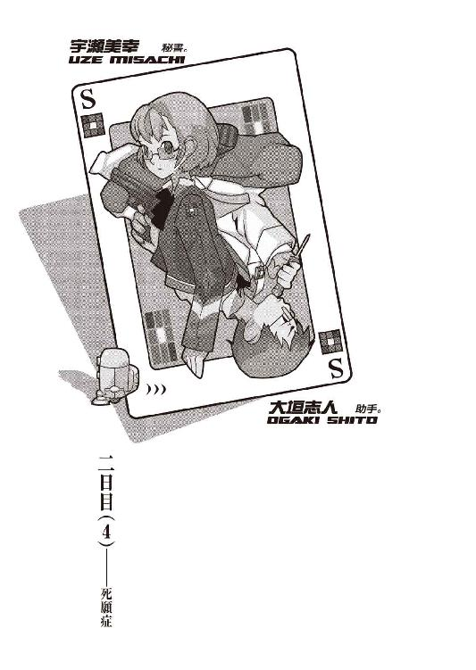
０
強い人間より弱味のない人間の方が危険だ。
１
小唄さんは階段のところで座っていた。
三好心視が管理する第三棟の三階非常階段の扉を錠開けブレードで開けてノブをひねって扉を開けたままの姿勢でぼくはフリーズして、それから十秒後にようやく「何してるんですか？」と発音することに成功した。
「待ち人来たらずといったところですわ」小唄さんは平然と答える。「十全ではありません」
「......それならただ今来ましたが。しかしあなたは根尾さんの研究棟に戻っているはずなのですが」
「考えてみたらですね。今根尾さんのところには春日井さんが訪れているわけなのです。そんなところに戻るのも、十全ではありませんから」
小唄さんは立ち上がって、腰の下に敷く形になっていたコートの裾についた汚れを払った。それから背伸びをして、わざとらしく首を鳴らしたりする。
ひょっとしたらぼくのことを心配してここで構えていてくれたのかもしれない、と思ったけれど、どうだろう、それは分からなかった。そうかもしれないし、それと同じくらいの可能性でそうじゃないのかもしれない。不確定だった。どっちにしたところで、それは投げたコインが立ってしまうくらいの確率だろう。ぼくは何も言わず、借りていたナイフを小唄さんに返した。
「それで何か成果はありましたか？ お友達」
「そこそこ、ですね」ぼくは後ろ手で扉を閉じて、それから答える。「少しは前進しました。けれど、それだけです。情報量が増えただけで解答には至りませんでした」
「雑多な情報など邪魔にしかなりませんがね......まあいいでしょう。よろしければ、お聞かせ願いますわ」
別に隠す理由があるとも思えなかったので、ぼくは兎吊木の死体について分かった事実と先生から教えてもらったいくつかの情報、それから先生とぼくとが交わした会話の全てを、小唄さんに話した。ぼくの記憶力が悪いせいで少しつたない説明になったけれど、小唄さんは一回聞いただけで理解できたようだった。
「......腕が切られた理由ですか」
「死体を解体する理由なんて、大抵は運搬や隠匿に便利だとか、怨恨だとか、あとは性欲くらいしかないと思うんですけれどね。しかし腕だけとなると、そこに何らかの事情があったんじゃないかと推測するのは、あながち間違いではないと思うんです」
「......あなたは、三好さんの意見に対して《ミロのヴィーナスじゃあるまいし》などと言ったらしいですが、それはどういう意味なのですか？」
小唄さんが、一聞すると意味の分からないようなことをぼくに訊いた。質問の意図が分からないままにぼくは、「特に意味なんてありませんが」と答える。
「ヴィーナスの腕について色々ある諸説の中の一つですよ。心視先生の仮説がそれを彷彿とさせたから、そう言っただけです。ただ単に」
「わたくしがヴィーナスについて一番気に入っている解釈は、デフォルトですけれど、腕なんて最初からなかったという説ですわ」
「はあ。それがどうしたんです？」
「いえ、ただの雑談です。どんなものであれその結果こそが完成形であるというためになるお話ですわ。結果──それがどんなものであれ、ね。それでは」と小唄さんはぼくを眇める。「これからどうしますか？」
「これから......」ぼくは少し考えて。「とりあえず屋上に出ましょう。ここにとどまる理由は何もありませんし」
「仰せのままに」
そう言ってデニムのコートの裾をはためかせ、小唄さんは階段を昇り始める。ぼくもその後ろをついて歩いた。十段ほど階段を昇ったところで小唄さんが「雑談ついでに、それにしましても」と、前置きをしてから、
「あなた達の師弟関係は判然としませんわ」
と言った。
「判然としないとは、どういう解釈ですか？」
「信頼関係があるのかどうか分からないという意味ですわ。あくまでこれはわたくしの視点から見てですが、つまり私見なのですけれど、あなたは先刻、何だかんだ言いつつも安全を確信していたように思えるのです。《先生》は自分を博士に告発したりはしない、むしろ協力してくれるはずだと、どこかで確信していたかのように」
「そりゃ誤解ってもんですよ、小唄さん。あの場ではああするしかなかっただけの話です。勿論無事内に収めるだけの勝算はありましたけれど、危ない賭けだったことに違いはありません」
「実際そうなのでしょうけれど、しかし幻想は捨てられませんわ」
「幻想ね......信頼関係とお互いの性質を確実に知っていることとは違いますよ」ぼくはぶっきらぼうに言った。「あの人ほど気の揃わない人は向こうにはいませんでした」
「向こうには、ですか？ その言いには何やら含みがありますね」
「こちらにはもっと気に食わない占い師がいましてね......、あれに較べりゃ先生もまだ可愛いもんです。とにかく、そういうことですよ。ぼくと先生との間に強いつながりなんて月の重力ほどもありません」
「そうかもしれませんね」それは本当に雑談程度の興味だったらしく、小唄さんは至極あっさりと退いた。「さて。タイムリミットはあと三時間かっきりですわ。勝算の見込みはいかがな具合です？」
「芳しくありませんね。なんていうか、次回作にご期待くださいという感じです」
「なんですか？ それ」
「戯言です」
そう言えば前書きが《次回作にご期待ください》だった小説を昔読んだことがあったなあなどと現実逃避をしながら、ぼくは小唄さんと共に第三棟の屋上へと辿り着いた。小唄さんは屋上のまん真ん中辺りにまで歩いて、そこで両手をあげて万歳をするようにした。ＵＦＯを呼んでいるのでない限り、ただの背伸びだろう。
「それにしても、ここからの景色は正に絶景ですね」と、ぼくはなんとなく小唄さんに話し掛けた。「一面の杉林といいますか。自分が何をしなくてはいけないのか、少し忘れそうになりますよ。心を奪われるとはこういうことを言うのでしょう」
「詩人らしい台詞に水を差してなんですけれど」小唄さんは普通に言う。「ここから見える景色は杉山ではありません。主に楢です」
「え？ そうなんですか？」
「あとは栗の木。松もありますわ。他にも色々混ざっているようですが、しかし杉はありません」
「そうなんですか。へえ......。山って全部杉が生えてるものだと思ってました」
「猛烈な勘違いですわね。お脳の具合は大丈夫ですか？ まあ、木の話は別にどうでもよいのですが」小唄さんはぼくを振り向いた。「わたくしが今何を考えているか、分かりますか？ お友達」
「......さあ。分かりませんけれど」ぼくの山林についての無知だろうか。いや、違うだろう。「なんですか？」
「わたくしは少し感心しているのです。三好さんの見切りの速さに」
「ああ......」ぼくは頷く。「確かにそうですね。けれど正しいと言えば正しいでしょう？ 先生は利に聡い人ですからね。理由もなくいつまでもこんなところに拘泥はしませんよ」
「卿壱郎博士とは違って、ですか？」小唄さんは言った。「あなたの中で随分と卿壱郎博士は悪役になっているんですわね。あんな扱いを受ければ仕方ありませんが。でも仕様のない話ですわ。品性なんてものは所詮恵まれた人間に与えられるオマケみたいなものなのですから」
「どういう意味ですか？」
「人間は余裕があってこそ初めて善い人間になれるという心温まるお話ですわ。切羽詰まっているんですよね、皆さん」シニカルっぽく小唄さん。「玖渚さんや兎吊木さんのように真実の天才ならば、勿論他人に優しくもできるでしょう。《もしも自分がエジソンだったなら発明王と呼ばれることも可能だっただろう》という箴言がありますが、それと似たようなものですね。百億持っている人間はその内一億を誰かにあげても別に心は痛まない。それでも自分は相手よりも九十八億多く持っているのですから」
「随分と庇うじゃないですか。昨晩は《墓場だ》とかなんとか、ひどいことを言っていた癖に」
「あら。墓泥棒が一番儲かる職業なんですよ？」小唄さんは飄々と嘯いてみせる。「ま、何にしても《余裕》っていうのは何より大切ですわよね」
「玖渚はともかく──兎吊木は余裕たっぷりではあっても、他人に優しいってタイプじゃありませんでしたけどね。余裕の分だけ更に嫌な奴でしたよ」
「優しくすることもできれば優しくしないこともできる。選択できる者は幸いですわ。何にせよ選択の余地なく決定してしまっているというのは悲劇的ですわね。そうは思わないですか？」
「悲劇なんかじゃありませんよ。ただ悲しいだけです」ぼくは適当に相槌た。そして路線を変更する。「先生は既にこの施設から出て行くことを決意しているようですけれど、それなら根尾さんはどうなんですかね？ もしも心視先生の言う通りになるんだとしたら、これ以上のスパイ活動に意味がなくなってしまうわけでしょう？ それに、......あなたも、どうするんですか？ 石丸小唄さん」
「それこそ余計な心配ですわ。三好さんと根尾さん、それにわたくしとじゃ三者三様目的が違うわけですから、同じ行動を取る必要はありません。それに、三好さんは早々に見切ったようですが──それはやはり見事な眼識と評するべきなのでしょうが──わたくしの見方では博士の案はそんなに悪くないと思いますわ。成功率が高いとは言いませんが決して低くもありません。そして成功した場合に得られるメリット──玖渚友そのもの──は、途轍もなく大きい。十全に冒す価値のあるリスクですわ」
「お陰でこっちはいい迷惑ですけれどね」自然、ぼくの声は少し不機嫌げになった。「どいつもこいつも......ハゲタカですね、まるで。他人を標本だの、実験台だの、試験体だの......、本当、それでも人間なんでしょうか」
「人間だったんでしょうね。学者なんかになる前は」
あまりに皮肉の利いた小唄さんの言葉に、ぼくは身体の中を隈なく悪寒が走り抜けていくのを感じた。こと人間離れという観点で言うのなら、今この施設内にいる中で、この存在が一番図抜けているのではないかと、そう思った。
「まああなたの言う《どいつもこいつも》の中にはわたくしも含まれているのでしょうが。しかしそれも一つの十全ですわ。さて。とりあえず根尾さんのところにでも戻って対策を練り直しますか？ 根尾さんが何か新情報を手に入れているかもしれませんし、それに博士達の動向を探っておくのもよいでしょう」
「............」
小唄さんの言葉を聞きつつ、ぼくは根尾さんのいる第五棟とは全く反対の方向を見ていた。即ち第二棟の方向を。より正確に言うならば、ここ、第三研究棟と第二研究棟との隙間の距離を、ぼくは目測するように視認していた。そんなぼくに気付いたらしく、小唄さんは「何を考えているのですか？」と、ぼくの前面に回りこんで問うてきた。
「このまま第七棟まで移動できないものかと考えています」
「......それは無理だと申し上げたつもりでしたが」
「その理由をぼくはまだ聞いていませんよ。それに、こうして見る限りにおいて、ほら、第二棟までの距離は二メートル。第五棟と第四棟との間と同じくらいの距離......いや、むしろこちらの方が心なし短い感じです。それと、その次の第二棟と第一棟......つまり博士のいる中枢研究棟ですが、その距離だって、そんなに遠くなかった気がしますよ」
「こだわりますね......それこそ拘泥しているのはあなたじゃないのですか？」小唄さんはやや呆れたように言う。「十全ではありません」
「だったら教えてくださいよ。どういう理由で無理なんです？」
ここからでは第一棟から第六棟への距離、それに肝心要の第六棟から第七棟への距離がどれほどなのか、角度的に見ることができない。そこの距離が問題だと、小唄さんは言うのだろうか。分からない。ただし小唄さんはぼくよりもずっとこの施設内に通じている。こと《忍び込む》《侵入する》ことにおいては小唄さんの意見の方がぼくの意見よりもずっと尊重されるべきなのは、理屈では分かっている。分かっているけれど。
「でも、ぼくにはもう、第七棟へセキュリティを回避して侵入する手段はそれくらいしか思いつきませんよ」
「それなら思いつかない方がマシですわ」小唄さんは容赦ない。「......言葉で言っても分からないでしょうから、それなら実体験してもらいましょうか。逆転発想型のあなたにしてみればどんな行動ですら時間の無駄にはならないでしょうし、こうやって言い争っている時間の方が無駄というものでしょう」
小唄さんは言って、第二棟の方へ歩いていき、そしてまるで水溜りでも回避するかのような簡単な足取りで、第三棟から第二棟の屋上へと移動した。いくらたかだか二メートル程度の距離だとは言っても、ちょっと足を滑らしたらそれで命すらなくす危険があるというのに、この豪胆さは感心してしまうものがある。
ぼくは小唄さんのあとをついて、第二棟へと移った。小唄さんの足取りは速く、早くも彼女は反対側の縁にまで移動し、そこでぼくの到着を待っていた。追いついて、見てみると第二棟と第一棟の距離は三メートル......いや、三メートル足らず。第四棟から第三棟への空中距離を考えたら、何でもないような距離だった。
小唄さんは少し助走を取って、第一棟へと跳ぶ。いくらかの余力を残しているのが明らかな、軽やかな跳躍で、小唄さんは第一棟屋上へと着地する。着地地点で振り向いて、黙ったままぼくを待つ小唄さん。さすがにこれで総計五回目の跳躍、さすがにぼくも慣れてきた。ただしこういうアクロバットは慣れてきたときが一番危ういと聞いている。ぼくは気を引き締めて、そして第二棟から第一棟へと跳んだ。
「......ヘリポートになってるんですね、ここ」ぼくは第一棟の屋上にペイントされた丸い印（真ん中に《Ｈ》の文字が記されている）を足元に、そう呟く。「それに随分でっかいアンテナ......、隔絶されてるとは言っても、外部との連絡は閉ざされていないってわけか......」
「玖渚のお兄さんか知り合いの請負人さんに助けを求めたくなりました？」小唄さんが茶化すように言う。「そうなさりたいならご自由に。きっとすぐに助けに来てくれますわ」
小唄さんはそれほど意識していなかったようだが、しかしその台詞、まるで直さんや哀川さんのことを知っているかのような口ぶりだった。不審を感じつつも、ぼくはそこには拘泥しなかった。あとから考えればもっと拘泥すべきだったかもしれないけれど、ただしぼくは後悔を先に立てられるほどに器用でも超能力者でもない。今はまだそのときではありませんよ、と軽い感じで答えて、東方向へと折れる。第五棟から第一棟までは一直線に並ぶ形になっているのだけれど、第六棟と第七棟は設計上後回しにされたのだろう、そこから横に折れているのである。ぼくの視線の直線上に第六棟と、そして第七棟が並んでいた。
「卿壱郎博士達は」と、小唄さんはまるで透視でもしているかのように屋上の床を見つめつつ、そう言った。「一体今頃どんな方策を持ってあなた方......いえ、玖渚さんを真犯人として立証できるだけの証拠を集めているのでしょうね。ふふ、もしも第七棟への侵入が成功したところで、裏工作中の誰かと鉢合わせになったら目も当てられませんわ」
「そんなネガティヴになっても仕方がないですよ」
「そうですわね。その辺りは根尾さんに任せておきましょうか。人任せはあなた好みではないのでしょうけれど」
小唄さんは場違いににっこりと笑って、そして第六棟に向かって歩いて行く。
「そうですね──て、あれ」
第六棟の屋上には、入り口らしきものは何も見えなかった。確か志人くんの話では第六棟は発電所──何発電だったっけ？ 炭素発電だったか、珪素発電だったか。窒素発電？ その三つの内のどれかだったことは確かだが、よく聞いてなかったので曖昧模糊だ──になっていて、人が出入りする場所でもないし、まして屋上に洗濯物を干したりはしないだろうから、それで正当なのだろうけれど、しかしその向こう側に見える第七棟の屋上にも、入り口の扉らしきものは見えない。大きな給水タンクが東隅に配置されていて、それに付随した太目のパイプがいくらか配置されているだけで、あとは綺麗な平面になっていた。
「こういうことですか？ 小唄さん」ぼくは呆然としたままで小唄さんに訊く。「つまり、第七棟には屋上に対する出入り口がそもそも存在しない──」
「存在しますわ」小唄さんは即答する。「見えませんか？ あなた、視力は？」
「ここんところはかったことがありませんが、落ちたって自覚はないので、多分二・〇くらいですが」
「では見えるはずですわ。給水タンクからこちら側に三メートルほど。マンホールみたいな丸い鉄の蓋が見えるでしょう？ 出入り口というよりは非常口といった趣ですが、しかしあそこから屋上への出入りは可能です」
確かに小唄さんの言う通り......と言うより、言われて初めて、その扉（と言っていいのだろうか）に気付く。しかし距離的に言って、第六棟を挟んだその距離的に言って、ほとんど見えないと言ってもいい。あんなものが見えるなんて、小唄さんの視力は一体どれくらいなのだろう。かけている眼鏡はやはり伊達なのだろうか。
「なぜ無理なのかの理由は別にありますわ。とりあえず第六棟にまで移動しましょう。近い方が分かりよいでしょうから」
小唄さんは言って、第一棟から第六棟への距離を跳んだ。その距離は一メートルと半分くらい。玖渚が横向きに寝て手を伸ばせば架け橋として成立してしまいそうな（我ながらひでえ想像だが）、そんな短い距離だった。
助走すらつけず、またぐようにその距離をクリアするぼく。余裕だったけれど、しかしそれでも下方向を見るとわずかながらの戦慄を感じた。それならば下など見るなと言われるところだが、そこが人間心理の不思議なところだ。
「さて。これで分かったでしょう？」第六棟の端にまで移動した小唄さんが、ぼくが追いつくのを待たずに言った。「第七棟へこのルートでは行けない理由が」
「............」
小唄さんに近付いていくにつれて、ぼくは徐々に、小唄さんの言うことが分かってきた。第六棟屋上、その中心点の辺りにまで足を運んだところで、ついにぼくはそれを確信せざるをえなかった。嫌でも確信せざるをえなかった。
「......なんてこった」
確かにこれでは......無理だ。
第六棟と第七棟との間の距離。それは今まで渡ってきた研究棟同士──第五棟から第四棟の二メートル、第四棟から第三棟の三メートル半、第三棟から第二棟の二メートル足らず、第二棟から第一棟の三メートル足らず、第一棟から第六棟の一メートル半──とは桁違いだった。いや、桁自体は同じ一桁だけど、しかしそう表現しても誰も間違いも指摘しない程度には、絶望的な距離だった。
五メートル。
五メートル......。
「無理でしょう？」小唄さんは繰り返した。「このルートでは第七棟に侵入できないとわたくしが言った理由がお分かりになったでしょう？ お友達」
「成程ね......」
五メートル。それは命をかけて跳躍するにはいくらなんでも無茶が過ぎる距離だ。命知らずどころか命を投げ捨てるような行為に他ならない。ぼくは体育会系の記録には詳しくないけれど、さっき小唄さんが言っていたところによれば、世界記録で八メートル九十五センチ。ざっと九メートルとしよう。この第六棟から第七棟への距離はそれよりも四メートルも短い。だけれど小唄さんがそれを言ったときにぼく本人が思った通り、世界記録なんかと較べられても困る。ぼくは日本人で、そして身体をさほど鍛えているわけでもない。玖渚ほど極端ではないにせよ、完全にインドア派だ。
五メートル。
正しくこれは無理難題だ。
「......それではここでいつまでもこうしていても意味がありませんし、今度こそ根尾さんのところにでも戻りましょうか。別ルートがないとも限りませんし──」
小唄さんの、慰めとも何ともつかない言葉を聞きつつ──いや、そんな言葉は聞きもせず、ぼくは思いつめるように考えていた。ただ、考えていた。そう、これは無理難題だ。揺らぎようもないくらいの堅牢無比、完全無欠の不可能事だ。
「────────────」
でも、だからこそ。
だからこそだ。
磔刑にされた兎吊木《害悪細菌》垓輔。両腕を切断され、両眼とその奥の脳髄すらを破壊され、喉奥をえぐられ、解剖された蛙か鮒かのように胸部と腹部を裂かれ、砕かれた両足を貫かれ。あの真実何もない、無機質どころか無質だったあの部屋を、赤黒く酸鼻の空間へと変色させ、そして壁には文字通り──正しく文字通りに──血塗られたメッセージ。
融通の利かないハードセキュリティにロックされた研究棟そのもの、大き過ぎる密室。誰もそこに侵入した記録は残っていない。どころか一人の例外を除いて誰も自分の研究棟から出ていない。犯行が物理的に、論理的に可能だったのはセキュリティのかつての管理者、玖渚《死線の蒼》友、かつての日本のサイバースペース法の条文を五十五倍に書き直させた《チーム》《一群》の統率者にして支配者、ただ一人。
《堕落三昧》斜道卿壱郎研究施設。
滅茶苦茶だ。尋常な事件ではない。論議の余地もないくらいの不可能犯罪、弁解の余力も湧かないくらいの異常殺人、反駁の考慮もできないくらいの超常現象。
だからこそ。だからこそ。
だからこそ、この事象の解答は狂った推理でなければならない。そうである必要がある。この事件の犯人だけではない。推理するこのぼくすらも狂わなければならない。狂ってなければならない。それでこその論理だ。
深呼吸。一回。二回。三回。
「......ちょっと。何を考えています？ お友達」小唄さんが不審そうに言った。「わたくし、なんだか激しく嫌な予感がいたします」
「的中ですよ」
答え、ぼくはその位置から──第七棟へ向けての縁までの距離、約十メートル──駆け出した。余裕はない。何の余裕もない。一センチたりとも、この距離を無駄にするわけにはいかない。何も考えず、何も感じず、生きていることすらも忘れて、ぼくは全身の筋肉をフル始動させていた。脳は既に機能していない。心のないロボットのように、命令に従って。
まだ。まだ踏み切らない。あと一歩。
「この──馬鹿ッ！」
小唄さんが、今までの上品ぶった声色を変え、初めて感情を込めた怒声を──罵声をぼくに浴びせたその一刹那あと、ぼくは左足で踏み切った。何かが、微量の分子が身体の中を通過していくような、血液が全部どこかから抜けていくかのような、液体窒素を頭から浴びたときのような気持ち。分子が身体の中を通過した経験も血液が全て抜けていった経験も液体窒素を浴びた経験もないけれど、しかし、多分、そのときはこんな感覚だろう。
つまり。
全てから解放された。
全てに開放された。
しがらみのない。
これが死ぬということ。
これがしぬということ。
なくなるということ。
きえるということ。
おわるということ。
死。
これで。ぼくは死ねる。ぼくが死ねる。ぼくと死ねる。ぼくへ死ねる。ぼくを死ねる。ぼくに死ねる。ぼくも死ねる。ぼくで死ねる。ぼくの死ねる。ぼくから死ねる。ぼくより死ねる。
「だからこそあなたは──」
走馬灯だろうか、いつか誰かに言われた台詞が唐突に思い出された。
「──死んだ方がいいんです」
うん。
そうですね。
２
..................
「くさなぎ？ くぎなさ？ なに？」
「玖渚だよ玖渚。Ｋ・Ｕ・Ｎ・Ａ・Ｇ・Ｉ・Ｓ・Ａ、くなぎさ。それにフレンドの友。玖渚友だよ」
「ふうん。そっか。玖渚くんか。へえん、その頭、格好いいね」
「僕のことは友って呼んでいいんだよ」
「そうか。じゃあぼくのことも友って呼んでいいぜ」
「ややこしいよ。僕はきみのことをいーちゃんって呼ぶことにするよ」
「じゃあぼくもきみのことをいーちゃんと呼ぼう」
「ややこしいよ」
........................
..........................................
「あれは雛鳥みたいなもんだ」
「雛鳥？ それ、何ですか？」
「インプリンティングを知ってるかい？ 生まれたばかりの小鳥は一番最初に目にした動くものを、それが何であれ、親として慕うっていう......まあ、迷信さ」
「あなたの妹さんにとってのぼくがそうだと？」
「ああ。今や友にとってきみは唯一の道しるべだ。他に代わりがない無二の存在だ。俺にとって不愉快極まりないことに」
「ぼくにとっても愉快じゃありません」
「きみは権利を得たわけだ。親的存在として友を好きなように服従させることのできる権利を。玖渚友に関する自由な所有権を得たわけだ」
「世の中には子供に殺される親もいるんですよ、直さん」
....................................
....................................
「死にてえんだろう？ 死んで、詫びてえんだろう？ 許して欲しいんだろう？」
「............」
「だったら祈れ。祈ればいい。泣いて、許しを乞うて、祈るがいいさ」
「............」
「この僕がかつて玖渚直に対してそうしたように、神様か悪魔様にでも頼むがいいさ」
「............」
「次に生まれてくるときはどうか犬か猫にでもしてくださいってな」
「............」
「豚でも牛でも猪でもいい。ムシケラだって構わない。とにかく玖渚友にだけは会わずに済みますように......」
....................................
....................................
..........................................
意識を失っていたのは多分、ほんの一瞬──正しく一瞬、瞬きをしたその一瞬だけだったのだろう。ぼくは第七棟の屋上、その打ちっぱなしのコンクリートの上に寝転がっていた。正確には倒れていた、というのだろう。着地に失敗したのだろうか。足が少し痛む。しかしこれは着地の衝撃から来るものに違いない。だとすると、着地したその瞬間に、ぼくは安心感から──あるいは虚脱感から、意識をわずかばかり飛ばしてしまったということだろう。無意識ながらに受身をとったらしく、怪我らしい怪我はしていないようだった。今朝方、鈴無さんと心視先生にぼこぼこにされたことを思えば、何でもないような鈍痛だった。
「やれやれ──因業が深い......」
生き残った。
跳躍できた。
ぼくはそれを嚙み締めながら、ゆっくりと身体を起こした。起こそうとした。
「──わたくし只今心底呆れています」
と。ぼくの真横から声がしたことによって、身体を起こそうというぼくの試みは中断される。そこにはデニムのコートを屋上の風に任せたままに佇み、ぼくを見下ろすように睨視している石丸小唄さんの姿があった。
「......え？ て、あれ......」
ぼくは首を回転させて、自分が跳んできた方向、つまりは第六棟の屋上を見遣る。そこに小唄さんの姿はない。つまり、今の状況が跳躍に失敗したぼくが命を失う寸前に見ている夢だとでも言わない限り、小唄さんもこちら側への跳躍に成功したということになる。前者の可能性もそれなりに高い気がしたけれど（コインの表が出る確率よりは高いだろう）、しかし身体の節々に走るこの痛みは間違いなくリアルだ。だけれど錯痛という現象もこの世にはある。分からなかったので、ぼくは小唄さんに訊いてみた。
「ぼくは、生きているんですよね？」
「死んでないというだけですわ」小唄さんは冷たく答えた。「誰に急かされたわけでもなく自ら死に急ぐような物体を、生きているとは言えませんから」
「そうですか......」
今度こそ、ぼくは身体を起こして、立ち上がった。筋肉、骨、筋、全て問題なし。柔軟運動の真似事をしてからぼくは小唄さんに「あなたもこっちへ跳んできたんですか？」と言った。小唄さんはこれに答えず、ただ大きくため息をついた。
「あなたを相棒に選んだことは失敗だったかもしれませんわ」小唄さんは言う。「こんな無謀に付き合わされるとは全く思っていませんでした。十全じゃありません。全然十全じゃありませんわ」
「でも、これで第六棟から第七棟までは跳べる──つまり移動が可能だということが立証されたじゃないですか。結果オーライですよ、小唄さん。これで第七棟までのルートは確立され、つまりこの事件における密室性は削除された──」
つまり、研究局員を容疑から除外する理由はなくなったということだ。わざわざ、唯一の出入り口であると思われていた玄関口を使わなくとも、屋上から屋上への移動を繰り返すことでこの第七棟への侵入が可能だと、今ぼくが文字通り身体をもって証明した。自分の研究棟のセキュリティに記録されることもなければ、この第七棟に出入りした記録を残すこともない。
勿論、これでは誰にでも犯行が可能だと立証できただけで、まだ誰が犯人なのかは分からないけれど、しかし少なくとも玖渚友一人だけを容疑の対象にする理由──というよりは大義名分と言うべきか──はなくなる。なくなるのだ。
「後先もへったくれもあったもんじゃないんですね、あなたの考え方は」しかし、相変わらず小唄さんの声は冷たい。ぼくの独断専行に相当腹を立てているらしい。「そいでいて結果オーライとは笑わせます。大爆笑です、わたくし。あなたは一度心視先生から脳内を解剖してもらった方がいいんじゃないですか？ 多分他の人とは全く違う配線構造になっていますよ」
「随分と酷い言い草ですね......、そりゃ、先走ったことは謝りますけれど、でもそのお陰で一見不可能に見えるこの距離でもなんとか跳躍は可能だということを立証したのですから、いいじゃないですか」
「あなたの常識は人の話を最後まで聞くなと教えているのですか？ わたくしがいつ、どこで、どんな風に、《第六棟と第七棟との間は跳躍が不可能だ》と言いましたか？」
「............？」
その小唄さんの様子に、さすがにぼくは不審──と言うより、焦燥感に似た気分を覚え始める。そうだ。そもそも無茶という点では、この石丸小唄さんの方がずっと無茶をやらかしている。《零崎》姓を名乗って堂々とこの施設内に侵入していることといい、背徳者の根尾さんと通じ合っていることといい、それに裏があるとは言ってもぼくと玖渚と鈴無さんの三人を助けようとしていることといい。彼女の冒しているリスクは相当に値するほどには高い。そんな小唄さんが、この程度の──死ぬ確率があったとはいえ、結局死ななかった程度の──危険をぼくが勝手に冒したくらいのことで、こうもしつこく文句を言うはずがないではないか。
つまり......別に何かがあるということか。
そこまで考えて、──ようやく考え初めて、ぼくは気付く。気付いてしまった。そうだ。そもそも五メートルの跳躍なんてそれほどに身体を鍛えてもいないぼくにできるはずがない。それなのに、幾許かの勝算を持ってその行為に打って出たのは何故なのか。その理由は。無意識内に気付いていたその理由は。
ぼくはもう一度第六棟を振り返った。
そして。
「......あっちゃあ......」
成程。
そういうことか。
そういうことでしたか、小唄さん。
ぼくは納得いった。心底納得いった。そして呆れた。心底呆れた。自分自身の間抜けさ加減と、小唄さんが言っていた《このルートが不可能な理由》に。
「済んだことをとやかく言うのはわたくしの趣味でも主義でも流儀でもありませんが」ぼくの背に、冷ややかな小唄さんの声がかかる。「これでわたくしとあなたはより一層の苦境に追い込まれたことは自覚してくださいね、お友達。今度このような独断専行をするようでしたら、わたくしはあなたとの同盟を考え直さなければなりません」
「......確かに......」
ぼくは頷きつつ、再度、《その事実》を確認する。ひょっとしたら自分の勘違いではないかと確認する。そして勘違いではないことを確認した。
第六棟は、この第七棟よりも、少し背の高い建築構造になっていた。逆に言うなら、第七棟は他の研究棟よりも背の低い建築構造になっていた、ということだ。第六棟から見ればそれは分かりにくかったけれど、しかしこちら側──低い側から見ればそれは顕著によく分かる。第六棟の屋上の高さは第七棟の屋上の位置よりもやや──それは数十センチ程度だが──天に近い。さて、それが何を意味するのか。
つまり、向こう側からこちら側への跳躍が容易になるということ。直線距離では五メートルでも、重力と跳躍角度の関係で、実際よりも数十センチ分の余裕ができる。ぼくが跳躍に成功した理由はそれだろう。追い詰められた精神が肉体能力を凌駕したという説明もなかなか熱血で素敵だけれど、こうして理屈をつけた方がよっぽど納得がいくというものだ。
さて、向こうからこちらへの跳躍が容易になっているということは。他の研究棟群と違って、この第七棟だけ他の研究棟と高さが揃っていないということが意味するのは。
「......戻れない」
ぼくは呟いた。
呟きたくなかったけれど、呟いた。
「その通りですわ、お友達」小唄さんが追い討ちをかける。「このルートが無効である理由はそれですわ。つまり、この施設内において、後から建設されたらしいこの第七棟だけは高さが他の研究棟と均一ではないということ。第六棟の方が高いということ。そうですわね、もし第六棟に戻ろうとするなら、七メートルくらい跳ぶ気で行かないと無理ではないでしょうか？」
「............」
「それでも試してみたいというのでしたら、どうぞご随意に」
「遠慮します......」ぼくは一歩下がって、それだけでは堪えきれず、その場に座り込んでしまった。「......っちゃあ......、ぼくがばかでした、小唄さん」
「分かってくれれば十全ですわ。大抵のことは謝れば済みますから」小唄さんは肩をすくめて、それからようやく口調から冷たさを消し、明るい調子で言った。「それに、わたくしの物言いが少々もったいぶっていたこともこの事態を招いた一因だとは自覚しています」
それは確かにそうだった。「見れば分かる」みたいな曖昧な言い方をせずに、ストレートに「第七棟は高さが違うから渡ることはできても戻ることはできない」と教えてくれていればこのような事態にはなりえなかった。けれど、やっぱりこれは《見れば分かる》はずのことを、見ても分からなかったぼくの責任だろう。頭に血が上っていたとしか釈明の仕様がない。
「結局、密室は密室のままってことですか......」ぼくは絶望的に呟く。「......でも、もしかして、局員の中にすごい体力の持ち主がいたりしませんかね？」
「いたとしても非十全でしょうね、お友達。そもそもわたくしがこのルートでは無理だと言った理由はもう一つありまして。憶えていませんか？」小唄さんは言う。「昨日の夜、わたくし達が出会ったとき──雨が降り始めていたでしょう？」
「雨......？」
ぼくは屋上の床に目を落とす。もうほとんど乾いていたけれど、確かに濡れた後、水溜りができた形跡が、そこには残っている。
そうだ。雨。昨日の夜中は、雨が降っていた。
「......あ」どうしてそんなことに。今ごろ気付くか。「ああ......」
「三好さんの話では死亡推定時刻が午前一時前後ですから......、まあ第六棟から第七棟へは渡れたとしましょう。けれど、三好さん、こうも言ってたのでしょう？ 腕が切断された時刻は何故かそれよりも数時間後だった、と。つまり、帰り道......兎吊木さんの殺害、それに付随する装飾活動を終えて、自分の棟へと戻ろうとしたとき、この屋上では雨が降っていたとそういうことになりませんか？」
そういうことになると、どういうことになるか。単純だ。雨の中で、雨の中でないときと同じ記録が出せるわけがない。ましてその記録を伸ばすことなど、できうるはずがない。
迂闊だった。迂闊過ぎた。昨晩夜中に雨が降っていたという事実を思い出すだけでも、このルートが使われていないということに思い至って不思議でなかったはずなのに。ぼくはどうしようもなく救えない馬鹿野郎だった。焦って、焦って、焦って、そして行動に移せばこうも裏目に出てしまうものだろうか。死んでも治らないくらいの激しい間抜け具合だった。
「どうしましょうかね......」
密室を解決するどころかそれは益々強固さを増し、更にはぼくらの方が密室に囚われてしまった。当たり前だが、カードも持たないＩＤ登録もされていない暗証番号も知らない声紋網膜チェックも受けていない、そして玖渚のような管理者権限もないぼくと小唄さんに、玄関口からの突破は不可能である。かといって、いくら他の研究棟よりも高さが低いとはいえ、この屋上から飛び降りようってほどぼくはムササビではない。小唄さんはどうだか知らないが、こうして見る限り彼女にも羽根はない。そしてこの建物には窓がない。これまた文字通りの八方塞りだった。
「残り時間はあと二時間四十五分。あまり考えている時間もありませんわ」やがて、小唄さんは言った。「とりあえず行動に移りません？ あとのことはあとで考えるとして、折角──残念ながらと言うのか幸いにしてと言うのかは微妙なところですが──折角、第七棟への侵入に成功したのですから、現場検証と行きませんか？ お友達」
「......前向きですね」
「他人事ですから」
小唄さんは言って、給水タンクのそば、例のマンホールの蓋のようなものを開きにかかる。錆びているのか、それとも元々かなり固く作ってあるのか、それはなかなか開こうとはしなかった。ぼくも手伝って、結局二人がかりで鉄製の蓋を開けた。
「そう気落ちすることはありませんよ、お友達。この第七棟内に丈夫なロープがあるかもしれません。人間一人の体重を支えきれるだけの丈夫さを誇るロープがないとは限りませんわ。もしもあればここからの脱出は可能です」
「あると思いますか？」
「全然ちっとも思いません」小唄さんの慰め方はどうも中途半端だった。「では参りましょう、お友達」
どちらにせよ、そうするしかなさそうだった。内部の鉄製梯子を伝って、ぼくらは第七棟の内部へと侵入した。
３
三十分後。
凄惨な匂いの残る兎吊木垓輔殺害現場で、ぼくと小唄さんは、一言の口を利くこともなく、ただ、ただただ、まるでそれが何か重大な義務の付随する仕事であるかのように、佇んでいた。
小唄さんは入り口側の壁にその長身を預けたまま、腕を組んで、何かを思考しているかのように目を閉じている。今の小唄さんの姿を見れば、彼女の属性が哲学者だと言っても疑う者はいないだろう。そんな、ひどく落ち着いた、ひどく超然とした、小唄さんの物腰だった。対照的にぼくはと言えば、さっきからヒゲを切られた猫のように、ぐるぐると室内を、この何の調度もない室内を、赤黒く、そしてひどく下手糞にペイントされたこの室内を、歩き回っているだけだ。不機嫌そうに、まるで歩き方を忘れてしまったかのような焦燥感に囚われながら。
くそ。問題に対して時間制限があるというのがこうも苦痛だとは思わなかった。残り時間は──あと二時間十五分。しかもそれは長めに、かなり贔屓目に見積もった場合の話だ。
兎吊木の死体が運び去られたこの第七棟四階、兎吊木垓輔のプライベートルームは、まるで空間そのものが変質してしまったかのように、空虚なイメージしか残っていなかった。昨日訪れたとき、今朝訪れたとき。合計三回ぼくはこの部屋を訪れたことになるわけだけれど、しかしそのたびに抱く印象が違う。兎吊木というあの男のことをぼくは決して好きではなかったし好きになれそうもなかったけれど、それでも一番最初にこの室内に入って、兎吊木と丁々発止とやりあったときが、一番マシな気分だったような気がする。そして最悪の気分が現在だ。
「──何も分からないんですか？」小唄さんが、二十五分ぶりに目と、そして口を開いた。「既に残り時間は十全とは言えなくなってきていますが、お友達」
「何も見えないんですよ」応じて、ぼくは二十八分ぶりに口を開く。「仕掛けがどうとか言うより、筋書き自体が全然見えてこない......、本当の意味で意味が分かりません」
「弱音ですか？」
「本音ですよ。ここまで集中して考えているんです、ぼくだけじゃなくとも誰だって何かは思いつきそうなものです。でも何もピンとこない。犯人がどういう思考を辿ってこの結果に至ったのか全然分からないんです」
「思考を辿って、ねえ......あるいは思考などしていなかったのかもしれませんね」
「......ええ。そうかもしれません」
それなら完全に手詰まりだ。第三者としての傍観者には、他の誰かの思考を辿ることこそ出来ても、他の誰かの思想を辿るなんてことはできない。できるわけもない。
「儀式めいている......と言うより、宗教めいてますからね。宗教家には申し訳ない表現で何なんですけれど、兎吊木の殺され方はどこか宗教的です。つまりこれは、不思議と言うより不気味な事件なんです。不思議なら解明すればいいだけだけど、不気味なものはどうしようもない。あれはこれ以上ないってくらいにえげつなかった」
「そうですか？」小唄さんは意外そうに言う。「わたくしは今まで、もっとえげつない死体をたくさん見てきましたよ。えげつない生体だってたくさん見てきました。どれが一番と順列をつけるのは避けたいところですが、強いて言うなら二年前に見た生首が一番極まってましたね」
「首斬り死体ってことですか？」特に思考が進まないので、ぼくは小唄さんの雑談に話を合わせた。「それならぼくも見たことがありますよ」
「いえ、首斬り生体です。首だけで生きている人間ですね」
「無理でしょう？ そんなこと。人間首だけなんかになったら死にますよ」
「医学的措置をすれば問題ありませんわ。心臓なんて所詮はポンプでしかありませんしね。肺臓は酸素の供給機関に過ぎませんし、その他の内臓だって栄養製造機と言って大過ありません。脳に血液と酸素と栄養分を供給し続ければ、頭部だけでも生き続けることは可能ですわ。もっとも内臓も喉もありませんから喋ることはできませんが、それでもコミュニケーションは取れます」
「......何が目的でそんなことするんですか」
「目的なんかないんでしょうよ。ただの興味ですわ。あなただって少しは興味が湧くでしょう？ 頭部だけで人間が生き残れるのかどうか。その思想はわたくし、理解できますわ。そういうものに較べれば──」と、小唄さんは反対側の壁に目をやった。そこには兎吊木が穿たれていた痕跡が残されている。「──兎吊木垓輔氏の殺され方に、わたくしは何の非論理的思想も感じられませんね。あるのはただの論理的思考です」
小唄さんは背中を壁から浮かし、扉を開けた。
「どこへ行くんです？」
「これは優しいわたくしの気遣いですよ。一人の方が考えやすいんじゃないですか？」
「まあ、そりゃ......。だけど、小唄さんはどこへ行くんです？」
「わたくしの本業をお忘れですか？」不敵っぽく笑う小唄さん。「折角難攻不落の第七棟へと侵入できたのですから、色々探ってきますわ。既に整理されているかもしれませんが......まあ、すぐに戻ります」
そう言って小唄さんは部屋から出て行った。
「本業か......ぼくの本業はただの大学生なんだけどね......」呟いて、ぼくはさっきまで小唄さんが立っていた場所へと移動し、同じように、壁に体重を任せた。「......どうしてこんなことになっちゃったのかなぁ......どうしてこんなことになっちまうのかな、いつもいつもいつもいつも」
愚痴る。誰にともなく。
「......もう嫌だよ。ぼくは。本当に嫌だ。本当に嫌だ。本当に嫌だ。本当に嫌だ。たくさんだよ」
畜生。畜生畜生畜生。人間以下の畜生共が。いっそ今すぐこの場で死んでみせてやろうか。兎吊木の血の色にぼくの血の色を混ぜてやろうか。左胸のナイフを取り出してまずは自分の腹筋に突き刺し縦向きにカット。それから内臓を引きずり出して辺りに撒き散らす。自分で自分の肝臓を食いちぎって気付け代わりにし、次は何も見えちゃいない誰の役にも立たないこの目に刃先をぶちこむ。脳にまで到達したらそれでぼくの頭の調子は正常になるだろう。そのまま頭蓋骨ごと顔面を切り下ろして喉を経過し鎖骨を切断して胸骨も切断して大動脈へ、力と意識が持てば心臓まで。さぞかし素敵に血しぶきをあげること請け合いだ。問題はこのナイフにそこまでの強度があるかどうかだ。しかしなくてもどうせ死ねることには違いがない。そして生まれ変わったら今度こそ勉強して勉強して勉強して研究者になってやる。研究者になって山奥にでも研究施設を造ってそれでも決して壊れたり狂ったりせず、そこで世のため人のために、だけど感謝されることもなく日夜研究を続けるのだ。困っている人や恵まれない人のために人知れず自分の力を使うのだ。《学者だから狂ってりゃいいや》みたいな安直でステレオタイプな設定などどんな意味でも受け付けない、他人のことを思いやって、まず他人のことから考えられる人間になってみせよう。
「......嫌だなあ......何考えてるんだ、ぼく」
大体生まれ変わるとか言い出したら、もう人間はおしまいだ。相当疲れている。ぼくはずるずると、背中を壁にこすりつけるように、床へと沈んでいく。ものすごく重い没落感。完全にへたり込んでしまって尚、どこかへ落ちていくような感覚に囚われて。頭を抱えて、そして嘆息する。
「壊れちゃったのかなあ......」
頭を過ぎるのは、玖渚が言ってくれたこと。ぼく自身が本当に駄目だと思ったときには直さんに連絡をしてもいい。あるいは人類最強の赤い請負人のこと。仮に彼女に頼ったならば。もうこんな苦しい思いはしなくてもすむ。根尾さんから電話を借りて......あるいはネットワークを通じて、連絡を取ることは、多少の労力を要するにせよ、そう難しくはない。そんな裏技を所有しているにもかかわらずそれを使うわけにはいかないという矛盾。その矛盾を容認できるほどにぼくは本当に寛大な......正大な人間だろうか。
もういいんじゃないか？
「......いいわけねえんだよ」
最後まで通さない努力など最初から意味がない。
これは努力と呼ばれるものではないけれど。
「なんて、不細工だ......」
貴重と稀少とは違う。危うく自分の無力さを世界の責任にしようとしてしまった自分自身──否、既に世界の責任にしてしまっている自分を露出しようとした、そんなことで何かから逃れようとした自分自身に対する忌々しさを隠そうともせずに呟いて、ぼくは立ち上がる。
意味のないことに時間を費やしてしまったと思いつつ、ぼくは正面の壁に目をやる。
《You just watch,『DEAD BLUE』!!》
「《黙って見ていろ》か......。こっちが暗号になってるってことはないのかな」
犯人が自ら証拠を残す可能性だって零とは言えない。幾つかの逆説を無視してぼくは壁に記された二十五の文字を順列組み合わせて並べ替えたり、一つ一つの文字を分解して再構築したり、別の言語に置き換えたり、その他色々と試してみたけれど、しかし、どれも決定的にはなりえなかった。半ば無理矢理に《ダラクザンマイ》の六文字を創り上げてみたけれど、しかしそれはこじつけが過ぎる気がした。やはりこの言葉には、額面通りの意味しかないのかもしれない。
そんなことをしている内に、残り時間は二時間を切った。
「本当、どうしたもんなのだろうね、玖渚くん」
昔のように、ぼくがまだあいつを女の子だと認識する前にそうしていたように、玖渚に呼びかけてみた。勿論ここには六年前の玖渚友はいないし、今現在の玖渚友にしたって、第四棟の地下にいる。だから返事があるわけもない。
だが返事の代わりはあった。突然、どこかから──廊下からだ──耳をつんざくような警報音が鳴り響いてきたのである。いや、これは音なんて生易しいものじゃない。これは衝撃波だ。鼓膜を叩き割らんとするただの空気圧力だ。絶対音感を持っていたところで符号では表現の仕様がないような不快な警報が、扉越しに鳴り響いてくる。
「何だ！ 何かしたか！ ぼくが！」
ぼくは大声で怒鳴りながら扉を抜ける。別に大声を出す必要はなかったのだが、しかし警報音が大き過ぎてこれくらいの声を出さないと独り言としてすら成立しないのである。廊下に出るとそれは一層音量を増していた。頭をシンバルか何かで殴られているような気分だ。
「────────！」
もう自分の声すら、怒鳴ってすら、届かない。そんな細波はより大きな圧波の前では何の抵抗もなくかき消されてしまう。どこかにスピーカーがあるはずだ。ぼくはそう思いながら、耳を両手で塞いで、必死に目で天井を追う。スピーカーを見つけてぶち壊しでもしない限り、このままではただでさえまともじゃないぼくの脳内がおかしくなってしまう。
だがスピーカーを見つけるまでもなく、次の瞬間に、音は唐突にやんだ。ぼくはそっと耳から手を離しかけたが、いや、まだ油断はできないと思い直す。台風の目という言葉もある。一時的に静まった程度で安心しようとは考えが甘い、また第二の波が来るのかもしれない。いや待て、ここは室内だ。台風など来るわけがない。いかん、混乱している。意味が分からない。馬鹿かぼくは。
「気分は十全ですか？」と、階段の扉が開いて、小唄さんが下階から戻ってきた。「どうも、ご無沙汰いたしました」
「いや、ご無沙汰って、まだ十五分程度ですけれど──」
「そうですか？ それは十全ですわ」
にこにこと笑って小唄さんは帽子を深くかぶりなおす。まるでぼくの視線から逃げようとするかのように。うん。言うまでもなく言うにこと欠いて態度が思い切り不審だった。
「小唄さん......何をしました」
「わたくしこういうものを入手しました」小唄さんはコートの裏ポケットからＭＯディスク──だと思う──を四枚取り出し、それを扇のように広げて見せた。「わたくしの目的とは直接関わりがありませんが、しかし兎吊木垓輔の研究データ、思わぬ掘り出し物でしたわ」
「そしてついでに警報装置まで掘り出してくれたってわけですか......」ぼくの言葉は自分でも分かるくらいに呆れ返ったような口調だった。「ぼくが言うのもなんですけれど......、小唄さんは後のこととか先のこととか、考えてるんですか？」
「失礼ですね、考えてますわ。こうしている今だってまだ考えている最中です」
それは考えていないのと同じだ。
「ぼくらは最高の相棒ですよ......」冗談にもならない冗談を呟いた。「どうするんですか？ 今の音、多分、第一棟の博士のところにも届いてますよ。さすがにこの建物は厳重に密閉されているから音自体は届かないでしょうけれど、でもセキュリティシステムを通じて報告が入ってるはずです」
「誤作動だと思ってくだされば有難いのですが、人生はそう都合十全にはいかないでしょう」こればかりは如何に何でも自分事だというのに、またも他人事のように言う小唄さん。「困りましたね」
確かに困りました。
ぼくが小唄さんに手を引かれることはあっても、小唄さんがぼくの足を引っ張るという展開は予想外だった。これこそ誠心誠意の戯言だ。
「......屋上に逃げましょう。あそこなら見つからないかもしれません」
「そうですわね。確かに建物内部にいるよりはマシですわ」答えるが早いが小唄さん、階段の扉へと歩いて行く。錠開けナイフで扉を開け、そしてぼくらは階段を昇り、梯子を昇って鉄の蓋を押し上げ、屋上へと出た。小唄さんは一回伸びをしてから、西の方向へ向かって歩き縁の辺りで匍匐した。意図は分からなかったけれど、なんとなくぼくも同じようにする。そこからは杉並木──楢だったっけか？ よく分からないが──を小走りに歩いてくる（表現に重複が矛盾して見られる辺りぼくの混乱振りが窺える）二つの影が見えた。成程、伏せたのは向こうからこちらが見えないようにするためか。ぼくはてっきり小唄さんがサミュエル・ベケットを地で行く人だったのかと思った。思ってないが。
「──......えっと」目を凝らして、その二つのシルエットを目視する。「......志人くんと......、......美幸さん......かな？」
「そのようですわね」小唄さんは匍匐姿勢のままで後方へ移動し、そして地面からでは見えないような位置になったところで、両手で床を叩いてその身体を起こした。「博士に命令を受けて様子を見に来た......といったところでしょう」
角を折れ、二人の姿は目視不可能になる。あの方角には第七棟の玄関口、例の絶縁扉があるはずだ。ぼくはそれを確認してから、小唄さんと同じように匍匐後退した。しかし考えてみればこちらから二人に視線が通ってないのだから、この行動にはあまり意味がなかったかもしれない。
「十全ではありませんが、少なくとも幸運ではありますね」小唄さんは言う。「屈強な警備員が一個師団で押しかけてくるという可能性を危惧していましたが......、あの程度の若造二人ならばどうにでもなりますわ。どうやら博士は誤作動だと判断したようですね」
「だったらいいんですがね......、それでも見つかったらまずいことには変わりありませんよ」
「ではこちらへ」と、小唄さんはぼくの手を引き、強引に移動させる。何処に連れて行かれるのかと思ったが、それは給水タンクの陰だった。配水パイプを何本かまたいで、出入り口から見えない小さな空間へと導かれた。「ここなら、とりあえずの人目は避けられますわ」
「確かに一見そうとは分からないでしょうけれど......でも」
そこはあまり広い空間とは言いかねた。どう見積もっても人間一人分の隠れスペースでしかない。ここに、長身の小唄さんと、別に大柄な方ではないとはいっても、ほぼ成人男子であるところのぼく、この二人が一緒に隠れることはできないように思う。
「そんなことはありませんわ」
小唄さんは悪戯っぽく笑って──この時点でもう何をする気かは想像がついた──ぼくをぐいっと引っ張って奥に押し込み、そして、第三者的視点から見ればぼくを抱き締めているようにも見えかねない、と言うよりはそうとしか見えない姿勢を取った。即ちその身体をぼくに正面から密着させ、長い両腕をぼくの背中周りに一周させ、そして右肩の上に自分の顎を置くように。自然、小唄さんの息遣いや、心臓音、そして体温が伝わってくる。当然、ぼくの息遣いや、心臓音、そして体温も、伝わっているのだろう。
「これならスペースは一人分しか取りませんわ」
「──問題になりますよ、こういうの」ぼくの両腕は小唄さんによって固定された形になっていて、抵抗の仕様がない。いや、そういう話ではなくて。「かなり深刻な問題です」
「問題は嫌いですか？」
「解答だって大抵嫌いですけれどね......」
「純情なんですね」うふふ、と小唄さんは笑った。なんかすごく嫌らしい笑い方だった。「ところで、お話ですけれど。わたくし、あれらのＭＯディスクを探すついでにロープのようなものが何かないか捜索してみました」
「ありましたか？」胸の高鳴りを抑えつつ、ぼくは訊く。心臓は不随意筋だから、そんなもの抑えられるわけはないんだけれど。「ロープ......」
「ありませんでしたわ。パソコンのケーブルやらなにやら、紐もどきはないこともありませんでしたが、そんなものを繫ぎ合わせたところで第六棟までの距離に届かせるのは不可能でしょうし......そもそもケーブルがなくなっていたりすれば露見しますよね」
「そうですか......」
そもそもこんな研究施設内に、そんな都合よく人間の体重に耐えられるだけのロープを期待する方がどうかしているのかもしれない。ロープがないとすれば、準ロープ的なものか......。なんとか考えをまとめようとするが、小唄さんの長髪の香りが、ぼくの思考を乱す。いや、乱されているのはそれこそ思想の方かもしれない。落ちつけ。落ちつけ。何か別のことを考えるのだ。
「......髪、か......。小唄さん、髪ならどうです？」
「はい？ 髪がどうかしましたか？」言いつつ、更にぼくに抱きよってくる小唄さん。小唄さんの方がぼくよりも背が高いので、こうしていると何だかひどく子供扱いされている気になってくる。鈴無さんもぼくを子供扱いするけれど、何ていうのか、そういうのとは全く正反対の子供扱い。「わたくしの髪のことですか？」
「じゃ、なくて......髪の毛って、ロープ代わりになりませんかね？」
髪の毛というのはあれで結構丈夫なシロモノだと聞いたことがある。勿論一本一本ではその強度はたかが知れているけれど、何千何万本とまとめれば、それこそロープ代わりになるくらい。髪の毛で人をくびり殺したという事件は歴史上枚挙に遑がないし、不可能か可能かで言えば──
「ああ、神足さんのことを言っているわけですね、お友達」小唄さんが囁くようにぼくの耳元で言う。ぞくぞくする。「確かにあなたが一言言っただけであれだけの長髪をスキンヘッドにするなど、必然性がありませんからね──」
その通り。如何に何でも、ぼくの言葉にそんな影響力があるはずもない。だとするならば、あの長髪を切った──剃ったのには、別の意味があるのではないだろうか。ぼくはあの、口不精でぶっきらぼうな態度の研究局員について、少しだけ思いを馳せる。
「たとえば──今ぼくらが通ってきたルートを使用して、神足さんがこの第七棟への侵入に成功したとしましょう。そして兎吊木を殺害した。壁に磔刑にして、さあ帰ろうという段階になって、こちらからでは跳躍が不可能であることに気付く。しかも雨が降っていて、尚更不可能。かといってここに留まり続けるのは絶対に避けなければならない。だからロープのようなものが必要で──」
「自分の髪を使用した、と？」小唄さんは言う。「そこそこ十全ではありますが、しかし問題がありますね」
「問題と言いますと？」それはたとえば、今現在ぼくの太ももを撫でているあんたの右手よりも問題なのか？ 「何でしょう？ 小唄さん」
「まず第一に、この施設にある屋上には全てが全て、フェンスも柵も存在しない。つまりロープを投げたところで引っ掛けるものがないのです。縁の出っ張りに引っ掛けるためにはフックのようなものが必要でしょう。そして第二に、そもそも距離に問題がありますわ」
「距離──っていうと、五メートルでしょう？ ロープを使うのなら角度の問題は考えなくてもいいわけですから」
「神足さんの髪の長さが一メートルあったとしまして、ですね。あの方は遠目に見たところ髪の量が多い方でしたけれど、それでも全て使用したところで、それを五等分もしてしまえば、人間の体重には耐え切れませんわ。どう上手く繫ぎ合わせたところで、四メートルが関の山でしょう」
五等分──四メートル、か。そうだ、ロープとして使用するならば強度を上げるためにねじっておかなければならないし、結び目の問題もある。確かにそれでは五メートルには届かない。小唄さんの言う通りに、四メートルかそこらが限界だろう。それだと届かないし、そして百歩も二百歩も譲って、仮に──いきなり髪の毛が伸びるなどして──届いたとしても、第一の問題、フックがない、第六棟に引っ掛けることができないという障害がある。折角、やっとそれらしき推理が思いついたというのに──しかもこんなひどい貞操の危機に見舞われてまでだ！ ──どうも神足さんはやっぱり、ただ単に髪を切っただけのようだった。なんて紛らわしいことをする人だろう。推理小説ならアンフェアと言われてるところだ。
「なんとか跳躍できないものですかね......、あのくらいの距離」
「世界ランカーなら不可能ではないでしょうが。しかし一般的な人間の中にそれが可能な人物はいないと思われますね」
「人間......」ぼくはその言葉に引っ掛かる。「......じゃあ、人間じゃなければ、可能ってことですかね？」
「はあ？」小唄さんが素っ頓狂な声で応えてくれた。「なんですか？ それ。犯人は実は妖怪だとか、そういうオチを持ってこようと？ はあ......、わたくしは別に構いませんけれど、でもそれ、みんなはどう思うでしょうね。聞き手を選ぶ話ですわ」
「別にいきなり妖怪を引きずり出してくることはありませんよ。この世界には人間と妖怪しかいないってわけじゃない。他の動物だっている......たとえば犬とか」ぼくは思考活動を停止させることなく続ける。そうでないと集中力がどんどんと乱れていく。「大型犬ならば七メートルくらいの帰り道を跳躍することくらい、不可能とまでは言えないんじゃないでしょうか？」
「春日井さんの飼っている......否、所有しているという、三匹の犬のことを指しているのですか？ あなたは」
「まあ、そうです。いわゆる動物犯人説ですね」ぼくは小唄さんの言葉に頷く。頷いた顎が小唄さんの身体に更に密着する形になる。あうう。「......でなくとも、この山には猪がいるとか誰か言ってた気もしますし......、猪じゃ跳躍は無理にしても、そうですね、鳥とか......」
「正気ですか？ あなた。よくもまあそう次から次へと超凡なるアイディアをはじき出せるものですね。感心します」全然感心してない口調の小唄さん。「で、どうやって犬が兎吊木さんを殺すのです？ 犬がナイフを使って兎吊木さんを蹂躙したと？ 奇抜にして奇想な推理ですが、いくらなんでも無理が過ぎませんか？」
「調教次第では......いや、やっぱ無理ですね」どうみても勝ち目がありそうな論議ではなかったので、ぼくは退くことにした。「......くそ。犯人は相変わらずも未定のままか......」
「未定？ 不定の間違いでは？」
「結局誰かを犯人にしなくちゃいけないんだから、未定でいいんですよ......それよりもそろそろいいんじゃないですか？ もうきっと志人くんも美幸さんも帰りましたよ。きっと」
身をよじって小唄さんから逃れようとしたが、しかし小唄さんは「まだ安心はできません」とぼくを離そうとしない。安心できないもなにも、既に志人くん達がこの第七棟に入ってきてから十分十五分が経過している──それはとりもなおさず、ぼくは小唄さんに十分十五分抱擁され続けているということだが──のだから、さすがにもう誤作動だと判断していてもいいころだと思うのだが。
「小唄さ──」「し」
ぼくの抗議は小唄さんに無理矢理ねじ伏せられた。正確に言うと後頭部をつかまれて、小唄さんの肩へと顔を押さえつけられ、黙ることを余儀なくされた。何事かと見てみると、給水タンクの向こう側、この屋上への出入り口の蓋が、微妙に動き始めている。勿論無機物で何の機械構造もない鉄蓋が勝手に動き出す理由はあまり存在しないだろうので──
「くそ！ なんだこの蓋！ 重いぞばかやろう！ 畜生！ おれはバーベル挙げのオリンピック選手か！」
志人くんの声だった。志人くんの声が、出入り口の向こうから聞こえてくる。どうやら蓋を上手く押し上げられずに難儀しているようだった。
「──屋上まで調べに来るとは、念が入ってますね......」ぼくは絶望的に嘆息する。「用心深いと言うか......、まあこんな事態だから仕方ないのかもしれないけれど......」
「と言うよりもＭＯディスクが大量になくなっているのですから当然ですわ」
泥棒さんが言った。そうだった。そもそも警報器が作動した理由は小唄さんがＭＯディスクを盗んだから。ならば志人くんと美幸さんがまず調べるのはその部屋だろう。そしてディスクがなくなっていることに気付けば、誤作動だなどと思うはずがない。徹底的に棟内を調べるに決まっている。
「返してくればよかったのに......」
「一度盗んだものを返すなど、一流の泥棒とは言えません。ほら、もう少し詰めてください。見つかりますよ」
ぎゅう、と抱き締める力を強めて、ぼくを更に奥へと追いやる小唄さん。勿論ぼくの後ろにはこれ以上《奥》なるものが存在しないので、ただ単に小唄さんと更に密着する姿勢になっただけである。これで志人くんに見つかれば、かなり限界まで言い訳の利かない状態だ。そんなこともあってぼくの方からも小唄さんの背に手を回す。ここまで毒を喰らっておいて見つかるくらいなら、皿まで食った方がマシだ。テーブルだって椅子だって食ってやる。
「あらあら。いやらしいんですね、お友達」嬉しそうに微笑む小唄さん。「わたくし、そういうの、嫌いじゃありません」
「ぼくは嫌いです......お願いですから静かにして下さいよ......」
志人くんはようやくコツをつかんだらしく、蓋を押し上げることに成功した。その小柄な身体をゆっくりと、屋上へと這い上がらせてくる。
「あー、くそ、面倒臭い......なんで俺がこんなことしなくちゃならねえんだよ、このクソ忙しいときに......無茶なんだよなあ......侵入者なんているわけがないのに......大体どうやってこの中に入るんだよ......用心深いにも程ってもんがあるだろうよ、美幸さん......」
ぶつぶつと呟きながら。志人くん、独り言の多いタイプらしい。何となく親近感を覚えてしまう。その内容が愚痴っぽいところまで含めて。
志人くんは蓋をしめて、そのままきょろきょろと辺りを見回すようにする。
「誰もいねえよなあ......」呟く志人くん。「右よし、左よし......ったく、ばかくせえ......」
どうやら詳細に調べるつもりはないらしい。確かにその意味では、この位置は絶好の隠れ場所なのかもしれなかった。隠れ方に幾許かの問題があるというだけで。いかん。そろそろぼくの方が限界だ。あー。なんかぼおっとしてきた。
「玖渚機関ともなかなか連絡つかないしなぁ......、本当......」尚も独り言を続けつつ、蓋に手を掛ける志人くん。「どうなっちまうのかねえ......、大体、あんなかわいらしー女を標本にしようなんて、どうかしちまってるよ、博士......おれみたいなもんをまた創り上げるつもりなのかね──よりにもよって玖渚機関の人間を準体にしてまで」
玖渚機関......。その言葉に、失われかけていたぼくの理性が復活する。卿壱郎博士はどうやら着々と......というわけではないようだったが、鈴無さんや根尾さん、心視先生の予想通りに、ことを進めているらしかった。ただ、気にかかったのはそのこと自体ではなく、どことなくその考えに同調しきっていないらしい、志人くんの口調だった。志人くんは卿壱郎博士の絶対的シンパだったはずなのに、これはどうしたことだろう。
そこで根尾さんの言葉を思い出す。《大垣くんや宇瀬さんには博士に阿諛追従する理由がある。博士に対する畏敬、博士に対する恩義、その他諸々。しかしだからこそ、それ以上のものを与えてやればそれでいい》。それは多分、単純な四則混交の問題。足して、引いて、増えて、減って。志人くんは、今現在、揺れているのか。だとすれば。だとすれば──
と。志人くんは、蓋を開けたところで停止していた。停止しているだけではない、こちらをじっと見つめている。不審そうに、まるで何かを怪しんでいるかのように、ぼくと小唄さんのいる、給水タンクを睨んでいる。気付かれたのか？ いや、気付かれるわけがない。現に志人くんは一度帰ろうとしたではないか。見えているわけがない。見えているわけがないのだけれど──
「おい。そこに誰かいるのか？」ついに、志人くんは言った。「そのタンクの陰に誰かいるのか？」
思わず声を漏らしそうになるが、しかし、それも小唄さんによって遮られる。
「誰かいるのなら出て来いよ」志人くんは蓋から手を離し、す、と立ち上がる。「ばればれなんだよ、そこに誰かいるってことは。あん？ こないつもりならこっちから行くぜ？」
「──仕方ありませんわね」小唄さんはそう言って、名残惜しそうにぼくを解放した。「あなたはここに残っていてください」
「え？ て、小う──」
「今出て行きますわ！」
小唄さんは、張り上げるような大声で、志人くんに向けてそう言った。そしてぼくに向けて小声で、「ことが終わるまで、絶対にここから出ないように」と言う。そして言ったが早いが、ぼくを壁に押し付け、そしてタンクを迂回し、志人くんに見える位置にまで、その身体を移動させた。
止める暇などなかった。
それ以前に、止める言葉などあるわけもなかった。ああも、こんな苦境に陥りながら、陥りながらもああも《こんなことは全然焦るに足らない》という余裕ある表情を見せられては、止める言葉などあるわけもなかった。
「──あ？ あんだぁ？」志人くんの、訝しげ一杯の声。「あーあ？ ......何だ？ お前。お前なんざおれは知らないぞ」
「自己紹介いたしましょうか？」小唄さんは志人くんに向けて微笑する。「名前は石丸小唄。もっともあなた方には零崎愛識の方が通りがいいでしょうけれど」
「......三日前の侵入者かよ」志人くんが応じる。「......なんだ。お前、その声、女か？ でけえな......、あの姉ちゃんほどじゃないけどよ」
「女に興味がありますか？ おぼっちゃん」小唄さんは構わず、志人くんへと歩み寄る。「それはなかなか十全ですわ」
「動くな！ ただじゃ済まねえぞ！」
「何がですか？」そらとぼけるように、小唄さん。「近付かないとお話ができないでしょう？ お話があったからわたくしを呼び出したのでは？」
「くそ、動くんじゃねえって──ってんだろっ！」
言いつつ、志人くんは後退する。別に後退する理由などないのだけれど、多分、気圧されているのだろう。その正体が一体何なのか少しも分からない、小唄さんの雰囲気のようなものに。昨日の夜の小唄さんとの初の邂逅を、ぼくは思い出していた。圧倒的な。酷く圧倒的な。そんなモノと正面から対峙しては圧され倒されるだけに決まっている。ゆえに志人くんは、今、なんとか小唄さんから逃れようとしている。無意識にというよりも、恐らくは本能的に。
「ふふ──」小唄さんは脚を止めた。棟内への出入り口のところで。「お話がないようでしたら、これで失礼させてもらいましょう──」
「！ させるかっ！」
志人くんが小唄さんに飛びかかった。恐怖感に使命が打ち勝ったのだろう。ただしそれは正しい行動ではあったかもしれないが、賢い行動とは言えなかった。既に志人くんの前に姿を晒している《侵入者》石丸小唄が、このまま逃走しようなどと考えているはずもないのは明らかだというのに。今の小唄さんの言動が闘争への誘いだというのは、見え見えの戦略だったというのに。
誘いに乗った志人くんに分があるわけもなかった。
志人くんが繰り出した拳を小唄さんは後ろに回転するように躱す。そしてそのまま一旋回し、小唄さんはその長い脚を志人くんの腹筋へと食い込ませた。その回転技は空手のそれと言うよりはむしろテコンドーに近かった。格闘技数あれど、相手に完全に背を向けてしまうような型は、テコンドーにしか存在しない。
くの字型に折れ曲がった志人くんに、小唄さんは容赦しない。そのまま反対側の脚で──それもテコンドーの動きだ──今度は志人くんの心臓部へと踵を喰らわせる。志人くんの上半身は無理矢理に起こされる形になり、仰向けに反った。そして小唄さんはもう一旋回して勢いをつけ、次に──これは柔道の技──掌底を右肺葉部へと打ち込んだ。
「ぐぁ......がっ！」
志人くんの、悲鳴とも嗚咽とも取れない、声が漏れる。そんな音が喉から漏れた時点で、勝負は決していたと言っていい。しかしそれでも尚。尚、小唄さんは容赦しなかった。腹部に肘打ちを、心臓に裏拳を、そして鳩尾に近距離からの突き上げるような膝蹴りを、最後に脚を払って、志人くんを地面に伏せさせた。
あっという間──いや、そんな声すら出せないほどに、決着はあっけなかった。志人くんはどうやら失神してしまったらしい。と言うより、小唄さんは志人くんが気を失うまで殴り蹴り続けたと言った方がよいだろう。的確な内臓器官への攻撃は、それ以外の目的が感じ取れなかった。勿論それは、ここから逃走するにあたって冴えたやり方ではあったのだろうけれど、あまりにもやり過ぎの感を否めなかった。
「小唄さん──」
ぼくは給水タンクの陰から出ようとしたが、しかし、
「動くなああああぁぁぁぁぁぁあ！」
そんな怒声の炸裂によって、再びその場に釘付けにされる。見ると、そこには、小唄さんに向けて小銃を構えている、宇瀬美幸さんの姿があった。小唄さんは倒れた志人くんの傍にしゃがみ込んでいたが、突如現われた美幸さんに対して少し驚いた風に「あら」などと言ってみせた。
「そう言えばもう一人いましたね──すかっと忘れていました」
「──動かないで下さいよ──容赦なく撃ちます」
美幸さんが両手で構えているその拳銃は、......確かあれは、ジェリコ９４１。イスラエル製のＣＺ‐75のクローン拳銃。９ミリ・ルガーと41ＡＥのどちらの弾丸でも使用できるマルチ口径の拳銃。後に製造社は同じデザインでかの有名なデザート・イーグルを作り出した──だったと思う。ぼくの記憶力が定かではないので断言はできないけれど、しかしこの場合問題なのは拳銃の種類などではなかった。
ここの機密の重要性から言えば、セキュリティの一つとして拳銃が装備されていても、確かにおかしくはないのだろうけれど──しかし。いくらなんでもそれは常軌を逸し過ぎている。度が過ぎるってものだ。志人くんをいともあっさりと絶圧した小唄さんといえど、さすがに拳銃が相手となれば──
「──くく。あははははは！」
だけれど。小唄さんはそんな美幸さんに対して哄笑した。そしてまるで銃口など目に入っていないかのように、あっさりと立ち上がる。嘲笑うように。せせら笑うように。
「あはは──ははははは」
「何がおかしい!? 何故笑う！ 私は動くなと言っている！」
「動くなと言っているから笑っているのですよ、お嬢ちゃん」小唄さんは顎を上げ、頭三つ分は低い美幸さんを見下ろすようにする。「この状況で。自分の身内が地面に伏しているこの状況で、相手が動かなければ撃たないとは。そして動いても尚撃たないとは。実にぬるいですわ。冷たいというのならまだしも、熱いというのならまだしも、本当に真実ぬるいですわ、あなた方。いくら敗北するときしか見せ場のない脇役とはいえ、そんなことでこのわたくしを蹂躙しようなどと、冗談としては面白過ぎる──」
「喋るな！ 黙れ！」
美幸さんは銃口を天に掲げ、そして一発撃ってみせる。威嚇、そして込められているのが本物の銃弾だという証明行為。そのつんざくような銃声を聞いて、込められている弾丸は９ミリ・ルガーの方ではなく41ＡＥだと、ぼくは当たりをつけた。つまり、マガジンの中に詰められている弾丸は最高でも残り九発。９ミリ弾の場合と較べれば五発分少ないけれど、しかしそれはやはり較べたらの話で、九発の弾丸は人間一人──そしてそれが二人でも──殺傷するには十分過ぎる。
「次になめた口を利いたら本当に撃つ！ 侵入者！ 志人くんから離れなさい！」
「動くなと言い、舌の根も乾かぬ内に離れろと言い。わたくしに一体どうしろというのですか、お嬢ちゃん」小唄さんはにやにやと笑って──如何にも相手を馬鹿にしきった表情で軽口を叩く。「ちっとも十全ではありませんね。あなたみたいなお嬢ちゃんが秘書を務め、こんな単純馬鹿の小僧ッ子が助手を務められるというのですから、斜道卿壱郎博士も噂に聞くほどではありませんわ。こんなことなら回りくどいことをせずに正面からかかってもよかったかもしれませんわ」
「お嬢ちゃんだって？ あんた今の状況分かってるのっ!? 私が撃てないとでも──」
「拳銃を持てば誰もが屈服すると思っている。力を示せば誰もが追従してくれると思っている。そこがあなたのお嬢ちゃんなところですわ」小唄さんは美幸さんに──いや、拳銃と近距離に対峙しながらも平然と言う。「そんな玩具で人を殺せると思っているのならばそれは大間違いですわ。手槍一本で軍艦に勝てるとでも信仰しているのですか？」
「ふざけるなよ──この距離で外すとでも思っているの？」じり、と美幸さんは、拳銃を構える腕に力を込める。「大人しくすれば、悪いようにはしません──」
「それで博士の人体実験にでも使用されるのですかね？ ──ここで倒れている単純馬鹿のように」
「黙れッ！」その言葉に激昂する美幸さん。「──何が目的だ？ 何をしにここへ入ってきた！ どこの研究所からの回し者だ！」
「──たとえばの話」小唄さんは少し声を低めた。「弾速の初速が時速にして約九百キロだとしましょう。すると、あなたからわたくしまでの距離、約二メートルを飛来するのにかかる時間は如何ほどか」
「......？ 何の話だ？」
「たとえばの話ですわ。解答は？ お嬢ちゃん」
「......秒」不審げに答える美幸さん。「......それがどうした？ それは人間には弾丸が避けられないって意味でしょう？」
「その数字だけ聞けば確かに反応は難しいですわ。ただし──」と、小唄さんは美幸さんを指さした。いや、違う。美幸さんの持つ拳銃を指さしたのだ。「──ジェリコ９４１。トリガーまで7.7センチメートルありますから、それはダブルアクション機構のタイプですわ。そうでしょう？」
「......？ ......？ だから！ それがどうしたと言っている！」
「すぐに逆上するところもあらん限りにお嬢ちゃんですわ。繁華街のガキ猿どもと何一つ相違ありませんわね、あなた。ダブルアクションだということは、つまり、トリガー・プルが五キログラムあるということです。シングルアクションならばその半分なのですけれどね。女性のあなたの指の力では、その引き金を引くのに0.5秒は要します。これは短めに見積もっての数字ですが」
「──？ ......！」
「それだけではありません。更にその後ハンマーが落ちるまでに秒の時間を要するのです。ここまでの数字で、既に0.6秒。さて、今のは単純に弾丸発射から到着までの動作を計算した場合ですが、更にここへ確実に目標に当てるための算段をつける時間が必要になります。即ち照準を合わせる動作ですね。わたくしの脳天でも心臓でも、まあどこでもよいのですが、その41アクション・エクスプレスを確実に命中させるために要される動作は、プロフェッショナルでも0.1秒、素人のあなたでしたら最低でも0.4秒は欲しいところでしょう......総計で一秒。一秒ですわよ？ これは永遠という意味です。少なくとも二メートルを渡るには、十全すぎる時間ですわ」
「ふざけるな！ 一発くらい外したところでこっちには二発目三発目が──」
「それぞれに一秒以上かかる攻撃など意味がありませんよお嬢ちゃん。それなら手で殴った方がよっぽど早い。お嬢ちゃん、折角の機会ですから啓蒙してさしあげますが、拳銃なんていうのはロングレンジで使用する武器ですわ。最低でも五メートル、少なくとも十メートルは離れている相手に使いたいところです。それならばわたくしが如何に素早く動こうと、そちらは少し照準をずらせばよいだけですから、五発も撃てば当たるでしょう。不意打ちでもない限りロングレンジでしか使用できない武器こそが拳銃であると言った方がより十全ですが。素人ほど見かけの威力に騙される。どんな一撃必殺の武器だって、その一撃が当たらなければ何の意味も何の価値もないというのに──」
「う──うるさい！」
美幸さんは引き金を引いた。今度こそ、小唄さんに向けて。
大きな爆裂音が響き──そして、響いただけだった。小唄さんは志人くんのときと同じように、螺旋するようにその弾丸の弾道上からずれて、しかもその動作で同時に美幸さんの懐に入り、掌底で顎を突き上げた。美幸さんの身体が宙に浮く。重力から一時的に解放された美幸さんの身体に、小唄さんはその長身の体重を全て乗せた肘を身体ごとで喰らわせた。
その一連の動きを、ぼくはなんと評すればいいのだろう。志人くんを相手にしていたときとは全く種類を別にする、小唄さんの動作。そう、恐ろしいまでに無駄のない、美しい──流動。
美幸さんの身体は屋上の上を滑るように転がっていき──それはカーリングの石を連想させた──縁のギリギリのところで、止まった。起き上がりも、唸りすらもしなかった。小唄さんが美幸さんに近付いていき、彼女が気絶していることを確認してから、拳銃を拾い上げる。
「──もう出てきてもよいですわよ、お友達」
「............」ぼくは給水タンクの陰から、姿を現す。「..................おつかれさまでした」
「ふふっ......」小唄さんは少し茶目っ気な風に、ジェリコの筒先をぼくへと向けた。「ばぁーん！ あははっ！」
「............」
「あら。機嫌悪そうですわね」
「いえ、別に......。ただ、やり過ぎじゃないかと、そう思いましてね......」ぼくは何となく、倒れている二人を見遣る。「それに、あなたも危険を冒し過ぎたと思いますよ。拳銃を持っている相手を挑発するだなんて......」
「挑発しなければ撃たれてましたよ」
「でしょうね。......ということはやっぱりさっき言ってたの、噓なんですね？」
「むしろ方便と言って欲しいですわね」
小唄さんはにっこりと笑ってそう言って、そしてジェリコをぼくへと投げた。安全装置もかけずになんて危ない真似をしてくれるのかと思いつつ、ぼくはそれを受け取る。ずしり、と。ぼくの腕に負荷がかかった。そりゃそうである。ジェリコの重さは一キロを越える。こんなものを腕をまっすぐ伸ばしたままで支え続けるなんてのは男のぼくでもきつい。そして──そして、まして美幸さんなら。
つまりはそういうことだった。小唄さんが散々まくしたてていた口上は、ただの時間稼ぎ。実際には美幸さんの腕の疲労と疲弊を待っていたに過ぎない。正確に狙いをつけることが不可能になるほどに。筋肉に命令が下る微小な動きが傍目にすら分かるようになるほどに。
「素人ほど具体的な数字や論理に騙される──ってわけですか」
何事でも数字に騙されたら痛い目を見る──玖渚が言ったんだったか。
「そういうことですわ。ジェリコの弾速なんて、わたくし、知りません」頷く小唄さん。「それはあなたが管理しておいてくださいな。使い方くらい分かるでしょう？ わたくしも扱えますが、あまり好きではないのですよ。ちょっとフェアじゃない気がしますからね」
「はあ......フェアじゃない、ですか......」言われるままに、ぼくは安全装置をかけて、ズボンとベルトの間にジェリコを差し込んだ。微妙にすわりが悪いけれど、こんなもの他に持ちようもない。「でも、どうするんです？ これであなたが侵入しているということはバレてしまいましたよ」
「それはそれでそれなりに十全ですわ。これで......《部外者がいた》ということになれば、玖渚さんに向けられる容疑も多少はうすらぐのではありませんか？」
「そりゃ、ぼくらはそれでもいいですけれど、小唄さんは......」
「わたくしはその程度では困りません。困ることなど何一つないのです。それに......」小唄さんは志人くんの倒れている場所まで移動した。「脱出の手立ても、どうやらできたみたいですしね」
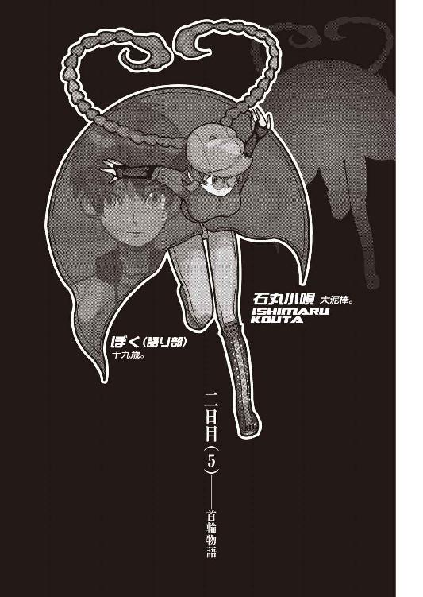
０
天才を騙すことは容易い。
馬鹿を騙すことは難解だ。
豚を騙すことはできない。
１
残り時間が一時間半を切った頃、ぼくは再び、根尾さんの私室へと戻ってきていた。根尾さんと小唄さんはどこか別の部屋で今後の対策──それは恐らくぼくや玖渚には完全に無関係の《今後》のことだろう──を練っているらしく、今この部屋にいるのはぼく一人だった。様々な絵に囲まれて、独り言すら呟かず、ただ、ソファに座っている。
秒針の音が耳にうるさい。こんなことならばデジタルの方の腕時計をしてくればよかったか。だけれどあれは玖渚が改造してしまったせいで滅茶苦茶な時計になってしまったし、それにこちらのアナログ時計は姫ちゃんからのプレゼントなので、装着が義務付けられていたのだから、やはりぼくに選択肢はなかった。
「選択肢ね──そんなものが一つでもあるだけマシなのかもしれないか」
選ぶ。
選ぶという行為。
ベルトから、美幸さんのジェリコを抜き取り、そして眺めてみる。フォルムは全体的に無骨っぽい感じ。ただし扱いそのものは──さっきの美幸さんのように心を乱されない限りは──そう難しくもない。訓練というほどのものではないだけの練習をすれば、それなりの命中率を誇れるようになるだろう。
「この国は本ッ当に平和だよなぁ......」
小唄さんの言った《脱出の手立て》とは、実に明快なものだった。小唄さんはまず美幸さんと志人くんとを棟内へと引き摺りいれ、気絶したままの美幸さんをパソコンのコードで拘束。こんなことをしなくともどうせ半日は目を醒まさないでしょうけれど用心しておきましょう、とのこと。志人くんの方をどうするのかと思っていると、小唄さんは志人くんをぼくに投げつけ（文字通り、本当に投げつけた）、そしてぼくに背負わせた。
「あなたのモラルは重い荷物があればそれを女性に持たせるべきと教えているのですか？」
「ぼくは女権拡大運動に賛成しているんですよ。男女は対等であるべきですからね」
「ではやはりあなたが背負うので正当ですわ、お友達」小唄さんはにっこりと笑った。「男女が対等である以上、わたくしとあなたでは主従が決定していますから」
その通りだった。
小唄さんは志人くんに対する親切心からぼくに彼を背負わせたわけでは、勿論ない。要するに彼、大垣志人くんの役割は《鍵》だった。網膜チェッカーに対して気絶している彼の目を走査させる。カードは志人くんが持っていたものを使用し、そしてＩＤナンバーについてはぼくが何度も聞いているので憶えていた。ikwe9f2ma444だったかikwe9mada423だったか少し迷ったけれど、小唄さんに急かされて、何とかどっちだったか思い出せた。暗証番号についても同じ。こちらにはいくらか不安要素が残っていたけれど（こういうとき、玖渚がいればと切に思う）どうやら正当していたようだった。しかし、そもそも暗証番号やＩＤはこのセキュリティにおいてはオマケのようなものに過ぎない。重要なのはカード、そして網膜チェックと──あとは声紋。要するに本人だと確認するための証明要項の方なのである。内、カードと網膜チェックはクリアしたが、いくらなんでも声紋ばかりは。気絶している志人くんに声を出してもらうわけにはいかないし──
「大垣志人。ＩＤはikwe9f2ma444」
小唄さんは声色をがらりと変えてそう言った。
「音声、網膜ともに認識いたしました」
合成音声がそう反応し、扉は、開いた。
「何を驚いているのですか？ 声帯模写を何も哀川潤に独占させておく必要はないでしょう？」小唄さんはそう嘯いた。「わたくしでも機械程度ならなんとか騙せますよ。こいつらは十全にシンプルな構造ですからね」
「哀川さんを、知ってるんですか？」
ぼくの質問に小唄さんは少し不機嫌そうな顔をしたが、しかしすぐに取り直し、「噂を聞いたことがあるだけですわ」と言った。
「あなたが請負人と言った段階でそれがかの悪名高い哀川潤だとは想像がついていましたしね──もっとも彼女でしたら、機械どころか神様だって騙してしまうでしょうけれども。ほら、早くしないと扉、閉まっちゃいますわよ？ ああ、志人くんはそこに置いておいてください。両手も両足も拘束していますし、何もできないでしょう」
今度は志人くんと美幸さんが囚われる側というわけだ。そうしないと小唄さんのことが報告されてしまうし、どちらにしろことが露見すると言ったって、それは今しばらくの間は遅らせたいところだった。帰ってこない二人を博士が不審に思い何らかのアクションを起こさざるをえなくなればしめたもの。時間切れまでの猶予に余裕が生じることとなる。さすがにそこまでは都合のよすぎる考え方だろうが、とにかく、ぼくと小唄さんは、そういう経緯で第七棟脱出に成功した。
「............」
──さてここで疑問だ。
こうも周到に施設内に侵入し、更に《既に脱出》したと見せかけて内部に留まることにも成功している石丸小唄。権謀術数、謀略巧緻、海千山千、機略縦横、百戦錬磨、石丸小唄。その石丸小唄が目先のＭＯディスク（如何にそれが重要な情報であったとしても！）に気を取られ、警報器を作動させてしまうなどということがあり得るだろうか？ 更に言うなら、拳銃を持っていた美幸さんに対してならともかく、どうして素手の（実際にあっさりと圧倒した）志人くんを相手にも長広舌をふるっていたのだろう？ あれは志人くんに喋らせて、即ちその声を模写するための伏線だったとするのならば──
本当に恐ろしい。何よりも恐ろしいのは、その行為そのものでなく（──それこそ哀川さんならその程度のことはやってのけるだろうし、一緒にいたのが玖渚友でも脱出の算段は立っていたわけだから──）何食わぬ顔でそれをやってのけた豪胆な心の方だ。お世辞でもお追従でも全然成功率が高いとは言えない。美幸さんが逃げに徹したらそれで終わりだったし、そもそもやってくるのが少人数とも限らなかった。他にも難点がいくつもいくつも見え隠れしている。そもそも肝心要のところでぼくの（このぼくの！）記憶力を当てにしている点が決定的に致命的だ。これをぼくが立てた計画だとするならば間違いなく愚の愚作だ。こういう英雄的な無茶無謀は大抵の場合、《後から見ればそれしか手段はない唯一冴えたやり方》に思えるものなのだが、こと今回に限ってはとてもそうは思えない。ぼくが命懸けで──どころか、命捨てで第六棟から第七棟へと飛び移ったあの決断とどっこいどっこい、おっつすがりつの悪考であることは誰に訊いても間違いない。
「............」
だけれど小唄さんの目論見は大成功し、ぼくは今、ここにいる。
脱出した後、小唄さんは根尾さんに無線機で連絡を取り、根尾さんは第五棟を訪れていた（正確には根尾さん自身が呼んだ）春日井さんを見送る振りをして外に出て、帰りにぼくら二人を棟内へと招いたというわけだ。
結局のところ小唄さんには成功の確信があり、ぼくにはなかったということ。そんなリスクを冒すか冒すまいかという以前に、ぼくにはそんな過激な案を思いつくことすらできなかった。
「──それが完成品と完全品との差異ってわけか......」
そして見えているものと見えていないものとの差異。今回の兎吊木垓輔磔刑事件も、要はそういうことなのだろうか。犯人にはぼくのような凡人には見えないものが見えていて、あの死体解体も死体損壊も、腕を持ち去ったことも、そして彩られた血文字も、全てに全て、意味があるということなのだろうか。
「......残りあと一時間二十五分......」
《死線の蒼》風に言うならば一時間二十四分四十六秒七七。しかし二時間半考えて何の取っ掛かりも得られていないというのに、果たしてあと一時間半で何が出来るものだろうか。ネガティヴになれば事態が進展するというわけではないけれど、どうしても思考がマイナス方向へと向いてしまう。
「子荻ちゃん──もしもきみがぼくの立場だったなら、こんな最悪な状況でこんな最悪な有様でも、果たして最善佳良の奇策を思いつくのかな？」
ま、きみならどうとでもすることだろう。
けれどぼくには無理だ。
ぼくは子荻ちゃんほど、策師にはなれそうもない。
たとえば無理矢理に思考してみよう。卿壱郎博士の向こうを張れるくらいに強引にものを考えてみる。そう、たとえば──今、こうしてぼくの思考活動の手伝いをしてくれている石丸小唄さん。彼女が犯人だという可能性は果たして、如何ほどのものだろうか。
ないとは言えないはずだ。そう、何故なら小唄さんの存在を卿壱郎博士は知らないし、施設内の人間で知っているのは背徳者たる根尾さんだけだった（今現在で言うならば、志人くんと美幸さんが知ってしまった形になるが）。それに、小唄さんに限っては他の研究局員と違って、どこか研究棟にこもっていたわけではない。つまり障害が一つ、他の容疑者達に較べて少ないわけだ。そして今さっき見せたあの機転、あの知能、あの判断力をもってすれば、兎吊木を殺し、尚かつそれを不可能犯罪に仕立て上げることくらい朝飯前のお茶の子なのでは──
「......ひでえ戯言だ」
無理矢理の仮説をぼくは無理矢理に打ち切った。理が通っていないにもほどがある。卿壱郎博士に叩頭するつもりはないが、さすがにこの仮説よりは卿壱郎博士の玖渚友犯人説の方がいくらか信憑性があるってものだろう。全く、この世には不思議な叩頭など何もない。
「となると、根尾さんは条件が一緒として......もう一つだけ、意外な仮説が残ってるよなぁ......」
それは即ちこのぼくこそが犯人だという可能性。玖渚友の随伴人としてここまでやってきたこのぼくが兎吊木殺害の犯人だというのは、なかなか味のある解決編ではないだろうか。もっとも、それは味があるだけで意味はない。ぼくは自分が犯人ではないことを知っているし、兎吊木に対して敵意こそ抱け、殺意までは抱けなかった。
ただし。
この場合行為があったかどうかなんて関係ない。要はそこに認識があるかどうかだ。ある程度の理屈さえ通っていれば、それで──
「ばかなことを考えてるな、ぼくは」
呟いたとき、部屋の中に電話機を見つけた。ぼくは携帯電話の保有者ではあるのだけれど、それは自宅の木造アパートに置いてきた。玖渚の使っている（そして卿壱郎博士に取り上げられたと言う）衛星携帯電話だというならばまだしも、こんな山奥にまで電波が届くわけがないからである。しかし電話会社はなにやら法律の関係で、日本国の範囲内である限りそれがどんな場所でも（絶海の孤島でも未開の山奥でも）要請があれば電話線を引かなくてはならない。ゆえにここ、斜道卿壱郎研究施設でもネットワークは外側へと繫がっているし、そしてこの根尾さんの私室にも電話機があるのだろう。
ふと、思いつく。普通こういう組織建物内の電話は取り次ぎだか内線回路だかで、直接外側へのアクセスができない仕組みになっているところが多いが、しかしこの施設は一といって二とは下らない少数精鋭組織、そんな余計に人員は割けまい。つまりあの電話は直接外へと通じているわけである。そこまで考える頃には、ぼくは既に電話機の前にまで移動してきていて、受話器を手に取っていた。
まず一番最初にかけようとした番号は、半分くらいで指をとめ、受話器を一旦置いた。よくよく考えたらあの人と電話で会話が成立する理屈がない。自分の喋りたくないときには一切喋らないし、喋りたいときにも一切喋らない、しかもそれでこっちの話を聞いてくれているというのならばまだしもあの人は自分の主人の命令以外は聞いちゃいないし、自分の主人の命令だって聞いちゃいないという半端がない逸材なのだ。しかも更に考えてみれば、電話口に一番に出るのがあの人とは限らない。最悪、例の電波占い師という可能性もある。千里眼のあの人に、ぼくが今いるこの状況、一体何を言われるのか。想像するだけで血液の逆流しそうな話だった。
「かと言って、みいこさんはお出かけだしな......あの人携帯持ってないし」
それにみいこさんは鬼丸国綱のように鋭い勘を所有する人だから、鈴無さんと玖渚がケージに閉じ込められていることを察しないとも限らない。それは直情発散型のみいこさんの性格を考える限り、望ましい展開ではなかった。悩んだ末、ぼくは結局姫ちゃんの携帯電話へ向けてダイヤルすることに決めた。
「もしもしですよー？」間延びした、しかしどこか緊張したような感じの姫ちゃんの声が、コール音が二回もしない内に受話器へと届いた。「どなたですか？」
「世界征服を企む男」
「あー、師匠。ちわっすでーす」姫ちゃんは一安心というように、声から緊張を解いた。「非通知だったから驚いちゃったですよ、師匠。どうしたです？ 今は確か名古屋県に旅行の真っ最中なんでせう？」
「うん。まあね」答えつつ、はて名古屋は県だったかと首を傾げる。そもそもぼくは名古屋にいたのだったか。違う気がする。でも名古屋県って聞いたことがある気もするし。「今、まあ、......宿泊所からかけてるわけで」
「ふうん。だから非通知なのですね。あー、そうだ。ちょうどよかったですよ。姫ちゃん、師匠に言い忘れてたことがあったです」
「何？」
「おみやげ。ういろう五本買ってきて欲しいです」
「へえ？ 姫ちゃんて甘いモノ好きだったっけ？」言いつつ、ういろうが甘いモノだったかどうかを思い出そうとする。ああ、そうだ。ここは愛知県だ。名古屋はその中の一都市だ。名古屋ケンという場合は字が違う。「......ういろうって羊羹の柔らかい奴だっけ？ 姫ちゃん、そういうの好きなの？」
「いや、姫ちゃんの友達がですよ。憶えてないですか？ 紹介したじゃないですか。鵜鷺ちゃんとかですよ。師匠が名古屋県に旅に出るって言ったらじゃあういろうういろうって言われてたのを、姫ちゃん忘れてたですよ。姫ちゃんはいらないですけど、友達の分を五本ばかし。できれば色違いがカラフルでいい感じですよ。師匠は姫ちゃんから散々毟り取ってるですからお金はあるですよね？」
「人聞きの悪いことを言わないで欲しいね......。うん、そうだね、無事にそっちに帰れるようなら、五本どころか五百本買って帰ってあげるよ」
「やーですよ。太宰の《芋粥》じゃあるまいし」
《芋粥》は芥川だ。
ぼくは師匠らしいことを言っておいた。
「そうでしたっけ。でも師匠、なんですか、それ。《無事に帰れるようなら》って。無事に帰られない可能性でもあるみたいな言い方ですよ」
「さあね。ジンカンいたるところに青山ありというし、逆に言えばどこで死んでもおかしくはないさ」そう、おかしくはない。特にぼくのような人間の場合は。「まあもしもぼくが帰らないようなことがあれば、ぼくの部屋にあるものは好きにしていい」
「本当？」姫ちゃんが嬉しそうに色めいた声をあげる。「じゃあの変なＴシャツとか変なジーンズとか変なジャケットとか変な靴下とかもらっちゃっていいですか？」
「他人の服を変とか言わないように......」それに靴下なんてどうするつもりだ。「うん。その代わり、アパートの引き払い作業やら、粗大ゴミの始末やら何やらも姫ちゃんの仕事になる」
「えー」姫ちゃんは途端に不満そうだった。現金すぎる。「てゆーか、師匠、マジっぽいですけど。なんかヤバ気なのですか？ ビルの中にいたらテロリストが襲ってきたり飛行機が突っ込んできたり潜水艦に衝突されたりしたですか？」
「いや、今回はそういう話じゃなくてね......でもまあ似たようなもんだ」
ふうん、と姫ちゃんは納得行かないなりに解釈をしたようだった。
「師匠って頭いいのになーんかばかですよね」姫ちゃんは年齢不相応に知ったような口を利く。「姫ちゃんは頭悪いけどばかじゃないですよ。だから今師匠がすっごく悩んでいるのが分かりますよ」
「へえ。そりゃ頼もしい。だとしたら力になってくれるわけ？」
「それは無理ですよ。もうすぐ授業が始まっちゃいますから」
淡白な理由だった。
「あ、そっか......姫ちゃん今学校か」ぼくは姫ちゃんからもらった腕時計を確認しながら言う。「学校に携帯電話持ち込んじゃ駄目だよ。め」
「うーす。分かりましたですよ、師匠」と、姫ちゃんの声に重なるように、遠くから響くようなチャイムの音がぼくの耳にまで届いた。「おっと、それじゃ、チャイム鳴っちまったみたいなんで、この辺で姫ちゃんは失礼するですよ、師匠」
「うん、じゃあね」
かけた側の礼儀として、ぼくは先に受話器を置く。そして肩の荷が降りた感じに、脱力してみせる。肺の中の空気を全て吐き出してしまうのではないかというくらいに大きなため息をついて、そしてソファに戻った。
これでいい。
いいのだろう。
自分という一個存在に一度として本当の意味での信頼を置いたことのないこのぼくには、いわゆる自信って奴が真実ない。数時間前に小唄さんに言った言葉に噓があったわけではないけれど、しかしぼくの人生は失敗の歴史だし、それは後悔と反省に彩られている。だからこそ、だ。だからこそ失敗したときに、あるいは後悔をし、反省をするときに、やり残したことがあってはいけないと思う。
後始末の目処はついた。
あとはやりたいようにやるだけだ。
「......一度ケージに戻って、玖渚に話を聞いてみるのもいいかもしれないな......」
遠隔操作型というのなら玖渚友こそがその表現にふさわしい。自宅のマンションに引きこもり、一人では階段を降りることすらしない。そいでいて世界情勢にしろ学術上の知識にしろ、とにかく（ちぃくんほどでないにせよ）あらゆる情報を網羅している玖渚友。ぼくがこの二時間半の間に集めたデータを玖渚に入力すれば、案外何らかの答をはじき出すのではないだろうか。
とはいえ既に春日井さんが戻った第四棟の中へと帰るのはそれなりのリスクを伴う。春日井さんが階段を使うとは思わないので、まず大丈夫だとは思うが、しかしそれが取り返しのつかないリスクであることを考えると、慎重にならざるをえない。
「悩んでてもしょうがないか......」
どうせ姫ちゃんは授業だし、と、傍で聞いたら意味の分からないだろう独り言を呟きながら、ぼくは部屋から出ようとした。とりあえず小唄さんに相談してみようと思ったのだ。しかし、ぼくがノブに手をかけるまでもなく、その扉は向こう側へと開いた。あれ。この扉は自動ドアだっただろうか。ぼくはまだ不幸にしてお目にかかったことがないが、世の中には横開きでない自動ドアも存在するというし──いや、しかしこのドアがそんなシロモノだった記憶はない。となると、廊下から誰かが室内へ入ってこようとしているのだろう。その予想通りに、廊下では小唄さんが、すぐこちらに立っていたぼくに驚いたように目を見開いていた。
「──あら。どうしました？ お友達。そんなところに突っ立って」
「いえ、ちょっと一旦ケージに戻ろうかと思いまして......玖渚や鈴無さんにも意見を聞いた方がよいかと。でもそれって危険って言えば危険な行為ですから、どうしようかなあとためらっているところです」
「いえ、悪くはないと思いますわ」小唄さんは言う。「それに、丁度よろしいですし」
「丁度いいとは？ そう言えば小唄さん、根尾さんとの話は終わったんですか？」
「終わったと言うか止まったと言うか」小唄さんは曖昧模糊な言い方をする。「少し中断といったところです。脇からお客様がいらっしゃることになりまして。先ほど神足さんから根尾さんに電話が入りまして、神足さんが所用あってここを訪れるとか。まさか神足さんに姿を見られるわけにはいきませんし。そんな感じで根尾さん達、この部屋を使うらしいので、わたくしあなたを連れ出しに来たと言う次第なのです」
「はあ」
......神足さんか。
ぼくの脳裏に、先ほど苦し紛れに（あれ以上の苦し紛れをぼくは知らないが）編み出した神足雛善犯人説が再び思い浮かぶ。髪の毛をロープ代わりに使用したというその案は小唄さんによって一蹴されてしまったが、しかしそれで全ての疑いが晴れたわけではない。まだ別の方策によって神足さんが兎吊木の奴を殺した可能性だって残る、少なくとも他の研究局員と同じ程度の可能性は。少なくとも神足さんは兎吊木と仲がよくなかったみたいだし──とは言え兎吊木と仲がよかった人間など一人もいないようだが。
「一人もいない──、......なんでだろうな」疑問が脇へと逸れていく。「心視先生とかばっちり気ぃ合いそうな感じなのに......」
「兎吊木さんは自ら人を遠ざけていたということかもしれませんね」小唄さんが言った。「そのあたりは玖渚さんに訊けば分かるんじゃありませんか？ もっとも玖渚さん、兎吊木さんについてはあまり語りたがらないようですけれど」
「仕方ないですよ。あいつは不器用ですからね。口は軽いけど、全部言うか、全部言わないか、そのどちらかしかできない。《ここまでは教えてもいい》っていう曖昧な基準がいまいち理解しづらいみたいです」
「ブール的なんですね。いえ、それともブルーなのかしら？」
「勿論、その両方でしょう」
ぼくは部屋から出て、小唄さんのいる廊下側へと移動した。しかしそこで一つ、悪くはないアイディアが頭に浮かぶ。無論ここで神足さんと鉢合わせになるわけにはいかないが、しかしそれは逆に言えば鉢合わせにさえならなければよいという意味ではないだろうか。情報収集の見地から言って、是非とも神足さんの話は聞いておきたい。ぼくが聞くわけにいかないというのなら、それなら──
「小唄さん」
「了解しました」
ぼくが何かを言う先から、小唄さんはコートから無線機を取り出す。携帯電話よりも更に小さい、ほとんど板のようなデザイン。ボタンの代用に小さなつまみが四つほどついていて、小唄さんはそれを調整する。さっきも使った根尾さんとの連絡手段なのだが、しかし小唄さん、さすがは泥棒、色んな秘密道具を持っている。
「ええ──そうですわ、根尾さん。そんな感じでよろしくお願いします」
二、三言の会話で、小唄さんは根尾さんから同意──というのか、合意をとってのけた。
「それでは屋上で待機することにしましょう。他の部屋でもよいのですが、万一にでも神足さんが気まぐれにドアを開けたら、そこで一切が終わってしまいますからね」
「はあ......」また屋上か。「でも、屋上でどうやって二人の話を聞くんです？」
「それはこの無線機を使いましょう。受信専用のチャンネルにしておけばこちらからの声は聞こえませんし。まあ不安要素があるとすれば、どこかで誰かが電波を受信すればことが露見するという可能性ですが......それは心配するほどの質量を保有していませんわ」
言いながら、小唄さんは屋上への階段へ向かって歩き出す。
「むしろ心配なのはあの二人の方ですわ」
「志人くんと、美幸さんですか？」小唄さんの後ろをついて階段を昇りつつ、ぼくは言う。「半日は目を醒まさないんでしょう？ あれだけ必要以上に殴ったんですから」
「あらあら。殊更人を加虐主義者みたいに言うのは十全ではありませんわ。別にわたくし、必要以上の暴力は振るっていません」
「美幸さんはともかくとして、志人くんの方はちょっとやり過ぎだったと思いますけれど。内臓器官ばっかり殴って。頭を殴れば一発で済んでたじゃないですか。あれ、あとからかなり苦しいですよ」
「好きに言ってくださいな。じきに分かりますわ。わたくしの優しさというものが」
意味の分からないことを小唄さんは言う。階段を昇りきって扉を開け、屋上に出たところで小唄さんはコートを広げてから、その場に座る。ぼくも真似をして、その正面に体育座りをした。小唄さんは無線機のチャンネルをいじり始める。
「......そう言えばここって、警報装置はあっても監視カメラとかはないんですね」ぼくは暇潰しに口を開く。「ぼくや小唄さんには都合のいい話ですけれど、警備の面から言えば問題じゃないでしょうか」
「管理の面から言えばそちらの方が十全なのですよ」小唄さんは無線機から目を外さないまま、ぼくの疑問に答える。「映像で記録に残したくないこともあるでしょう。先のＭＯディスクにしろ、それなりの価値ある代物ではありましたが、しかし重要物ではありませんでした。つまりそういうことです」
「記録は全てが全て、個人の頭脳の中にってことですか......」
そもそもあの厳戒なセキュリティだけで、本来十分だということもあるのだろうが。
小唄さんはチャンネルの調整を終えたらしく、ぼくと小唄さんとの中間地点くらいに、無線機を置いた。服のすれるような音が聞こえる。根尾さんは無線機をポケットにでも入れているのだろうか。
「んー。ちょっと調子悪いですね」
小唄さんが首を傾げながら微妙な調整を加える。すると、なにやら、人の声らしきものが、無線機から漏れてきた。
「......ってわけな......ですよ......うたりさん」
「知らん」
「それにしてもちょっと遅かったですな。時間に正確な神足さんとしちゃあ、珍しい」
「何故か知らんがエレベータが壊れていたからだ」
根尾さんと神足さんの声だった。歩きながらの会話ではなさそうなところを見ると、二人はどうやら、あの絵画だらけの私室に入ったようだった。
「......で、何の用ですかい？ 神足さん」
「研究の件に決まっている」
そして二人はなにやら専門用語（ナントカ性能だとかカントカサーキットとか、その手の用語や隠語）が頻繁に登場する会話を展開し始めた。最初は真剣に聞いていたけれど、しかし全く理解できない言葉を聞き続けることほど退屈なことはない。こんなことを言っては根尾さんにも神足さんにも失礼なのだけど、ぼくは徐々に二人の会話から興味を失いつつあった。
「......なんか完全なる無駄足という感じですね」小唄さんも同じ感想らしく、実につまらなそうに呟く。「いえ、別に足は使ってませんが。よくもまあこうつまらないことをとうとうと述べられるものですわ。面白いんでしょうか？」
「小唄さんにはある程度分かるんじゃないんですか？ ぼくにとっちゃ外国語みたいなもんですけど」
「ある程度分かるからこそ、つまらないのです」小唄さんは言う。「分からなくてもつまらないし、分かってもつまらないなんて、しかし、最低ですね」
「無駄な時間を過ごしている印象が否めませんね......、根尾さん、事件の話題とか、振ってくれないもんでしょうか」
「今そんな話題の転換をしたら不自然ですからね。あの人もあの人で、色々ありますから。少なくとも今、こんなことで馬脚を現すわけにはいかないのでしょう」
「それも分かりますが......、じゃあ、小唄さん。ここ、頼んでしまってもいいですか？」ぼくは身体を立ち上げる。「ぼくはひとまずケージに戻って、玖渚達の様子を見てきますよ」
「役割分担ですか。こんな退屈な作業をわたくしに押し付けるのは十全ではありませんが、しかしこの際、それもやむなしですね。残り時間のこともありますし」
時計を見る。残り時間は、一時間十五分。
「あ......でも、小唄さんが志人くん達を迎撃したことでそれが迷彩となってくれれば、......博士達が混乱してくれたら、この数字はもう少し延びるかもしれませんね」
「その逆ということもありますわ」小唄さんは少しずれていた帽子の位置を調整しつつ、ぼくを見る。「第七棟の様子を見に行ったはずの二人がいつまでたっても戻ってこない。これはなかなか不審ですわ。勿論二人を信頼していれば《何かあっても処理するだろうし、こんな事態だからこそ棟内を綿密に調べているのだろう》と博士が判断する可能性の方が大きいですが」
「信頼、ですか......、信用はしてるでしょうけれどね」と、そこでぼくは一つのことを思い出した。小唄さんが美幸さんを相手にしていたときに口にした台詞だ。「ところで小唄さん、あれ、どういう意味なんです？」
「《あれ》とは？」小唄さんはわざとらしく訊き返す。「わたくし、あなたとコソアド言葉で会話できるほど、親しい仲になった憶えはありませんわ。それともお友達としてはそれをお望みなのでしょうか？」
「話をそらさないで下さいよ。志人くんを示して、美幸さんに向けて言ってたじゃないですか。《それで博士の人体実験にでも使用されるのですかね？ ──ここで倒れている単純馬鹿のように》」
ぼくは小唄さんの皮肉げな口振りを真似て言った。我ながらなかなかの声帯模写だと思ったが、小唄さんは何だかとっても不快そうな顔をしていた。ぼくは咳払いを一つ、そして「あれはどういう意味だったんです？」と強引に会話を続ける。
「意味もへったくれもありませんわ。そのままの解釈で十全です」小唄さんは相当気分を害したらしく、かなりぶっきらぼうな感じで言った。「要は大垣志人くんは、兎吊木垓輔同様の標本品だということですわね。もっとも彼の場合はいくらでも代わりがきくわけですから《同様》という表現は正しくありませんけれど、それでも彼が超凡なる存在なのは確かですからね」
「超凡なる存在、ですか......」
多分その通りなのだろう。まだぼくはここに来てから志人くんの聡明なる部分を見せてもらってはいないが、しかしそれはそんな機会がなかっただけに過ぎない。彼が有能な人間であることはこの施設内で生活しているということからだけでも十分証明できることなのだ。
しかし、もしも小唄さんが言った《人体実験》という言葉の意味がぼくの想像する通りのものだとすれば、それは少しだけ違った意味を持ってくるのではないだろうか。博士の実験材料となり、研究対象となること。それは即ち。
「天才製造計画──ですか？」小唄さんは無線からの会話に耳を傾けつつ、少しおどけた調子で言う。「しかしそういう話はことが全て終わってからにしません？ 大垣志人がどうしてこの施設に存在し、どういう役割を担っているのか、それが玖渚友や兎吊木垓輔に関係があるとは、さすがにあなたも考えないでしょう？」
どうだろう。それは分からない。それも分からない。何も分からない。全然分からなかった。
と、そのとき。
無線から聞こえた神足さんの声が、ぼくの思考を停止させた。
「根尾。今回の事件だが」
２
「根尾。今回の事件だが、お前はどう思う？」
「どう思うもこう思うも──別にどうも思いませんよ、神足さん。そりゃまずいことになったたぁ、思いますがね。兎吊木さんに亡くなられちゃ、こっちはお手上げだ。もっとも博士様は何かお企てになっておられるようでいらっしゃるようですがね」
「企てね。あの蒼髪娘か」
「そうそう、それそれ、それでやすよ。なんといっても元《一群》リーダーですからな。素材としちゃあ兎吊木さん以上とも言える。そしてまだ弱冠二十歳。扱いやすさでいやあ兎吊木さんよりもずっと有用でしょうからな」
「扱いやすそうには見えないがな」
「かもしれませんな。個人ではそうでしょう。だけど玖渚のお嬢様に対して二人の人質がいることを忘れてはいけませんよ、神足さん」
「人質ね。人質か」
「そう。あの黒姉さんの方はともかくとして──あまりお嬢様と親しいって風でもないらしいですからな──あちらの青年の方は使えるカードですよ。玖渚機関直系血族の恋人なんざ、なかなか手に入らないＳランクのレアカードですからな。価値があるかどうかはともかく、レアであることは間違いがない」
「確かに。理解はできんが蒼髪娘はあのがきにぞっこんのようだった」
「ええ。博士からは感情のない娘だと聞いていましたがね。機械と直接接続できる逸材だと。まあ傍目に見る分には──少なくともこの俺が見る分には、そんな大した娘にゃ見えませんでしたがね。知的な風にも見えませんでしたし。知的って言うならあの黒姉さんの方がよっぽど知的と言えますな」
「人を見かけで判断すると知的頽廃を免れない......人を見かけで判断するとな」
「そりゃ神足さんの仰る通り。勿論俺だって分かってますよ、玖渚のお嬢様の実力は風聞で聞いただけで十分に、ね。だから博士がでっちあげてまでお嬢様を犯人に仕立て上げようとしている気持ちも、まあ分からないじゃない」
「でっちあげかどうかは不明瞭だがな」
「またそういうことを言いますか。まあそうですわな。博士の言ったやり方でもまんざら不可能ってわけでもない。ただし立証するのは難しいでしょうが」
「立証などする必要はない」
「かもしれませんなあ。わざわざ立証など七面倒臭いことをしなくともゴリ押せばいいだけですから。問題は玖渚機関との取り引きですな。駆け引きと言うべきかもしれませんが、どちらにしたって同じでしょう。さすがに玖渚機関の人間を指標品に使われると聞いては、彼らとて黙ってないでしょうし」
「本人が望んでいると言えばいい」
「兎吊木さんと同様に、ですかい？ それは確かにいい手かもしれませんが、しかしどうやってそう言わせるんですか？」
「自分で言ったことを忘れるな」
「ああ、人質ですか。成程。ふうん──それは悪くない方策ですな。実際悪くない」
「あの変態のときも同じ手法を使ったのだから芸がないといえば芸がないがな」
「あの変態？ ああ兎吊木さんのことですかい。まあそうですな。しかしこんなことに芸を求める必要はないでしょう。我々は芸人ではなく学者なのですから。しかし兎吊木さんの場合とは違って、今度は具体的な、つまりあの青年そのものを人質としなければなりませんからな。つまり玖渚のお嬢さんを拘束すると同時に、あの青年も拘束しなければならない。そういうことになりやせんか？」
「なるだろう。しかしそれは僥倖とも言える」
「ほほう。そりゃあどういうなぞ掛けですかい？」
「あの蒼髪娘には現実認識能力が欠けている。つまりどこにいようと同じということだ。言い換えるなら、どこにでもいるし、どこにもいない存在だ」
「神足さんにしてはなかなか詩的な表現ですな。おっと失礼、茶々いれちまいまして。先を聞かせてくださいな」
「ゆえに自宅にいようとこの施設内にいようと同じこと。そばにあのがきさえいれば」
「ははあ、成程。そいつは確かにその通り。そうなるとあの第七棟は二人の愛の巣というわけですな。四六時中監視されるわけですから、あんまりぞっとしない話ですが。しかしそれはそれで悪くない」
「もっともそれは蒼髪娘に限った話だがな」
「あ、そうですな。ＥＲプログラム中退青年殿は、別に玖渚のお嬢様さえいればそれで満足というわけでもないでしょうな。まあ彼もどうにもつかみどころのない青年なんで、深いことは言えませんが」
「つかみどころならあるさ。あり過ぎてつかんでもつかんでも際限がないだけの話だ」
「こりゃ一本取られましたな。確かにその通り。さすが神足雛善、ものの見方が鋭い正しい！ ふうむ、確かに玖渚のお嬢様が彼にベタ惚れだとしても、彼の方は問題ですな。その辺り博士はどうするつもりでしょうな？ 彼は玖渚機関とは何の関係もない一個人です。いなくなったりすれば、さすがに家族や友人が騒ぐでしょう」
「友人の多そうなタイプには見えなかったがな」
「それは言えますな。なかなか饒舌で人当たりのよい青年ですが、それも他人に対する接触の恐怖がそうさせるのでしょう──などと心理学者なら言いそうですが、しかし彼の場合はもっと複雑な事情がありそうですな。得体の知れないところがある。そういう意味では玖渚のお嬢様や兎吊木さんと似通ったところがないとも言えない。一番怖いのは何でも出来る人間ではなく、何をするか分からない人間ですからな。若い内は尚更です。ともかく、一人の人間がいきなり失踪してそれで何の騒ぎにもならないほどに、現代は剣吞な世の中ではありませんぜ」
「そうかな。そうとも言えない」
「まあ確かにそうですな。玖渚のお嬢様が在住している京都の方であったという連続通り魔事件も未だ未解決だと言いますし、確かに世の中自体は剣吞かもしれませんや。しかしだからといって──」
「根尾。僕が問題にしているのはあのがきよりもむしろお前の言うところの《黒姉さん》の方だ」
「ほう。そりゃまた何でです？ えーと、確か──鈴無さんでしたかね。鈴無音々さん」
「そう。彼女を一体どうするつもりだと思う？ 卿壱郎博士は」
「あー。人質は一人いればそれでいいでしょうからな。とは言え秘匿の都合上、そのまま下界へ戻すというわけにもいかないでしょう。かと言ってここに置くかといえば、それはそれで青年の場合と同じ問題が生じる。即ち、家族と友人が騒ぐでしょうな」
「博士はその姉さんについては調べていないのか？ 事前調査はしたはずだろう」
「あー、そう言えばしたって言ってましたな。時間がなかったわけですから、そうそう詳しいデータはないらしいですが。あの青年がＥＲプログラムの研修者だったというデータすら三好さんに教えてもらうまでは分かりませんでしたし。ここには《一群》にいたという超凡的な能力を有する探索者はいませんからな。もっともＥＲ３システムの秘匿性を考えたら、それは判明しなくて当然なのですが。えーと、何でしたかな。よく憶えてませんが」
「──僕がさっき調べてみたが、とんでもない」
「とんでもない？ あの青年の経歴がですか？」
「違う。鈴無音々の方だ」
「へえ。どういう経歴です？ 興味深いですな」
「僕がここに来たのも本当はその相談をするためだ。詳しいことは後から話すが、あの女を拘束し続けることは非常にまずい」
「それは、玖渚のお嬢様やあの青年を拘束するよりもまずいって意味ですかい？ だとしたらあまり穏やかな話ではありませんな」
「博士に進言するかどうかは迷うところだ。何せ今あの《堕落三昧》殿の頭を占めていることは如何にして蒼髪娘を搦め取るかという一象だけなのだからな。下手をすると巻き添えを食いかねない」
「巻き添えねえ。そうだ、神足さん。でしたらいい考えがありますぜ。こういうのはどうでしょう？ つまりですな、兎吊木さんを殺した真犯人を我ら二人で挙げてしまうわけですよ。少年漫画よろしく《犯人はお前だ！》などと指さしてですな。何せ神足さんとこの俺です、なかなかいけてるコンビですぜ」
「違う」
「そうですかな。残念ですな。しかし実際問題、どう思いやす？ 神足さんは玖渚のお嬢様が犯人だと思いますか？」
「さあな。誰が犯人でもこの場合は同じことだ」
「そうですか──そうかもしれませんなあ。同じことなのかもしれませんなあ。しかし人を殺すなんてのはとんでもないことですよ。あんな残虐な人間がこの施設内にいるなんて、いやはや、ぞっとするお話です」
「《一人殺せば殺人者だが何百万人殺せば征服者になれる。全滅させれば神だ》──ジャン・ロスタンの言葉だ」
「おっと。先に言われちまいましたな。まあそうかもしれませんや。兎吊木さんを塵殺することなど、考えてみれば何百万人と殺したのと同義ですからな。本来兎吊木さんの後に続くはずだった数多の人々の存在を殺したに等しいんですから。もっとも《一人の死は悲劇だが百万人の死は統計だ》という言葉もありますがね」
「事実だ」
「左様で」
「ただしもう一つだけ言えることがあるな」
「へへえ。それでその一つとは？ もったいぶらないで教えてくださいよ、神足さん。俺と神足さんの仲じゃないですか。そんな焦らされてばかりじゃこちとら間違って瘦せてしまいますぜ。その一つとは何なんです？」
「兎吊木垓輔のあれは自殺だってことさ」
３
「兎吊木垓輔のあれは自殺だってことさ。比喩でなくな」
無線機からのその声に、ぼくは一層、身体を硬くする。思わず無線機にかぶりよってしまい、その結果、額を小唄さんの鼻先にぶつける羽目になってしまった。「あう」と悲鳴をあげて後ろに退く小唄さん。
「──そんなに近付かなくても聞こえるでしょう、お友達。わたくし、少し痛かったです」
「すいません......」
適当に謝りつつ、ぼくは無線機から少しだけ距離を取った。それでもかなり（意味もなく）無線機に接近していることは自覚できる。自覚できていても、しかし、それ以上離れようという気にはなれなかった。
「............」
「自殺ゥ？ 自殺ってどういうことですかい？ 神足さん」根尾さんの、相変わらずの演技がかった口調が響く。「ありゃあどう見ても他殺でしょう。そりゃまあ、密室内での殺人事件はすべからく自殺であるべきでしょうけれど、あれはいくらなんでも場合が違うというべきですぜ。密室になったのはオートロックのセキュリティ上の結果なんですから」
「自殺というのはそういう意味ではない」神足さんの低い、呟くような声。「そもそも、根尾。僕達の知る兎吊木垓輔は黙って殺されるような人間ではないだろう」
「へえ。そりゃ、まあ俺は直接お目にかかったことがないから、何とも言えませんが。しかし電話で話したりメールを読んだりする限り、それに過去の噂を聞く限りにおいちゃあ、そうかもしれやせんな。あまり大人しい人ってわけじゃあないようでした」
確かにそれはその通り。ぼくも、兎吊木と会話を交わした時間は一時間にも満たないけれど、それでもあいつがかなり自我の強い──玖渚の言葉を借りるならば我意の強い──人間であることは分かった。よくも悪くも根本的に他人のことを見下している種類の天才肌は学者風、矜持包みの独善仕立て。そんな兎吊木が、誰かに殺されることを果たしてよしとするだろうか。するわけがない。それこそ相手が《死線の蒼》でもない限り、するわけがないのだ。
「しかし実際は黙って殺されてるじゃあないですかい」根尾さんの反駁。「それもこれ以上ないってくらいに蹂躙されて。なんつーか、殺しただけで飽き足らずって感じでしたぜ。つまりそういう性格だったからこそ、黙って殺されるような性格ではなかったからこそ、あんな目にあったと見るべきじゃあないですかい？ 学識ある我々としては」
「それは意見が分かれるところだがな。しかしここで原点に立ち返ろう」神足さんは淡々と語る。「そもそも兎吊木垓輔が何故ここに囚われていたか」
「囚われていた理由ですかい。そりゃ表向きは研究施設の局員として、裏向きには博士の知恵袋として、そして更にその裏向きには博士の研究対象として、ですな」
「そういう意味ではない。兎吊木垓輔自身がそれをよしとしていた理由だ」
「ああ──成程」
根尾さんは頷いたようだった。ぼくも頷いた。
そうだ、それ──兎吊木がここに存在していた理由。それはぼくとしても気になるところだった。昨日のセッションではぼくも、そして玖渚も、上手い具合にはぐらかされてしまったが、とにかく兎吊木は《何か》、弱みのようなもの（と言って、昨日兎吊木に大爆笑されてしまったのだったか）を握られていて、それがゆえにここに留まっている、ということだった。
「えーと、なんでしたかな。教えてもらったわけじゃないから、正しいかどうかは分かりやせんが。確かかつての犯罪歴──つまり《一群》時代の悪行をばらすぞ、とか何とか、脅したんでしたっけ？」
「違う。それは、それこそ表向きだ」
「はあ。成程、真実を隠すために噓の噂を流したってわけですか。相変わらずやることが卑怯と言うかなんと言うか、手が込んでますなあ、博士は。で。神足さんは知っているんで？」
「前に本人から聞いた」神足さんは意外なことを言った。「奴にしてみれば口が滑ったんだろうが──《玖渚友の出生について》だと」
その言葉に、しばし、根尾さんは沈黙した。ぼくも沈黙した。沈黙せざるを得なかった。玖渚の出生......だと？ 今、神足さんはそう言ったのか？
まさか。
それは本当なのか？ 噓に決まっている。そんなわけがない。仮に、その通りだと仮定して、兎吊木がそれを神足さんに教える理由がない。あの飄々とした男が、口が滑った程度の理由で、そんなことを他人に漏らすわけがない。
そんなことを。
「......どういう、意味ですかい？」根尾さんは、強いておどけたような口ぶりで、訊いた。「意味がよく分かりませんが」
「僕にも分からない」神足さんは答える。「要するに兎吊木垓輔はそういう弱みを握られていたということだ。兎吊木垓輔にとって今もなお蒼髪娘は相当な割合を占めていたのだろう。何せ《一群》時代のリーダーなのだから。自分が要求を断ったり、まして逃げ出したりすれば、それの秘密が白日の下へと晒される──かどうかは分からない。いくら《堕落三昧》と言えど玖渚機関と対立する危険を、何の利益もないのに冒すかどうかは微妙なところだ。だが──」
だが、その手の脅しは。
「その手の脅迫は実行しないからこそ効力を持つ。《もしも》という恐れをぬぐえない。ゆえに兎吊木垓輔はここにいた──というわけだ」
「はあ。成程──しかしそれが何だって言うんです？ 神足さん。兎吊木さんがどういう理由があってここにいようと、博士がどういう理由付けで兎吊木さんを拘束していようと、結果は同じじゃないですかい。要は兎吊木さんはここにいなくちゃならなかったってだけで、表向きも裏向きもあったもんじゃない」
「だが、今回、その玖渚友が来た」神足さんは言う。「ここで矛盾が生じてしまう。蒼髪娘のためにここにいるというのにそれが蒼髪娘のためにはならないという矛盾が」
「だから──自殺だって言うんですかい？」
「論理的には。死んでしまえば、博士と言えど手も足も出ない。死人に脅迫など無意味だ」
神足さんのその意見──仮説には、かなり頷けるものがあった。少なくとも、ぼくは心情的に同意できる。玖渚のことを己の支配者とまで臆することなく言い切った兎吊木だ。もしも脅迫内容が玖渚に関する事実だったとするならば──それによって死を選んでもおかしくはないかもしれない。だとするなら、昨日のセッションは遺言のようなものだったのか。かつての統率者と、そして、己亡き後にその統率者を見守る存在としてのこのぼくに対する、遺言。それを言うなら玖渚に言ったという《汚名挽回》という言葉の意味も理解できなくもない。
名誉挽回でもなく汚名返上でもなく。
汚名挽回。
名誉返上。
しかし、敢えてそれに半畳を入れるなら、そこにも一つ矛盾がある。
「しかし、神足さん」さすがに根尾さんもその矛盾に気付いたらしく、言う。「おかしいですぜ。おかしいことになっちまいます。兎吊木が殺された──まあ自殺でもいいんですが、そのせいで玖渚のお嬢様はより一層の危機に立たされている。何せ今をしてケージに閉じ込められ、これからをして半永久的にこの施設内に閉じ込められるんですから」
「それはお前の言う通りだ」神足さんも、最初からその矛盾には気付いていたようで、根尾さんの言うことをあっさりと認めた。「とにかく──」
神足さんが何かを言いかけたそのとき、無線機に雑音が入った。酷く気に障る音で、ぼくは思わずボリュームのつまみをひねってしまう。神足さんの声も根尾さんの声も、聞こえなくなってしまった。
「──壊れたんですか？」
「いえ、横から電話が入ったようですわ」と、小唄さんは冷静に言う。「あの部屋に電話が備えつけてあったでしょう？ 多分あれにどこかから連絡が入ったのではないでしょうか。有線といえど全く電波を発しないというわけには行きませんからね。パソコンのそばで携帯電話が使いにくいのと同じ理屈です。電波同士がぶつかって、より微弱なこちらが負けたという感じですわ」
「感じですか。随分デリケートな仕組みなんですね」ぼくは拍子抜けした思いで、無線機から離れ、屋上の床に尻をつく。「......根尾さんは頑張って神足さんから色々聞きだそうとしてくれているみたいですが......しかしあまり進展はしませんね」
「そうですか？ 割と重要っぽい会話ですけれど」
「そりゃまあ重要は重要ですけれど」ぼくは小唄さんに、とりあえず頷いてみせる。「概念的に見れば兎吊木の死が自殺だっていう意見はぼくだって納得できます。納得できますが、しかし、今は概念論で論じている場合じゃないですよ。時間があるときにはそんなことを喋々しててもいいかもしれませんが......実際上は兎吊木は誰かに殺されたんです。それは間違いがない。あんな自殺はありえない。黙って殺されようが暴れて殺されようが、とにかく殺されたんですから」
「ふむ......そうかもしれません」小唄さんは腕組みをする。「ところで《玖渚友の出生》について、とはどういうことなのでしょう？ あなたはご存知なのですか？」
「いえ、知りません」
即答。ただしいくらなんでも即答過ぎた。小唄さんは思い切り疑わしげにぼくを見ている。構わなかった。いくら見え見えの噓だろうが、一度口にした以上は押し通す。そうしなければならない。
「まあいいでしょう。玖渚さんのことを探ってもわたくしには意味がありませんしね......」数秒間のにらみ合いの末、折れたのは小唄さんだった。「......それにしても長電話ですわ。そろそろいい頃合だと思うのですが。ひょっとして本当に壊れてしまったのでしょうか」
無線機をいじり始める小唄さん。ぼくはそんな小唄さんを尻目に、また一つ、ため息をついた。なんだかこの研究施設内に入って以来、眠っていた時間を除くとしても、一時間に一回くらいの割合でため息をついている気がする。感情を乱すのは嫌いだし苦手なのに、その波も激しい。あと三日もここにいれば、ぼくは精神疾患にかかってしまうことだろう。それとももうかかっているのかもしれない。今までの自分の行動を思い返しながらそう思った。
時計を見る。残り時間は一時間かっきり。
「あ。つながりました」
言って小唄さんが無線機を床へと戻す。ぼくは後方に傾けていた重心を前面に戻し、再度無線機に顔を寄せた。
「...... ......── なんだって？」
「いや、それがさ」根尾さんが、妙にはきはきとした口調で言う。「よく聞いてくれよ、神足さん。これはすごく大変なことだ」
「？ なんだ？」
「博士からの連絡さ。どうやら一大事が起こったらしい。それもそんじょそこらの一大事じゃない、究極の一大事、百大事くらいはあるって一大事だ」
そう言う根尾さんの時代がかった口調は、やはり妙に明瞭だ。そう。まるで。まるで屋上で無線を聞いている、このぼくと小唄さんに、確実に伝えなければならないことがあるかのように。ぼくと小唄さんに、何か知らせなければならないことがあるかのように。
自然、喉が鳴る。
小唄さんも聞き入るように、身を乗り出した。
「玖渚のお嬢様と一緒に来てたその青年が──いなくなったらしい」
まず判断に一瞬迷い。そして次の瞬間。
ぼくは身体を翻していた。駆ける。何も考えずに。第五棟と第四棟の間の二メートルの距離を一足で跳び、第四棟の屋上に着地。そしてそのまま扉に向かって走る。後ろから声が聞こえる。小唄さんの声。何か言っている。聞こえない。聞いている暇もない。棟内への扉を開けようとしてノブを引き、しかし鍵がかかっているので引っ掛かる。構うものか。ぼくは渾身の力を込めてノブの辺りを蹴っ飛ばした。扉自体は丈夫でも、力が集中している支点や力点の部分に強い衝撃を与え続ければ、この程度の鍵を壊すことは容易い。そう言ったのは誰だっけ。憶えてない。向こうで誰かが言ってた。証拠が残るのが難だけど、だけれど証拠なんてもう関係ない。既にことが露見した今となっては。
何度目かの蹴りで、扉は開いた。ブチ壊れた。
「──なんてこった」
あと一時間の猶予。そんなものは紙屑のように消し飛んだ。どうしてぼくがいなくなったことがばれてしまったのだろうか。どうしてだろう。春日井さんがたまたま地下に様子を見に行ったのだろうか。それとも、志人くんか美幸さんが予定よりも早く目を醒ましたのだろうか。いや、そういえばその前に、美幸さんが一発銃弾を放っている。その轟音が誰かの耳に届いていたのか。まさか心視先生が博士に進言したのだろうか。あるいは、ぼくが今しがた姫ちゃんに向けてダイヤルしたことが記録に残っていて、そこから不審を感じ取った誰かがいたのだろうか。どれでもあるような気がするし、どれにしたって不自然の残る仮説だ。しかし全てが自然な現実など存在しない。実際をしてこれだ。畜生、一体言葉なんて、論理なんて、何の役に立つというのだろう？ 所詮そんなもの、思い込みと勘違いの積み重ねでしかないんじゃないか。
既にことは露見してしまっているのだから、エレベータを使わない理由はない。しかし屋上までシャフトは通っていないから階段を使わざるを得なかった。まず四階まで降りて、そこからエレベータを使おう。そう判断し、ぼくは階段に向けて一歩を踏み出そうとした。
と、そこで後ろから肩をつかまれる。
小唄さんだった。
「──どこへ行こうというのですか？」
小唄さんの声が少しだけ乱れている。先に駆け出したぼくにこれだけの距離で追いつくのは、如何に小唄さんと言えど、簡単ではなかったらしい。ああ、そうか。扉を破壊するのに時間を食ってしまったわけか。畜生。今はあなたの相手をしている場合じゃないというのに。
「──今あなたがケージに戻っても何にもなりませんよ」
何にもならない？ そうだろうか？ そうだろう。その通りだ。小唄さんの言うことは正しい。ぼくが戻っても何にもならないだろう。間違ってない。その通りだから戻らなくちゃならない。ぼくは小唄さんの手を振り払おうとした。しかし、がっちりと食い込んだ小唄さんの手を解くことはできなかった。
「......あなたには感謝しています、石丸小唄さん」ぼくはまるで唱えるかのように言う。「本当ですよ。あなたがいたからぼくはこの数時間、希望を失わずに済んだ。自分にはまだ道が残っているんだと夢見ることができました。だから感謝しています」
「何をこれから死ぬみたいなことを言っているんです？」ぐい、と強引に、ぼくを振り向かせる小唄さん。「まだ希望が失われたわけではありません。いえ、ことが露見してしまった現在、あなただけが唯一の希望なのですよ？ 玖渚さんにとって鈴無さんにとって、そしてあなた自身にとっても。それを自らかなぐり捨てようと？」
「捨てるんじゃありません。戻すんです」ぼくは自動的に答える。「ここから先のことはもうあなたには関係ありません。だからここからは──」
乾いた音が響いた。小唄さんに平手打ちをされたのだと、そう気付くのに三秒ほど時間がかかった。全然痛くなかった。あまりの興奮で、どうやらぼくの感覚神経は麻痺しているようだった。ただ、熱かった。
「関係ないですって？ ここまで数時間行動を共にして尚、関係ないとあなたは仰るのですか？ あなたは──」小唄さんは興奮気味に、しかしそれでも感情を無理矢理に抑えつけるように声を低めて、言う。「......あなたは、常軌を逸しています」
「──よく言われます」ぼくは唯々諾々、頷いた。「本当によく言われます」
「憶えてますか？ わたくしが第七棟の屋上であなたに言った台詞を。今度独断専行するようでしたら、もうあなたとの同盟は破棄する、と」
「そうしてくださって一向に構いません」ぼくは頭を下げた。「今までありがとうございま」
最後まで言い切ることはできなかった。小唄さんがぼくを突き飛ばしたからだ。ぼくは背中から階段を転がり落ち、そのまま受身もできずに踊り場までの十三段、叩きつけられる。壁にぶつかって停止したところで、「痛いなぁ」と呟いた。だけど本当は全然痛くなかった。むしろ清々しかった。この研究施設に来て、初めて清々しいと思った。
と、上から何かが降ってくる。ぼくの足元に、それはからんと転がった。それは例の錐状ナイフ、錠開け専用鉄具だった。ぼくはそれに目を落としてから、再度、上を見上げる。そこには、ナイフを投げたままの姿勢で、小唄さんが立っていた。
「餞別代わりですわ、お友達」淡々とした、本当に淡々とした口調で、小唄さんは別れの台詞を言う。「扉を蹴り破るような真似はやめた方がよいでしょうから。身体を痛めます。それに、そのナイフは一応武器としても使用できますわ。右胸のナイフだけでは心許ないでしょう？ 拳銃は使用しないことを勧めます。どれもこれも余計なお世話の有難迷惑でしょうけれど」
「────」
ぼくは口を開いたが、しかし、去っていく、ぼくに背中を向ける小唄さんに、何も言うことはできなかった。やがて小唄さんの姿が見えなくなり、ぼくはナイフを拾った。そして立ち上がる。骨折も打撲もしていないようだった。随分と上手に突き飛ばしてくれたものだ、石丸小唄さん。ナイフを見ながらそう思う。最後までぼくのことを友達と呼んでくれた彼女を想いながら、そう思う。結局彼女からは、ぼくは一方的に搾取するばかりで、何の還元もできなかった。それが心残りだった。だけれどそれは何も彼女だけに限った話ではないのかもしれない。人と人との関係は持ちつ持たれつだと言うけれど、しかしぼくは相手に凭れっぱなしで、負担をかけているばかり。今までの人生、誰か一人でも欠けていたら、ぼくは生きてすらいないだろう。
だからこそ。
「戯言にも、そろそろこの辺でケリをつけなくちゃいけない......」
そう。戻そう。そして戻ろう。
少しだけ、全部。丸ごと半分。
初めてあの青い少年に出会った頃のように。
出会う前のように。
決断することが嫌いでした。何かを選ぶことが嫌いでした。他人に興味が持てませんでした。自分に興味が持てませんでした。人と競うのがいやでした。人と争うのがいやでした。笑われるのがいやでした。笑うこともできませんでした。泣くこともできませんでした。楽しむことも怒ることもできませんでした。何もできませんでした。何も感じませんでした。何も手に入りませんでした。手に入らないから壊しました。手に入れたかったけれど壊しました。欲しかったから捨てました。信じたかったから背徳しました。好きだったから否定しました。守りたかったから傷つけました。心地よかったから逃げ出しました。仲良かったから孤独でした。羨ましかったから潰しました。必要なものは不必要になるまで。好きなものは嫌いになるまで。冷めている人間の振りをしました。達観している人間の振りをしました。悟ったような人間の振りをしました。賢い人間の振りをしました。道化な人間の振りをしました。人間の振りをしました。自分以外の誰かの真似をしました。自分以外の誰かの真似ができませんでした。自分以外の誰かに憧れました。自分が嫌いでした。自分を好きになろうとしました。自分以外の誰かを好きになろうとしました。自分以外の誰かを愛そうとしました。自分以外の誰かを愛せませんでした。自分を愛せませんでした。愛し方も愛され方も平等に分かりませんでした。だから逃げました。だけど逃げられませんでした。どこからも。誰からも。
生きてることはつらかったです。
「......それじゃあ傑作といきましょうか」
殺して解して並べて揃えて──晒してやる。
心持は酷く静かだった。
ぼくは上着の下のナイフを確認し、そして錠開けナイフを左手に、階段を降り始めた。
階段を、堕り始めた。
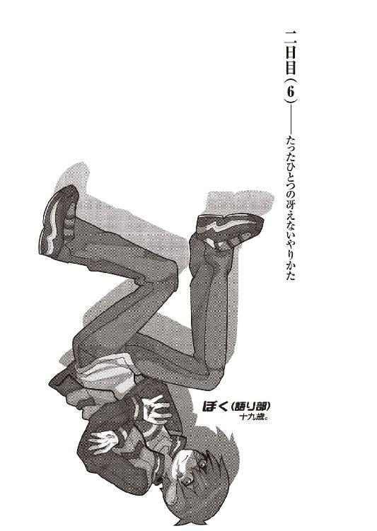
０
自分の評価は他人が決める。
他人の評価も他人が決める。
１
結局地階までは階段で移動した。一旦四階の廊下に出たはよかったのだが、しかしエレベータは地階に停止していて、これならば階段を駆け下りた方が速いということは如何に興奮した頭でも瞭然たる事実だった。ましてこのときのぼくは全く興奮などしていなかった。体温が零下に下がるくらいに冷静だった。
階段の途中で二、三回転倒し、踊り場にまで叩きつけられる。それでもすぐに起き上がることができた。さすがに無傷で済んでいるわけではないのだろうが、だけれどあまり痛くはない。ここに至って、ぼくはどこかに到達してしまったらしい。人間生物が痛覚神経をコントロールできるなんてわけがないのだろうが、少なくとも今のぼくは、それと似たようなことをやっている。そう言えば生物は決定的な致命傷を負ったときに──たとえば頭を半分潰されたとか、上半身と下半身を分断されたとか、そういうときに──感覚神経を一切断ってしまうという話を聞いたことがある。もうどう足搔いたところであと数分間しか生きられないのだから、生命の危機を伝えるための信号など無意味にして不必要というわけだ。そう考えると愉快だった。不謹慎な話だが、すごく愉快な気持ちになった。死を恐れないものには痛みなど何の価値もない。覚悟を一つ決めるだけで、生物はここまで強くなれるものか。あるいは、覚悟を一つ捨てるだけで、生物はここまで弱くなれるものなのか。どちらにしたって、それは素晴らしいことのように思えた。四度目の転倒を犯した自分の身体を壁から這いずるように起こしながらそう思う。
転倒しても痛くも痒くもない──実際には少しむず痒いような感覚はあるけれど──のはありがたかったが、しかしまともに歩けないというのは問題だった。地に足がついていないように思える。非常に不安定だ。まるで無重力遊泳でもしているような感じ。そう言えば昔玖渚と──それはぼくがまだＥＲ３システムのＥＲプログラムに参加する以前、まだ十三歳だった玖渚友と、そんな話をしたことがあったか。ぼく達が成人する頃には誰でも宇宙旅行ができるんだろうか。できるかもしれないね。きみは行きたい？ 別に。興味ないよ。きみはどうなんだ？ 玖渚くん。行きたいよ。ふうん。引きこもりのくせに宇宙には出たいってか？ 大した俗物根性だな。ぞくぶつって何？ 下らない生き物のことだよ。僕は下らなくないよ。かもしれない。でも宇宙は下らないぜ。どうせこの世に価値のあるものなんかないんだ。価値のあるものなんかどこにもないんだ。どこにもない？ どこにもない。宇宙に出て地球を見ても「青い」って思うだけだ。宇宙にまで出て持つ感想がその程度なんだぜ？ そんなことを知りたきゃ、色見本でも見りゃいいんだ。青だけじゃなく、赤だって黒だって緑だって、全部揃ってるさ。宇宙進出なんて自分の矮小さを確認するための作業に過ぎない。行き過ぎたロマンチシズムの極致だね。それならきみの髪の毛でも見てた方がずっといいよ。えへへー。脈絡なく笑うなよ。気持ち悪い。ぼくはきみのそういうところが嫌いなんだ。僕はきみのそういうところが大好きだよ。言ってろばか。
「──媚びてんじゃねえよ......」
本当、くだらないガキだ。自分でそう思う。思い上がって思い上がって思い上がって。舞い上がって舞い上がって舞い上がって。それを自意識と勘違いしている。世界の表側だけを見て、あるいは世界の裏側だけを見て、とにかく片側にしか視線を向けようとしない。限られた視界の中で何かを悟ったような気になって、悟ったような口を利く。虚構を塗った自分が崩壊するのが怖くって仕方がない。そして崩壊した後の中身は空っぽだ。虚構自身が本体になっていたってわけだ。笑えない上に泣けもしない悲喜劇、茶番劇。そしてその茶番劇は未だ終わっていない。ずっと続いている。ずっと、停まっている。要するに《死線の蒼》に搦め取られたこのぼくは、あの頃から一切の成長を遂げていない。遂げるつもりもないらしい。やり遂げなければならないことは他にあるから。
五度目の転倒。同時にそれは地階への到着だった。今回は強く頭を打ったらしい。痛みは相変わらず茫洋として曖々昧だが、しかし意識が少しだけ途切れそうになる。そしてまた昔のことを思い出す。まずは家族のこと。妹。姉。父親。母親。二人の祖父祖母。子供時代の記憶。友達の顔は一つも浮かんでこない。誰も知らない。誰もぼくを知らない。事故。崩壊。飛行機。この辺りで妹の姿が消える。さようなら。霞丘さん。直さん。そして玖渚友。他の全てが消えた。これも走馬灯というのだろうか？ 言葉の意味が分からない。ＥＲ３システム。心視先生との出会い。馴染めない同僚生。数少ない馴染める同僚生。想影真心。先生との別離。それから色々あって。そのほとんどを思い出せない。憶えていたらパンクしそうだ。中退。日本。京都。玖渚友との再会。何も変わっていない玖渚。何も変わっていないぼく。浅野みいこさん。鈴無音々さん。伴天連爺さんと家出兄妹。東京へ行った彼女はどうなったのだろう。鴉の濡れ羽島。スタイルのない画家。首を斬られた七愚人。不安な料理人。不愉快な占い師。同類の彼。はぐれもののお嬢様と三つ子メイド。会いたいなあ。哀川潤さん。人類最強の請負人。五月。彼女達との出会い。そして人間失格とのコンタクト。他愛のない会話。自愛のない会話。最悪の魔女、七々見奈波。ぼくを師匠と呼ぶ少女の登場──姫ちゃんのところまで記憶がおっついたところで、ぼくは正気に返る。なんだよ、と自分で呟く。意識して呟く。結構憶えているものじゃないか。やれやれ、ぼくの記憶力もまるっきり捨てたものではない。本当にやれやれだ。身体を起こす。地面に転がった錠開けナイフを拾い上げ、それをノブの錠穴へと差し込む。そのまま何度か揺り動かすと、あっさりと鍵が外れる。ノブをつかんだ。相変わらず感覚がない。身体がまともに動作しているところを見れば骨折などはしていないのだろう。いい加減な推測だったがそう思い込むことに決め、扉を開けた。
薄暗い、光源と言えば天井に張り付いた、今にも切れそうな蛍光灯ぐらいしかない、第四棟地階廊下に出る。出た途端、どこかから声が聞こえる。安心。どうやら聴覚までは麻痺していないようだった。あれだけ派手な階段落ちをやったのだから鼓膜が破れていてもおかしくないと思っていたけれど、その心配も不要だったらしい。ぼくは耳を済ませる。
「──わたしは───── 。 ───── から──」
この声は──誰だ。非常に抑揚がなく、まるで合成音声が喋っているように流暢で、言葉と言葉に切れ目が全くない。そこまで考えて思い至る。そうだ。春日井さんだ。春日井春日さんがいる。どこにいる。この先に。この先のケージにいるに決まっている。
「──あの男の子がどこかに行ってしまったというのならそれはわたしの失態になる。そうなるとわたしはすごく困る。だからわたしはあなた達に質問しなくちゃなりません。分かりますよね？」
春日井さんの声。穏やか──とは言わないまでも、激昂はしていない。ぼくは慎重に、足音を消しつつ息を殺しつつ、廊下を一歩ずつ、ゆっくりと進む。不意に頭痛が襲う。何度目かの転倒で脳内を傷つけてしまったのかもしれない。別に構わない。最初から壊れてる脳なんかどうなっても構わない。構わないからもう少しだけ持って欲しい。もう少しだけ待って欲しい。時間が欲しい。まだやらなければならないことがあるんだ。
そこでぼくは笑いそうになってしまった。久し振りに笑いそうになってしまった。やらなければならないこと。このぼくに、よりにもよってこのぼくに、そんなものが生じるときがこようとは。一切の義務も合切の権利も放棄しようと望んでいた子供にも、そんなものが生じるものなのか。だとしたらぼくも、案外ただ単に停止していただけではないのかもしれない。あるいは今まで、それに気付かない振りをしていただけか。多分後者だ。つまり、ぼくは自分で思っている以上に、そして誰もが思っている以上に、とんでもない大馬鹿野郎だってことなのだろう。
だけどぼくは結局、笑わなかった。
「さーあ。知らないわね」
懐かしい声が。ほんの数時間聞いていなかっただけなのに、懐かしいと感じる鈴無さんの声が、ぼくの耳に届いた。
「帰っちゃったんじゃないかしら？ あまりの待遇の悪さに怒っちゃってさ。いの字はあれで結構おぼっちゃん育ちっぽいからね、こんな環境の悪いところじゃ一刻一秒と過ごせなかったのかもしれないわ」
「──ふざけないでください」春日井さんの声は相変わらず抑揚がない。怒りも非難も戸惑いも感じられない。「この中からどうやって出て行くというのですか。出て行ったと言うのならあなた達は出て行くところを見たはずです。どうやってあの男の子は脱出したのです？ 誰か内部に協力者がいるということでしょうか」
変だ。春日井さんの声の後ろに、なんだか唸り声のようなものが混じっている。まるで獣のような。春日井さんが唸っているわけではないだろう。鈴無さんでもない。だとしたら誰だ？ まさか玖渚が。足がしびれるような感覚に囚われる。いや足じゃない。身体全体が。封じていた痛覚が蘇ったかのように。
「そう言えばねー」
と。
「僕様ちゃんは見たよ。いーちゃんは身体中の関節を外してその隙間から出て行ったんだよ。さすがいーちゃん、何をするか分からないね」
しびれから解放される。一安心。まだ玖渚は無事でいるらしい。だけれど、その玖渚の台詞にもかぶるように、唸り声は続いていた。一体なんだというのか。まだ他に誰かがいるのだろうか。いや、その気配はない。内側の感覚が鈍くなっている分、外に向けられた感覚神経は普段よりも百と二百と鋭くなっている。ならば。ケージの前にいるのが春日井さん一人の内になんとかしなければ。
考えをまとめようとした。何かいい手立てはないものか。思考に二秒ほど費やし、けれどすぐに、ばかばかしくなって頭を振った。三時間丸まる思考に費やして、結局何のとっかかりも得られなかったこのぼくが、ここで何かを考えたところでどれほどの意味があるとも思えない。ならば考える必要などない。所詮ぼくの脳味噌は欠陥製品だ。練達者のように、身体が勝手に、何を考えるまでもなく、動いてくれることを望もう。動いてくれることを祈ろう。
ぼくは角を折れて、声のする方へと身体を乗り出した。そう、この角を折れれば、そこが玖渚と鈴無さんのいるケージ──
「──......」
そして。そこには春日井さんがいた。白衣の姿で。ぼくに冷めた、例の目線を向ける。彼女の足元には一匹の犬がいた。昨夜、ぼくにじゃれついてきたあの犬だ。ああ、唸り声はこの獣のものか。黒くて大きくて獰猛そうな。昨夜と同じように、鎖はつながれていないし、首輪すらもしていない。どうして犬などをこんな地階にまで連れてきているのか。春日井さんのその目的は分からない。だから自然、春日井さんに視線を戻す。春日井さんは多少驚いていたようだったが、しかしそれを表情に出すこともなく平然と、「──あら」と、言った。
「きみはどうして──」
「あ、いーちゃんだ！」玖渚がひどく場違いな嬉しげな声でケージにしがみついた。「やっほー！ いーちゃん！ おっかえりー！」
ぼくはその声に応えることができない。ただ、春日井さんと対峙している。だけれどまるっきり無視することもできず、檻の向こうの玖渚へと、視線が逸れる。元気そうだ。少なくとも見たところ、何の怪我もしていない。どうやらぼくは間に合ったらしい。多分、間に合ったようだ。鈴無さんもいる。悠然と、余裕ぶって壁にもたれていた。だけれどぼくの姿を「やれやれ」とばかりに見て、「......で」と、静かに、期待していないような声で言う。
「いの字。その様子じゃ、調子万全とはいかないみたいだわね」
「あ。本当だ。いーちゃん、すっごく怪我してるね。あちこちすりむいてるよ。血も出てるし。大丈夫？」
鈴無さんの台詞の意味は、勿論事件調査についての首尾を問うたものだろう。だけれど玖渚は、まるでそんなことなど気にしてもいないように、ぼくの身体を気遣った。いつものことだった。玖渚は全く自分を省みない。どうしてだろう。分からない。
ぼくは錠開けナイフを取り出し、ふらふらとした足取りで（......しっかりと、歩いている、つもり、なのに......）ケージに近付く。あれ。鍵が開いている。何故だ。春日井さんが開けたのだろうか。ぼくは春日井さんを振り向いた。
「ちょっと──勝手なことをしないで欲しいな。動かないで」
何か言っている。聞こえない。やっぱり鼓膜は破れてたのだろうか。聞こえているけれど何を言っているか分からない。何を言っているかは分かるけれど意味が分からない。聞き取りやすいフランス語みたいだ。まあいいや。春日井さんの声なんか聞こえても仕方ないし。ぼくはケージの扉を引いた。
「さあ帰ろうぜ、友」
「え？ あ、うん──」
玖渚が戸惑いを見せる。珍しい。あれ。ぼくは何かおかしいことを言っただろうか。一緒に帰るだけなのに。いつものことじゃないか。一緒にどこかに行って一緒に帰る。それだけのことだ。ああそうだ、帰りにういろうを買って帰らないと。姫ちゃんの友達の分。みいこさんも欲しがるだろうから六本、七本くらい。
肩を引っ張られた。春日井さんだった。
「──そのまま中に入って頂戴。できるだけ悪いようにはしないから」
「黙れ。殺すぞ」
ぼくは振り向いて、春日井さんの手を払った。
「邪魔をしないでくださいよ。ぼく達はこれから帰るんだ」
「させないよ」
春日井さんは怯むことなく、ぼくを片手で突き飛ばす。押されるままに、ぼくは二、三歩分、ケージから引き離された。玖渚から引き離された。ああ、戻らないと。だけれどそれは遮られる。春日井さんと──一匹の犬によって。
そこでぼくはようやく気付く。その、春日井さんの足元にいる黒犬は、昨日の犬じゃない。そっくりだけれど、雰囲気が全く違う。獰猛そう、どころではない。実際に獰猛だ。睨むように、まるで天敵でも睥睨するようにぼくに二つの眼を向けている。今にも飛び掛ってこんばかりの前脚。後ろ脚にやや体重を沈め、こちらからの攻撃にも用心深く備えている。これに較べれば昨日の二匹の犬など、子供相手の愛玩犬もいいところだ。被っている皮こそ同じだが、これは全く別異の生物だ。
「三つ子の──もう一匹か」
「ご明察だよ」
春日井さんは少しだけ犬に視線を下げた。
「もっともこれは昨日きみが見たあの二匹とは違って大人しくもないし従順でもないけれどね。それはいわゆる実験の結果だよ」
実験の結果？ どんな実験を施せば同じ遺伝子でできた三匹の内の一匹をこうも変質させることができるというのだろうか。昨日言っていたような気もする。言っていなかった気もする。思い出せない。思い出す必要もない。大事なのは春日井さんがこの犬を使って何をするつもりだったのかということだ。この犬を使って玖渚に何をするつもりだったのかということだ。
「あなた──何を考えているんですか」ぼくは春日井さんに問う。「そんな凶犬連れ出してきて──もう洒落や酔狂じゃあすみませんよ」
「きみが脱走なんかするからいけないんだよ。大人しくしててくれたらよかったのに」平然と応える春日井さん。何の迷いも躊躇もない。「ほら早くケージに戻ってくれないかな。わたしもこんなことできればしたくない。でもできないならする。それだけだよ」
普通だった。
春日井さんの口調はあまりにも普通だった。
こんな普通じゃない場所で。
こんな普通じゃないときに。
こんなにも、普通だった。
「──成程。そうですか......そうですか、あなたもそうなんですね」
得心いった。
......根尾さんが言っていた《春日井さんに気をつけろ》という言葉の意味を、ぼくはこんなときになってようやく理解した。
成程成程......そういうことか。信念がないということ。それは結局のところ何でもできるということに他ならない。何の制約も受けていない。何の誓約もしていない。ゆえに何も成約しちゃいない。それがこの春日井春日のパーソナル。論理や論議など、倫理や稟議など、何の意味も持たない。
自分では何も選ばなかった、自分では何も決めなかった、その末路がこれか。平気で他人を拘束し、他人を監禁し、他人を傷つける。それも自分の信念に基づいてではない。そんなものはない。
卿壱郎博士は自らの研究のためにそうする。心視先生は自らの目的のためにその博士に協力し、そしてその目的のために離反する。志人くんや美幸さんは自らの忠誠心のためにその博士に協力し、そしてその忠誠心がゆえに、容易く崩れる。
春日井さんは違う。
何の理由もない。動機もない。理屈など最初から通っていない。理解など最後まで始まらない。強いて言うならそこには無思想論理があるだけだ。度し難い。どうしたって度すことなどできるはずもない。ぼくの到着があと少し遅れ、春日井さんはその犬を玖渚のいるケージ内に放り込んだとしても、尚平然としていたことだろう。それが結果として玖渚に致命傷を与えたとしても尚平然としていたことだろう。目的もなければ手段もない、後悔もなければ反省もない。取り引きの余地もない。懐柔も籠絡も脅迫も通じない。
信念がない。
確かにそれは根尾さんの言う通りに恐怖だった。
だけれど。
「それを言うならこのぼくだって同じだな──」
左胸に手を突っ込んで、ナイフを抜いた。錠開け用のナイフは左手に。哀川さんからもらった薄手の刀子は右手に。それぞれ構えて春日井さんに対峙する。春日井さんはそんなぼくを大して驚いた風もなく見て、何の感情も込めずに見て。
「あまり意味のない抵抗をしてもしょうかたないと思うけれどね」
「意味のない？」
「何一つ意味はないよ。もうすぐ博士も他の局員達もここに詰め掛けてくる。ここでわたしを突破したところでどうしようというの？ どうしようもないよ」
「どうしようもなくなんかありませんね」ぼくは一歩、にじり寄る。春日井さんとの距離は二メートル──もない。この距離では拳銃を使う意味がない。小唄さんの忠告もあるが、練習もせずにあんなものを使うほどにぼくは愚かでもない。今取っている行動がそれ以上の愚策だったとしてもだ。「ここであなたを突破して、あとから駆けつけてくる博士も、他の局員達も、全員突破する。それがぼくの計画通りですからね」
「狂ってるよ」
あなたに言われたくはない。
ぼくがそう反論する前に、春日井さんは指をぱちんと鳴らした。すると黒犬が敏捷に動いた。指を鳴らしたのは合図だったらしい。さすがは春日井さん、動物学者。けれど全くの予想外、完全に不意打ち──というわけではなかったので、ぼくはさほど慌てず、右足によるステップで三歩分後退した。黒犬は春日井さんを守る意志を見せつけるかのように、彼女の前で停止する。
「老婆心として忠告しておくけど一旦食いつかれればもうおしまいだよ。今ならばまだ歯止め──牙止めなのかな？ どちらにしろ制止することは可能だけれど」
ぼくは春日井さんを無視し、黒犬と向かい合う。玖渚と鈴無さんは何も言わない。ぼくの視界の中に二人共入っていないので、どんな表情をしているのかも分からない。あるいは何か言っているのかもしれないけれど、少なくともぼくには聞こえない。
ああ──おかしくなってしまったのだろうか。
玖渚の声まで聞こえないなんて。
「本当に愉快だよ......本当に本当に本当に本当に本当に本当に本当に本当に本当に本当に本当に本当に本当に本当に本当に本当にね」
錠開け用ナイフの方を捨てた。からん、と乾いた音が地下に響く。黒犬がその音に少しだけ反応したが、飛び掛ってはこなかった。こんな犬を相手にするのに、まるっきり両手が塞がれていたのでは太刀打ちできそうにない。刃物は一つで十分だ。
「そう──そっか。本気なんだね。わたしは少しだけ残念だよ」春日井さんは本当に少しだけ、だけど本当に残念そうに、そう言った。「きみとわたしはひょっとしたら仲良くなれるかもしれないと思ってたからね」
「ぼくは今初めてそう思ったところですよ、春日井春日さん」
「──行け」
それが合図だった。黒犬はたっぷりと矯めていたらしい勢いを爆発させるかのように、大口をあけてぼくへと飛び掛ってきた。そうか。春日井さんの前で見せ付けていたのは、彼女を守る意志なんかじゃなかった。ぼくを破壊せんとする意志だったのか。とんだ見誤りをしたものだ。そうとも知らずに吞気に春日井さんと会話など交わしていたぼくに生き残る術などあるわけがなかった。なかったけれど身体は動いていた。思考速度よりもずっと早く、速く動いていた。
その行動は自分でも異常だと思うようなものだった。ぼくは、飛び掛ってくるその黒犬の口に向けて自分の左腕を差し出したのだった。より正確に言うならば、ぼくの喉笛を食い千切らんとするその牙の大群の中に、まるで顎ごと持って行くつもりではないかというような、全体重を乗せた肘鉄を打ち込んだのだった。所詮犬の脚など移動手段以上の機能など微細にしか持たない。狩猟動物として活動するならばその武器は牙にのみ──春日井さんが自ら匂わしたように、牙のみに限られる。だったらその軌道を読むのは容易いし、軌道が読めればそれを封じるのも容易い。そうなると悲しいかな、犬畜生の習性、一度喰らいついたものはそうそう簡単には離せない。牙が食い込んでしまえば尚更だ。
と、論理的に説明するのならばこんな感じだろうが、ぼくはそんなことを考えていたわけではない。ただ、相手が口を開けたから、そこに肘を打ち込んだだけの話だ。
しかしそんな先制にもかかわらず押し倒されたのはぼくだった。全体重を乗せた肘ですら、この超大型犬をのけぞらせることは不可能だったらしい。動物と人間とでは、やはり根本的に体力が違うようだった。背中からしたたかにうちつけられ、黒犬に組み敷かれる形になる。昨晩と似たような光景だった。だけれどあのときの相手は二匹で、しかも、今よりもまだ楽だった。ぼくを押し倒すことに成功した黒犬は、前脚でぼくの胸の辺りを押さえつける。そしてぼくの左腕に食い込ませている牙に、より深く力を込めた。
そのまま更に牙を食い込ませる黒犬。やはり一旦外そうという気もないらしい。そりゃそうだ、ジャケットの上から嚙み付いて、その上自分で布をひねってしまっている。容易なことでは牙は抜けない。もっともそれは都合のいい事実ではなかった。抜けないのなら逆に嚙み切ればいいだけの話なのだから。勿論こっちだって筋肉の塊、いくら大型犬の力と言えど腕を嚙み千切るというわけにはいくまい。だけれどこいつはぼくの腕を嚙み砕くくらいのことはやってのけるだろう。それだけの力を持っている。ぼくを押さえつけている前脚からもそれが分かる。痛みで神経がどうかしてしまい、抵抗など不可能。思考すらうまく回転せず、ただ悲鳴をあげて相手のなすがままに──普通ならば、そうなる場面だろう。
だけれど。今のぼくには痛覚がない。
嚙み砕かれても押さえつけられても何も感じない。何も感じない。何も感じないのだ。この前治ったばかりの左手が、またしばらく使えなくなるだろうことが少し残念なだけだ。ぼくは右手を振り上げた。ナイフを持った右手を振り上げた。容赦しない。黒犬は気付いたようだった。だけれどどうすることもできない。そこまで牙を食い込ませてしまったのはお前だ。それが何であれ、自分でやったことの責任は自分で取らなくちゃな。そうだろう？
全く。
お互い、つらい立場だよな。
ぼくは黒犬の左眼に、黒々と大きなその眼球に、思い切りナイフを刺し込んだ。ほとんど抵抗など感じず、それは頭蓋を破壊し、黒犬の脳にまで到達しただろうと思う。黒犬は悲鳴をあげなかった。その代わりにより一層、限界を超えた力をもってしてぼくの腕に牙を食い込ませてきた。筋肉は既に破壊され、牙が骨に直接届いているのではないかという感覚。このままでは大袈裟でなく、ぼくは腕を嚙み砕かれてしまうだろう。脳髄を破壊したところで生物はすぐに死んだりはしない。畜生、あとどれくらいだ。どれくらいでこいつは絶命する。ぼくの身体はどれくらい持つ。ぼくの意識はどれくらい持つ。畜生。破壊が足りない。まだ破壊が足りない。破壊。破壊破壊。破壊だ。破壊を破壊で。破壊しなくちゃ。破壊するんだ。破壊破壊破壊。もっともっと破壊。もっとも果敢ない。果敢なすぎる命を。果敢な過ぎる夢を。現実を。ぼくは渾身の力で背筋を使い、上半身を浮かした。
「──があああああ！」
右手でナイフを握り直し、そして頭蓋から胴体へ向けて一直に線を引く。反対側の左腕は、上半身を螺旋するようにして後ろへと引いた。つまり右腕ではナイフを前方に、左腕では黒犬の身体を──牙が引っ掛かった黒犬の身体を──思い切り後方へと、それぞれ引き離し、片腕でする通常の二倍の渾力を込めて、ナイフを運動させた。骨を断ち切る音、血管が引き千切れる音、皮膚が破れていく音。響く。鼓膜が正常に戻ったのか、それらの音が不愉快なほどに、愉快なほどに心地よく響く。
その黒い胴体の半分くらいまでナイフを通したところで、ぼくは思いっきり勢いを込めて、それを引き抜いた。途端、血しぶきが散る。ぼくの頭上に。身体中に。黒犬の中身が飛び散った。黒い中身が。闇が噴き出したような中身が。
きらきらと。
「──は......あ──」
がくん。と。
ぼくの身体が倒れた。倒そうとなんて全然思っていないのに倒れた。電池が切れたような感じ。充電が必要。だけれど。もう身体が動かない。身体の上に、中身を撒き散らした黒犬が倒れる。重い。ひどく重い。瞼が重い。眠い。眠たい。眠りたい。まだだ。まだだ。まだ何も終わっちゃいない。
ぱち。ぱちぱち。と。
拍手の音がした。
「──すごいね。きみ。わたしはちょっぴり感心した」春日井さんだった。「感動と言ってもいいかもしれない。そんな大きな凶犬に勝てたのもすごいのだけど──何よりも平気で動物を殺せちゃうところがすごいと思うよ。なかなかできないんだよね──それ。ああ命の価値を知らないおばかさんは別としてだよ？ 命を奪うってことがどういう意味なのか理解した上で尚その生命を奪えるなんてすごいなってこと。命知らずの馬鹿ならぬ命を知ってる馬鹿ってところかな」
「お褒めに与かり光栄の至りですよ」ぼくは息も絶え絶えに応える。ちゃんと発音できているのだろうか。分からない。「──さあ。そこを退いてぼくらを通してください。あなただって死にたくはないでしょう？」
「そうだね。せっかくきみのような人間に会えたのに死にたくはないかもしれない。だけどわたしだって自分の犬殺されて平気な顔していられないし......それにほら」
春日井さんは耳を澄ますような仕草をした。その行動の意味は次の瞬間に判明する。コーン、と。エレベータがこの地階に到着したのを知らせる、そんな音がしたのだ。エレベータ。ぼくが四階で確認したときには確か地階にあった。地階にあったはずのエレベータが地階に到達したということは、つまりどこかを一往復してきたということ。往復してきたということは、誰かを乗せてきたということ。
誰かがここにくるということ。
「時間切れ──だしね」
春日井さんのその言葉からはわずかながら、慈悲のようなものを感じた。勘違いかもしれないけれど。ふらりと顔をあげ。そしてケージの中にいる玖渚を見た。鈴無さんは見えなかった。どこに行ったのだろう。どこかに行ったのだろうか。玖渚しか見えない。
もうぼくには玖渚友しか。
あれ。どうして？ どうしてそんな泣きそうな顔をしているんだ。お前はそんな顔、できないはずだろう？ お前はいっつも笑ってて。無邪気そうに笑ってて。どんなときでもぼくに笑顔を見せて。どんなところでもぼくに微笑してくれて。楽しそうに。嬉しそうに笑ってないと駄目なのに。どうして？ 分からないよ玖渚くん。ぼくが、そんな。きみの、そんな顔を見たことなんか。
たった一回しか。
ないのに。
......ない、のに。
誰かが駆けて来る足音。ちょっと首を傾けてその方向を見る。一人ではなかった。何人もいる。先頭を切って歩いてくるのは斜道卿壱郎博士。その後ろに根尾古新さん。神足雛善さん。あれ。その後ろにいるのは大垣志人くんじゃないか。横には宇瀬美幸さんもいる。なんだ。もう気絶から醒めたのか。じゃあやっぱり春日井さんがこのケージの様子を見に来たのは、そういう連絡が入ったからなのかもしれない。志人くんを玄関傍に放置したのがよくなかったのかもしれない。よく分からないけれど。その二人の後ろには三好心視先生。ああ。じゃあここに春日井さんがいるのだから、施設内の人間が勢ぞろいってわけだ。
もう無理かな。
そう思った。
もう無理だな。
そう分かった。
「結局きみはさ──」
春日井さんが言う。
「──一体何が欲しかったの？」
問いかけだった。
酷く確信的な、酷く核心的な、多分、それをぼくに問うことができるのは広くて狭いこの世界で春日井さんただ一人だけだろうというような、シンプルにして明快な問いかけだった。
「──愛」
ぼくは呟く。
答えるのではなく、呟く。
「愛が、欲しかったな──」
愉快な気分だった。笑いたかった。本当に、笑いたかった。
自由になる右手をついて、身体を起こす。そして立ち上がろうとした。いいだろう。最後の悪足搔きをしよう。往生際が悪いのがぼくのセールスポイントだ。血塗れになった全身。血みどろになった精神。服が気持ち悪い。自分の考え方も気持ち悪い。だけれどそうするしかないような気もする。ナイフを見た。さすがは人類最強の請負人直伝ナイフ、あれだけの破壊を行って尚、刃こぼれ一つ起こしていない。これなら簡単かもしれなかった。
ぼくの首筋を搔っ切るくらいのことは。
玖渚を見た。
やっぱり、玖渚は泣きそうな顔をしていた。ケージにしがみついて、ほとんど泣いていた。それでも泣けずにいるようだった。泣き笑いのような悲痛の表情。そうだ。ぼくが笑えないようにあいつは泣けない。ぼくと同じようにあいつは泣けない。悲しみ方を知らないのだ。だからあんな無様な表情になる。それがひどく残念だった。最後に見るものは玖渚の無邪気な、天然純度の笑顔であって欲しかった。
ああ、でも。
それは。
高望みが、過ぎるよね。
左腕が重いことに気付く。
黒犬が、既に生命をどこかに離散させてしまった黒犬の牙が、未だぼくの腕に食い込んでいるのだった。兎吊木を思い出す。兎吊木の死体を思い出す。目の中にハサミを突っ込まれ脳髄を破壊され、口内と胸、腹を切り裂かれ、脚を串刺しにされ、両腕を切断された兎吊木垓輔。どうやらぼくは無意識のうちに、この事件の犯人と似たような行動をとってしまったらしい。ひどく滑稽だった。ならば真実、ぼくが犯人なのかもしれなかった。
まあ今となってはどうでもいいことだけれど。行為があったかどうかなんて問題ではない。要はそこに認識があるか否かだ。それだけのことだ。足音が近付いてくる。比例して目が霞んでくるので、どれくらいの距離にいるのか分からない。だけれどもう本当に時間切れだ。ぼくは黒犬の口にナイフを持ったままの手をかけた。このままじゃあ少し動きにくい。それにこのままぶら下げておくのも、なんだかこいつに悪い気がした。かわいそうだから引き剝がしておこう。しかし変な具合に引っ掛かっているのか、なかなか取れない。いや、これは引っ掛かったり食い込んだりしているんじゃない。固まってしまっているんだ。そう、いわゆる緊張性死体硬直。暴力的な死に伴う肉体硬直現象。先生とつい数時間前に話したばかりだけれど、こんなシーンでお目にかかることになろうとは思わなかった。
「──え──」
と。ナイフを使って黒犬の口部を破壊しようかと目論見、隙間に刃を突っ込んだそのとき、今度はぼくが固まった。固まってしまった。
緊張性死体硬直──だって？ そう言ったのか？
「──てめえ！ そこで何してる！」
志人くんのそんな声が地下に響いた。だけれどぼくにとってそれは何の意味もない。固まってしまったぼくには何の意味もない。鼓膜すら振動しない。ちょっと待て。考えろ。考えろ。落ち着け。いや、落ち着くな。焦れ。すぐそこだ。手を伸ばせ。手を伸ばせ。もう少しだ。届く。もう少しで届く。
つまり......。そういうことなのか？
ぼくはナイフを知らず知らず、手から離した。落としてしまった。
兎吊木垓輔。仮に。仮にあれが、ぼくの思った通りの人間だとするならば。昨日の会話といい。兎吊木垓輔。《害悪細菌》。グリーングリーングリーン。《一群》。破壊屋。そうそう他人に殺されることをよしとしないだろう兎吊木が殺されたという事実を。玖渚友のために。ただそれだけのために卿壱郎博士の言うなりになっていたあの男の。かつての玖渚友の仲間が。
磔刑。
あれが呼び水なのだとすれば。
逃げ水ではなく呼び水なのだとすれば。
「おいこら！ てめえ！ 聞いてるのか！」
どん、と誰かに突き飛ばされた。志人くんだろうか。ぼくは折角起こした身体を再び床と仲良くさせてしまう。痛かった。痛覚が蘇ってきている。感覚神経が復活してきたようだ。身体中が痛む。特に腕が痛い。当たり前だ。肉の半分をえぐられているようなものなのだから。文句は言うまい。ぼくは相手の命を全部奪ってしまったのだから。
今更ながら、悪かったなあと思う。
けれど、別に悪くはないのだろう。
お前は悪くないよ。
悪くなくとも生命は死ぬんだ。
悪くなくとも。
悪くなくとも。
「おい春日井──これは一体──」「はあ──と言いますが── ──」「自分一体何しよるねん─ ─おい自分──」「 ちょっと──」「──てめえ説明しろ─ ─」「......犬......」「 ── 」「 血────牙 」「 治 療 」「
「ちょっとだけ黙ってくださいよ、皆さん」
ぼくは静かに言った。
「ぼくは今、生まれて初めて自分で自分を誉めてやりたい気分なんですよ。ええ、錯覚なのは勿論分かっています。分かっています。錯覚で構わない。だからせめて、この気分を、あと少しの間だけ、味わわせてくださいよ──」
だけれどそれすらにも及ばない。その程度の望みすらも叶わない。ぼくはうっすらと、意識を失いつつあった。今度は、安心で。だけれどもう目を醒まさないかもしれないと思った。
目を醒まさないかもしれない、か......
まあ、それもいいかな。
今、すごく、幸せだしね。
「..................」
うっすらとしたぼくの視界が最後に捉えたのは、やっぱり玖渚友だった。うっすらとして何も見えないけれど、けれど視界は青かった。
純で、
澄んで、
綺麗で、
心地いい。
なんて──青色。
「..................」
勝手なことを言ってもいいかい？
ぼくはきみが好きだ。
２
昔話をしようか。
あるところに一人の、たった一人の、どうしようもなく救いようのない男の子がいました。酷く歪んだ性格と惨く崩れた価値観だけを頼りに戯言を吐いて生きるしかない、そんな少年でした。
あるところに一人の、たった一人の、どうしようもなく救われない女の子がいました。酷く素直な性格と惨く正しい価値観だけを頼りに微笑しながら無邪気に生きるしかない、そんな少女でした。
本来ならばそれで物語はお終いでした。少年はそこそこ不幸にそこそこ悲惨に人生を短く終えたでしょうし、少女はそこそこ幸せにそこそこ優雅に人生を短く終えたでしょう。少年の住む世界と少女の住む世界とは全く違う場所にあったのですから。
しかし理に反し、少年は少女に出会い、少女は少年に出会いました。果たしてそこには誰の、どんな意志があったのでしょうか。どんな気まぐれが、どんな気遣いが、彼と彼女を出会わしてしまったのでしょうか。それを偶然や運命や奇跡で片付けてしまうのは、少年と少女にとって、あまりにも残酷というものでしょう。
人がたくさん死にました。
人でなしがたくさん死にました。
少年はたくさん死にました。
少女もたくさん死にました。
少年はたくさん殺しました。
少女は一人も殺しませんでした。
そして、少年は、罪の重さに耐え切れず、罰の重さに耐え切れず、一人で逃げました。
少女を置き去りに一人で逃げました。
「──ありふれた、昔話だ......」
自分だけが被害者みたいに悲劇ぶって。
まるで世界中の不幸を背負っているかのように。
世界中の不運が自分の所有物かのように。
いつでも可哀想な被害者。
加害者の癖に。加害者の癖に。加害者の癖に。
可哀想なんかじゃない癖に。
「ぼくみたいな奴は、どこにでもいるんだよ......」
そして今、一人、ぼくは呟く。
左腕にはぐるぐると、大袈裟に包帯が巻かれていた。多分、大袈裟ではないのだろうと思う。むしろこれでも応急処置だと心視先生は言っていた。あの黒犬の牙は骨にこそ達していなかったものの、その顎力は大したもので、左腕の橈骨は剝離骨折を起こしているとか。勿論ぼくの怪我はそれだけにはとどまらない、あれだけ何回も階段落ちをやらかしたのだから仕方もないが、全身に損傷を負っているらしかった。《らしかった》と言うとまるで他人事だけれど、ぼくにはあまり自覚がない。痛覚はほとんど回復していたけれど、心視先生が麻酔をしこたま注射してくれたので、再び感覚神経は麻痺しているのだった。
「それでもまだ普通やったらのたうち回るくらい痛いはずやねんけどな」
先生はそう言っていた。解剖学の権威教授がそう言い切ったのだから、それは本当なのだろう。だとすれば、やはりぼくの身体はどこかおかしいのかもしれない。それこそ、先生に一度解剖してもらった方がよいくらいには。
第五棟、根尾さんの研究棟の屋上で一人、ぼくはそんなことを考えていた。
それにしても戯言めいている。一体、今から始まることはなんなのだろうか。予定調和の茶番劇とも言えるし、そうでないとも言える。茶番劇と言うのならば今まで展開されてきた──このぼくが主役となって展開してきた半日間の方がずっと茶番劇だったのだから。
ゆえに、だからこそ、ぼくが全てに──そう、正に全てに──気付いてしまった時点でこの茶番劇は終幕だ。カーテンコールなど必要ない。幕が降ろされる必要すらもない。そこで全てが終わりだ。
ならば、今から展開される情景は一体なんなのだろうか。
「これは、つまり余韻のようなものなのかな......」
否、違う。
これはむしろ、予兆のようなものなのだ。何かが、とんでもなく重要な何かが始まる前の予兆。どうしても避けることのできない通過儀礼。そう考えるならば、この戯言めいた情景にも幾らか意味があるように思えてきた。意味があればどうだとか、なければこうだとか、そんな文句を言うつもりはないけれども。
それでは開始しよう。
戯言遣い一世一代の人形劇を。
まずは第五棟から第四棟への二メートル。この程度なら余裕で跳べることを、既にぼくは学習している。気持ちばかりの助走をつけて、ぼくは第四棟へと飛び移った。着地の衝撃が少しばかり脚に来た気がするけれど、それは気になるほどの衝撃ではなかった。麻酔がいい具合に効いているらしかった。
第四棟。ぼくと玖渚と鈴無さんが、監禁されていた場所。いやそれにしてもしかし、鈴無さんには悪いことをしたと思う。玖渚とぼくがこんな目にあったのは言わば必然なのだけれど、あの人だけは本当に無関係だったのだから。他人を巻き込むのにも程があるってものだ。鈴無さんはみいこさんほど優しくはないから、やっぱりことが終わった後で説教されるのだろうなあと思った。まあいい。説教されるのは嫌いじゃない。相手が鈴無さんなら、特に。
そして第四棟から第三棟へ、跳躍。これは三メートル半あるので、気をつけなければならない。逆に言えば、気をつければそれでいい程度の距離だ。
第三棟。三好心視先生のテリトリー。向こうが真実どうだったかは知らないけれど、ぼくは本音から全然、先生との再会など望んでいなかった。嫌いだったわけではない。と思う。ただ、会いたくはなかった。本当に、二度と会いたくはなかった。だけれどしかし、もしもこの施設にあの人がいなければ。そう考えるなら、この再会もまた多少の価値を有していたのだろう。
続いて第三棟から第二棟へ。二メートル足らず。これは第五棟から第四棟への移動同様、余裕を持って跳躍できる距離。
この第二棟は──神足さんの研究棟か。神足雛善さん。ぼくはあの人を思い出す。そして彼と《背徳者》たる根尾古新さんとが交わしていた、無線で聞いたあの会話を。《兎吊木垓輔の死は自殺》。
「まあ、自殺というならこれほど自殺らしい自殺は珍しいよな......」
呟いてみたものの、それがその通りだとは思わなかった。そうなのかもしれないし、そうじゃないのかもしれない。それはどちらだってよいことだった。どちらにしたって悪いことだった。それも結局は行為と認識の問題でしかないのだろうと思う。
第二棟から第一棟へ、三メートル足らず。
そこで思い出したのは、姫ちゃんのことだった。全ての後始末を頼んだ、《自称》ぼくの弟子。
姫ちゃんならきっと、今のぼくの気持ちが分かることだろう。玖渚にどこか似たところのあるあの少女は、しかし内面の方はぼくに近い。先月機会あって知り合って、ついこの間からぼくの住む骨董アパートの一階に引っ越してきている。ぼくは彼女に雇われて家庭教師の役についているが、けれどその進捗は芳しくない。勉強が嫌いな人間に勉強を教えるほど難しいことはないのだ。しかしぼくがこれからやらなければならないのはそういうことだった。斜道卿壱郎博士に対してやらなければならないのは、そういうことなのだ。斜道卿壱郎博士の支配する第一棟の屋上に立って、そう思った。
身体の方向を変えて、第六棟へは一メートル半。これは余裕というよりも容易。
そこまで渡ると、第七棟への屋上を見渡すことができた。そこには数人の人の姿を捉えることができる。あれがこの人形劇の観客にして主役達。言うならばぼくがこれから自らの戯言によってねじ伏せなければならない対象だ。果たしてそれが可能だろうか。そう考えたときに想起したのはデニムのコートのあの人だった。《あの人がいなければ》というのなら、あの人こそ正にその修飾句で飾られるべき人物だろう。結局仲違いをする結果に終わってしまったが、しかしそれは全面的にぼくの責任だ。だったらせめて、少しでも恩返しをするのがこのぼくのツトメってものだろう、多分。
ちなみにその《石丸小唄》なる人物については、ぼくは知らぬ存ぜぬで通すことにした。志人くんと美幸さんによって目撃されているわけだし、彼女が施設内に存在したこと自体は隠しようがないけれど、ぼくが彼女と繫がっていたことを告白すれば、必然的に根尾さんのことも白状しなければならなくなる。それはまずいだろうという判断で、幸い例の錠開けナイフのこともあり、ぼくは《自分でケージを脱出し》そして《施設内を屋上伝いにうろうろしていた》ということにしてある。勿論相当無理のある説明ではあるけれど、あちらさんとしても《侵入者》は都合のよい存在ではないということで、有耶無耶を吞み込むことにしたらしい。
「有耶無耶主義もこれ極まれりだよな──」自虐的な独白。「──いや、この場合は不都合主義の方か」
第六棟から第七棟への五メートル。ただし実際には第七棟が低い造りになっているので、四メートル半と見ておけばいい。
玖渚の話だと、男子高校生の幅跳び記録の全国平均が、それくらいの数字らしい。そう聞くと、少しは安心できる。いくら最近はロクな運動をしていないとは言え、十七歳の男子に負けるほどに身体を衰えさせた記憶はない。記憶がないだけかもしれないけれど、とにかくぼくは一度ここを跳んでいる。無我夢中もいいところだったけれど、跳んでいることには違いがない。一度成功しているというのは何にしてもはげみになるものだ。ぼくは少し慎重に、助走距離を取る。
走り幅跳びは、単に脚の跳躍力だけで結果を出すものではない、と玖渚が言っていた。この助走距離でつけた勢いを、如何に空中での推進力に変換するか。その技術にかかっているのだそうだ。具体的には助走の前半で既にトップスピードに乗り、あとは重心の位置を徐々に上半身へと移行させるという動作が必要らしい──などと、一通り走り幅跳びについてのレクチャーを玖渚から受けたが、しかしそんな理屈は頭で理解してどうにかなるものではない。練達者が《ただ跳ぶ》だけでやってのけるその動作を、素人のぼくが簡単にコピーできるわけもないだろう。だからぼくも《ただ跳ぶ》だけだ。
駆け出し──そして踏み切り。
身体が、浮く。
どぉ、とどよめきが聞こえた。誰かが声を上げたのだろう。声を上げなかった誰かもいると思う。そんな吞気なことを考える余裕があった。着地までの時間が随分と長く感じられた。人間は生命の危機に立たされると目の前の映像がスローモーションで見えるという話はよく聞くが、今のぼくにそれが起こっているのかもしれなかった。あるいは、ただ単に跳躍距離が足りなくて、地面に向かってまっさかさまに落下していっているだけなのかもしれない。どちらでもいいような気がしたが、さすがにそれはどちらでもよくない。
そして、幸いなことに、ぼくは第七棟屋上へと着地した。正確には着地には失敗し、無様にひっくり転げたのだが。床面に対して怪我をしている左腕の方から衝突したので、意識が途絶えることはなかったが、少し頭を打ってしまい、そのまま悶える形になる。滅茶苦茶格好の悪い登場シーンだった。
「なにやっとんねん、自分」呆れ返ったような声で近付いてくる三好心視先生。「大丈夫かいな。つーかそもそも自分、なんで怪我の多い半身から倒れるのん？」
「大丈夫です──それよりも」
ぼくは先生の手を借りつつ、身体を起こす。先生の肩越しに、全ての人の姿が見えた。斜道卿壱郎博士。宇瀬美幸秘書。大垣志人助手。根尾古新研究局員。神足雛善研究局員。春日井春日研究局員。そこから少し距離をおいて、鈴無音々さん。そして、玖渚友。合計にして九人、ぼくを含めて十人の人間が、第七棟屋上へと集合していた。無論、集まるように仕組んだのはぼくである。
「──まあ、見ての通りといいますか」立ち上がって、一同を見渡すような大きな素振りで両手を広げ、ぼくは言う。両手を広げたのは《無事》をアピールするためだ。「この通り、屋上づたいならばこの第七棟まで、どの研究棟からもアクセスが可能ということです。理解していただけますかね？」
「──ふん」如何にも忌々しそうな表情と口調でぼくをねめつけるのは、やはりと言わなければならないのだろう、卿壱郎博士だ。「ばかばかしい。全くもってばかばかしい話だな、若造」
「若造ですか。きついですね」ぼくは飄々と受け流す。今は意図的に感情の回路を遮断しなければならない。「しかし現実は認識してもらわないと話が進みませんよ、博士」
「そんな子供騙しの──いや、子供すら騙せんようなトリックに俺が一杯食わされるとでも思っているのか？ ここから見れば一目瞭然だ。この第七棟は第六棟よりいささか低い設計になっている。あちらからこちらへの跳躍が可能だということを貴様は証明したが、しかしその逆は証明していない」
さすがは、博士。ぼくとは違ってその程度のことにはすんなりと気付いてしまうか。ここでＱＥＤといけたらそれが一番楽だったのだけれど、しかしそうそう都合よくはいかないらしい。
「それとも貴様は今から第六棟へ向けて跳躍してみせると言うのか？」
「いやいや......さすがにそれは無理でしょうね。そう思いますよ」
それ見たことか、と博士は笑う。
「とんだ時間の無駄だったな。こんなことに付き合うとは俺も随分人がいい」
人がいい──確かにその通りなのだろう。
それが相手を甘く見ていることから出る余裕の産物だとしても、それが斜道卿壱郎の人のよさであることまでは、否定できまい。こんな風にぼくに──敵に勝手な行動を許してしまう辺り、本当に人がいいと言わざるを得ない。ぼくとしては、悪いが、その人のよさにはつけ込ませてもらおう。
「まあ、そう結論を急がないでくださいよ」ぼくは言う。「さて──まあ博士の言う通りに、第七棟から第六棟へ戻ることは出来ない。この中に世界ランカー級の脚力を持つ人間がいないと仮定する限りにおいて。ただ、今のぼくの行為によって一つの事実は証明できたと思います。即ち、《戻れはしないものの、第七棟へ侵入するルートはある》と」
「それがどうした？」博士が半畳を入れてくる。「入ったところで出られない一方通行ならばそんなルートに何の意味もあるまい。言うまでもないが入り口のセキュリティは、たとえ内側からでも、クリアするには様々なロックを解かねばならない。よしんばそのロックをクリアできたところで、それはログに残ってしまう。扉が内側から外側へと開けられたというログがな。しかしそんなものは残っていなかった」
「でしょうね。まあ、その通りでしょう」ぼくは適当に同意してみせる。「ロックとログの二重拘束。その通りということにしておきましょう」
「何だ？ その言い方は。含みがあるな。俺が、この斜道卿壱郎がそこに何らかの細工を施したとでも言いたいのか？ ログを消去したとでも？」
「言いませんよそんなことは。大体、あなたにはできないんでしょう？ 玖渚にはできてもあなたにはできない。そうでしょう？ 玖渚にはできても。あなたがそう言ったんだ、博士」
いささか意地の悪いだろうこの台詞に、博士はすごい形相でぼくを睨む。ただしそれは怒りと言うよりも、ぼくの持っている手札を見抜けずに戸惑っているという風に近い。
「貴様──」
「もっとも──」ぼくは博士の台詞を押して言う。「──《戻れない》と判ずるのはまだ早い。何せ人間の肉体一つで課題をクリアしなければならないなんてルール、どこにもありませんからね。たとえばロープを使えば、第六棟までの道はできる」
「できるな。人間の体重を支えきれるほどのロープがあればの話だが。で、そんなものがどこにある」
「まあこの施設内にはないでしょうね......でもロープというのは比喩ですよ。例えば着ている服を繫いでロープ代わりにするとか、あるいはＯＡ機器のケーブルやコードをねじり合わせるとか、ね」
「それが人重に耐えられると思うのか？」
「思いませんよ」と、ぼくは博士から視線を外し──神足さんを向く。「しかし、では博士のお好みに合わせて言葉を並べますと──、人重に耐えられる縄の候補として──髪の毛など、いかがでしょうね？」
一斉に視線が神足さんを向いた。しかし神足さんはサングラスの位置を直しただけで、何も言わない。例によって例の如くの寡黙ぶりだった。その過剰とも思える寡黙ぶりに少々呆れつつ、ぼくは言葉を続ける。
「神足さんの髪は相当長かった。あれを繫ぎ合わせれば、第六棟までの橋渡しにはなるんじゃないかと──思いませんか？ ねえ、鈴無さん？」
「......ん？」鈴無さんは、少し驚いた風に。「あら、アタシに振ったわけ？ ああ、そうね......。確かに髪の毛は丈夫だけどね。それも人によりけりなんだろうけれど、そう言えば、浅野があのサムライポニーテイルで人の首締めるの見たことあるし」
「ええ。それはなかなか立ち会いたくないシチュエーションですが......ものの記録によれば、ある女性が自分の伸ばした髪を一まとめにしたらどれくらいの重さまで耐えられるかを実験したところ、一トンだかまで髪の毛は切れずに持ったらしいです」これも玖渚からの受け売り。「それは極端な例で普遍性がないとしても、しかし髪をロープ代わりにするという手法は十分に成立する。あるいは」
と、ぼくは今度は春日井さんを向く。皆も一斉に同じようにした。
「人間ではなく、動物だったなら、この距離を跳躍することが可能かもしれませんね。まあ、この通り......」ぼくは包帯を巻かれた左腕を持ち上げて皆に示す。「ぼくと先ほど死闘を演じたあの巨犬ならば、このくらいの距離の飛躍は不可能とはいえないのではないか。どうですか？ 春日井さん」
「さあね。試したことはないけれど多分できるんじゃないかしら」春日井さんは首を傾げつつも、ぼくに肯定の返事をくれた。「そうだとするときみから観測してわたしが犯人になるのかな？」
「いえ、まだそこまでは言いませんよ。ただ、この第七棟は決して密室状況なんかではなかったと、閉じられてなどいなかったと、そう言いたいだけです。具体的な例をあげてね。そうなるとどうなります？ 少なくとも玖渚一人を──ひいてはぼくら三人だけを疑う理由なんてどこにも──」
「使い古された手法だな」博士は、しかしこの程度ではびくともしない。嘲笑するような口調で、ぼくを遮った。「極端に印象的な仮説をでっちあげて、そしてその衝撃をあたかも真実が解明されたかのような驚愕へと置き換える。この第七棟への走り幅跳びのようなスタンドプレーも、その一環なのだろう？ 典型的な詐欺師の手法だな。その手は食わないよ、若造」
「でっちあげて──ですか？」
「ああ。考えてみれば分かることだ。今の二つの仮説はちょっと考えるだけで論破できる。神足の髪は長かったとはいっても精々一メートル。これを分割してロープを作ったとしても、強度の問題があるから、四メートルやそこらが限度だよ。第七棟と第六棟に架ける橋としては幾分不足だな。それに動物犯人説はもっと噴飯ものだ。一体全体どうやって犬コロ如きが、人間を刺殺したり、壁に磔刑に処したり、血文字を描いたりできるというのかね？」
「さてね──犬の背中に誰かが乗っていたとしたら？」
「さすがにそれは無理だと思うよ」ぼくの軽口にまで突っ込みを入れてくれる春日井さんだった。意外といい人なのかもしれない。「人間一人背負っての跳躍は無理」
「......そいつはどうも」ぼくは頭を下げる。「ご注進、痛み入ります」
「で？ どうした？ 若造。それで手札は出尽くしたのか？」
「そうですね──たとえばこういうのはどうでしょう？ 兎吊木垓輔がやたらめったらに解体されていた理由に必然性を持たせてみるんですよ。どうして兎吊木の腹は開かれていたのか？ それが内臓を取り出すための手法だったとすれば？」
ぼくは一同に問い掛けるように、舞台役者のように大袈裟な動作で言う。根尾さんばりの演技過剰とも思えたが、しかしこういうことはやってやり過ぎるということはないだろう。
「内臓取り出すて──」先生が不思議そうに問う。「それ、どういうことやのん？ 自分」
「人間の消化器官は一本のチューブみたいなものですよね。食道から直腸まで繫がっている、一本のチューブ。そして肉で構成されたこのチューブは相当な弾力を持ち、ゆえに相当の強度を所有している。たとえばそれをロープ代わりに使ったとか──」
「え？ ちょい待ちい」先生がぼくを止める。「兎吊木さんの内臓は、ちゃんと腹ん中に残っとったで。ウチ、胃とか腸とか解剖したもん」
「その通りです。ゆえに、これもただの仮説」ぼくは手のひらを返す。「実際問題、消化器官をロープとして使用するなんて不可能でしょうしね......、今のは性質の悪い冗談のたぐいですよ。いわゆるリップサーヴィスですね。ただまあ、兎吊木さんの肉体損壊に何らかの必然性を持たせるというアイディア自体は、悪くないものだと思います。ここでぼくみたいな若造が皆さんに犯罪心理学の講義を執り行うつもりなんか全然ありませんが......しかしあの偏執性すら感じ取れる兎吊木垓輔の殺し様、そこに何かがあるとは思いませんか？」
「何があるというんだ」博士が幾分苛立ったように言う。「どうも貴様の物言いは回りくどいな。回りくど過ぎる。何が言いたいのか、言いたいことがあるのならはっきりと言ったらどうだ、男らしく」
「男らしくですか。勿論それでも構わないんですがね......」ぼくは軽く肩を竦めてみせる。回りくどい、か。しかしそれは、迂回しなければならないものがあるのだから仕方ない。「ただ、考えてみれば博士の仮説だってあまり男らしいとは言えませんよね。《玖渚友にならできたはずだ》なんて......少し無理がある。それに、たとえ玖渚に可能だったとしても、やっぱりあなたに──ひいてはあなた達に不可能だと断ずるに足る理由はありませんよ。《できない》と言い張ればいいだけなんですから」
「......それが貴様の解答か？」
「いえ、これはただの揚げ足取りですよ。深い意味はありません。この時点では」
博士は仮説を出しては引っ込めるぼくの中途半端なやり口に、多少の困惑を交えた眼を向けて、しかし今度は何も言わなかった。結局のところ、今のぼくの狙いはそこだった。最後の最後の最後まで、ぼくの狙いに煙幕を張ること。精一杯の虚勢を張って、博士を──並びに全ての人間を、困惑させること。要は相手の思考を迷わせること。要は相手の思考を乱すこと。要は相手と同じ土俵に立たないことだ。
それは《人類最強の請負人》の手法から真逆のやり方だが、しかしぼくのような最弱が《堕落三昧》斜道卿壱郎を超越する方策は、それくらいしかありえないだろう。
「先生」ぼくは心視先生に向けて問う。「とりあえず、兎吊木さんの検案結果を教えてくれますか？」
「ん？ ああ。えーと。死亡推定時刻は午前一時前後。死因は目え刺しとったハサミが脳にまで達しとったこと。腹やの何やのの損壊はその後。腕を切断されたんはもっと後で、磔にされたんは更にその後。まあ、簡単にゆうたらこんなとこやけど」
それは既に第三棟の中で聞いていたけれど、勿論それは伏せておかなければならないことだった。先生もその辺は承知しているので、ごく自然に、ぼくにというより皆に向けるように、そう報告した。そんなわけもないしそんなつもりもないけれど、なんだか共犯者のような気分になる。これもやはり、信頼関係ではないのだろうけれど。
「ウチとして気になるんは、やっぱ両腕が切断されるまでにあったタイムラグかな。死んでから三時間から四時間くらいあとに切断されとるねん。そない時間のかかる作業でもないやろに、なんで──」
「おい、喋り過ぎだ、三好」博士が先生を窘めるように言う。「昔のよしみだかなんだか知らんが、必要以上にそいつに肩入れすることは許さんぞ」
「肩入れねえ」皮肉げに博士に笑う心視先生。「了解了解。出過ぎた真似はせんときましょ。で、兎吊木さんの検案結果を聞いてどないするんやのん？ 我が生徒」
「どないもこないも──ですね。しかし先生、人間の身体をそこまで損壊し、しかもそのあとで磔にするような作業、相当体力が必要になるんじゃないですかね？」
「玖渚のお嬢さんの細腕でそれは不可能だと？」ぼくの問いに答えたのは、これ以上先生には話させまいという意図からなのか、卿壱郎博士だった。「はん。難癖をつけるのもいい加減にしてもらいたいな。何もその作業をやるのは玖渚のお嬢さんである必要はない。玖渚のお嬢さんが扉を開けさえすれば、あとは──たとえば貴様がやってもいいのだ」
「仰る通りで。一言の反論すらもありませんよ」博士の挑発には乗らない。あのとき──今朝のあのときに、博士の挑発にのって激昂してしまったのが、ぼくのそもそもの失敗だ。同じ轍は二度踏まない。なるべくなら。「しかしその場合にしたって、何故ああも無惨に兎吊木垓輔を解体したのかという疑問の答は不明ですが」
「貴様にはその答が見えているというのか？」
「その問いには後で答えることにしましょう。さて、あまり時間をかけても意味がないし冗長になるだけですので、そろそろ解決編に入りましょうか。実際──どうしようもなく実際、この第七棟に限らず、この施設内にある建造物は難攻不落と称してよいほどに侵入経路がない。窓がない──のは性質上仕方ないとしても、入り口すら一つしかない。しかもその一つには玖渚友仕様のセキュリティロックときている。ま、しかしロックのことは考えないとして、とにかく外に向けて開いているのはこの屋上と、その玄関のみ。言ってしまえば天に向かうトンネルみたいなものですね。卿壱郎博士は、兎吊木さんを殺した犯人はその玄関口から出入りしたのだと推理した」卿壱郎博士を窺う。博士は何も言わなかったので、ぼくはそのまま続けた。「そうなると犯人は玖渚友ご一行しかありえないということになるわけですが、ま、しかしぼくらとしてはそれを認めるわけにはいかない。博士は《共犯者同士の口裏合わせ》と仰るんでしょうが、ぼくは玖渚の無実を証言できる。と言うより、玖渚友の無実を知ってますからね。となると、玄関口は使えないってことになりますね」
「ほな、屋上ルートしかないっちゅうことか？」
「三好！」博士が怒鳴る。「いい加減にしろ！ さっきからのお前の言動は問題だぞ！」
「それは失礼。お呼びでないってか」
先生は飄々と頭を下げてみせる。既に博士を見切っている先生としてはぼくの人形劇が成功した方が都合がいいのだろう。だとすれば、ぼくと先生は、正しく共犯関係なのかもしれない。そう思った。
「ま、そういうことです。ただね──これにも結構制限があるんですよね」ぼくは、自分が跳んできた第六棟へと身体を向けて、呟くように言う。「この屋上ルートの制限ってなんだか、分かりますか？」
誰にともなく訊いたこの質問には、答が返ってこなかった。それでもしばらく待っていると、博士が「だから、一方通行だってことだろう？」と、苛立ったように言った。
「来ることはできても戻ることはできない、そういう──」
「いや、まあそれもあるんですけれどね。確かに戻ることはできないんですが──考えてみればこれってその《来ること》自体も、結構難しいんですよね」
「──なに？」
「第五棟から第一棟を経由して第六棟まで、まあ最長でも三メートル半くらいの跳躍でしたら、ここにいる誰にでもできるんでしょうけれど──最後の距離はさすがに《誰にでも》ってわけには行かない──」
五メートル──体感距離としては四メートル半。全国男子高校生の幅跳び平均記録に匹敵するけれど──しかし、平均とは全体にばらつきがあるからこその平均だ。それは誰にでもクリアできる最低ラインという意味ではない。どころか、全体の半分はこれをクリアできないということを指し示しているのだ。
つまり、この四メートル半ですら、跳躍できる人間とできない人間がいる──
「見ての通りですが、ぼくは跳べました。これでも昔──と言うか、そうですね、もう皆さん知っての通りですから言っちゃいますけれど、ぼくは五年ほどの間ＥＲ３システムという研究団体のＥＲプログラムという青少年育成のための留学制度に参加していました。そこでそこそこ身体を鍛えてましたから、その余韻で──今だって平均程度の体力は保っています」
なまり気味ですけれどね、と冗談っぽく付け加えて。
「えーと。すいません、鈴無さん」ぼくは再度鈴無さんに問う。「鈴無さんは、この距離、跳ぼうと思えば跳べますか？」
「多分跳べると思うわ」自分に質問が来ることを予測していたのか、即答する鈴無さん。「正確に測ったことはないけど、五メートルくらいまでなら、余裕。ひょっとすると六メートル──は無理かな。そんな感じだわよ」
「そうですか」
幅跳びに関しては素人でも、鈴無さんは例外的な身長、脚の長さ、そして体力を保有する人だから、その答に意外はない。多分ぼくよりは跳ぶだろうと思っていた。ぼくは軽く頷いて、それから今度は玖渚に向いた。
「友、お前なら？」
「うー。無理だよ」玖渚は唇を尖らせて、不満そうに答えた。そんなことをわざわざ訊くなと言わんばかりだ。「一メートル──跳べないかも」
こっちもこっちで予想通りだった。玖渚は欠食偏食引きこもり小娘なので、筋肉や脚力などというものには縁がない。ぼくは「聞いての通り」と、博士の方を向く。
「ぼくら三人の間でも、散らばりがある。と言ってもこの《屋上ルート》を取る限りにおいてはぼくらの無罪は立証されている。そもそもどこかの研究棟の中にいない限り、このルートはつかえませんから。どの研究棟も厳重にロックが施されている以上、ぼくらは棟内に入ることができない」
「俺達の中に犯人がいるというのか？」
ぎろりとぼくをねめつける博士。
「だからさっきからそう言っているでしょう？」
淡々と応じるぼく。
「誰だ？ 名前を言え」
「これから言うんです。せっかちなこと言わないで下さいよ。最後なんですから楽しみましょう。──さて、この屋上ルートを使えないのは誰でしょう？ 斜道卿壱郎博士、宇瀬美幸秘書、大垣志人助手、三好心視先生、根尾古新研究局員、神足雛善研究局員、春日井春日研究局員──」一人一人、順番に眇めるようにしつつ、ぼくは言う。ここからがクライマックスだった。「──まずは女性陣の三人は外せます。つまり、先生と春日井さんと美幸さんです」
「──」「......」「............」
三人共、無言で反応する。
「こいつは単純に体格の問題でね......お三人共小柄な体格でいらっしゃる。それに、別に男女差別するつもりじゃないけれど、基礎体力の問題もありますしね。女性の身でこのアクロバットに挑むのは、リスクが大き過ぎる」
なんとなく右方向から鈴無さんの視線を感じる気がするが、しかしそれは無視だ。先のことを考えて臆病になることを賢明とは言わないはずだ。はずだが、確実に睨まれてるぞ、ぼく。頑張れ、シリアスな場面なんだ。軽く首を振って、ぼくは「続けて」と言う。
「根尾さんも、無理だと思います。こちらも体格の問題で」えーと。どう表現すればいいだろうか。つまり。「通常よりも恰幅のよいお身体をお持ちですから......」
「ま、だろうね」言いよどむぼくに大仰に笑いながら、根尾さんは自分の腹を叩いた。「二十キロ分の重さを背負って幅跳びするようなもんだからな。俺には無理だろ。これで俺は容疑者のリストから外れるってわけだ」
「......となると、残るのは三人。斜道卿壱郎博士、大垣志人助手、神足雛善研究局員。......この内簡単に消去できるのは、勿論博士、あなたですよね」
「......何故だ？」
「いえ、跳べると言い張るのでしたらそれでも構わないのですが、しかし博士は何分ご高齢でいらっしゃる。六十三歳......、さすがに厳しいんじゃないでしょうか」
博士は何も言わない。しかしわざわざ解答を待つまでもない。常識的に考えて、誰から見ても博士にはこの距離を跳ぶことは不可能に違いない。
「となると、残りは二人──ですね」
神足さんと、志人くん。
その二人に視線が集まる。
「この二人には、屋上ルートを使用することができる──即ち、志人くんの場合は第一棟から第六棟に渡り、そして第七棟へと。神足さんの場合は第二棟、第一棟、第六棟、第七棟の順に、ここまで移動することが可能──」
言いながら二人の様子を窺うが、神足さんは先刻と同様、まるで動揺した風もなく、サングラスの位置に気を遣っていた。冷静そのものの態度。ただし、志人くんの方はそうではなかった。怒り心頭とばかりに顔を真っ赤にして、志人くんはぼくを遮るように怒鳴った。
「──おい！ てめえ！ 黙って聞いてりゃ好き勝手言ってくれてんじゃ──」
「悪いけどきみの突っ込みに付き合っている場合じゃないんだ。そのまま黙って聞いててくれないか？」
「なんだと？ てめえ──」
「安心してよ。きみにも、やっぱりこのルートを通ることはできない」ぼくは激昂する志人くんを片手で制しつつ、やはり淡々と言う。「きみには視力の問題がある」
「──な」《視力》の二文字に、志人くんは静止する。「──んだと？」
「だから視力だよ......よく見えてないんだろ？ その目」ぼくは故意に、強いてそれが分かりきったことのように答える。「水晶体やレンズの問題じゃなさそうだから......視神経の方に問題があるのかな？ 解剖学は苦手だからそこまでは分からないけれど」
一同が少しざわめく。それを知っていた者はぼくに対して、それを知らなかった者は志人くんに対して、それぞれ視線をやる。部内者では美幸さんと春日井さんの二人が知らなかったようだ。部外者の方はと言えば、鈴無さんは気付いてなかったらしく、玖渚は、どうやら気付いていたみたいだった。玖渚の推察眼なら、不可能ではないと思う。
「てめえ......何でそれを──」
「なんとなく、そう思っただけさ」
たとえば、初対面のとき、ぼくを確認するのに滅茶苦茶接近してきたこととか、玖渚を手で触って確認していたこととか、背の高い鈴無さんの性別を男女どちらか見抜けなかったこととか。あるいは、給水タンクの死角に隠れていたぼくと小唄さんの存在を見もせずに看破したことなどは常日頃から視力に頼っている者には不可能な行為だし、その割には鈴無さん同様に長身だった小唄さんの性別をやはり看破できなかったこととか。そしてその小唄さんが、顔面ではなく腹部ばかりを狙って攻撃を加えた意味、とか。そういうものを総合して考えての《なんとなく》だ。
「違うのかい？」
「──違わないけどよ......」
視神経の異常による視力疾患。それが先天的なものなのか、後天的なものなのかは判断できない。だけれど、それがどちらだろうと、あるいは博士の《人体実験》の結果だったとしても、そんなことはぼくの知ったことじゃない。無関係だ。つまり、要するに、志人くんには風景や人物がぼんやりとしか見えていないってことだ。施設内を普通に移動できるところを見ると、全く見えていないということはないのだろうけれど、しかしそれでは......
「それではこの距離の跳躍は不可能だと見るべきでしょう」
「お、おい。おれのことは確かにてめえの言う通りだけどよ......けど、そうなったら」志人くんが、いささか怒りを抑えた声で、しかし今度は慌てたように言う。「そうなったら、もう一人しか──」
「そう。残るは一人。神足さんですね」神足さんを指さすぼく。「──神足さんの場合は──さて、どうでしょう？ 性別の問題や体格の問題や年齢の問題や感覚器官の問題や、あるいはそれに匹敵するだけの理由が──」
神足さんは。微動だにしない。ぼくを睨みもしない。激昂もしない。息一つ分の反応すら、しようとしない。
「──ない」
唐突にそう言ったのはぼくではなかった。
神足さん、本人だった。
「確かに僕にはない。そんな理由は」
「──神足っ！」博士が怒鳴った。「何を言う！ お前は──」
「落ち着いてくださいよ」神足さんは、ぼくにも負けず劣らずの、淡々とした口調で短く言う。「博士。単純に──僕がこちら側へ渡ってこれるというだけの話に過ぎない。今の段階では。そうだろう？ 恋人さん」
恋人さん。その、この場においてはあまりにも風刺が利き過ぎている呼称に、ぼくは震える。それはつまり。玖渚友の。
ぼくと神足さんの直線距離はざっと五メートル──いや、六メートルか。もう少し、近い方がいいかもしれない。そう思って、ぼくは一歩だけ、神足さんに近付いた。そして対峙する。
ここから先は──博士が相手ではない。
ここから先は、神足雛善が相手だ。
「それとも僕が犯人だと言うのか？ 恋人さん」
彼は犯人のように言った。
「ええ。あなたが犯人です、神足さん」
ぼくは探偵のように応じた。
博士が怒鳴るのが聞こえたが、そんなものは無視だ。ぼくはもう一歩、神足さんににじり寄った。これ以上の接近は逆に意味がないだろう。直線距離にして四メートル半──これくらいが、丁度いい。
「──面白い。僕が犯人だと言うなら、いいだろう、証明してみろ。恋人さん」神足さんは表情一つ変えずに言う。「確かにこのルートを使えるのは僕だけなのだろう。何せ僕の名前は《神の足》だからな。だが博士の仰った通りに、そしてきみも承知の通りに、戻ることはできない」
「戻ることはできない、ね──」ぼくは台詞を反復する。「──そもそも戻る必要があるとすればって話ですよね、それって」
「............」
神足さんは応じなかった。
「......いや、勿論戻る必要はありますよ。でないと、中枢コンピュータに残るっていうログの辻褄が合わなくなっちゃいますからね。仮説として、兎吊木さんを殺した後でここにずっと残り、志人くんの発見を待って玄関から出て行く......という手法も使えない。オートロックだから扉が開いた直後でないと出られないし、だとすれば直後に志人くんに察せられずに出て行くことは難しい。死角に入ろうがどうしようが、志人くんはそれに気付くでしょうからね」ぼくや小唄さんを発見したときのように。「仮に、何らかの幸運が働いたとして第七棟からの脱出に成功したとしても、今度は自分の第二棟に入れない。入ること自体はできますが、しかしそのログが残ってしまう」
「ありえない仮説はもううんざりだ」博士が言いがかりでなく本当にうんざりしたように言う。「いい加減にしろ。貴様の戯言にこれ以上付き合っている暇は──」
「残念ながらあなたが《堕落三昧》であるよう、ぼくは戯言遣いなものでね。しかし心配なさらなくとももうすぐですよ。すぐそこが終着駅です」ぼくは博士にそれだけ言って、再び神足さんに向き直る。「少し話を戻しますが──そもそも何故、兎吊木垓輔の肉体はああも破壊されていたのか。恨み？ 支配欲？ 儀式？ まあどれだって構いません。しかし、一つだけ気になることがある──どうして犯人は兎吊木垓輔の両腕を持ち去ったのか？」
神足さんは無表情で答えない。
「かつてのサイバーテロリストとしての《腕》──文字通り《腕》を奪いたかったからか。しかしこのロマンチックな考えにはいささかの無理がありますね......ぼくがまず考えたのは、緊張性死体硬直が起こったことを因とする証拠隠滅説です。緊張性死体硬直とは──」ちらりと先生を窺いつつ。「──暴力的な死に伴う急激な死後硬直の現象です。被害者が殺されるときに何かを強くつかんでいた場合、その形のままで硬直してしまう。つまりこのとき手に握りこんだのが犯人の上着のボタンや名札など、決定的な証拠となるものだったとすると、犯人としては万難を排してそれを除さなければならなくなる」
「兎吊木さんの手の中には何か決定的な証拠があったってわけ？」鈴無さんがぼくに言った。「でもそれなら手首から先だけ切り落とせばいいじゃない。指をバラせば中身は取り出せるだろうし。あのねえ、いの字、アタシもそろそろ限度なんだけど。もっと分かりやすく言ってくれないかしら？」
「すいません」鈴無さんには謝るぼくだった。情けない。「えーと。手首や指を切り落とさなかったのは、つまりそうすれば《緊張性死体硬直があったのではないか》という疑いを抱かれるから。肩から切り落とせばそれをいくらかカヴァー......というか、誤魔化せるのではないか──と、ぼくは、まあそう考えたんですけれど」
「ですけれど？」
「考えてみれば、ですね......兎吊木さんの死因って、ハサミを目に突き刺されて、なんですよ。鈴無さん。これじゃあ理屈がそもそも通らなくなる」
「どうして？ 十分に暴力的な死だと思うけど」
「ぼくもそう思いましたし、実際にその通りなんですが......問題点として、こう、正面から自分の目にハサミの刃が向けられているときに」手をチョキにして、ぼくは自分の両眼を示した。「そんな危機に、上着のボタンやら白衣の裾やら、そんなものをつかみにかかる人間がいるわけがないんですよね......」
「ああ......そりゃそうだ」と、頷く鈴無さん。「まず相手の腕を握るわよね、自分の身を守るために。ふうん......そりゃ言われてみればそうなんだろうけど、でもそれだったら、どうして腕を切ったってことになるわけ？」
「問題はそこだけじゃないですよね。さっき先生も言った通りに、どうして腕を切り落としたのが死後数時間経過してからなのか。ただしこっちについては解答がすぐに分かると思います。これはただ単純に雨がやむのを待ったのではないでしょうか」
「──雨？」
「雨です。この屋上ルートは、ただでさえ戻るのが厄介なのに、昨晩は結構な雨が降っていた」小唄さんは腕が切り落とされたのは死後数時間後だからそのときには雨が降っていた、というようなことを言っていたが、それは逆の解釈も可能な事実だったのだ。つまり、雨が降っていたからこそ、腕を切り落とすのは数時間後になってしまった──と。「実際に明け方には雨は止んでましたが──ええ、本来ならあんな雨の晩に殺人を実行すべきではなかったんですよ。そうでしょう？ 神足さん」
「どうかな」神足さんは低く答える。「意味が分からない」
「──ただしあなたには実行しなければならない理由があった。それはぼくら三人がいつ帰ってしまうか分からないから。もしも昨日の機会を逃して今日にでもぼくらが帰ってしまえば──罪を押し付けるべきスケープゴートがいなくなってしまうから」
「..................」
「幸いなことに、雨は止んだ。あとは戻るだけだ」
「だから！ どうやって戻ったんだと訊いているだろうが！」
ついに博士が激昂し、ぼくに向かって杖を投げつけた。苛立ちも極限に達したらしい。木杖はぼくの左腕、包帯の上を直撃した。麻酔が効いているので痛くはなかったが伝わってくる衝撃はあって、ぼくは二、三歩下がる。ひょっとすると今ので完璧に折れたかもしれない、と思った。
ぼくは今朝、鈴無さんがそうしたように、博士を無言で睨みつけた。
「──なんだ。その目は。なんでそんな──そんな──目で」ぼくは何かを投げつけたわけではなかったが、しかし、博士も数歩分、後ろに下がる。そこで美幸さんにぶつかり、博士は止まる。「そんな──あいつのような目で、お前のようながきが、俺を見る」
あいつ？ 誰だろう。鈴無さんじゃないだろう。兎吊木だろうか。それとも幼き日の玖渚友や直さんだろうか。分からない。分かろうとも思わない。まあ誰でもいいさ。
「──向こうからこちらを見る限り」ぼくは言う。「案外気付かないものなんですね。来ることはできても戻ることはできないという一方通行のルールが。たとえば神足さん──いえ、まだ未定として、犯人がこちらに飛び移って初めて、戻ることができないと気付いたら。そのときはどうやって戻ったらよいでしょうか？ 簡単だ。ロープを張ればいい」
「......だから！ そんなものはないと──」
「さっき言いましたよね。神足さんならあの長髪をロープ代わりにできるって」
「俺もさっき言ったはずだ！ それでは長さが足りな──」
「足りなければ補えばいい。たとえば──
──たとえば兎吊木垓輔の腕とかで」
さすがに──ここで半畳を入れてくる者はいなかった。誰もが、恐らくは予想だにしなかっただろうその言葉に──いや。ただ一人だけ、予想していた人間がいるか。ぼくはその人物の方を向いた。
神足雛善に。
「髪の毛で作ったロープの両端に、それぞれ右腕と左腕をくくりつける。成人男性の腕の長さの平均なんてぼくの知ったところではありませんが──例としてぼくの腕を挙げてみるなら、六十センチから七十センチってところですね。これを両腕分として一メートル三十──ですか。それと、髪とを合わせれば、第六棟に十分足る。人間の肉体なら──人間の体重に耐えられないわけがない。そうですよね、神足さん？」神足さんは答えずに、サングラスの位置を調整する。ぼくは続けた。「ロープ──あるいはそれに準ずるものを使うってのにも、一応の問題がありましてね──即ち、鉄柵のない第六棟の屋上にそのロープを引っ掛けるためにはフックが必要だってことです。ただ、兎吊木の腕をロープの先端に使用すれば──その難点はクリアできる。腕をつかんだままで緊張性死体硬直を起こした兎吊木の手の形は、ちょうどこんな風な鉤状の形態になっている。フックとして屋上の縁の部分の排水溝に引っ掛けるのに十分なくらいに──」
「──戯言にもほどがあるッ！」
博士が。《堕落三昧》斜道卿壱郎博士が、脚を思い切り踏み鳴らして、息も絶え絶えに怒鳴った。後ろからそれを押さえようとした美幸さんが、博士によって弾き飛ばされる。「そんな非現実的な──辻褄合わせの──こじつけの──牽強付会が──通ると思うかッ！」
「非現実的？ 辻褄合わせ？ こじつけ？ 牽強付会？ その通り！」ぼくは博士に大声で見得を切った。「だけれど、博士、他ならぬ斜道卿壱郎であるあなたと、兎吊木垓輔、それに玖渚友がかかわったこの事件の解決が非現実的でなく辻褄合わせでなくこじつけでなく牽強付会でない、狂った解決でない理由なんてありえない！ これこそがこの施設内における唯一の真実なのですよ！」
「ばかな......屑が！ そんなことがあり得たとでもほざくか！」
「あったかどうかなんか問題じゃない。なかったかどうかすらも問題じゃない。行為自体は全然問題じゃない。そこに認識があるかが問題です！ そうでしょう！ 神足さん！」
「だ──黙れっ！」博士の表情が怒りに引き攣る。赤くなって、そして蒼白になっていく。「こ......神足ッ！ 何とか言ってやれ！ このふざけた小僧に──」
「............」
そんな博士の言葉にも、神足さんは反応しない。そして、少しだけ顎をあげて、ぼくに言った。
「......証拠は？ 僕がそんなことをしたという」
「証拠ね......、確かに髪を切った程度のことじゃ立証できないでしょうけれど、ただ──」ぼくは神足さんを指さした。「ぼくの考えたことが概ね正しいとすれば、あなたの腕のどちらかには、兎吊木さんによってつけられた手痕が、緊張性死体硬直によって強く握られた手形が、残っていると思いますがね」
「............」
「神足ッ！」
博士が再度怒鳴る。
「違うと言ってやれ！ 白衣をまくって腕を見せてさっさと無実を証明しろッ！ そうすればこんな小僧、二度とケージから出したりはせんっ！ 地下の地下の地下のどん底に閉じ込めて、徹底的に、徹底的に、徹底的に──」
「──まあ、六十点ってところか」
神足さんは、今までの低かった口調を一転し、むしろ軽い感じに、言った。
「こうた──」
「六十点。甘く見てな。手際が悪過ぎるし、時間もかかり過ぎた」
「──そいつはどうも」ぼくは肩を竦める。「──それでも、単位は、取れますが......ね」
声を潜めるようにして。
そして神足さんは笑った。
余裕たっぷりの、全然焦っていない笑い方。
ぼくの道化っぷりを笑っているかのような。
道化。
実際その通りなのだろう。ぼくは終始、この男に踊らされっぱなしだったわけなのだから。終始──正に終始だ。最初から、この、予定調和の最後まで。最後の最後の最後まで。
「ど──どうしてです！」叫んだのは、志人くんだった。「どうして、あなたがそんなことを──あなたに兎吊木さんを殺す理由なんて──」
「理由？ そうか。理由か」
考えるようにしながら、神足さんは白衣の中に手を入れた。そして。
「しかし理由なんてものはどうでもいいとは思わないか？」
「──何を言って──」志人くんが声を震わせる。「理由もなく、人を殺すなんて──何の動機もなく人を殺すなんて......」
そんなことは。
あっちゃいけないことなのだろうか。
理由のない殺人。
信念のない人殺。
あっちゃいけないに決まっている。
だとすれば。
「ならば理由があれば人を殺してもいいのか？」
「......神足さん」
「冗談さ」
神足さんは薄く笑った。冷笑だった。
何も分かっていない子供を見るような冷笑。
哀れむような優越。
慈しむような軽蔑。
志人くんを見る神足さんはそんな感じだった。
「冗談に、決まっている」
白衣の中に入っている腕が、何かを、つかんだ。
「そうだな。動機がないと殺人事件とは言えないから──なッ！」
そして、素早くその腕を抜き──指の間に挟んでいたナイフを投げた。飛び出した刃物は三本が三本とも、ぼくの左腕に、包帯の上から刺さる。ぼくはその衝撃に、後ろに吹っ飛んで倒れる。背中から思いっきり全身で倒れた。肺をしたたかに打ちつけ、ぼくは瞬間絶息する。一瞬遅れて頭も打った。
皆の視線がこのとき、一瞬だけ、倒れたぼくへと移った。その視線が神足さんに戻るまでに、もう一瞬。
合わせて二瞬。
それで十分だった。
だん、とドアが閉まる音。
皆が視線を戻す頃には、そこには神足雛善の姿は影も形もなくなっていた。
忽然と、消えていた。
まるで。
まるでそんな登場人物は最初からどこにもいなかったかのように。
「──の野郎！ ふざけんなっ！ 畜生！ 畜生がっ！」志人くんが扉に向かって神足さんを追い、駆け出す。「──逃がすかっ！」
「やめなよ、志人くん」ぼくは寝転んだままの姿勢で、我ながら実にけだるそうな口調で、志人くんに言った。「追いかけても追いかけるだけ徒労だよ」
「──あ？」眉を顰めて、振り向く志人くん。「そりゃどういう意味──」
「そのままの意味さ。今からじゃ神足さんを捕まえることはできない」
そう。きっと、捕まえることはできない。そもそもこのような解決編に余裕ぶって出席したことからも、それは予想できる。何らかの脱出経路を──それも、とびっきり確かな脱出経路を──既に、確保しているのだろう。ぼくらから、そして警察機関からも逃走が可能なように。それがどんな手段なのかは、ぼくには分からないけれど。
それでいい。
別にぼくは、彼を捕らえようなどとは、思っていない。重要なのは玖渚友の無罪が証明されることだけだった。そしてそれは遂げられた。ならばそれで十分だった。あとは他の人の仕事だ。ぼくの仕事じゃあない。
「それに──志人くん。きみの仕事は他にあるんじゃないかと思ってね」
ぼくは身体を起こし、そして包帯の上に刺さったままのナイフを一本ずつ、抜いていく。出血がないところを見ると大した傷ではない、皮膚一枚切ったくらいの傷なのだろう。包帯が防御壁の役割をしてくれたらしい。その皮膚一枚分にしたところで、やはり麻酔のお陰で痛みはなかったけれど、これでは麻酔が切れたときが本当に怖い。これからこの左腕、使い物になるのだろうか。
しかし──この三本のナイフ。腕で防御しなければ、確実に心臓に刺さっていた。ぼくが防御することを見切っていたのだろうか？ それとも、殺してしまって構わないとでも思っていたのだろうか？ どうなのだろうと考えるまでもない、多分間違いなく後者だ。
彼にはぼくを殺してしまっていい理由があり。
ぼくには彼に殺されなければならない理由があったのだから。
ナイフを抜き終わって、ぼくはその左手で。
──斜道卿壱郎博士を示した。
「志人くん。きみの仕事は、この人の助手なんだろう？」ぼくはあまり冷たくならないように気を遣いつつ、だけれどやっぱり、淡々とした口調で言った。「だったら最後まで、全うしなくちゃ」
「──博士」
呆気に取られたような、志人くんの声。
そこには、呆然と。呆然と、へたりこんでいる、一人の老人がいた。神足さんが去っていった扉を見つめたまま、瞬きもせずに目を見開いて、口をだらしなく開いて。
押せば崩れてしまいそうな。
突けば壊れてしまいそうな。
そんな小柄な老人の姿があった。
兎吊木垓輔を失い、玖渚友を手に入れられなかった老博士。
唯一の目的を無くしてしまった。
無二の希望を無くしてしまった。
全てを無くしてしまった人間はこうなるわけか。
《堕落三昧》。
これぞ正しく、本来の意味での。
「正真正銘掛け値なしの戯言だよ」
ぼくは大仰に、ため息を吐いた。
成程──これは確かに害悪細菌だ。拡散するだけ拡散して、捉えることすら、できやしない。卿壱郎博士が《一群》破壊屋兎吊木垓輔を捕らえようと、その手中に納めようとした結果がこれだというのならば──斜道卿壱郎という天才の手中にすら納まらないのが兎吊木垓輔だったというのならば──一体、ぼくのような小人の手に納まるものとは、何なのだろうか。
「いーちゃん」
ぼくの右手に、何かがしがみついてきた。
玖渚だった。
青色の。
ぼくがよく知る女の子。
「じゃ、用も済んだし全部終わったし、帰ろうか？」
済んだ。終わった。
一体何が済んでどれが終わったというのだろうか。
分からない。
分からない。
分かっているのはただ一つだけ。
この、玖渚友は。
「うに？ どうしたのいーちゃん。帰らないの？」
玖渚の向こうに鈴無さんが見える。鈴無さんは煙草に火をつけるところだった。ぼくと一瞬だけ目が合ったが、しかし構わず、鈴無さんは天に向けて目を遣った。
「......そうだな」
そうだ。
終わったし、済んだのだ。
この後にするべきことなど何もない。
この跡でするべきことなど何もない。
この痕へするべきことなど何もない。
あとは、ただ、されるがままなのだから。
だから。
だから、帰ろう。
「帰ろうか、友」
だけれど。
一体、ぼくらはどこへ帰るというのだろうか。
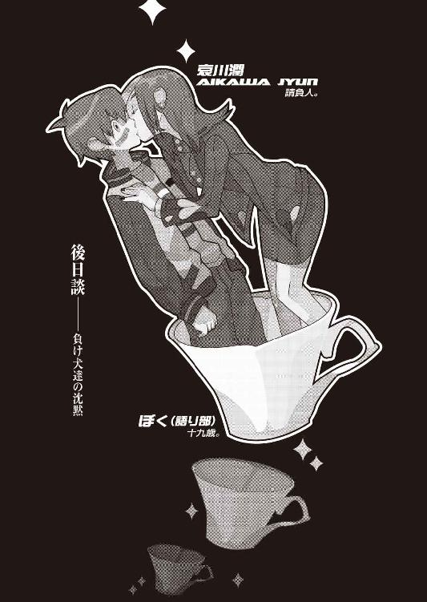
兎吊木垓輔、『裁く罪人』害悪細菌。
日中涼、『葬る静寂』二重世界。
梧轟正誤、『嘲る同胞』罪悪夜行。
棟冬六月、『犇く血眼』永久立体。
撫桐伯楽、『挫ける餞別』狂喜乱舞。
綾南豹、『回る鈴木』凶獣。
式岸軋騎、『蠢く没落』街。
滋賀井統乃、『蘇る失墜』屍。
玖渚友、『歩く逆鱗』死線の蒼。
エピローグ──というよりは、決して語られるべきではない一つの舞台裏として。
どこに帰るかと言って、今のところぼくが帰るべき場所は京都の骨董アパートしか存在しない。ぼくらはその夜──全てを片付けたその夜が更けるのを待たずに、志人くんに給油してもらったみいこさんのフィアットでもってして、斜道卿壱郎研究施設を後にした。車中で鈴無さんがホテルを予約し、その日の夜は名古屋で一晩を過ごした。突如決めた宿のこと、広大な部屋面積と一流のサーヴィスを誇る──とは行かなかったけれど、それでもあの研究所の《幽霊屋敷》と比べたら幾段もマシだった。三人で川の字になって（ぼく→玖渚→鈴無さん）、ぐっすりと、ぐったりと、死んだように眠った。実際そんなことはないのだけれど、眠ったのは本当に久しぶりな気がした。
夜が明けてから、鈴無さんの説教が開始された。数時間ほど続いて、その間ぼくは正座の姿勢で反論なしでずっと黙ったまま、時折頭をはたかれながら、精一杯怒られまくった。そうしている内に玖渚が目を醒まし、その日は丸々名古屋観光に当てた。子供のようにはしゃいでいる玖渚を尻目に、ぼくは姫ちゃんから頼まれていたういろう（都合のよいことに五色セットのものが売っていた、即決定）を、みいこさんやアパートのみんなへの分も含めて、合計十本買った。
その夕方の帰り道、滋賀県の比叡山山中で鈴無さんを降ろす。
「じゃ、浅野によろしく。説教の残りはまた後日にしておくだわ」
だそうだ。あれでもまだ説教し足りていないらしかった。ぞっとする反面、楽しみでもあった。
それから京都が全国に誇る（あるいは《恥じる》）高級住宅街城咲の、その中でも一際目立つ玖渚のマンション前に車を止め、部屋まで玖渚を送った。
「じゃ、また」「うん。またね」
何が《また》なのかよく分からなかったけれど、とにかくそんな挨拶をして、ぼくはフィアットに戻り、そして今度は自分の住むアパートへと。駐車場にフィアットを停めて、それから歩くこと一分足らず。アパート内に入って、自分の部屋に行くよりも先に隣の部屋の扉をノックした。
「おう。お帰り」幸いみいこさんはご在宅で、相変わらずの甚平姿でぼくを出迎えた。少々、いや、かなりの量のお酒が入っているらしく、顔が少しだけ赤らんでいる。「早かったのだな。二泊三日か」
「二泊三日......」
そうなのだ。ぼくら三人は、実質あの施設に二日間といなかったのである。それなのにどうだ、まるで一ヵ月間も監禁されていたかのような、そんな感覚だった。
「ええ、まあ。クルマ、どうもでした。鍵をお返しします。あとガソリン代と......それからこれはおみやげのういろうです」
「うん......ん？」みいこさんはぼくの左腕に気付く。心視先生によって再度治療しなおされた、包帯どころかギプスの装着された左腕を。「......いの字、お前その腕で名古屋からこっち、運転してきたのか？」
「はあ。いえ、ほら、この通り指は動きますし。それにギアチェンジは右手ですから」
「そうか......それならいいけどね」
みいこさんはそれだけで質問をやめ、どうしてそんな怪我をしたのかとは訊かなかった。
「入れよ。ういろうを食おう。こういうものはお前と二人で食った方がうまい」
「遠慮するのが本来の筋なんでしょうけれど......」
でも。この久方ぶりの人間らしい温情には、いくらぼくでも抗いがたい。
「今日は甘えさせてもらいます、みいこさん」
「うむ。ういうい、近く寄れ」
そういう経緯でみいこさんの部屋でういろうとお茶を馳走になって──出来上がっているみいこさんの相手をするのはそれなりに大変だったけれど──それからぼくは自分の部屋に戻った。部屋の中には何もなかった。
「......あれ？」
いや、いや、家具がないのは平常通りなのだが、しかし衣服類や書籍類までこぞって存在しないのはどういうわけだろう。携帯電話も充電器ごとない。おお、健康保険証も貯金通帳もない。すわ泥棒かと一瞬だけ焦ったが、次の一瞬でことの真相に気付き、ぼくは一階の姫ちゃんの部屋にと向かった。
「だって全部くれるって言ったですよ、師匠」
犯人は姫ちゃんだった。
「姫ちゃん、部屋掃除したですよ。ゴミだって捨てたですよ」
姫ちゃんが言うところの《ゴミ》に、ぼくの生活用品が含まれていることは疑いようもなく間違いがなかった。
「......姫ちゃん。それはぼくが無事に戻ってこなかったときの話のはずだよ......」
「ですか。でもでも、その腕を見る限り、師匠、あまり無事って感じじゃなさそうですよ」
「......かもね」
全く......全ての事件が、こういう具合に解決すればよいのだけれど。
ぼくは姫ちゃんから通帳と保険証だけ返してもらって、引き換えにういろうを渡し、それから再度、自分の部屋に戻った。
「あ──......なんだかな」
虚無から醒めたような。凶夢から醒めたような。そんなことは勿論、妄想にも似たただの錯覚なのだろうけれど。《堕落三昧》卿壱郎研究施設は紛れもなく、現実だったのだから。
「現実ねえ──それって幻想とどう違うのかな」
あの研究所はこれからどうなるのだろうか。つらつらと、そんなことを考えた。所長である斜道卿壱郎博士があのザマじゃ、既に研究所としての用をなさないだろうから、近くどこかの研究機関に吸収される形になるだろう、と玖渚は言っていた。確かに何の役にもたたなくなった──文字通りの意味で──《堕落三昧》に、玖渚本家がいつまでも金を注ぎ込むとは思えない。だとすると、他の局員たちはどうなるのだろうか。
根尾さんは別に問題はないだろう。あの人は元々が根本に背徳者だ。裏切りを仕事とする──究極の意味でどこにも属さない背徳者。達成できなかった仕事の分だけ報酬を依頼人に返して、背徳のプロフェッショナルとして、次の《仕事》へと就任するだけの話だろう。
「──しかしアレだねえ。きみとはまたタッグを組んで、仕事をしてみたいもんだねえ。できればスカウトしてお持ち帰りしたいくらいだよ」
「笑えない冗談ですね......。《君には裏切り者の素質がある》とか、そんなこと言わないで下さいよ」
「いやあ、きみは裏切り者って感じじゃあないな。どちらかといえば、きみって正面から切って捨てるっつータイプだよ」
「............」
「ん？ こいつは笑える冗談のはずなんだけどな」
──もう二度と会うことも関わることもないのだろうが、しかしこうして離れてみれば、なかなか面白いキャラクターだったようにも思うから不思議なものだ。ああも《裏切り》を割り切っている人は、そうそういないだろうから。
三好心視──心視先生は、またＥＲ３システムに戻るみたいなことを言っていた。先生ほどの人材なら向こうとしても断る理由はないだろうから、万事そのように収まることだろう。
「もう会うこともありませんね、先生」
「ううん。そうかな、どうせまたすぐ会うことになると思うで」
「............」
「しかも、もーっともーっと、洒落にならんくらいに自分にお似合いな、そんな最悪な状況でな。ほんだらそういうわけで、ばいばいきーん」
またも先生は不吉な予言をぼくの耳へと残してくれたわけだ。全くどうしてあの人はああも、別れのシーンが不得手なのだろうか。勘弁して欲しかった、マジで。
春日井春日。春日井さんは──あの人はどうとでもするだろう。ぼくが気を揉む必要などないくらいに、どうとでもすることだろう。真実の意味で、どうとでもすることだろう。あの人に限っちゃ、どうにもならないなんてことがあるはずもない。最初から信念ってものがない、いわゆる《優秀》なだけの人間。やりたいこともなければやりたくないこともない、欲しいものもなければいらないものもない、満足がないから不満もない、幸福がないから不幸もない、守るものがないから破壊衝動なんか知らない、生きてないから死にもしない、価値はあるけど価値観はない、何の問題もないから何の解答もない──そういう人なのだから。
ぼくが予想するに、彼女は玖渚機関のどこかの部署から引き抜かれる形になると思う。ただの研究家として野に放るには、彼女は惜し過ぎる逸材だろうから。やはりぼくとは二度と会うこともないのだろうけれど、でも──いや。この人に限っちゃ、《でも》なんて言葉は一つとしてない。
大垣志人──宇瀬美幸。志人くんと美幸さんの二人は、斜道卿壱郎について行くそうだ。どこまでも、いつまでも、ついて行くそうだ。ぼくは何も言わなかった。言うべき言葉はなかった。強く信念している人間に、何も信念していない人間が言える言葉など、あるわけがないのだから。
そして。
神足雛善。
神足雛善は──逃げ切った。
山道を警備していたゲートの警備員さん達も、その姿を捉えることはなかったという。正しく煙のごとく、雲を霞と消えてしまったというわけだ。
「消えるって──人間が消えるわけなんかないけどな......」
だけど人間を消すことはできる。
つまりはそういうことだった。
「......おっと。あと一人いたか」
そうだ、あと一人、忘れちゃならない人がいる。絶対に忘れてはならない人が......。
ぼくはそんなことを思いながら、その日の晩は眠りに堕ちていった。
そして翌日。忘れがちだがぼくは大学生なので、平日は大学に行かなくてはならない。正直に言えばあと一日くらいゆっくりと養生したいところだったが、しかしこの度の小旅行で三日も連続で休んでしまっていたし、それをさしひいてもぼくは先月の入院も手伝って、授業を欠席し過ぎだった。試験も目前だったし、どんなに身体が辛かったところでその身体を引きずって出席するしか選択肢はなかった。学校に行く準備をし（腕が不自由なので着替えはみいこさんに手伝ってもらった）、アパートを出る。そこの路地の隅の方で、同じアパートの上階に住む崩子ちゃんが何やらしゃがみこんでいた。朝の日差しを避けるために麦藁帽子をかぶっているのが妙に似合って可愛らしい。
「やあ、おはよう、崩子ちゃん」
「おはようございます、戯言遣いのお兄ちゃん」こちらを向かずにぺこりと頭を下げる崩子ちゃん。「お兄ちゃんはこれから学校ですね？」
「うん。崩子ちゃんは何やってるの？」
「虫を殺してるんです」
「......あっそ。頑張ってね」
「はい。頑張ります」
通り過ぎようとしたところを「戯言遣いのお兄ちゃん」と、崩子ちゃんが振り向かないままズボンのすそをつかんで引き止める。
「お兄ちゃん、今日大学に行ったら、多分、死んじゃいますよ」
平然と投げかけられる言葉。
ぼくは平然と「知ってるよ」と答えた。
「知ってるのに行くんですか？」
「どうせくだらん人生だからね」肩を竦めてみせる。「それに、試験も近い」
そうですか、と崩子ちゃんは手を離した。崩子ちゃんは変わらずぼくの方を見ちゃいなかったが、それでもぼくは軽く手を振って、それから徒歩で大学へと向かった。
授業は相変わらず退屈だった。退屈を感じるのは本人の資質の問題なので、そんなところに文句をつけても仕方がない。それが大学というものだ。試験前であろうがなかろうが、ぼくが出席していようがしていまいが、きっとこういうところは永遠に変わらないのだろう。ぼくはぼくの所為で退屈な授業を、七々見から借りている小説、『死の快走船』を読んで過ごした。装丁も文体も古過ぎて、いささか読みにくい本だった。箱入りのハードカバー、嵩があるので鞄に入れてもはみ出すし、全く七々見の趣味だけは理解不能だ。ただし内容に限っていえば、ぼく的には非常に面白く楽しめた。
そして昼休みを挟んだ後に基礎演習。昼ご飯に菓子パンを買って、ぼくは基礎演習のクラスがある四階を目指して階段を昇る。エレベータを使いたいところだけれど、しかしなんだか今日の気分はエレベータではなかったのだ。
「......しかしエレベータな気分って何だよ、自分」
そういえば──兎吊木はエレベータが嫌いなんだったか。どうでもいいことなんだろうけれど、その理由は一体なんだったのだろう。
閉じ込められている、感じがするから、だったのだろうか......？
そんなことを考えながら教室にたどり着くと、そこでは見るも奇妙な光景が繰り広げられていた。教室の扉の前で数人のクラスメイトが、まるで教室の中を覗いているかのような姿勢で扉に張り付いているのである。さっさと中に入ればよいのにそうはせず、皆一様に真剣な表情で、扉の隙間から教室の中を窺っている。
「......何やってんの？ 皆さん」
「お。いっくん」谷重さん（夏でもコート。趣味・ビーズ集め）がこちらを向く。「久しぶりやん。あ、なんかまた怪我しとるし」
「ん。ほんまやいっくんや」美奈山さん（ジャージにハイヒール。聖典が『ドグラ・マグラ』）もぼくに気付き、手招きした。「ちゃっぴー！ ほれ、いっくん、そんなとこでつったんとらんと、こっちこっち。見てみいて」
「何をだよ。そんなことしてないでさっさと中に──」
「あかんあかんあかん！」葦柾くん（金髪逆毛に半ズボン。将来の夢が宇宙飛行士）が慌てて、ノブに伸びたぼくの手を押さえた。「何をすんねんな、何をすんねんな、貴重な財産を」
「財産？」
「今ね、中に変な女の人がいるんだよ」メルヘンさん（右肩にハムスター。ゴスロリ人）が説明してくれた。「それでちょっとなんていうのかな──中に入りづらいっていうの？」
「変な女の人？ クラスメイトじゃなくって？」
「そうやねん！ でもめっちゃ格好ええねん！」「おう！ マジですごいで！」「すっげー美人で」「背ぇ高くて──髪も綺麗やねん──」「脚なっがあて──」「何ゆうかワイルドっぽくて──」「すっごく強そう！」「好きにしてって感じ感じ？」「──赤くて──」「近寄りがたい雰囲気ゆーかオーラゆうんか──」「凜々しいゆうんか雄々しいゆんか、びっとしとって──」
「待て」
ぼくは一同を止める。
「今誰か《赤くて》って言ったね？」
「うん？ 言うたけど、何？」
「──心当たりがある。皆、ちょっとそこをどいてぼくを通してくれ」
途端、皆の目がきらーん！ と光る。そして待ってましたとばかりに声を合わせて、
「さすがいっくんっ！ 俺達にできないことを平然とやってのけるっ！ そこに痺れる！ 憧れるうぅ！」
快哉を叫んだ。
嫌なクラスメイト達だった。
ぼくは無視して扉を開ける。
そこには勿論、お約束。
「──よお」
尊大すぎる態度で、脚を机の上にひっかけ椅子に腰掛ける人類最強の請負人、哀川潤の御姿があった。相も変わらず狂ったように真っ赤なスーツに身をつつみ、全身から威圧感を放っている。その姿だけで、既に一個の芸術作品。
「こんなところで会うなんて偶然だな、いーたん」
「──これが偶然だっていうんなら、誰もサイコロなんて振りませんよ......」
「はは。そりゃそうだ」哀川さんは皮肉げに笑って、そのままの姿勢で椅子から跳躍した。机を越えて、そしてぼくの前に着地する。「うん。実をいうとお前に会いに来たんだ」
「はあ......いいですけど、座った姿勢のまま跳躍しないでください」
「固いこと言うなよ、今更じゃん」馴れ馴れしげに、ぼくの肩に手を回してくる哀川さん。顔と顔、頰と頰が異様に接近する。そして哀川さんはクラスメイトの方を向いて、「ちゅーわけで、エキストラ諸君。ちいとばっか、この花嫁くんを強奪させてもらうぜ」
「どうぞご自由に」
皆の声はびしっと揃っていた。
嫌過ぎるクラスメイト達だった。
無力な十九歳花嫁は、そして、教室から引きずられるように連行されていく。哀川さんはぼくの肩に回したままの腕を外そうとせず、むしろがっちりとロックして、身体を密着させてくる。まるでぼくを抱き寄せてでもいるかのように。はたから見たらこの二人はどういう風に見えるのだろう、と考えた。
恋人同士無理だ。
......自分でシミュレートしたこととはいえ、句読点すら入らないほど即決で答が出てしまったことに少しがっかりした。
「んん？ どったのいーたん？ いつもに増し増して静かじゃん。落ち込んでるのかな？」
「いえ......ていうか、暑苦しいですから離れてくださいよ」
「何それ？ ひっでーの」哀川さんはふざけたような口調でぼくの発言を批難する。「お姉さん傷ついちゃうなー傷ついちゃうなー、そういうこと言われるとさー。いーたんってば冷たいなー。この冷血人間め。意地悪意地悪、人でなしー」
「暑いんです。夏なんです。歩きにくいんです」
「素直に照れくさいって言えばいいのに。少年だねえ」くつくつ笑いつつ、ようやくぼくから手を離す哀川さん。「ま、そういうとこが可愛いと言えなくもないか。その手のマニアにはたまらないんだろう、きっと。で、どうだい。元気かい？」
「......何の用ですか？ 大学にまで来て。意外と暇なんですね」
「んー。つーか頑張って暇にしたって言うべきかな。丁度一仕事済んだところで」
「そうですか。一仕事ですか」
「本当冷たいなー、いーたん」苦笑するように、哀川さんは言う。「わあったよ、わあった......あたしの方が素直になっといてやんよ。そうだな、ここに来たのはお前に会うためだ」
「そりゃそうでしょうね、さっきも聞きました」
校舎から出る。今はまだ昼休みの時間帯なので、構内は人でいっぱいだった。ぼくと哀川さんは人の間をうまく縫いつつ歩いた。どうやら哀川さんには目的地があるらしく、その足取りに迷いはない。どこに行くつもりなのか一抹の不安を覚えつつも、その後をついて行くぼくだった。
「つまり、お前と仲直りをしよーかなーとか思っているわけだ、あたしは」
哀川さんはそう言った。ぼくは本当に素直にそう言った哀川さんに滅茶苦茶驚いて一瞬言葉につまった。だけどそのすぐ後に、すごく嬉しい高揚したような気分になり──けれど同時に、なんだか物足りない気分になる。
うーん。違う。こうじゃない。ぼく達わたし達の哀川潤は、もっとこう──
「だからお前に謝らせてやる」
哀川さんは堂々と悪びれることなくそう続けた。ぼくは右拳をぐっと握り締める。それだ。それだよそれだよそれなんだよ。それでこその哀川潤だ。
「構いませんよ──構いませんとも」ぼくは頷いた。「石丸小唄さん。あれはぼくが悪かったんですから、謝ります」
哀川さんはやんわりと唇を歪めてそれに応じ、「よし、許す」と言う。
「うん。あそこは絶対に殴らなくちゃいけないとこだっただろうし。でもま、お前と仲直りしたいから、あたしが折れといてやるよ」
おおう、これで折れたつもりなのか。
やっぱ哀川潤はこうでなくては。
「それで構いませんよ。ぼくだって哀川さんとは──」
「潤だ」こんなときでも容赦のない哀川さん。「名字で呼ぶなっつってんだろうが。いい加減に憶えろよお前は」
「──ぼくだって、潤さんと喧嘩なんかしたくないですからね......」いや、本当に、真面目な話。「......で、あの三つ編みはウイッグか何かだったわけですね？」
「うん。変装用具。帽子と眼鏡と。ま、笑えるほどにベタだけどね」くしゃりと、今は自前の髪をかきあげつつ、哀川さんは応える。「しっかしお前、なかなか気付かなかったよな。あたしの変装好きはよく知ってたと思うけど。ひょっとすると未だに気付いていないんじゃないかとも思ってたけどね、さすがにそりゃ見込みが甘いか」
「まあ、そりゃね......すっかり忘れてましたけど、ルパン三世の役回りってんなら、あなたこそが正にそれだったんですからね」
「はは、かもしんねーや。しっかし、これに関しちゃほとんど伏線なんか張った憶えはねーんだけど、いーたん、どこでばれたのかな？」
「いや、伏線は色々とありましたよ......。たとえば第七棟から脱出するとき、セキュリティを声帯模写で切り抜けましたけど......、それを《小唄さん》はさも簡単なことみたいに言ってましたけど、けどそんなことが簡単なわけないじゃないですか。何せ玖渚友の創り上げた防御壁なんですから、そんじょそこらの声帯模写なんかでクリアできるわけもない。それに、ぼくに錠開けナイフを渡してしまったこと。これもおかしい。あれをぼくに渡してしまって、あれからどうやって《小唄さん》は鍵をクリアしていくのか。でもまあこの二つに関して言えば、人類最強の声帯模写や錠開け技術を持っていれば、なんとかなるのかなあ、とか......」
「斜道卿壱郎ばりの強引な推理をもってして、そう判断したわけだ」
哀川さんの茶々に、ぼくは肩を竦める。
「ま、確かにアレだよな。周囲の人間を騙すくらいの声帯模写なら誰にでも出来るだろうけれど──声紋まで変えるってなあ、あたしにしかできねえかもな。確かに確かに。あの場合じゃそうするしか仕方なかったんだけどさ」
「偽名で《零崎》姓を名乗るような奴はいないって、そうぼくに教えてくれたのも潤さんですよね」
「そうだっけ？ それは憶えてないぞ」
「ですか。つーか、そんなのは全部後付けの理由でしてね......ぼくが気付いたのは、と言うより、初めて《小唄さん》に不自然を覚えたのは、本当に最後の最後ですよ。《小唄さん》は最後、ぼくに錠開けナイフを渡すとき、《右胸のナイフだけでは心細いでしょう》みたいなことを言ったんですよね」
「んー。言ったっけな。確か」
「けど、ぼくはあのときナイフを左胸に装備していた」ぼくは言った。「そっちの方が使いやすいだろうと思って入れ替えていたんですよ。あの日の早朝に。にもかかわらず、《小唄さん》は《右胸のナイフ》と言った。左胸にあるナイフを見抜くのならばそれはただの観察眼なのでしょうが──右胸のナイフのことは、ただの事前知識です。その事前知識を持っているのは、ぼくにナイフとホルスターを渡した張本人であるところの、潤さんしかいない」
「──ちゃあ」
ぺしり、と哀川さんは自分で頭を叩いた。
「あー......。成程。こりゃつまんねえミスだ」
「潤さんでもミスすることもあるんですね。わざとだったのかなとも思ってましたけど」
「いやあ。気が緩んだんだろうな。つーか、違うか。あんまりにもお前に気が立ったってわけか」哀川さんはシニカルっぽく笑う。「あたしもまだまだ修行が足りないな」
「修行ですか。それは石川五右衛門の台詞ですね──でも、人が悪いっちゃ悪いですよ、潤さん。なんでそれならそうと教えてくれなかったんですか？ 石丸小唄が哀川潤だと分かっていたら、ぼくはもっと信頼を寄せて──」
「信頼ねえ。そんなに言うなよ、こっちだって仕事でやってんだから。お前って結構口軽いしな。それより何より、お前の反応が面白かったもんで」
「そんな理由だったんですか」
「最初声かけたときはただからかうだけのつもりだったんだ。でも次の日、お前捕まっちゃってるんだもん。そんなの、助けないわけにはいかないだろ？」
その言葉はあまりにも自然に口にされる。
「で、助けるついでにもーちょっとからかってやろうと変装続けてたんだけどさー」
......その言葉も、当然のように口にされた。
「けど、お前はあたしの助けなんかいらないって言うしさー。請負人としちゃ、自分でできるって言ってる奴に手を貸すわけにゃいかないし、どうしたもんかなーと。......ああ、いや」哀川さんは肩を竦める。「うーん。この際だから正直に言っちゃうとさ、そのときのお前の台詞に少し感動したんだ。《友達になれてよかった》って奴。で、ずるずると言いそびれちまった」
あう。
ああ──あのときですか。そう言えばそんなことを言った。まさか本人が目の前にいるとは思いもせずに。《これっきり》のはずの《小唄さん》が相手だったからつい、本音を。
「あたしはとっくの昔からお前と友達になれてよかったと思ってるよ」にやにやと、揶揄するように哀川さんはぼくに言った。「大好きだよん、いーたん」
「............」
ぐあ。恥ずかしい。かなり恥ずかしいぞ、ぼく。やばい。この展開はやば過ぎる。話を。話を逸らさなければ。どこだ。どこに逸らせばいい。
「て、て言うか、なんで偽名なんか名乗ってたんです？ 潤さんらしくもない。零崎愛識ってのはただの悪趣味だとしても、石丸小唄ってアレは」
「説明するとややっこいんだけどな......何度も言うけど、あたしだって仕事だったんだから、しょーがねーんだよ。ま、守秘義務ってのであんま詳しいこと説明するわけにはいかないんだけど──この度の仕事ってのは泥棒稼業の請負で。つまり石丸小唄って奴は実在するんだよ」
「へえ──じゃ、潤さんはその人に成り代わって泥棒を？」
「ああ。小唄は仲の悪い知り合いでな。ああいう具合に丁寧ぶって喋るけど、本気で嫌な奴だぜ。ルパン三世つーよりは怪人二十面相って感じ。本物の小唄だったら、お前に協力を仰ぎこそすれ、助けたりはしなかっただろうな。ま、その小唄からの依頼ってのは面倒だったから本当は断るつもりだったんだけど、お前と玖渚ちゃんと、現場がちいっとかぶってるみたいだったからな。一応お前らのことも心配だったし、引き受けたってわけ」
この人、仕事に私情挟みまくりだ。
「でも、なんでその──小唄さん、本物の方は、自分でやらずに潤さんに頼んだりしたんですか？」
「うん。小唄の奴。根尾が嫌いなんだよ」
そっちも私情かよ。
「あたしは割と好きだけどな、あいつ。こう、やってることは最悪なのになんとなく憎めないってタイプ。ネズミ男タイプっつーの？ はは、いーたんも結構そういうタイプだよな？」
「一緒にしないで下さいよ、あんな人と......。でも、それじゃ根尾さんは本物の小唄さんとも面識があるってことですよね？ それなのに気付かないんですか？」
「気付かないさ。あたしの変装が上手だってことを差し引いても、人間、相手のことなんか全然見ていないんだからな。お前があたしに気付かなかったのとおんなじさ。あ、でも玖渚ちゃんだけは気付いてたかもしれないな」
「かもしれませんね」
そう、玖渚友の目と記憶力なら、気付いていてもおかしくない。気付いたことを他に喋るかどうかを全くの別問題とするのならば、だけれど。第四棟地下ケージに小唄さんが現れたとき、玖渚が呆然としていた感じだったのは、そういう理由によるものなのかもしれない。確認は取っていないし、確認を取る気もないので、わからないけれど。
「ま、そうだな。言うなら今回はタキシード仮面様ってところさ」
「..................」
人類最強の請負人どのは少女漫画も嗜んでおられる模様です。
「しかし──気付かないもんですね。別に骨格変えてるわけでもないのに......いや、それとも変えてました？」
「できなくはないけど、そこまでする必要なんかどこにもねーよ。結局のところ先入観さえ固定しちまえば、人間なんてどうにでも騙せるもんなんだからさ。──ああ、でも一つだけ言うと、小唄は本当は眼鏡なんてかけてないんだ。あれだけはお前に見破られないための方策な」
「はあ......でも眼鏡くらいのことで......？」
「そんなもんさ。ほれ、少年Ａとかの写真で黒い目線を入れるだろ？ あれと同じだよ。目え隠せば割と分からなくなっちまうもんだぜ？ つーかさ。どう変装しても、人間、眼と指紋だけは──ごまかしようがねえからな」哀川さんは言う。「だから他にも、たとえば目を潰したり、サングラスをかけたり、あるいは髪を伸ばして顔自体を隠したり、その髪をいきなり坊主にしちまうってのも、いい手かもしれねえ。手袋嵌めるのと同じだな」
「......はあ。成程」ぼくはなるだけ平然と答える。「成程、ですね」
「これ以上ないくらい成程なのさ。ま、そんな感じ。要するにあたしは根尾を騙すために石丸小唄を名乗ってたってわけだ。いー仕事してんだろ？ 人類最強の請負人はよ」
ここでにやりと笑う哀川さん。
ああ、畜生。格好いいよなあ、やっぱり。
真実の意味で惚れ惚れとしてしまう。
「......で、結局仕事の方はどうなったんです？」
「うん？ だから言ったじゃん。《一仕事済んだ》って。あたしがそう言うときは、つまりは仕事が成功したってことだ。この哀川潤、仕事に失敗したことなんかないんだよ」
「そうでしょうね」
「勿論......それはお前が協力してくれたお陰だけどな、いーたん」またもぼくの背を叩く哀川さん。「あれ、そういうことだろ？ お前が一箇所に全員を集めてくれたお陰で、その間あたしは施設内を自由に徘徊できたぜ。特に第一棟を無人にしてくれたのは、本当にありがたかったよ」
「......そいつはどうも」ぼくは適当に頷く。
「ま、あれは......恩返しですよ。せめてもの」
「律儀なんだな」
「ぼくは噓はつくけど約束は破らないんです」
「ふうん......それこそすっげー噓っぽいけどな。《人を外見で判断してはいけません、ただし指名手配犯》みたいな？」
「......いや、それ、そろそろいい加減にしましょうよ......巫女子ちゃんから怒られますよ」
「ふっふっふ。このネタはあたしが頂戴した」
「パクリじゃねえかよ」
「エネルギー保存の法則を知らないと見えるな。《後ろに向かって前進だ、ただしムーンウォーク》みたいなっ！」
極めやがった。
そして哀川さんは脚を停め、ぼくに向かって右手を差し出した。
「そういうわけで。仲直りの握手、しよーぜ。それとも、いーたんは仲直りのキスの方がいいかな？」
「あー。えーと」迷いつつも、結局手を握ることで済ましてしまうぼくはチキン野郎だった。「ま、これからもよろしくお願いします」
「こちらこそ」哀川さんは演技ぶって魅惑的に微笑する。「末永い、お付き合いを」
大学構内から外に出て、そして哀川さんは尚歩く。それにしても一体どこに行くつもりだろう。足取りから判断すればどこか明確な目的地はあるらしいが、着くまで教えてくれる気はないらしい。
「ん？ 何それ何それ。随分古そーな本読んでんじゃん」
ぼくの気を知ってか知らずか、哀川さんはまるで気楽そうな調子で、ぼくの鞄からはみ出ていた七々見の本に目をつけた。
「とある魔女から借りている本でして。推理小説らしいですよ」
「ふうん。どれどれ」と、鞄から本を勝手に取り出し、箱から出してぱらぱらとページをめくる哀川さん。しかしすぐに興味を失ったらしく、本を箱に戻してしまった。「ふん。つまらん。こんなもん捨てちまえ」
言ったが早いが、哀川さんはその本を箱ごと上下真っ二つに裂いて、西大路通りに向けて放り投げた。タイミングよく直後をトラックが数台連なって通り、七々見の本はこの世から消滅した。
「....................................」
「ゴミを捨てると気分がいいな」
「......ええ、そうですね」
ゲーテの言葉も太宰の言葉も哀川潤の前ではかたなしだった。無論ぼくにしたって、ハードカバーの本を書道の半紙よろしく上下に裂いてしまうような人間を相手に注意する言葉など持ち合わせがない。ああ、もう、借り物だって言ったのに......まあいいか、七々見のだし。どうせあんなぼろぼろの本だ、買って返せばいいだろう。末端価格で探せば三百円ってくらいかな。
「実は推理小説ってのが嫌いでね」
爆弾発言だ。
「意外な解答ってのが好きなくせに論理を重んじるなんて無茶苦茶言ってるからな。その上魅力的な謎だってさ。論理に従ってりゃつまんねー解答しか出ねえってのは当たり前だと思わないかい？ 一足す一が三になりゃ、そりゃあくすりとは来るかもしんねーけどさ」
「はあ......じゃ、潤さんはどんなジャンルの小説が好きなんですか？」
「いい質問だ。あたしはね、いーたん。奇を衒ったり意表をついたりするのが嫌いなんだよ。ベッタベタにありふれた、女のために男が命をかけるような、そんな物語が好きなのさ。お約束の展開、王道のストーリー、どっかで聞いたことのある登場人物に、だれもが知ってる敵役。使い古された正義の味方にありふれた勧善懲悪、熱血馬鹿に理屈馬鹿。ライバル同士の友情にお涙頂戴のハッピーエンド。そういうのがほんっとうに大好きなんだ」
「......成程。王道、ですね」
「そ。意外性なんて必要ない、驚きなんて必要ない。仕掛けは陳腐で構わない......。王者には王道こそが相応しいんだ。奇道や奇策は所詮道化の役回りだろ。そうは思わないかい？ ん？」
「......言葉もありませんよ」
「そうかい」満足げに頷く哀川さんだった。
「そうそう、王道といえば──この度の斜道卿壱郎研究施設での物語って、鴉の濡れ羽島でのあの事件と、似通ったところがあったとは思わないかい？」
「似通ったところ......ですか」
集まっている天才。隔離された状況。そして閉じ込められた人間の密室死、持ち去られたまま見つからない身体の一部──
「うん。そう言われてみれば、魔眼と痛恨くらいには似てますね」
「考えてみりゃ、あの件がなくっちゃあたしはお前と出会うことはなかったんだろうよなあ──」
「なんですか、それ。いきなり最終回みたいな台詞、しみじみと言わないでくださいよ」
ぼくの半畳に、哀川さんは口を歪めて笑うだけ。そして「いーたんは運命の出会いってのを信じるかい？」と問うてきた。ぼくは少し考えてから、首を振る。
「運命は信じてもいいですけれど──出会いってのは信じられませんね」
「そっか。らしいな」と、哀川さん。「──しかし、四月の件と似ていた割に、決定的に違う点もいくつかあった。まず、向こうは事件が大きく二つ三つ──四つだっけ？ とにかく複数あったが、今回の場合それがたった一つで終わったこと。こりゃまあお前が少しばっかし本気を出したからって理由なんだろうけど。で、何よりの違いは、集まっている天才達は、どいつもこいつもお前の《敵》だったってことだ。あの島じゃほとんど相手にもされてなかったお前が──全然敵じゃなかったお前が、今回は立派に《敵》だった」
「......敵」
「誰一人好意的な人間なんていなかったし、被害者すらもお前の敵ときてるんだからな。本当、こういうのって珍しくないか？ 事件を構成する骨格はまるで同じなのに、出来上がった形は丸逆と来てる。同じことをやったのに違う結果が出るなんて論理、そうそう成立しねーぜ。大事なのは骨格よりも人格だってのが心にしみてよく分かる話だよ。そうだな、鴉の濡れ羽島での事件をそのまんまひっくり返して裏返しにした感じだったよな」
「──潤さんにしちゃつまらない話ですね。あんなでたらめな島での出来事なんて、あかりさんとのラブストーリー以外何も憶えちゃいませんよ」
「あっそ。そいつは結構」
気楽そうに言って、歩きながらにあくびをしてみせる人類最強さん。しかしぼくとしては、その気楽さに騙されることは許されない。
そう、忘れてはならない。
物語における請負人の役割というものを。
最後にこの人が登場する、その意味を。
そう──真実今回の件が、ぼくと哀川さんが出会ったあの事件、鴉の濡れ羽島の裏返しだというのなら──この先に、どんな王道の展開が広げられることになるのか。
王道。
お約束。
──約束、か。
修学旅行の高校生達とすれ違いながら、今出川通りを過ぎる。更に少し行った所で哀川さんはようやく脚を止め、そこにある喫茶店の中へと入った。ＦＭラジオが鳴り響いているその店の中は昼時だからか、結構賑わっていた。哀川さん、ご飯でもおごってくれるのだろうか。ならば折角買った菓子パンをどうすればよいのだろうか。いや、だからそんな気楽なことを考えている場合じゃないんだってば。
席について、ぼくに正面へ座るように促す哀川さん。そして適当に飲み物を注文して、それから「で、いーたん」と言う。
「あたしのもう一つの用件って、なんだか分かるか？」
「──事件のことでしょう？ 多分」
「事務的な返事だね。ここで一つ気の利いた台詞でも言えりゃ、お前の人生も随分違うんだろうにな」哀川さんは笑う。「ま、事件のことといえば事件のことなんだけどね──っと、その前にもう少しだけ雑談しようかな。まだもう少しだけ時間もあることだし」
哀川さんは時計も見ずにそう言った。この人の場合は体内時計が原子時計並に正確なので、デジタル時計もアナログ時計も一切必要ないのである。ただし《まだ》という言葉が気になった。気になったというより──その言葉で、ぼくはようやく気付いた。《右胸のナイフ》で、哀川さんの変装に気付いたように。
成程。あの施設から誰にもつかまらずに脱出できたのは、そういうわけか。確かに、この人の協力があったとするならば──何事に対しても不可能はない。
ひょっとすると──それこそが。それこそが、この請負人の仕事だったのではないだろうか。そう仮定すれば、哀川さんがぼくに正体を明かさなかった理由というのも──もう少し納得のいくものになりゃあしないか？
......それはさすがに考え過ぎとは思うが、しかし──しかし、幻想は、捨てきれない。だとすれば、根尾さんのこともある、この人類最強が動いたという段階で、あの研究施設は──とっくに、見切られ見限られていたということにはならないか？
ぼくはそう勘繰ったが、しかしそんなぼくの心中などまるで察する様子もなく、哀川さんは、
「あれから玖渚ちゃんと、お前、どうなった？」
と訊いてきた。
「どうなったって......別に。変わりませんけれど？ 名古屋で一緒に騒いで、昨日家まで送って、それから会ってませんけど」
「そっか」頷く哀川さん。「そりゃ、ま、そうだろうけどな。そうだろうけど」
「それがどうしたんですか？」
「いやいや、お前は抱くよりも抱かれる方が好きな奴なんだろうなって思ってさ」
「意味が分かりませんよ、潤さん」
「意味が分からないように言ってるからな。分かられた方がこの場合は困るんだ。それにしても、お前の玖渚ちゃんに対する忠誠心には本当驚かされるよ──忠誠心。まるで中世の騎士もさながらだ」
「そりゃ褒め過ぎですよ」
「そうかな。正当な評価のつもりだけど。うん、とは言え、今回は手際の悪さが目立ったよな」
「さいですか」
さいですよ、と哀川さんは笑う。
「特に──何あれ？ 消去法で犯人絞っていく、あの過程は。受けでも狙ってたのか？」
「聞いてたんですか？」
「最初の方だけな。馬鹿馬鹿しくて途中で聞く気なくしちゃったよ。だから大半は後から聞いた──それにいーたんが人形劇やってくれてる隙にあたしは第一棟の中で暗躍してなくちゃいけなかったからね。そっち優先」
「............」
後から聞いた。
さて、誰から聞いたのだろう。
「《屋上ルート》。いや、このネーミングセンスからしてどうかという感じなんだけど──」哀川さんは言う。「女だから使えない。肥満だから使えない。老体だから使えない。目が悪いから使えない──おいおい。どれにしたって否定するほどの材料にゃなってねえと思うぜ？」
「そうですかね？」一応とぼけてみせるぼく。「そうとも言えないと思いますが」
「確かにリスクは大きいだろうよ。けどリスクが大きいからこそとるべき行動ってのもあると思うぜ？ 逆に言えばそのリスクさえ回避できれば、疑いの目から逃れられることになるんだからさ。──つうか、ぶっちゃけさあ」哀川さんは親指で自分を指さした。「あたしなら──この哀川潤なら。性別が何であろうと、背中に二百五十キロのバーベル背負って、そんとき百歳のバアさんだったとしても、目え瞑ったままで──十メートルくらい助走なしで跳ぶぜ」
「そりゃ、潤さんは......規格外でしょうよ。あなた、壁とか走れるじゃないですか」
「天井だって走れらぁよ。そんな規格外のあたしを知っているお前が、どうして規格内の論理に従うんだ？ お前、先月どんな目に遭ったのか忘れたのか？ そんなわきゃねーだろうがよ」
「先月ね......ま、そりゃそうですけど。でも誰一人として《いや、自分にはこれくらいの距離、跳ぶことが可能だ》なんて言いませんでしたよ」
「言うわけがねーだろうが。言ったら同時に自分は容疑者リストに入っちまうんだからさ。消去法っていうシステムを最大限に利用したその辺のところのお前の狡猾さは認めてやらないでもない。消去法──《お前が犯人だ》って言われたんなら誰でも否定するだろうけど、《あなたは犯人でない》と言われてそれを否定する奴はいねえ。自分に都合のいい話の展開に、あえて反論する必要なんかないんだからな」
消去法。
心理学の面から見て──これほど馬鹿馬鹿しい手法も存在すまい。けれど馬鹿馬鹿しさこそが武器となる状況だって世界には存在するのだ──それもかなり偏在して。
「──でも実際、あの距離は難しいとは思いますよ。あの距離は。ぼくだってああいう場合でなかったら、あんな跳躍しようとは思わない」
「それを言うなら唯一可能だった──消去法の論理を使えば唯一可能だった神足にだって可能だったかって話だよ。体育会系の筋肉野郎だってんならまだしも、科学オタクの中年だぜ？ そんな跳躍が可能なのか？」
「さあて、どうでしょう？」
ぼくは尚もとぼけてみせる。とぼけても何の意味もないが、しかし、こんな風に哀川さんに追い詰められていくのは、なかなか楽しい。いささか被虐的な嗜好かもしれないけれど。
「でも、そうでもないと起こった事象に説明がつきませんよね。唯一可能な解釈なんですから、それを否定するわけにはいきませんよ」
「ふうん。あーそう。いーたんってそういう態度にでるわけだ。可愛いねー。うりうり」哀川さんはぼくと対照的に、実に加虐的に微笑する。「じゃあさ......お前さ。帰り道の話、神足は髪の毛でロープ作って兎吊木の腕フックにして第七棟から脱出したんだって言ったけど──それも本気で思ってるんだ」
「本気も本気、重ねて三つに大本気ですよ」
「神に誓って？」
「神に誓って」
「千賀ひかりに誓って？」
「それは誓いません」
「──お前って本当に可愛いな......」呆れたように笑う哀川さん。「まあさ......お前のそのやり方で第七棟から第六棟への間にロープが張れたとする」
哀川さんは、そして、言う。
「──で、それがどうしたんだ？」
「............」
「人間の体重を支えることができる。それはいい。けど、そのあとはどうするんだ？ ロープを作って、勢いをつけて遠心力でも利用して、建物間にロープを張れたとしようぜ。ここまででも結構無茶だけどよ──そっから一体どうするんだよ。綱渡りでもするのか？」
「するんじゃないですか？」
「科学オタクの体力でか？ 棒も持たずに綱渡りなんて、今日び雑技団でだってやらねーよ。あの学校の連中を引っ張ってきたところで、西条玉藻くらいしかできねーんじゃねえか？ まして命がけとなりゃ、普通の平衡感覚でできる業じゃねえ」
「いや、そいつは分かりませんよ？ 確かに可能性は低いかもしれませんが、確率が零ってわけじゃありません。命がけになった人間、どんなことができるか分からないですからね」
「さっきと言ってることが逆じゃねーかよ、ミスター・その場しのぎ」哀川さんは笑う。「じゃあたしも逆のことを言う。──なあ。命みてーな大事なもんをかけてるのに、なんでそんな危ないギャンブルをしなくちゃいけないんだ？」
「............」
「そんなばかげた綱渡りするくらいなら、飛び降りた方がまだ生き残れる可能性はあるぞ」
「いや、しかしね。それは揚げ足取りというものですよ」推理作家のようなごまかしで逃走を試みた。「最後に提出された解答こそが真実なのです。実際、神足さんは全面的に容疑を認めて──」
「認めて、ねえ──はは」空笑いの哀川さん。
「えーと、なんだっけ？ 証拠は──腕についた手形？ だけどさ、神足は結局その手痕を一同に見せたりしなかったんだろう？」
「観念したんでしょう」
「観念ね──笑える言葉だ」そう言って哀川さんは本当に笑った。「ああ、もういい。言葉はもうたくさんだから、いーたん、ちょっとここまで寄ってこい」
「──どうするんですか？」
「殴ってやる」
そんなことを言われてのこのこ近づいていく馬鹿はいない。ぼくは動かず、軽く両手を広げるだけで哀川さんに答えた。それを見て哀川さんは「分かった分かった」とぼくを手招きする。
「殴らないから、寄ってこい」
それを聞いて安心して寄っていった。
キスされた。
「..................................................................................................................
..................................................................................................................」
「ん？ 何だその顔。別に初めてってわけじゃないだろ？」
「......ええ、ま、そりゃね......」
再度肩を竦めて余裕をみせるぼく。丸っきり動じていない仕草でふぁさっと髪をかきあげ、軽く脚を組んで、届いたコーヒーを口にし、その後で両手を広げてみたりする。
......実は、キスは初めてでしたり。
「とにかくあたしが言いたいのはね、戯言遣い。どうせでっちあげるんなら、もっと信憑性のあるマトモな噓をつけってことだよ」
「............」
でっちあげ──その通り。それこそ卿壱郎博士の言うところの《典型的な詐欺師の手法》だ。驚愕をもってして真相と置き換える。それによって推理の後半を省略する。わざと言葉足らずに曖昧な解答を提出し、どうとでも解釈できるような解答を提出し、その混乱をこそ真相に置き換える。
正しい解答などいらない。
意外な解答があればそれでいい。
そう、ぼくは真相を突く必要などなかった。
驚かせれば、それでよかったのだ。
まったくもって絶悪論理。
行為ではなく、認識の理論。
「仕方ないじゃないですか──」ぼくは誤魔化すように目をそらす。無論、哀川さんはぼくに向けた白い目を外したりはしない。ああ、なんていうか、視線の白。「時間がなかったんですから。細かいところを詰められないのはしょうがなかったんですよ。ことのからくりに気付いたのって、本当にぎりぎりだったんですよ？ それも心視先生に治療してもらいながら麻酔の効いた頭で考えた推理、隙があって当然じゃないですか」
それに、それより何より、意外性を演出しなくちゃいけないというのが、何より難点だった。たとえば《どこかの研究棟に梯子があったのだ》《ヘリコプターを利用したのだ》みたいな推理を提出しても、そんな解答では誰も納得しないだろう。驚いてもらわなくっちゃ話にならないのだ。
「言い訳すんな、馬鹿」
うわあ、にべもねえ。
「あのさぁ──探偵役と犯人役と被害者役が共犯なんだったら、どんな推理でも犯人の自白は得られるんだ。だったらもっとこう、綺麗な感じのがあるだろうが」
「でも神足さん曰く六十点だったんだから、まあ単位はもらえてます」
「甘い採点だな。あたしなら一点だ」
「めっちゃ厳しいですね」
しかし、確かに条件に恵まれていたことは否めない。犯人役の彼が解答を最初から準備してくれていたわけだし──あとはそれをぼくがどう料理するのかという点だけだったのだ。
それだけじゃない、登場人物にだって恵まれていた。あの研究施設に集まっていた──いわゆる学問ある研究者。あの手の連中は、不思議が不思議のままであることに慣れている。この世に秘密があることが当然であるということを自明の理として分かっている。そういう人間が相手だと、人形劇は非常にやりやすい。
だからぼくは相手の盲点を突けばそれだけでいい──相手が無意識に避けている、そもそも思考の対象にもしないほど下らない、荒唐無稽な盲点を突けばそれだけでいい。肝心の犯人が協力者なのだから、出来レースもいいところだ。
そして──盲点を突くのは戯言遣いの十八番。
その場しのぎのハッタリと、似非哲学。
驚かせばいいだけなら、それはぼくの独壇場だ。頭のいい人間が相手であればあるほど、戯言はいい音を立ててよく響く。
「ま、その一点が正にそこしかない一点だってんだから、試験としてはそれでいいのかもしれねーけどさ」
「そもそも気づいた順番が逆だったってのがぼく的にはキツかったですね。つーか......潤さんは、どこから真相に気付いていたんですか？」
「訊くなよ。そういうのは黙っとくから格好いいんだろ」哀川さんは格好よく両手を広げてみせた。「それに、訊いたら落ち込むぞ、お前」
「............」
「......と、そろそろ時間だな。じゃ、いーたん」哀川さんはコップの水を飲んで一旦間を置いた。そしてポケットから赤いサングラスを取り出し、それをかけてから、ぼくに向いた。「これが最後の機会かもしれないから訊いとくよ。なあいーたん。お前さあ──本当に一遍すらも、本当に一片すらも、玖渚ちゃんのことを疑わなかったのか？」
ことのついでのような質問形態。
それゆえに、ぼくは一瞬言葉に詰まる。
「玖渚には第七棟のあんなロック、小指の先ほどの意味もない。自他共に、それは認めていたことだよな？ 博士だってただ難癖つけてたわけじゃなく、ある程度までは本気でそう思ってたんじゃないかと思うぜ。だってそれしか合理的な解答が存在しないんだから。んー、いやいや、そういう枝葉末節、犯行が可能だとか不可能だとか、動機があるとか理由がないとかさ、そういうつまんねー云々はおいといてもさ──いーたん。玖渚友が兎吊木垓輔を殺すことは絶対にないと、確信できていたのか？」
「............」
捨てたものでも私のもの。
捨てたものを他人が拾うのは、不愉快。
「──ぼくは」
「別に答えなくてもいいんだよ。訊いてみたかっただけだから」哀川さんは何かを言いかけたぼくの口を、自分の指で塞いだ。「今回はよく頑張ったな。だから、もう少しだけ、頑張れ。あたしは、あたしの友達が素敵な奴で、嬉しいぞ」
哀川さんはそう言って、伝票を片手に席を立つ。そんな様は、酷く颯爽としていて、とんでもなく凜々しく、図抜けて格好いい、見事なほどに赤色で。眩しくって、ぼくなんかには直視することすらも難しい。いや、きっと、この人のことなんて、ぼくにはほとんど見えちゃいないのだろう。
けれどぼくは、それでも、眼の痛くなるような赤色を直視し、口を開く。
「哀川さん。今度会ったら......」
「うん？ なんだ？」
「ぼくのこと、抱いてもらえませんか？」
ひどく平静を装った声。
装っていると、自分で分かる。
装いきれてないと、自分で分かる。
そんなぼくに、哀川さんは少しばかり驚いたかのようにきょとんとした、珍しく幼い感じの表情を浮かべたが、しかし次の瞬間にはいつものように邪悪っぽくニヒルに笑い、真っ赤な舌を突き出して、
「百万年はえーよ、童貞くん」
ぼくに向けて中指を突きたてた。
「それじゃ、次に十全なる機会がございましたら、またお会いしましょう、お友達」
最後は小唄さんの声でそう言って、ぼくからの返事も待たずに、哀川さんは背を向けて、喫茶店の中から出て行った。二人用のテーブルに一人、ぼくは取り残される。しばらく何も考えなかった。何も考えたくなかった。けれど──そうはいかない。いつだってぼくは何かを考えなくちゃならない。気がつけば、そういう立場に追い込まれている。
結局──誰が彼女の依頼人だったのだろう？
石丸小唄か。
根尾古新か。
兎吊木垓輔か。
あるいは──神足雛善か。
「......しかし、次の機会ねえ」
そんなものが。
そんなものが、果たしてこのぼくに残されているのか、どうか。それは実に微妙な問題だ。けれどまあ、哀川潤とこれからも友達であり続けるためだったら、その機会を作るための努力をしてみるのも、悪くないのかもしれない。百万年くらい生きてみるのもいいかもしれない。
そう思った。
そう考えた。
「《人を外見で判断してはいけません》──まあ、確かにあなたの言うとおりですよね、哀川さん」
目前のコーヒーを飲みながら、ぼくは考える。玖渚に犯行は可能だったか不可能だったかで言えば、これは自信を持って不可能だと断言できる。玖渚には一人で極端な上下移動ができないという奇妙な性癖──というか強迫的な病癖を持っている。ゆえに、階段を使ったりエレベータを使ったり、そういう類の移動行動が取れないのである。論理的かつ物理的に不可能なのだ。
けれど。
非論理的に、不物理的な思考に従うなら。玖渚が兎吊木を殺すかどうかという一点に絞って言うのなら。
玖渚友はやらないかもしれない。
しかし《死線の蒼》ならやりかねない。
そう思う。
「──戯言だ」
そう、こんな言葉は勿論戯言。
だけれど。
玖渚の前であのセキュリティが意味のないものだとしても。他の誰にもそのセキュリティは突破できないとしても。それが意味するのは玖渚が万能鍵を所有していたというだけの話で──ならば玖渚自身が実際に犯行に及べなかったとしても、その鍵を他の人間に渡すことならば。小唄さんが──哀川さんが、ぼくに錠開け専用鉄具を渡したのと同じようにというのならば。
可能だ。
「結局、あの日、玖渚が兎吊木と何を話したのかってことなんだよな──こいつは」ぼくは愚痴のように呟く。「ぼくには想像もつかない、二人の天才の会話、か──」
想像もつかないが。
もしも玖渚が教えていたとしたら。
としたら？
兎吊木は自由に、施設内を闊歩できていたということになる。セキュリティを解除し、ログを抹消し。好き自由、施設内を闊歩できていたことだろう。
裏技を知っているのなら──素直にその裏技を使ってしまえばよいのだ。それを避けるなど、卑小な卑怯者の最後の防壁に過ぎないのだから。
「............」
無論、ぼくが玖渚からその裏技の手法を教わっても、実行はできないだろう。ぼくにはその技を使いこなすだけのスキルがない。だけれど兎吊木は──あの害悪はその技術を持っていた。それを理解できるだけの脳髄と──そして腕を持っていた。
ならば当然、玖渚は教えたことだろう。《こういう方法を使えばここから逃げ出せる》と。かっきりとあますことなく、教えたことだろう。
だけど兎吊木はそれを拒否した。あいつはその申し出を受けるわけにはいかなかったのだ。あいつが囚われているのは第七棟などという狭い密室ではなく、斜道卿壱郎の手中だったのだから。
真にそこから逃げ出そうと思えば──正に、自殺するしかないだろう。
だから兎吊木は自分の存在を壊した。
「そして斜道卿壱郎博士もブチ壊しました──か」
正しく破壊屋、正しく害悪細菌。
マッドのデモンは、一体誰だったのかと、そういう種類の物語。本当に壊すだけ。本当に壊す以外のことをしない。救いもしない、許しもしない、呪いもしない、殺しもしない、壊すだけ。あまりにも滑稽、あまりにも皮肉、あまりにも無様な、そんな種類の噓物語。
結局──そんな必要もないのに、そんなことをしなくとも玖渚の件を盾にとってさえいれば兎吊木が逃げ出したりしないのは分かりきっていたことなのに──それでも尚、卿壱郎博士が兎吊木を第七棟内に閉じ込めていたのは──閉じ込めずにはいられなかったその理由とは。
兎吊木垓輔に対する恐怖。
兎吊木垓輔に対する恐れ。
玖渚友に対する恐怖と同様の。
「分かってはいたんだろうよな、あの博士も......」
ああそうか、とぼくはここで気付く。
ぼくがケージから抜け出したことを博士が知ったのは、予想したどの理由からでもなく、ただ単にあいつが密告したからなのか。成程。なかなか事件を解決しない──自分が用意した解決編になかなか辿り着かないぼくに対する、あいつからの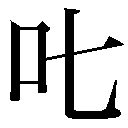責だったってわけだ。
確かに。
根尾さんとの会話だり何だり、ヒントは露骨過ぎるまでに散らかされてはいたけれど──
「気付かないもんだよな──」飲み干したコーヒーを皿に戻す。「けどそんなの、どうやって気付けっていうんだ？ 誰か気付けよって話なんだろうけどさ」
無茶を言うにもほどがある。
こんな無茶苦茶に、ぼくは付き合わなくちゃならないのか？ こんな無茶苦茶に、ぼくは従わなくちゃならないのか？ 哀川さんはぼくの推理を一点と評したが──あんな推理にはその点数ですら甘過ぎる。そしてこんな真相も、ぼくにはとても評価できない。
ああ、卿壱郎博士。
今ならあなたの気持ちが真実、分かる。
そして玖渚友。
兎吊木垓輔。
「てめーらの気持ちなんざ、考えて理解するどころか、聞いて納得するだけのことすら、このぼくにはできねえよ......」
まして、その先を思考することなど。
けれど最後に提出された解答こそが真実だ。
それがルール。
人形劇のルールだ。
理解できなくてもいい。納得できなくてもいい。
賞賛もいらない、評価もいらない。
何も強要しない、何も求めない。
ただ、従え。
羊のように沈黙し、豚のように喰らえ。
「──最ッ高のロジカルだ、下種野郎」
地獄という地獄を地獄しろ。
虐殺という虐殺を虐殺しろ。
罪悪という罪悪を罪悪しろ。
絶望という絶望を絶望させろ。
混沌という混沌を混沌させろ。
屈従という屈従を屈従させろ。
遠慮はするな誰にはばかることもない。
我々は美しい世界に誇れ。
ここは死線の寝室だ、存分に乱れろ死線が許す。
「......好き勝手の好き自由、死んだり生き返ったり──『男塾』かよ、てめーらは」
真実......真実だって？
馬鹿げている。馬鹿げている。馬鹿げている。
何が真実だ。何が真相だ。
ふざけるな。
こんなのは──ただの結果じゃねえかよ。
だけど。
結果を出されてしまえば──文句は言えない。
「どう説明してもどう解説しても──戯言だな」
分からないんじゃない。
知らないんだ。
だから説明しないことが、ぼくの説明。
後ろに向かっての前進。
最後の防壁だ。
──と、空になったぼくのコーヒーカップに気付いて、ウエイトレスさんが寄ってきた。お代わりを薦められるが、ぼくはそれを断った。そうですか、と彼女は笑顔で離れていく。それは営業用の作り笑顔だったが、だけどたとえ作りものの笑顔でも、笑顔はいいものだ。多分最高にいいものだ。いいものは──決して、なくならない。
「──戯言はこれまでだ」
かつん──と。
響く、足音。
喧騒の、ＦＭのラジオが鳴り止まない喫茶店の中でも一際高く、そんな音が響く。
かつん──かつんかつん──かつんかつんかつん──かつんかつんかつんかつんかつん──かつんかつんかつんかつんかつんかつんかつんかつんかつんかつんかつんかつんかつんかつんかつんかつんかつん────────
その音に左腕が疼く。上着の下に相変わらず装備しているナイフと、ズボンのベルトにさしてあるジェリコのことを思った。いやいや、随分と頼りない装備じゃないか。
そして足音はぼくの横を通り過ぎ──ぼくの正面にと座った。つい先程まで人類最強がいたその位置に、怯むことなく座った。
脚を組み、そして優雅に腕を組む。
随分とお洒落なファッションに身を包んでいる。多分何か大仰なブランド名がつくのだろう、純白のスーツ。手袋。靴。腕時計。白衣ではない、これがこいつのスタンダードファッションなのだろう。だがその全てが、スキンヘッドの髪型には変な具合にはまっていて、一種滑稽なくらいの威圧感を放っていた。
施設内のときと同じようにサングラスをかけてはいるものの、そのレンズはオレンジでも黒でもなく、透き通った、限りなく透明に近いグリーンだった。
その緑の向こうで、にやにやと、にやにやと、瞳が笑っている。けれどその瞳の奥は、にこりともしていない。
そして彼は。
彼は、そのままで、何も言わない。
「──ああ。ぼくの質問からでしたっけ」
意外と律儀な奴だ。
こんな場合なのに、ぼくは少し愉快になった。
振られたサイの目は、愉快だった。
嫌いでもなかったし、不愉快でもなかった。
「腕を切ったのはただ単に指紋の問題でしたか？」
彼は──
黙って、首肯した。微笑むように、頷いた。
それは実にあっさりとした答だった。
本当に、あっさりとした解答だ。
全ての──全ての事件が、こういう具合に、綺麗に、理解できて、納得できて、気持ちよく、解決すれば──本当にいいのだけれど。
「考えてみれば──玖渚のことを《死線の蒼》と呼んでいたのはあなただけでしたよね──他の誰も、そもそもそんな名称を知らなかった」
黙って見ていろ、玖渚友。
玖渚は──きっと最初から全てを知っていた。
石丸小唄が哀川潤だということも。
ことの真実も、真相も。
そしてこの結果も。
その上で黙っていた。
黙って、見ていた。
いいだろう、それは悪いことじゃない。
それは裏切りじゃない。
信念のないところに裏切りはない。
信頼のあるところに裏切りはない。
ぼくだって──
黙っていることを、憶えたのだから。
「さて、と──」
それでは皆様。
もうしばしの間だけ、お付き合い願います。
こんな面白いこと──やめられません。
終わりの始まりを、始めましょう。
「きみは玖渚友のことが本当は嫌いなんじゃないのかな？」
兎吊木は──兎吊木垓輔は、いきなり、何の前触れもなく何の前置きもなく、ごく自然のようにごく必然のように、一つの迷いもなく一つの澱みもなく、刹那の躊躇もなく微塵の遠慮もなく、しかし別に高圧な風にでも特に傲岸な風にでもなく、見上げるように見下すように、すらりとさらりとまるで当たり前であるかのようにそう言ってのけた。
ぼくは答える。
「分からねえよ」
《MAD DEMON & DEAD BLUE》is Very Very DEAD END.
●本書は二〇〇二年十一月、講談社ノベルスとして刊行されました。
本作品は、二〇〇八年一〇月、小社より講談社文庫として刊行されたものを電子書籍化したものです。
『戯言シリーズ』配信予告
『ヒトクイマジカル 殺戮奇術の匂宮兄妹』
６月10日配信開始
『ネコソギラジカル（上） 十三階段』
６月17日配信開始
『ネコソギラジカル（中） 赤き征裁 橙なる種』
橙なる種』
６月24日配信開始
『ネコソギラジカル（下） 青色サヴァンと戯言遣い』
７月１日配信開始
◎本電子書籍内の外部リンクに関して
ご利用の端末によっては、リンク機能が制限され正しく動作しない場合があります。また、リンク先のｗｅｂサイト、メールアドレス、電話番号は、事前のご連絡なく削除あるいは変更されることもございます。ご了承ください。
サイコロジカル（下）
曳かれ者の小唄
二〇一六年七月一日発行
西尾維新
©NISIO ISIN 2016
発行者 鈴木 哲
発行所 株式会社講談社
東京都文京区音羽二‐一二‐二一
〒112-8001
◎本電子書籍は、購入者個人の閲覧の目的のためにのみ、ファイルの閲覧が許諾されています。私的利用の範囲をこえる行為は著作権法上、禁じられています。
16A0422E
01